| 【合本版1-3巻】レベル無限の契約者～神剣とスキルで世界最強～ | |
| わたがし大五郎 | |
| TOブックス (2019) | |
※本電子書籍は「レベル無限の契約者 〜神剣とスキルで世界最強〜」１〜３巻を１冊にまとめた合本版です。
ＣＯＮＴＥＮＴＳ
このコンテンツは『レベル無限の契約者 〜神剣とスキルで世界最強〜』１〜３巻を収録しています。
Illustration 秋咲りお
Design BEE-PEE
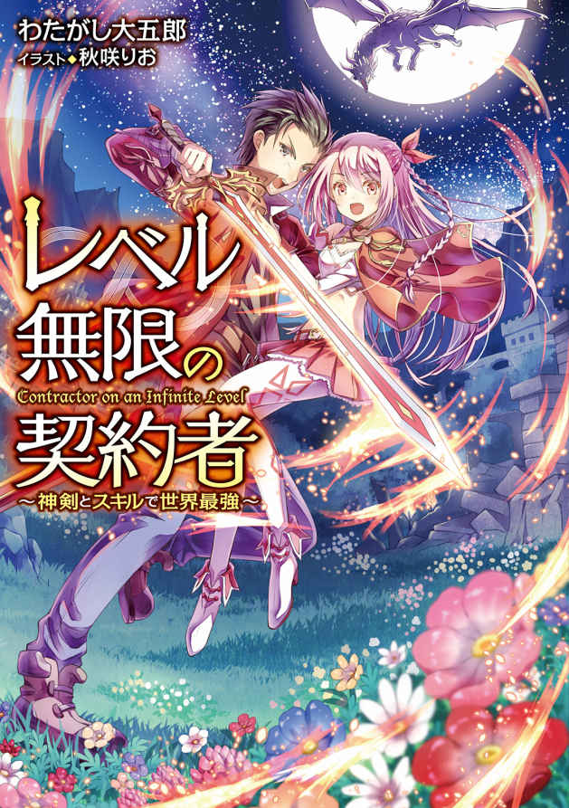
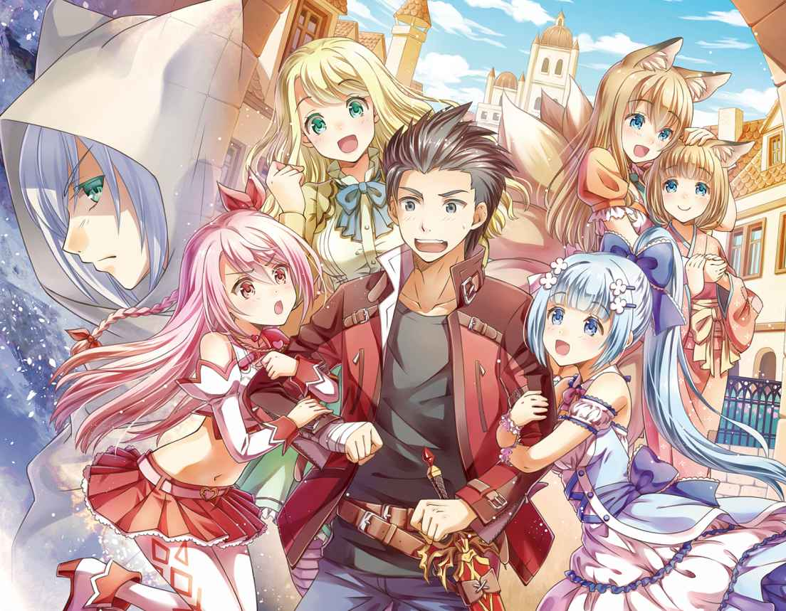
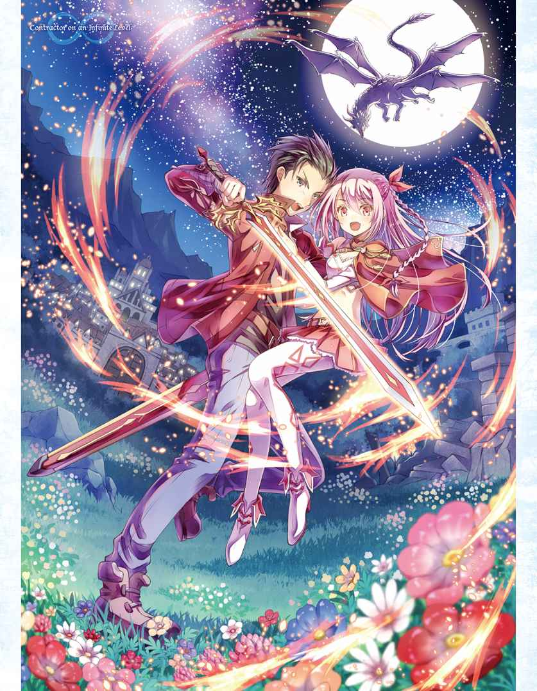
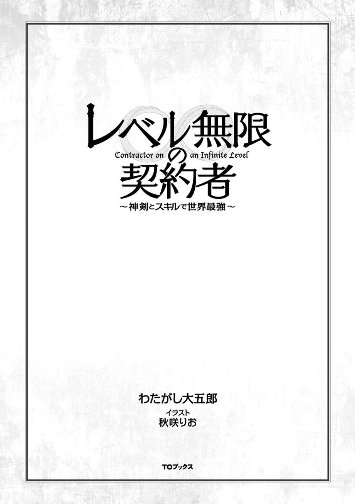
灰色の空に、竜の悲鳴がどこまでも響く。
焼け焦 げた大地の中心で、俺は荒廃した世界を眺めていた。
この世界の終わりの如き状況を作り上げたのは、紛れもなく俺たち だった。
「──どうかしら？ これが、あたしたちの力よ」
これほどの魔法を使えるようになるとは、聞いていなかった。
神剣と契約し、力を解放したことで、最強最悪の種族──竜の命が次々と消えていく。
手に握っている彼女を眺めていると、手足が痺 れ、血の気が引いていく。
全身を引き裂くような痛みが走り、俺は意識を手放した。
† ׆
俺、グラッドは世界を恨んでいた。
これでも、幼い頃は平凡な人生を歩んでいたのだが、十年前のことだ。
両親がギャンブルに依存して借金が膨らみ、領主の屋敷から金を盗んで失踪してしまったことで、全責任が俺に押し寄せた。おかげで投獄されかけたが、人権派で知られる神父様の温情によって減刑を受けることができたわけだ。
それから俺は傭兵 として働きながら、両親の後始末をするハメになった。
傭兵とは、金のために争いを代行する者たちのことを呼ぶ。命懸けの仕事のため、高額の賃金が保証されているのが特徴だろうか。もっとも金の殆どは借金の返済に当てられてしまうので、手元には僅 かな金しか残らなかったが。
──あれから月日が経ち、今年で二十五歳になる。
ようやく借金も返済が終わり、それなりに平穏な日々を迎えていたはずだった。
しかし、一か月前のことだ。
友人が領主の宝石を盗み、その罪を俺になすりつけやがった。
何も知らなかった俺は激怒した領主に呼び出され、事情を知ったわけだ。
何度も無実を訴えたが信用されず、ろくな調査もされずに投獄され、竜の生贄 として捧げられることが決定した。
あんまりな仕打ちであった。
数日かけて竜の渓谷 まで運ばれ、極寒の祭壇に放り出される。
と、他にも生贄がいた。
「うぅ......助けて......！」
金髪碧眼 のラミアであった。
ラミアは女性しか生まれない珍しい種族で、上半身は人間でありながら、下半身は蛇のような姿をしている人外 である。
人外とは、人に分類されながらも動物のような見た目を持つものたちのことを総称して呼ぶ。ただし人間に比べて地位が弱く、世界中で迫害されている傾向が強い。
おそらく、彼女も些細なことで生贄にされたんじゃないだろうか？
「死にたくないよぅ......」
すぐに影が空を覆った。
夜の暗さとは明らかに違う。仰げば、月を隠すほどの巨大な竜が飛んでいる。
俺たちを餌 として喰らうつもりなのだろう。
「や、やだ！ 誰か、助けて......！」
震え、泣き叫ぶラミア。
どうにかして助けてやりたいが、今の俺は剣すらも持ってない。
この状況で助けるなんて無理だった。
でも。
「放っておけないよな......」
胸の奥底で熱い何かが煮えたぎっている。
もしここで俺に注意を惹きつけられれば、ラミアを逃がすことができるかもしれない。
だが、相手は竜だ。ここで立ち向かえば確実に殺される。苦しみながら、恨み言を吐きながら、みっともなく俺は死ぬことになるだろう。
──それでも、助けないと駄目だって思ったんだ。
俺には居場所がない。帰る場所がない。
それなら最後に人助けをして、自己満足に浸りながら、優越感に溺 れて消えていくのも悪くないと思った。
それに、ここで彼女を助けなかったら、生き残っても後悔するような気がしたから......。
だから、立ち上がった。
「おい、ドラゴン......どこ、見てんだよ......！」
声は震えていたと思う。俺は挑発し、体当たりをぶちかました。
竜はジロリと睨 んでから尾を振り回す。直撃した。
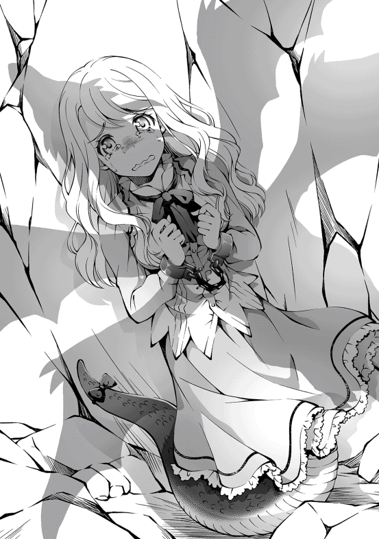
俺は地面を小石のように跳ね、凄まじい勢いで地面に叩きつけられる。肺が潰れたかのように呼吸ができない。骨も何本か折れているらしく、激痛が走る。
痛い......痛くて、震えが止まらない......。
それでも、必死に尾を掴 んだ。掴み続けた。手放さなかった。
逃げろっ、と叫び続けた。
ラミアは躊躇 をしていたものの、やがて意を決したように逃げていく。
そう、それでいいんだ。これで彼女は助かる。これで良かったんだ。
安堵した俺は、意識を失う瞬間まで竜を引きつけた。
といっても、数十秒に満たなかったと思う。
薄れゆく意識のなか、最後に思い浮かんだのは過去の記憶であった。
──一目惚れしたあの娘に告白したら、恋人を紹介された十二歳の夏。
──初めての給料で奮発した、ちょっと高めのステーキ。
──両親に捨てられても、前向きに生きてきた輝かしい日々。
毎日が楽しかったんだ。
子供みたいにウキウキして、明日が来るのを楽しみにしていたんだ。
それなのに、どうして......どうして、俺は死なないといけないんだろう......。
意識が暗転する。竜に飲み込まれる。
やりたいことがたくさんあったのに、俺の人生はここで終わるのだ。
......そのはずだったのに。
「もしもし、生きてるかしら？ 驚いたわ、まさか人間が落ちてくるなんてね」
どうして、少女の声が聞こえるんだろうか。
† ׆
「そこのあなた、生きているわよね？」
最初は幻聴かと思った。なにせ、ここは竜の胃袋だ。
しかし、確かに声が聞こえてくる。声の主を探してみるが誰もいない。代わりに俺の隣に一本の長剣が転がっていた。不思議な力を感じる。
「よかった、あたしの声が聞こえるみたいねっ」
間違いない。長剣から声が聞こえてくる。
「ねね、ここから出たいと思わない？」
なんだこの剣......どうして、喋 っているんだ？ 疑問を投げかけようとしたが、想像以上に怪我が酷かったらしく、血を吐いてしまった。
「ちょ、ちょっとしっかりしなさい！ すぐに治療してあげるからねっ！」
そんな俺を心配してくれたのか、剣の悲痛な叫びが頭に響く。
「──癒 しの風よ。恵みの雨よ。正しき者を癒しなさい......。ヒーリング！」
それは魔法だった。
途端に傷が癒 え、ぼんやりとしていた視界が晴れていく。
魔法とは、マナを利用して様々な超常現象を引き起こす、不思議な力のことを呼ぶ。
当然、誰にでも扱えるわけじゃない。
深い知識と鍛錬が必要なので、魔法を扱える者は大変貴重とされている。
そんな魔法を、この剣は唱えてみせた。
なんなんだ、この剣は......。
「これで大丈夫よ。よかったら、あたしの話を聞いてくれないかしら？」
優しく、穏やかな剣の問いかけに、俺は頷 くしかなかった。
「あたしは大罪神剣のひとつ、嫉妬 のリヴァイアサンって呼ばれているわ。気軽にリヴって呼んでくれると嬉しいわ。よろしくね」
──大罪神剣 。
三百年前、七つの大罪と恐れられる悪魔たちが地上に降臨し、世界統一を掲げて人類と壮絶な戦争を繰り広げたとされている。
のちに断罪戦争と呼ばれる戦争は一年で終結し、七つの大罪は七本の神剣に魂を封じ込められた。そして、今も世界のどこかで眠っているとされている。
目の前で話しかけてくるこの剣こそが、その大罪神剣だっていうのか？
まさか、そんな馬鹿な話があるものか。
「その顔は疑問を抱いてるようね？ まぁいいわ、あなたにお願いがあるの」
彼女は言った。
「あたしと契約を結ばない？ そしたら生きて外に出してあげる」
一瞬、何を言っているのか理解できなかった。
彼女が本物の大罪神剣だとは信じていない。しかし仮に本物だった場合、彼女と契約を結ぶのは危険かもしれない。
なんせ、大罪神剣に封印された悪魔たちは、全人類を根絶やしにしようと考えていた危険な思想を持つ連中だ。この場は協力してくれたとしても、すぐに裏切ることは目に見えている。
だから、はっきりと告げた。
「断る」
彼女は一瞬驚いたが、すぐに声を荒げる。
「ど、どうしてよっ？ そんなに悪い条件じゃないはずよ？」
「......助けてくれたことには感謝しているよ。でも、お前たち悪魔がどれほどの命を奪ったと思っているんだ？ 今でも草木が枯れ果てた大陸があるんだぞ」
「知らないわよ。あたしは殺してないもの」
は？ 殺してない？
「あたしは人類と戦わなかった。むしろ、大罪の暴走を止めるために動いていたのよ。聖王国のお姫様と協力して、一年間の死闘を繰り広げて、世界はようやく平和に導かれるはずだった。でもね......」
寂 しそうに言葉を弱めた。
「大罪の力を危惧した国王が、あたしの魂を無理やり神剣に封じ込めたの。悪魔を信じられなかったんでしょうね。あたしは神剣に魂を奪われて、竜のお腹に封印されたわけ。酷いお話でしょう？」
悪魔が人を助けたなんて、聞いたこともない。
でも、彼女が嘘 を吐いているとは思えない口ぶりであった。
「結局、あたしは利用されて捨てられちゃったの。平和になった世界を自由に歩きたかったんだけど、死ぬことすらも許されず、ずっとここに封じ込められていたのよ」
「......さっき、脱出できるとか言ってなかったか？」
「悪魔は誰かと契約しないと力が出せないの。意外と不便な存在なのよ？」
彼女の話が本当なら、人間の都合で利用され、封印されたということになる。
まるで、今の俺にそっくりだ。
「あなた、ここに来たってことは生贄なんでしょう？ 悔しくないの？」
「それは......」
「あたしは悔しい。悔しくて、悔しくて仕方ないわ......！」
俺だって悔しいさ......。だから、彼女の言葉が理解できる。
「大変だったんだな、お前さんも......」
「へえ、あたしの言葉を信じてくれるんだ？ ふふ、同情してくれてありがとうね」
彼女は笑った。寂しそうに、小さく笑ってくれた。
「ほらほら元気を出して？ 辛気臭い顔をしないの！ クヨクヨしたって仕方ないわよ。死んだら終わりだけど、生きていればいいことがあるはずだもの、ね？」
彼女はそう言うと、今度は魔法で水を生み出して、俺の体に付着した胃液を洗い流してくれた。孤独だった俺には、彼女の些細な優しさが温く感じられた。
「ねね、今度はあなたのお話を聞かせてくれないかしら？」
俺はぽつりと語っていく。
借金、裏切り、生贄......。
素直に現状を受け入れることができたのは、人生を諦めていたからだろう。
両親に裏切られ、友人に裏切られ、生贄に捧げられてしまった。
俺はなにもしていないのに、誰も信じてはくれなかったのだ。
寂しかった。辛かった。悔しかった。
「俺、夢も希望も抱いてなくてさ、ひとりに慣れているつもりだった。家族が借金を残しても、友人がいなくても、平気だって自分に言い聞かせてきた。でも、駄目だった......。誰も俺を受け入れてくれなかったんだ......」
自分のことながら、なにを伝えたいのか分からない言葉だった。
それでも彼女は聞いてくれた。
怒りが、悲しみがこぼれていく。
竜の胃のなか、二人だけの世界で俺たちは語り合った。
「......そう、辛かったのね。でも安心しなさい！ あたしは信じてあげる。グラッドは罪を犯してない。だって、すごく綺麗な瞳をしているもの！ 夢も希望もないのなら、あたしが教えてあげる。どんなに絶望しても光が必ずあるってここで教えてあげるわ！ 大罪神剣とまで恐れられたあたしが約束してあげる。だから、元気を出しなさいって！」
こんな俺を、彼女は認めてくれた。嬉しかった。
「あたしたちは似ているかもしれないわね。ふふ、グラッドを気に入っちゃった。どうせならここから脱出して、ハメた人間たちを驚かせるぐらい変わってやりなさいよ？ グラッドならできるわよ」
俺は変われるんだろうか？
両親の罪を背負わされ、蔑 まれていた日々。
他の人とは違う。普通の生活を送ることは許されないと思っていた。だが、リヴはそれを知っても話を聞いてくれた。
「どうにかして外に出してあげたいんだけど、契約以外に方法が見つからなくて......少し考えてみるから、時間をくれないかしら？」
どくん、と心臓が鼓動を上げる。
俺は変わりたい。変わらないといけないんだ。
自分で道を切り開くために、彼女のように強くなりたい。
理由はわからないけど、三百年も孤独に耐えた彼女の前向きさを見ていたら、不思議とそう思った。
どんな状況に堕ちても自分を信じられるようになるために。
だから......自然に言葉を紡いでいた。
「するよ」
「え？」
「リヴ、君と契約する。いや、違うな。契約させてほしい。こんな俺を助けてくれて、信じてくれた君に恩返しをしたいんだ。外に出たいんだろう？」
「え、ええ......でも、本当にいいの？」
それはとても小さくて、弱々しい響きだった。
「......言い忘れてたけど、悪魔と契約したら大変なのよ？ 契約は魂を結ぶ行為なの。一生離れることができないのよ？ それに大罪神剣の契約者だと知られたら、グラッドは世界中の人類を敵に回すかもしれないわ。それでもいいの......？」
先ほどとは違い、怯えきった声。
その心に、どれだけの裏切りを刻んできたのだろうか。利用され、魂を封印され、たった一人で生きてきて、それでも絶望せずに希望を抱き続けた少女。
そんなリヴに笑ってほしいと思った。
「気にしないさ。どうせ一度は死んだ命だ。これからは、リヴのために生きる人生も悪くないって思えた」
絞り出すように、胸の奥底から湧いてくる想いを言葉にのせる。
「あっ......」
リヴの短い嗚咽 が漏 れた。
「......あたしね、ずっと寂しかった。ずっと怖かったの！ あたしだって普通の女の子として世界に受け入れてほしかった。でも、駄目だった......悪魔は受け入れてもらえなかったから......寂しかった......！」
リヴの沈んでいた感情が爆発していく。俺たちはどこまでも似ていたらしい。
「俺、生きていただけだった。この歳で夢も希望も抱いてなかったけど、今日初めて、リヴの力になりたいって思えたんだ」
少女の涙はいつだって苦手だ。ずっと笑っていてほしい。笑い続けてほしい。
「契約しよう。俺は生涯リヴを裏切らないと約束する。その代わりに、リヴは俺に希望を与えてほしい。力を貸してほしいんだ」
「グラッド......」
「この世界は理不尽なことが多い。生きていくって大変なことだと思う。でも、リヴのおかげで諦めたくないって思えるようになったんだ。やれることはやってみたいんだ」
神剣 を握った。
「君は凄い。世界のために悪魔を裏切ったんだろう？ それって普通はできることじゃない。世界が否定したとしても、俺はリヴを尊敬するよ。助けてくれて、ありがとうな」
笑いかけると、リヴは声を歪 めた。
「ずっとひとりぼっちだと思ってた......。あなたも、あたしの言葉を信じてくれないんだろうなぁって疑ってたの......ごめんね......」
気丈に振る舞っていた彼女の、本当の感情が溢れだす。
「気にするなって。リヴの気持ち、俺が受け止めるから」
──不安、恐怖、寂寥 。
三百年も孤独を感じるって、どれほど辛いことだろうか？
そこには俺の想像を絶する過酷さがあったに違いない。
その過程で隠してきたはずの、無理やり抑えてきたはずの感情が溢れていく。
「リヴ、俺と契約してくれないか？」
「ぐずっ......ええ、もちろん、よっ......ここから、始めましょう......！」
彼女は泣いていたけど、笑ってくれた。
生贄と大罪神剣。
本当なら出会うことがなかった俺たちは、邂逅を果たした。
ここから変わるんだ。
俺たちが生まれ変わるために、ここから。
「契約を始めるわ。──汝、望む願いを伝えよ」
複雑な魔法円が虚空に生まれ、淡い光が俺たちを包み込む。
「力がほしい。約束を守るための、リヴを守れるだけの圧倒的な力を望む」
「グラッド......」
魔法円が輝きを増し、光が弾けた。
「──嫉妬を司 るリヴァイアサンはこれより、グラッドを所有者として認める」
直後、右手の甲から腕までびっしりと紋様が刻まれていく。
力が湧き上がる。
「さあ、あたしを強く握って。そうすれば──」
俺が神剣 を握ると、焔 の輝きが刃に集まる。
「──契約者にあたしの力が、スキルが受け継がれるのっ！」
▼Skill：『劫火一閃 』を修得しました。
脳にイメージが流れ込む。焔を宿した剣技だった。
「さあ、スキルを放って！」
模写するように剣を振る。
すべてを焼き尽くす炎の斬撃──。
「劫火一閃ッ!! 」
灼熱を宿した斬撃が、胃壁を焼き払った。
そして、月光が差し込む。
▼Skill：『魔竜召喚』を修得しました。
† ׆
胃壁を蹴り上げ、外へ飛び出す。
大勢の竜に囲まれていた。
毒を吐く竜。蛇の姿をした竜。翼の生えた竜。黒鱗を持つ竜など、その種類は数十を超えていた。
「なんだ、この数......」
「世の中は弱肉強食よ。弱き者は衰退し、強き者は繁栄する。古来よりそうやって生物は生き残ってきたの。この竜族のようにね」
それが世界の法則だった。だから俺は、弱者として生贄に捧げられたのだ。
「生き残るためには戦うしかない、ってことか」
「その通り──来るわよっ！」
まず、赤竜が動き始めた。
その鋭い牙を剥 きだしにした口を開き、炎の塊を溜め始める。
竜の息吹 は数千度にも及ぶとされており、近づいただけでも皮膚は焼け爛 れてしまう。
一瞬、死を覚悟した。
「焦 らないで、大丈夫だから。あたしはこれでも大罪神剣なのよ。あんな攻撃くらい──」
言い終えるよりも早く、赤竜の息吹が放たれる。
空気を遮断し、大地を溶かし、凄まじい衝撃が俺たちを襲 った。
でも、熱はまったく感じられない。
「──打ち消してみせるから！」
リヴが笑っていた。打ち消したのだ、彼女が。
「すげえ......今のもリヴの力か......」
「ふふん、すごいでしょ？ あたしと契約している限り、神剣の力を享受 できるんだから」
先ほどまで俺には力がなかった。でも、今はリヴが力を与えてくれる。この場を乗り越えられるだけの力がある。これならいける。
「さあグラッド、恨みを吐きなさい！ 生きることに嫉妬するの！ 今のあなたなら大丈夫......。だって、ひとりじゃないんだから！ これから一緒に戦いましょう！」
そうだ、俺たちは一連托生 の関係だ。
こんなところで殺されるわけにはいかなかった。
「リヴ 頼む──俺に力を貸してくれ！」
「ええ、喜んでっ！」
神剣を構え、地を蹴り上げる。
翼竜二体をすれ違い様に葬 った。
▼Skill：『加速』を修得しました。
▼Skill：『気配感知』を修得しました。
▼Skill：『状態耐性』を修得しました。
▼Skill：『雷属魔法』を修得しました。
新たなスキルを修得していた。
「ふふん、驚いているようね？ これが嫉妬の大罪神剣が持つ固有能力『スキル吸収』よ。亡くなった魂の残留思念を吸い取って、力を取り込むことができるの。グラッドは敵を倒せば倒すほど、どんどん強くなれるのよ。すごいでしょう？」
とんでもない能力であった。
これなら竜とも対等に渡り合える。
当然、動き出した竜は止まらない。
四方八方から襲ってくる竜の群れを相手に、神剣を振り続ける。
「はぁあああああっ！」
正面から襲ってきた土竜の首を切り落とし、右側の青竜の鱗 を裂く。そのまま力任せに切り裂き、背後にいた蛇竜の心臓を貫いた。
▼Skill：『魔法耐性』を修得しました。
▼Skill：『治癒 魔法』を修得しました。
▼Skill：『地形探査』を修得しました。
▼Skill：『薬剤調合』を修得しました。
力が湧き上がる。
「やるじゃない！」
「剣だけは自信があるからな」
「そうみたいね！ 剣筋が一流だもの！」
傭兵として生きてきた人生も、無駄ではなかったということか。
「そうそう、グラッドにはレベルが設定されているわ。レベルっていうのは個人の強さを数値化したもので、英雄クラスの人間でもレベル四十前後が水準とされているの。それでね、今のグラッドのレベルは──」
視界の端に映った竜を、体の正中線上で両断する。
「──軽く十倍は超えているわね」
神剣と肉体が一体化したかのように、力が爆発的に加速した。
「これが第二の固有能力『経験発現』よ。契約者の成長速度を促進させてあげられるの！」
竜の身体を蹴り飛ばし、大気を断つほどの斬撃を放つ。
たしかな手応え。両手に感じる疼 き。空気が炸裂する音。
俺が放つ一撃は竜と衝突し、耳を轟 かせるほどの衝撃波となって、その場を駆け抜ける。
「一気に行くわよっ！」
「ああ、わかった！」
脳裏に浮かんだのは詠唱であった。
『──いずれかの黄泉 に賜 りし、死言を結びて奉 る。
御身に与えし破壊の力、再び我に賜らん。
我を蝕 むは純粋なる心、後顧 の憂いを絶たんがために。
懺悔 せよ。後悔せよ。
この世に生まれたことを嘆け。
常闇 を祓 い、罪を受けとめよ──』
リヴと意識が同調する。
「「 魔竜召喚 」」
先ほどまで、俺たちを飲み込んでいた大いなる存在が虚空の魔法円より出現し、大地を踏みしめ、その口腔 に紅蓮の輝きを溜め始める。
俺たちは同時に叫んだ。
「「 滅ぼせ！ 」」
刹那 、世界が強い焔の煌 きに包まれた。
視界が赤に染まり、全方位に紅蓮の炎が炸裂する。
燃え上がる大地。灰色に染まる空。竜の悲鳴がどこまでも響く。
この世界の終わりの如き状況を作り上げたのは、紛れもなく俺たちだった。
「どうかしら？ これが、あたしたちの力よ」
──信じられない。
──たった一度の魔法で、あれだけの竜を一瞬で滅ぼしたというのか。
竜の渓谷は地形を変えてしまった。
左右に屹立 していたはずの谷はすっかり溶け、竜たちのほとんどが燃え尽きている。気軽に使えるような力じゃないな......。
「リヴって、すごいんだな......」
「あら、いまさら気付いたのかしら？」
俺の手に握られた彼女に笑いかけると、突然手足が痺れ始めた。
全身を引き裂くような痛みが駆け巡る。
なんだ、これは......。
「一気に力を解放した反動がきたみたいね。大丈夫、周囲に敵はいないから安心して休みなさい。その間、あたしがグラッドを守るから」
意識が落ちていくなか、俺は静かに星を見上げて誓った。
──リヴを守ってみせる。
契約が俺たちを繋ぐ限り、未来永劫、無限の誓いとして守り続けてみせる。
それが俺にできる唯一の恩返しだから。
そんな想いを胸に、俺は意識を手放した──。
嫉妬の大罪神剣『リヴァイアサン』
▼Unique Abilities
・大罪ランク ： 第３位階級
・断罪レベル ： １
・魔法否定 ： 契約者をあらゆる魔法から身を護る加護
・経験発現 ： 成長限界を解き放ち、成長速度を数千倍に増加させる力
・スキル吸収 ： 魂の残留思念を己の力へと変換する
・嫉妬覚醒 ： ？？？
目を覚ますと、見渡す限り灰色の地平線が続いていた。
冷たく乾いた大地には一切の生物の気配がなく、焦土が延々と広がるばかり。
......夢じゃなかったんだ。これ、俺たちがやったんだよな。
改めて大罪神剣の力が凄まじいと感じる。
ふと仰げば、青い空がどこまでも続いていた。時折、雲に隠れる太陽の向きから計算して、午後を迎えたようだ。
「おはよー。目を覚ましたみたいね。ふふ、寝顔がとっても可愛かったわよ」
俺の横では、リヴが地面に突き刺さっていた。ずっと見張りをしてくれていたようだ。
「ああ、おはよう。もしかして徹夜してくれたのか？」
「まあね、だって約束したでしょう？ ......くしゅんっ！ あぅっ!? 」
と、くしゃみをした弾みで剣が抜け転がる。強く頭を打ったかのように、悶絶するような声にならない声を上げた。
「うぅ、痛い......」
「だ、大丈夫か？」
「うん、平気よ......でも、痛いの......」
華奢 な刀身を震わせる姿は、やたらと可愛らしい。
リヴの姿はどこからどうみても装飾華美な長剣だが、こうして話してみると、中身は女の子と何も変わらないんだよな。不思議な感じがする。
「あー、そうだ！ グラッドに伝えないといけないことがあったのよ！」
「俺に？」
「ええ。実はね、大罪神剣の契約者となった瞬間から、グラッドの肉体が一番能力を発揮できる最適な年齢まで若返っているの。ちょっと確認してみてくれないかしら？」
ふむ、言われてみると身体がやたらと軽く感じるな。
視線を下げてみると、そこには以前より細くなった手足があり、右腕には契約の印がびっしりと刻まれている。以前よりも筋肉がたくましくなったような気がするが、鏡がないとよく分からないな。
ちょうど近くに水溜りがあるので、ちょこっと覗 き込んでみるか。
それではさっそく......。
「えっ......なんだこれ......!? 」
そこに映るのは、二十五歳だった俺よりも明らかに若い青年だった。
見た目は十六歳ぐらいだろうか。
黒髪黒目で背が高く、すれた目はしているが整った容姿をしている。
若い頃の自分と比べても明らかに別人──まるで生まれ変わったようだ。
「これも大罪神剣の固有能力ね。契約者がもっとも力を行使できるように、肉体を内側から作り変えちゃうのよ。精神年齢も引っ張られる形で退行しちゃうけど、微々たるものだから安心していいわ」
精神退行については実感がないが、今の俺を見ても領主たちはグラッドだと気付きもしないだろう。それほど姿が変わっているのだから。
「さぁて、これからどうする？」
リヴが何事もなかったかのように、くすっと笑う。
その可憐な笑みに釣られて苦笑をこぼした。
「俺は特にやることがないからな。リヴは何かないのか？」
「うーん、一応あるかしら」
一瞬、リヴは声のトーンを下げた。わずかな沈黙を狙って言った。
「色欲の大罪神剣と決着をつけたいわね」
おっとりとした愛らしい口調で、静かに告げられた言葉の真意。
色欲の大罪神剣......。断罪戦争で脅威をもたらした悪魔が封印された神剣。
三百年前に行われたという断罪戦争──。
その全容がどんなものであったかは、現代でも調査が進んでいない。ただ確実なことは、七つの大罪を名乗る悪魔が、悪魔以外のすべての存在を淘汰 するべく、世界中に深刻な被害をもたらした。
そもそも七つの大罪とは、七人の悪魔のことを指す。
・色欲──堕落を司る性欲の智 天使、アスモデウス。
・傲慢 ──光をもたらす黒の堕 天使、ルシファー。
・暴食──世界を混沌に導く堕神王、ベルゼブブ。
・憤怒 ──冥界 を統べる神の敵対者、サタン。
・強欲──善意を装う裏切りの魔王、マモン。
・怠惰 ──疫病 を撒 く厄災の竜王、ベルフェゴール。
・嫉妬──本能を引き出す獣の王、リヴァイアサン。
これが、俺の知っている七つの大罪の悪魔だ。
俺の読んだ歴史書では、三勢力──人間、人外、竜の最強戦力が同盟を結び、七つの大罪と真っ向から戦い、かろうじて勝利したと記録されていた。
もちろん、リヴも敵として書かれている。
だが、実際にはリヴは人類を守っていたと主張していた。なんとなくだが、リヴは嘘を吐いていないと思う。歴史の方が改竄 されているのだろう。
しかし、色欲の大罪神剣と決着をつけたい、ってどういう意味だ？
「色欲と因縁でもあるのか？」
「ええ、私が封印された直前まで死闘を繰り広げていてね、お互いに瀕死 だったの。でも、あと一歩で封印できるってところで、国王が乱入してきたのよ。多くの呪術師を連れて、あたしたちを囲み、神剣に魂を封印したってわけ」
それが歴史の真実なのか。人類のために一生懸命になって戦ってくれた少女。しかし、悪魔だから人類に裏切られた。
なんというか、国王に怒りが湧く話だな......。
「ん、でも待ってくれ。リヴはこうして復活したよな？ それって一緒に封印された色欲の大罪神剣も目覚めている可能性があるってことか？」
「そういうことよ。あいつは、アスモデウスは間違いなく目覚めているはずよ。どこに封印されたかは知らないけど、必ず他人に取り入って、虎視眈々 と世界へ反逆する機会を伺 っているはずだわ。そういうやつなのよ、アスモデウスは」
おいおい、それってまずいんじゃないか？
俺がリヴと契約したように、アスモデウスも誰かと契約を交わしていた場合、再び世界の覇権を巡って戦争を引き起こす可能性は大いに考えられる。
「決着をつけたいって、そういう意味か......」
「ええ。今度こそこの世から消滅させないといけないのよ」
「......念のために聞きたいが、他の大罪神剣が目覚めている可能性はあるのか？」
「無いわね。他の大罪は、当時の契約を結んでいた姫騎士とあたしが完璧に封じ込めたもの。現在も人の手が及ばない場所で封印されているはずよ」
即答か。ということは、本当に目覚めている可能性は低いのだろう。
さて、目的は決まったわけだ。当面は色欲の大罪神剣の探索だが......。
「アテはあるのか？」
「あるわ。あたしたちが最後に戦った砦が、この近くにあるのよ」
「そこに手がかりがあるかもしれないってことか」
「うん、そういうことっ」
リヴは、軽く笑った。
「ふふ、話は決まりね！ そうと決まれば──」
「さっそく移動だな」
「──旅に必要なものを集めましょう！」
そっちかよ。しっとりとした笑顔が似合いそうな声音を上げてくれることで。まぁ一文無しで旅もできないしな。
俺はリヴを連れて、見渡す限りに広がる焦土、その崩れ残った部分にある金銀宝石を集めることにした。竜の素材も回収しておこう。
しばらくして。
「でも、本当に契約してよかったの？」
リヴは、ぼんやりとそう呟 いた。
「ほら、あたしは大罪神剣だからね。これからグラッドを大きな事件に巻き込むし、迷惑をかけてないかしら」
こんなことを聞いてくるということは、やはり不安を抱えているのだろう。
自分は他とは違う。世界から恨まれる悪魔である、と自覚しているから。
より正確に言うならば、俺を巻き込んでしまったことに罪悪感を覚えている節がある。
そうでなければ、こんなに倒錯した台詞は出てこないはずだ。
......過去に、人類全てから裏切られているんだもんな。
不安になって当然だ。
「俺はリヴがいなかったら死んでいた。心から感謝しているんだぜ。だから、何が起きても受け入れる。事件に巻き込まれたっていい。俺が選んだ道だ。リヴが気を遣う必要はどこにもないって」
「グラッド......！」
震える彼女の声には、涙が混じっていた。
「ほら、落ち着けって。意外と泣き虫なんだな？」
「あたし、悪魔なのに......こんなに優しくしてもらったのは、初めてで......ひぐっ......嬉しくて......」
初めてか......。
リヴを取り巻いていた状況は、予想よりも遥かに酷かったようだ。
七つの大罪、嫉妬を司る悪魔リヴァイアサン。彼女が泣き虫だなんて、俺しか知らないことなんだろうな。
「大丈夫、俺はここにいるから」
リヴの柄を優しく握り、笑いかけてやった。
「うん......うんっ！ あたしこそ不束者 だけど、よろしくね......っ！」
そう言って笑った彼女の声は、やっぱり可愛らしくて。
まずは、ふたりで世界を歩いてみようと思う。その最初の一歩を踏み出すためにも、まずは断罪戦争の最後の舞台となった砦を目指すことにしよう。
「この旅でグラッドのやりたいことが見つかるといいわね」
リヴは優しく、嬉しそうに言ってくれた
──ほんと、勝てないよな。この娘には。
† ׆
断罪戦争、終幕の砦──。
悪魔との戦争に備え、開拓された地。晴天を、いつしか見上げた空を覆いつくしていた。ぽつり、ぽつりと小雨が降り出す。
「ふぅ、やっぱり降ってきたわね」
「急いで正解だったな。もう少しで濡れるところだった」
俺の腰に下げられたリヴは、やたらとご機嫌である。
長い年月を竜の腹で生きてきた彼女にとって、外の世界を体験することは、待ち望んでいた夢がようやく叶った子供のように、無邪気に喜びを噛 み締めていた。
悪魔と恐れられ、世界から拒絶された少女。けれど、俺の前で旅を満喫する姿は、そんな噂 とはまるで違う。ただの少女にしかすぎなかった。
このリヴこそが、本当の素顔なのかもしれない。
もっとも、神剣である彼女の表情なんてわからない。それでも一緒に旅をしているのだから、細かいことも気になってしまう。ほら......一応、異性だしな。
さて、リヴが色欲の悪魔と決着をつけ損なった場所が、この砦である。
この辺りはとっくの昔に野盗によって荒らされているので、手がかりが見つかる可能性は限りなく低い。しかも、長い年月放置されていたので荒れ果てており、草木の蔓 が侵食し、無残な姿へと変わっている。
しかも、中からは魔物たちの呻 き声が聞こえていた。
「ここを探索するんだな？」
「ええ。この砦には秘密の仕掛けがいっぱいあるのよ。誰にも見つかってなければ、何か見つけられるかもしれないわ」
凛々 しい声で、彼女は言った。
さっそく足を踏み入れると、霊体系の魔物──ゴーストが襲ってくる。
「せっかくだからスキルを集めてみましょうか」
神剣を抜刀し、おもむろに切り付ける。
通常、霊体系の魔物に斬撃は通用しない。しかし、流石 は神剣か。一撃で断ち切った。
▼Skill：『裁縫』を修得しました。
▼Skill：『鑑定』を修得しました。
おっと、意外なスキルが手に入ったな。
「霊体系の魔物はね、人間や人外の強い怨念が生み出した魔物なの。魔物に成り果てるまでは裁縫に関わる仕事でもしていたんじゃないかしら。例えばそうね、衣料品とか？」
「......ま、考えている暇は無さそうだが」
今の喧騒 を聞きつけたのか、今度はデュラハンが襲いかかってきた。
デュラハンは騎士の姿をした魔物だが、意外と手強いことで恐れられている。魔法も使ってくるので先手必勝が有効か。
肉迫──鎧を貫く。
▼Skill：『首接合』を修得しました。
なんだこれ。
「自然治癒系のスキルね。死後限定だけど、首が千切れても勝手に再生してくれるわよ」
「死後限定って、不要なスキルじゃないか......？」
「そうとも言うわね」
間違いなく不要だろう。
一階を探索してから階段を上ると、二階から獣の匂いが漂ってくる。警戒しながら進むと、今度は狼とオーガが待ち構えていた。どうやら二階を寝床にしていたらしく、雄叫びを上げながら大斧を振り下ろしてきたので、反撃とばかりに一閃する。
▼Skill：『厚い脂肪』を修得しました。
「全身に脂肪を増やして、寒さから身を守る効果みたい。欠点としては太るわよ」
「いらねえ......」
不要なスキルも手に入るんだな......。
「スキルで有能なものなんてほとんどないわよ。不要なスキルは消しておくわね」
どうやらリヴの意思で消すことができるようだ。これまでに修得した使えないスキルをまとめて処分してもらうとしよう。
その後も探索を続けていると魔物が追ってきたので、スキルが次々と増えていく。
▼Skill：『妄想』を修得しました。
隠し部屋の隅でガタガタと震えていたスケルトンに声をかけたら、驚いて昇天して逝ったんだが......。今のスケルトン、もしかして虐 められていたんだろうか？ そうだとしたら悪いことをしたような気がする......。
続けて、隠し通路ではサキュバスが襲ってくる。
▼Skill：『夜伽 』を修得しました。
▼Skill：『性交』を修得しました。
▼Skill：『百合』を修得しました。
これは酷い。というか俺に対する嫌がらせか？
続けて行き止まりでグールと交戦した。
▼Skill：『ハーレム体質』を修得しました。
「なあ、スキルってなんでもありなのか？ スキルって呼べば許されると思ってるのか？」
「グラッド、落ち着いて。目が怖いわよ......」
ハーレムってなんだよ、ハーレムって......。
次々と修得する微妙なスキルの数々に眩暈 を覚えたが、気力を振り絞って階段を上ると、屋上に辿 り着いた。夕陽が差し込む。空は黄金色に帯びていた。
「わあ、綺麗......」
茜色の空に白い雲が流れていく光景はただ幻想的で、吸い込まれそうなほど美しい。
「......何も見つからなかったな」
「あたしが知っている隠し部屋は全部探しちゃったわねぇ。ま、仕方ないわよ。明日もう一度探索して見つからなかったら、何か別の手を考えましょう」
「了解、今日も野宿だな」
荷物を担ぎ、階段を降りたとき──。
「──助けてください」
誰かの声が聞こえた。
「どうしたの？」
「いや、誰かの声が聞こえなかったか？」
「あたしには聞こえなかったけど......」
俺の気のせいだったんだろうか？
それにしては、やけにハッキリと聞こえた気がするが......。
「──こちらです。目の前の壁に触れてください」
いや、やっぱり聞こえる。声に導かれるように、階段を降りた先にある壁へ手を触れると──がこん、と音がした。壁が動き出し、新たな階段が現れる。
「隠し階段ね......。でも、どうしてここがわかったの？」
「......いや、俺にも良くわからないんだが......」
あの声は何だったんだ？ まるで俺の行動を監視しているかのような導き方だったが、周囲に人の姿は見当たらない。
「......進んでみましょうか」
「そうだな」
どちらにせよ、せっかく見つけたのに探索しない手はないだろう。リヴの照明魔法で照らしながら、蜘蛛 の巣が張った階段を降りていく。
「うっ、暗いわね......」
「ん、怖いのか？」
「べべ、別に怖いわけじゃないのよ......うぅっ......」
リヴが階段の先に広がる暗闇を見て、声を震わせていた。いやむしろ裏返っている。
なぜそんなに怯えているんだろうか？
そんなことを考えていると、ぴちょん、と水滴が滴 る音が聞こえた。
「ふぇっ!? 」
リヴが小さい悲鳴を上げた。もしかして暗い場所が苦手なのか？
......確かめてみるか。
「そういや、昔死んだ爺さんが夜中に──」
「やめて」
「──墓場で幽霊を」
反応早いなっ！ まだ何も話してないぞ。
泣きそうな声をしていたので、謝りながら先へ進んでいく。
辿り着いた先は霊安室だった。いくつかの小さな棺 が並んでおり、奥の祭壇には一際大きな棺が置かれていた。
「これは？」
「王族の遺体を収める場所だったみたいね。この棺の紋章、三百年前に栄えてたグランツ帝国のものよ。今まで誰にも見つからず放置されていたみたいね」
今は聞かない国家だ。とっくに滅んでしまったのだろう。
さらに探索を試みたが、棺以外に何も見当たらず、不思議な声も聞こえてこなかった。
うーん、なんだったのだろうか？
「ねえ、棺の中から僅かに魔力を感じるわ」
リヴ曰く、奥にある大きな棺から魔力を感じとったらしい。
もしかして、魔物が潜んでいるのだろうか？
「開けてみるか」
「気をつけてね」
もし何かあったときのために、リヴが詠唱をしてくれている。
さて、何が飛び出してくるか......。
「......スライム？」
棺の中には、干乾びたスライムが収められていた。体躯 は小さく、俺の片手で掴めるほどのサイズである。
「なんで棺の中にスライムが？」
「こんな場所にスライムって珍しいわね」
干乾びているってことは、何年も昔から棺の中に閉じ込められていたのだろう。
出たくても出られずにそのままってか。なんか可哀想だな......。
「待って。この子から魔力を感じるわ」
「まだ生きてるのか？」
「それを確かめるためにも、鑑定をお願いするわね」
鑑定って、さっき修得したスキルだよな。言われるがままに、鑑定を発動させる。
▼Race ：スライム Life.１/12
「ギリギリ生きてるな」
「スライム族はゴキブリ並みの生命力を持っているからね、しぶといわよ。折角の縁だから治療をしてあげましょうか」
スライムは魔物の中で最弱と呼ばれている。でも人に懐きやすく、攻撃性も殆ど見られず、主人に一途で甲斐甲斐 しいことからペットにされることも多い。
「水をかければ元気になるはずよ」
荷物から水瓶を取り出し、スライムの身体へかけてみる。
「......きゅぴっ？」
おっ、もう元気になった。さすがはゴキブリ並みの生命力だ。
スライムの干乾びていた白い身体は水分で満たされ、ぷるぷると震えながら飛び上がった。俺たちに気付いたらしく、驚いているようだ。
「なんか、俺たちを怖がってないか？」
「そうみたいね。スライムは臆病でもあるからね」
「きゅきゅ......」
怯えたように固まっている。うーむ、すっかり警戒されているようだ。
スライムが棺に入っていた理由は不明だが、このまま放っておくわけにもいくまい。
昨夜作ったイノシシの燻製 を与えたり、水を与えたりしてみることに。すると徐々に慣れてきたのか、俺の頭によじ登ってきた。
「きゅいい......」
よほど居心地が良かったのか、そのままぐぅぐぅと寝てしまった。若干重いな。
でもまぁ、気持ちよさそうだし、そっとしておいてやるか。
「結局、スライムしか見つからなかったな」
「そうねぇ。また明日探索してみましょう」
結局、声の正体には辿り着けなかった。
すっかり道草を食ってしまったが、砦を出ると外はすっかり夜だった。
宵闇 の中、小高い丘の上で焚火 を行い、野宿の準備を始める。流石にリヴも疲労が溜まったらしく、すやすやと寝息を立てていた。
俺はまだ眠気がなかったので、一人で夜空を眺めることにした。
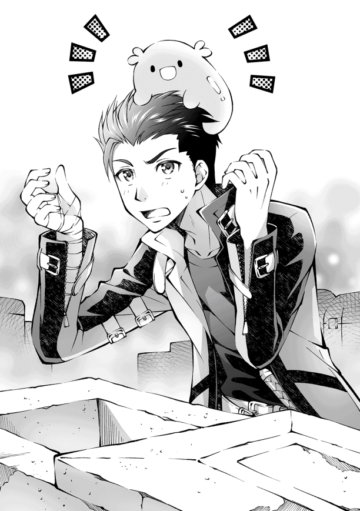
「──ご主人さま、助けて頂いてありがとうございました！」
不意に、聞き慣れない女の子の声がした。砦で聞こえた声とは違うみたいだが、それらしき姿は見当たらない。精々、スライムが起きているくらいだ。......スライム？
「まさか、お前が喋ったのか？」
「ぴきゅっ？」
「............そんなわけないか」
俺も疲れているみたいだな。この日は早めに休むことにした。
† ׆
翌朝、リヴとスライムが俺に縋 りつくように眠っていた。
全員が起床したところで朝食を取り、再び砦を探索。
昼過ぎまで探ってみたが、進展はなかった。
「なあ、そろそろ食料も心許ないし、いったん街に寄らないか？」
「そうねぇ、何もなさそうだし......そうしましょうか」
それから二日ほどだろうか。街道沿いに進んでいくと、商業都市が見えてきた。その背景には青い海が広がっており、潮風が独特の匂いを運んでいる。
「海を見るのって久しぶりかもっ！」
「商業都市には何度か足を運んだことがあるが、食い物が美味かったな」
「へえ......ねね、もしかして甘いものもあるの？」
「ああ、あったはずだが......好きなのか？」
「それはもう大好きよ！ うーん、食べれないのが残念ねー」
神剣の体は食べることを必要としないというか、そもそも食べるための口がない。
「いつか食べさせてやるよ。それまでは我慢してくれ」
「うんっ、約束だからね！ あ、お洋服も見てみたいなぁ」
「構わないが、剣なら鞘 を見た方がいいんじゃないか？」
「もうっ、気分だけでも味わいたいのよぅ」
リヴがむくれてしまった。拗 ねたようだ。
「悪かったよ。どこへでも行ってやるから許してくれ」
「だーめー！ グラッドはもうちょっとデリカシーをね──」
むくれるリヴに何度も謝りながら、俺たちは商業都市へ足を進めた。
グラッドの所持スキル（一部のみ表示）
▼Combat Skill
・劫火一閃 ： 業火を放つ剣技。
・加速 ： 身体速度を数倍に強化する技能。
▼Magic Skill
・治癒魔法 ： 治癒魔法に関する知識を修得する。
・雷属魔法 ： 雷属魔法に関する知識を習得する。
・魔竜召喚 ： 竜を呼び出すことができる召喚魔法。
▼Active Skill
・地形探査 ： 魔力を通し、周囲の地形を地図のように読み取る。
・鑑定 ： 対象を解析し、あらゆる情報を読み取る。
・薬剤調合 ： 素材を混ぜ合わせ、薬を制作する。
▼Passive Skill
・気配感知 ： 敵意を伝える警戒技能。
・状態耐性 ： 毒、石化、病、風邪などあらゆる症状を防ぐ。
そんなわけで商業都市マグノリアに到着した。
この都市は古くから大河交易で栄えてきたことで有名だ。大口の物資の運搬を船で行っていることが特徴だろうか。
大きな門を潜り抜けると、メインストリートが都市中央に向かって真っ直ぐ伸びており、飲食店や小物売りの露店などが並んでいる。流石に品揃えは豊富で、手に入らないものは殆どないと言っても過言ではない。
地図を見た限り、楕円形に造られたこの都市は区で仕切りがされているようだ。
住民たちが暮らす移住区。物売が行われる商業地区。作物や家畜を繁殖させる郊外地区など、その数は二十以上に及ぶ。
「それじゃ、冒険者ギルドに登録しましょう。旅をするなら身分証も必要でしょう？」
「身分証って必要あるか？」
「都市によっては提示必須のはずよ。知らなかったの？」
「......悪かったな。故郷から殆ど出たことがないんだよ」
「あたしの方が知っているってどうかと思うわよ......」
借金を返すのに精いっぱいだったから、そのせいだと思いたい。
さて、冒険者ギルドは都市の中央にあるらしい。
さっそく行ってみよう。
† ׆
冒険者ギルド。
ここでは領主や住民たちの依頼を斡旋 してくれる。その依頼をこなすことで報酬を得ることができる仕組みだ。
扉を抜けると喧騒が出迎えた。治癒院と酒場が併設されているらしく、昼間から酒を飲んでいる冒険者の姿がちらほらと見える。
窓口が一か所開いていたので、さっそく狐耳のお姉さんに声をかけてみた。
「こんにちは。本日はどのようなご用件でしょうか？」
「えっとね、あたしたちは冒険者の登録を──むぐっ!? 」
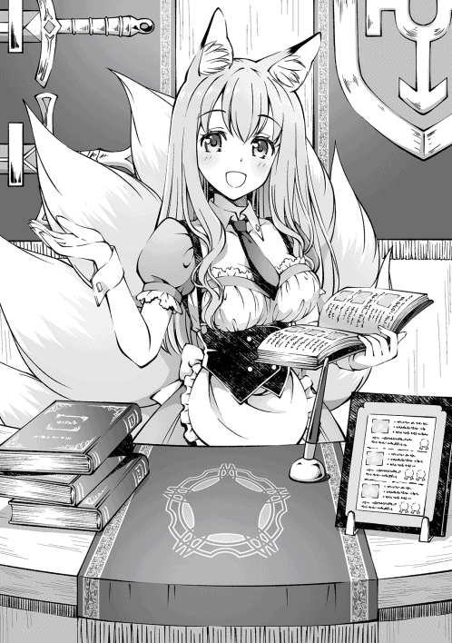
「おい、喋るなって」
「はい？」
「あ、お姉さんのことじゃないです。すみません、気にしないでください」
勝手に喋ろうとしたリヴを強引に鞘へ収め、黙らせる。
危ない、危ない......剣が喋っている場面を見られたら大騒ぎにってしまう。
あんまり目立つわけにはいかないのに、リヴのやつ、自分が大罪神剣ということを忘れているんじゃないだろうか？
気を取り直して、改めてお姉さんに声をかけた。
「あの、冒険者の登録をしたいのですが」
「新規のご登録ですね、かしこまりました。それでは登録料として銀貨一枚を頂きます」
銀貨一枚というと、ほぼ一か月分の食費だ。
結構な出費になるが、冒険者のライセンスを購入するようなものだと思えば仕方ないか。
「分かりました。銀貨一枚ですね」
「はい。それでは用紙にご記入をお願いします」
記入するのは名前と職業、出身地、犯罪歴だけか。名前にグラッド、職業は元傭兵、犯罪歴はなし、出身地は北の領地......と。
「お待たせいたしました。こちらがギルド証となります。身分証としても使えますが、紛失された場合は再発行手数料として銀貨一枚を頂きますので、どうかご了承ください」
受け取ったのは、長方形の小さなカードだった。へえ、簡単に手に入るんだな。
「これで身分証ができたわね」
「ああ。あとは街の観光でも楽しむとするか」
「ぴきゅっ！」
用事も済んだので、ギルドを立ち去ろうとしたときだった。
「だれかこの子を助けてください......ッ！」
騎士の女性が勢いよくギルドへ駈け込んできた。背中には十五歳くらいの少女を背負っており、全身が傷だらけであった。
「ねえ、あの娘......」
リヴが呟くのも無理がない。
背負われた少女は、全身に酷い火傷 を負っていた。おそらくワイバーンと戦い、ファイアブレスを受けてしまったのだろう。
あの状態で生きているのが奇跡的だが、長くは持たないだろうな......。
「──残念ですが、この怪我では手の施 しようがありません」
治癒師が、静かに首を横へと振った。
「そこをなんとかお願いします！ この娘、私を庇 ったせいで......！」
「落ち着いてください！」
女性の騎士が取り乱し、お姉さんが宥 めていた。
あの少女を助けるには高位の治癒魔法が必須だが、そんな魔法を扱えるのは王都にいる大司祭くらいだ。このままだと助からないだろうな......。
「助けてあげないの？」
と、リヴが言った。
「俺に言ってるんだよな？ 魔法なんて使えないぞ」
「竜を倒したときに治癒魔法を覚えたじゃない？」
あっ......。無我夢中で忘れてたが、治癒魔法を吸収していた覚えがある。そうか、助けられるかもしれないのか。やってみよう。
「すみません。少しだけ治療の心得があるので、診せてもらってもいいですか？」
俺がそう言うと、冒険者たちが静かに道を開けてくれた。少女の前に膝をつき、手をかざす。
「まだ、生きるのを諦めるなよ──リザレクション！」
詠唱を始めると、周囲から暖かく生命に溢れた燐光 が場を支配した。初めての治癒魔法に不安がいっぱいだったが、淡い燐光が少女の体を包み込み、みるみる火傷の肌が新雪のような肌へと変わってゆく。
「あっ、あれ？ え？」
少女は半身を起こし、辺りを見回した。女性の騎士が駆け寄り、泣きながらその身体を抱きしめる。そこでようやく現状を理解したらしい。視線が交わる。
「大丈夫そうか？」
「は、はいっ！ ありがとうございます！」
よかった、成功したようだ。
「よく頑張ったな。仲間の祈りが通じてよかった」
軽く頭を撫でてやると、少女は僅かに視線を逸らして頬を赤くしていた。
「......ねえ、ちょっとまずいことになってるみたいよ」
まずいこと？ リヴに言われて気付いたが、ギルドが沈黙に包まれていた。全員、俺に視線を向けたまま固まっている。
「おい、あいつ治癒系上級魔法を使ったように見えたんだが」
「オレも見た。何者なんだ？」
「もしかして、大司祭様なんじゃ!? 」
えらい騒ぎになってるな......。
「用事は済んだからさっさと逃げるわよ。このままとどまっても、絶対に面倒なことに巻き込まれるからね。さあ、早くっ！」
リヴに急かされて、冒険者たちの混乱に乗じて外へと逃げ出した。
「あ──」
受付のお姉さんが何か言いたそうだったが、立ち止まるわけにはいかない。
当分、ギルドに顔を出すことができそうにない......あぁ、不幸だ。
† ׆
冷たい夜風が首筋を撫でる。
身を震わせるほど冷たく、息を吐けば白い靄 となって浮かび上がっていく。
「ようやく宿を見つけたか......」
ここは、大通りから一歩外れた路地裏にある宿屋のベランダだ。
メインストリートにある宿屋の殆どは、都市観光を目的として利用される。
冒険者用の安い宿を探すだけでも大変だが、そこへスライムも泊まれる宿を探していたら......この時間になってしまったわけである。
宿に泊まるなんていつぶりなんだか。
とにかく明日は食料を買い足し、もう一度だけ終焉の砦を探してみようと思う。
色欲の大罪神剣アスモデウスの手がかりを見つけられるといいが。
「どんな悪魔なんだろうな。やっぱ悪魔ってくらいだし巨大なおっさんで鎌でも持って血走った眼を──」
「残念だけどアスモデウスは女性よ？」
「ぴきゅっ」
がららっ、と窓が開けられる音が響く。
開いた窓から姿を現したのは、リヴを引きずったスライムだった。
「......神剣も威厳がないな」
「仕方ないでしょ？ 自分の意思で移動できないから、運んでもらったの。ありがとうね」
「きゅぴっ！」
そういや、服を見たいって言ってたのに連れて行ってやるのを忘れてたな。
明日は食料を買うついでに、一緒に街を散歩でもするかね。
「あ、グラッド。店員さんがもうすぐご飯を運んでくるって言ってたわよ」
「了解。そんじゃ、食い終わったら風呂にでも入ってくるか」
「キュイッ！」
「いいなぁ、あたしも入りたいなぁ」
「錆 びるぞ？」
「ふふん、あたしは竜のお腹にいても平気だったのよ？ お風呂如きで錆びるわけないじゃない」
「そうなのか。なら、一緒に入るか」
「え──」
リヴとスライムを連れて風呂へ向かうと、多少狭いが足を伸ばせる広さがあった。他に客もいなかったので貸し切り状態である。
しかし、せっかく連れてきてやったのに、刀身がいつも以上に真っ赤になったリヴは、途中から呂律が回っていなかった。
のぼせたのだろうか、大丈夫かね？
スライムは一緒に湯船に入っていたが、溶ける心配はないようで泳いでいる。身体が小さくて自由に泳げるのが羨 ましい。
その後、部屋に戻った俺たちは、のぼせたリヴを先に休ませることにした。
流石にリヴを置いて出かけるわけにもいかないので、その後はテレサと適当に遊んだりしていたのだが、徐々に眠くなってきたので、俺も早めに休むことにした。
† ׆
朝を知らせる教会の鐘が鳴り響く。
静観としていた街並みは活気に溢れ、住民達の喧騒が聞こえてくる。
と、朝日に照らされた何かが映った。
「ふわぁ......おはよーっ」
その何かは新雪のような肌だった。ふんわりとした桃髪。スラリとした輪郭。大きな瞳はルビーのように赤く、人形のように愛らしい。
うん、どう見ても少女である。
「あ、あぁ。おは──」
「ご主人さま、おはようございます！」
今度は反対側から聞こえてきた。顔を向けると、儚 げな幼女が寝ていた。
空色の髪に白皙 とした肌。透き通った声がやたらと綺麗である。
「今日も良い天気ねー」
「はい！ 素敵な一日になりそうです！」
「そ、そうだな」
反射的に挨拶 を返しながら、必死に目の前の状況について考えた。
......俺、なんで少女と寝てたんだ？
名誉のために言っておくが、俺は年上が好きなので襲ったとは考えられない。
ここは一度、今の状況を冷静に分析してみるべきだろう。
『宿屋の一室で、少女たちと同じベッドで一夜を過ごした』
どうしよう、やらかしたかもしれない。
......いやいや、落ち着け。俺はまだ手を出していないはずだ。
ここはどこにでもある平凡な宿。冒険者たちが寝泊まりするため、どの部屋も似たような造りになっている。つまり、少女たちは別の客室と間違えて俺の部屋に侵入してきたんじゃないだろうか？
うん、きっとそうだ。そうに違いない。
「昨夜は優しくしてくれて嬉しかったですっ！」
「そうね。怖かったけど、一つになれて嬉しかったわ」
恥ずかしそうに頬を赤らめ、視線を合わせると逸らす純粋無垢な少女たち。
弁解できねえよ、どうするよ、コレ......。
「えへへ、これからもずっとご一緒ですよ！」
「そうね。約束したものね」
こんな状況、誰かに目撃されたら俺の悪名が轟 いてしまう。
そうなる前になんとかして対策を考えなければ......。
「「 だって 」」
──ガチャリ。
「グラッドさん、おはようございます。ギルドの受付嬢です。昨日はありが──」
「「 あなたにすべてを捧げたから！ 」」
お姉さん、どうして絶好のタイミング出てくるんですか？
石像のように固まったお姉さんは、やがて俺と少女たちを交互に見つめながら、あわあわと赤面している。まずい、絶対誤解されている。
「そ、その子たちは......？」
「所有物」
「ペットですっ」
お願いだから黙っててくれ。
「所有物にペット!? どど、どういうことですか、グラッドさん！ いくらなんでもこんな幼い子に手を出すなんて駄目ですよっ！ せめて同年代からにしてくださいっ！」
そういう問題でもない気がするが、どんどん状況が悪化している。このままでは本格的に獄中生活を送らないといけないかもしれない。
なんとかして切り抜けなければ......。
「待ってください、誤解なんです。話を聞いてくれませんか？」
「......誤解？ どういうことですか？」
よし、聞く耳をもってくれたようだ。あとは俺の誠実さをアピールできればどうにかなるはずだ。
そう考えて、ベッドから立ち上がったのがまずかった。
当然、布団がはらりとめくれるのだが、両隣で眠っていた少女たちも布団から剥 かれる。
「くちゅん！」
「うぅ、朝は冷えるわね......」
少女たちは裸だった。
「いやああああああああっ！」
お姉さんが取り乱した。絶体絶命のピンチだ。
「わ、私、行く場所ができたので失礼します！」
「待ってください！ 行かせませんよ！」
このまま見送れば間違いなく騎士団を呼ばれてしまう。
そんなことはさせない！
全力で床を踏み抜き、お姉さんの背中へ飛びついた。もつれるお姉さんは反転し、俺が床に押し倒す形となった。
「いやああああああああっ!? 」
「誤解が解ければ何もしません！ 俺を信じてください！」
「この状況で信じられませんよっ!? 」
考えろ、考えるんだ。
どうしたら俺が犯罪に縁のない好青年だと信じてもらえるのかを！
「俺、本当に何もしてないんです！ この瞳を見てください！」
頼む、信じてくれ！
「............た、たしかに、嘘を吐いている目はしていませんね」
「信じてくれるんですか？」
お姉さんはしばらく俺の目をまじまじと見ると、顔をさりげなく横に向けながら、こう言った。
「私はこれでも九尾 ですから。悪意を見抜く目は養ってきたつもりです」
お姉さん、ありがとう......！
とりあえず部屋に戻り、適当に座ってから、俺は今朝起きてからのできごとを一つずつ説明することにした。
「ふむふむ、そうだったのですか。その子たち、迷子なのですね」
少女たちは不思議そうに俺を見つめている。体はシーツで隠れているとはいえ、このままってわけにもいかないよな......。
「お姉さん、ついでに頼みがあるのですが」
「はい、なんでしょうか？」
短く息を吐いて、俺は言った。
「服をください、今すぐに」
「は、はいっ？」
幼い頃の服が余っていれば、今すぐにでも分けてほしい。
「どうしても必要なんです。俺は男だし......お姉さんにしか頼めなくて」
「でで、でも、そういうのには順序がですね、えっと......！」
もし駄目なら、俺が少女の服から下着までを用意する必要がある。女性だらけの衣料品店へ向かい、冷たい視線を浴びながら少女の衣服を揃えなければならない。可能なら避けたい事案だ。
「駄目ですか？」
お姉さんの手を取り、ただ想いを伝える。すると、お姉さんは胸に溜めていた息を吐き捨て、顔を上げてくれた。
「......わ、わかりました。グラッドさんのためなら、私も覚悟を決めました！」
「ありがとうございます！ 俺、どうしても恥ずかしくて......」
「いいんです！ グラッドさんは素敵な方でお優しいですし、その、昨日はとっても格好良かったですから！」
俺の潔白を信じてくれただけではなく、少女たちの服まで用意してくれるなんて......もしかして、彼女こそが女神の生まれ変わりだろうか。感謝しても感謝しきれない。
「そ、それでは」
お姉さんは立ち上がる。服を買いにいくようだ。
「ぬ、脱ぎます！」
お姉さんは袖から腕を抜くと、背中のボタンを外しにかかった。するすると服を脱ぎ、やがてメロンのように大きな胸が──。
「って、ちょっと待ってください！ どうして脱ぐんですか!? 」
「え、違うんですか？」
突然脱ぎ始めるなんて、お姉さんって実は危ない人なんだろうか？
とにかく、もう一度要点を絞って説明しよう。
「あの娘たちの服を用意してほしかったんです。お金はいくらでも出しますから」
「そ、そういうことでしたか......こほん、もちろん構いませんよ」
お姉さんはそそくさと服を着て、足早に買い物へ出かけて行った。
さて、これで部屋に残されたのは俺と少女たちだけだ。
そういえば、さっきからリヴとスライムの姿を見かけないな。
どこへ行ったんだろうか？
俺は振り返り、少女たちを怖がらせないように話しかけた。
「なあ、君たちの名前はなんて言うんだ？ どうして一緒に寝ていたんだ？」
「グラッド、寝ぼけてるの？ あたしはリヴじゃない」
「わたしはスライムのテレサですよっ！」
「ああ、そうか。リヴとスライムだったのか！ どうりで俺を知っている素振り──は？」
今、何て言った？
「なあ、その姿はどういうことなんだ？」
「えっ？」
リヴとスライムを名乗る少女たちは、己の身体を確認する。
そして、すべてを悟ったかのように手を、ポン、と叩いた。
同時に叫ぶ。
「「 人間の姿になってる！ 」」
見事に人化していたのであった。
† ׆
この世界で暮らしている人外は、多種多様な種族に細分化されている。
その数は百を超えているとされているが、剣とスライムが人化した姿を見るのは、生まれて初めてのことだった。
「──そうですか。その子たちはグラッドさんの腹違いの妹さんで、お兄さんを探して商業都市まで追いかけてきたんですか」
「え、ええ......そういうこと、なんですよ」
今、俺は、リヴたちの服を購入してきてくれたお姉さんを部屋に招き入れ、口裏を合わせたリヴと、スライムことテレサと共にテーブルを挟んで状況を説明していた。
「グラッドお兄ちゃんとお会いできて嬉しかったんです！」
「ええ、優しいからつい甘えちゃってね。でも、グラッドったら昨夜のことをすっかり忘れていたみたいなの」
「もうっ。妹さんたちのことを忘れたら駄目ですよ？」
「はは......す、すみません」
リヴとテレサの迫真の演技に、お姉さんはすっかり騙 されていた。
ふぅ、どうにか服を着ていなかった理由について言及されなかったぞ。追及されても困るので、このまま勢いで誤魔化してしまおう。
「すっかり悪役にしちゃってごめんね、グラッド」
リヴは俺にだけ聞こえるように、小さな声で謝ってきた。
今の彼女は全体的に薄着で、肩に魔法使いの外套 を羽織 っている。
それに合わせるように、ミニスカートから伸びる白いタイツが際立っていた。
「ご主人さま、ご迷惑おかけしますっ」
テレサは膝下くらいまで伸びる長い髪を大きなリボンで束ね、フリルのついた可愛いドレスに身を包んでいた。しかし、困ったことに無防備すぎるのである。
「はう？ どうされたのですか？」
ぽよん。身を乗り出したテレサの胸が弾んでいる。リヴよりも幼い印象を受けるのに、なんでこんなに罪作りな身体をしているんだろうか。
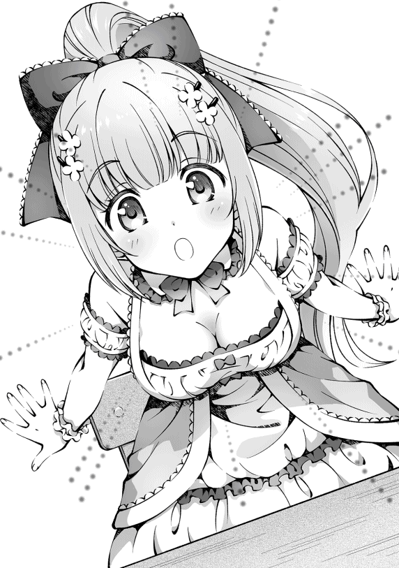
「......いや、なんでもない」
「ふに？」
俺は、狼狽 を悟られないように小さく息を吐いた。
彼女たちが人化した理由は不明だが、リヴの予想だと、契約が関係しているんじゃないか、とのことだった。
なにしろ、大罪神剣にはリヴすらも知らない秘密が隠されているらしく、だからこそ悪魔の魂を封じ込めることができた代物なのだそうだ。テレサまで人化してしまったことにも、大きく関わっているのかもしれない、とのこと。
というか、テレサってずっと雄だと思ってた......。
「私、実はグラッドさんにお願いがあってお尋ねしたんです。昨日はリザレクションの魔法を行使されていましたが、もしかしたら薬の調合にも卓越していらっしゃるのかなぁと思いまして......」
お姉さんが事情を説明してくれたので、ここらで話を整理しよう。
ここ商業都市マグノリアの周辺には薬草を採取できる森が存在するのだが、半年ほど前から盗賊団が潜伏しており、薬の素材である薬草を採取することができないそうだ。
おかげで慢性的な薬品不足に陥 っているらしく、そこへ流行り病の影響もあって、ジワジワと被害が拡大していて頭を抱えているらしい。
当然、領主も騎士団を率いて盗賊討伐へ向かったのだが、盗賊たちのなかには手練 れがいるらしく、返り討ちにあったのは四か月前のこと。
そんなところへ、リザレクションを唱えた俺が現れたから、力を借りたいという相談であった。
「もし薬をお持ちでしたら、少しでいいのでお譲りして頂きたいのです」
ふむ、なるほどな。俺に薬品の知識はないが、幸いにも彼女がいる。
「リヴ、どうにかならないか？」
小声で尋ねた。
「どうにかできるわよ。竜鱗 を回収しておいて良かったわ」
引き受けても大丈夫なようだ。
「分かりました。薬を用意すればいいんですよね？ できる限りのことはさせて頂きますので、どこか調合のできる部屋をお借りしたいのですが......」
「引き受けてくださるのですか!? わああ、ありがとうございます！ ギルドの錬金工房でしたら、すぐにでもご用意できます！」
「それでは工房への案内をお願いします」
俺の冒険者としての初依頼は、薬の納品となった。
† ׆
冒険者ギルドの地下にひっそりと存在する錬金工房。かつては偉大なる錬金術師が使っていた実験室らしいが、今は誰にも使われていないそうだ。
「それじゃ、準備から始めるわよ」
「はいです！」
テーブルの上に並べられたのは竜鱗、蜂蜜、井戸水、数種類の薬草であった。
俺たちだけで作るのは骨が折れるので、暇そうな冒険者に声をかけて拉致もとい厚意で手伝ってもらっている。
「まずは竜鱗を粉にしてちょうだいな」
リヴがあっさりと言うが、冒険者たちは目を丸くしていた。
「竜鱗なんてどこで手に入れたんだ......」
「一枚売るだけで、城が買えるほどの貴重な素材だぞ......」
リヴの話によると、これから万能薬の作成を始めるらしい。
そこで、俺の力が必要となるそうだ。
「準備が整ったら、グラッドの出番ね。薬剤調合スキルを使ってね」
「分かった、任せてくれ」
薬剤調合スキルを発動させて、素材に魔力を注ぎ込む。淡く輝いた魔力が素材を圧縮し、用意した樽の中になみなみと液体が溜まっていく。
「成功よ。この調子だとかなりの量が期待できそうね」
▼Create：『万能薬』の作成に成功しました。
スキルがあると、意外と簡単に作ることができるんだな。
この調子でどんどん作っていこう。
† ׆
夕刻。お姉さんは驚きの声を上げた。
「七樽分は用意できました。これで当面は凌 げると思いますので、住民たちに分けてあげてください」
「ちょ、ちょっと待ってください！ この色と輝きはまさか......万能薬ですか!? 」
さらに冒険者たちにも驚きが広がっていた。
「万能薬って、あらゆる病を癒すって噂の薬か？」
「なんでそんな物が大量にあるんだ？」
やはり目立ってしまったか。まぁ仕方ない。覚悟の上だ。流行り病で苦しんでいる人たちがいると知って、放っておくことができなかったし。俺の悪い癖 だな。
「グラッドのそういうところ、あたしは好きよ？」
俺の心を読み取ったのか、リヴが嬉しそうに笑ってくれた。
リヴにも迷惑をかけてしまったが、力を貸してくれてありがとな。
「おかげで多くの命が救われます。なんとお礼を伝えたらいいのか......」
「お礼はいいですから、早く配ってあげてください。待っている人がいるんですよね？」
「はい、それではお先に......！」
お姉さんは冒険者たちを呼び集めて、冒険者ギルドの前に停車した幌 馬車へと樽を運び始める。この後、領主様に確認を取り、騎士団や教会と協力して、住民たちへ無料で配布するそうだ。
「何もお礼できないのは心苦しいです。対価としては見合わないと思いますが、ギルドで飼育している馬をもらっては頂けないでしょうか？ もちろんギルドマスターからのご提案です。旅を続けるには何かと役に立つと思うのですが......」
と、お姉さんが耳と尻尾を垂れながら、頭を下げてきた。
「もらってあげましょうよ。もらってあげたほうがいいことだってあるのよ？」
「ん、そうだな」
「わあああ！ お馬さんに乗れますね！」
「みなさん。本当にありがとうございます......っ」
すると、一気に冒険者たちから歓声が沸き上がった。
「これで妻の病が治せます！」
「もう、安心していいのですね。おかげで長生きできます」
「グラッドさん！」
「グラッド様！」
次々に声を上げる冒険者たちは、俺たちを囲み、踊り始めた。
突然の歓声に怯えたのか、震えるテレサが目を丸くしてしがみついてくる。
その頭を撫でながら、俺は声を振り絞った。
「もう病の心配はない。安心してくれ！」
そう言うと、冒険者たちから次々に手を差し伸べられた。俺たちは彼らの手を握り返していると、ふと温かな気持ちに包まれていることに気付いた。
誰かに必要とされることって、嬉しいものなんだな。
純粋にそう思った一日だった。
夜半過ぎ。
あれから冒険者たちに宴会へと誘われた俺たちは、深夜まで騒いでいた。
宴はまだまだ続くようだが、早めに退散させてもらった俺は先に寝てしまったリヴたちを抱えて、宿まで戻ってきた。
「すぅ、すぅ......」
起こさないようにベッドに寝かせて、布団をかける。気持ちよさそうな寝顔だ。
明日はお姉さんに新しい依頼を頼まれたので、早めに寝ておくかね。
そんなことを考えて、俺は床に転がって休むことにした。
† ׆
──一体どれほど眠ったのか。
俺は、ふと身体が揺さぶられていることに気付いた。
「うにゅ......ご、ご主人さまぁ......」
テレサであった。
「どうした？」
俺は布団から起き上がると、小声で話しかけてくるテレサの目を見た。潤 んでいる。もしかして悩みでもあるだろうか？
「うっ......ううっ......。お、お手洗いどこですか......っ！」
真っ赤な顔で、もじもじとするテレサ。
......おい。
「えっと、一階だが、もしかして場所が分からないのか？」
「そのまさかです......っ。二階をずっと探していたんですけど、見つからなくて......あう」
「そ、そうか......」
放っておくわけにもいかないので、一緒に行ってやることにした。
「ご主人さまにご迷惑をおかけして、申し訳ないです......」
「別に構わんさ」
宿代はきっちり三人分取られたが、仕方のないことだ。これからも一緒に旅を続けるのだから、この程度のことで謝られても困るというか。
「そういや、テレサに聞きたかったんだが」
「はいです？」
「どうして棺の中に閉じ込められていたんだ？」
用を済ませて部屋に戻る途中、月光に照らされたテレサが俺の腕を掴んできた。
「ご主人さま」
なぜだろう、言葉を飲み込んだ。
見つめてくるテレサはいつも以上に儚くて、寂しそうだったのだ。
「──わたし、ご主人さまと出会う以前の記憶がないんです」
衝撃的な言葉であった。
「どうしてあの棺で寝ていたのか分からないんです。文字も分かるし、一般的なことは分かるんですけど、過去に関わることがすっぽりと記憶から抜けているんです」
あの砦はリヴが色欲のアスモデウスと死闘を繰り広げた場所だ。なんとなく、テレサがそのことに無関係とは思えない。
「ずっと黙っているつもりだったんです。でも、人化ができるようになって、言葉が喋れるようになって、ご主人さまを身近に感じることができたら、ついお話ししちゃいました」
テレサは笑っているが、笑顔の裏では迷子のように泣いているようにも見えた。
──不安だったのだろう。記憶がないから、縋 れるものがなかった。
そういえば棺から出てきたとき、えらく怯えていたっけ。あれも記憶がないことで混乱していたのかもしれない。
もしかして、テレサは今も孤独を感じているんじゃないだろうか？
「悪かったな、聞いちまって」
「いえいえ、平気ですよ！」
「それより、ちょっといいか？」
「ふえっ？」
テレサの背中に左手を回し、ゆっくりと抱きしめた。
「よく泣かなかったな。偉いぞ」
右手で頭を撫でる。すると、一瞬竦 み上がったテレサの肩が、上下する。
「怖いなら、いつでも俺を頼っていいからな」
「ご主人さま......」
気付いたら、涙線を決壊させていた。
「嬉しいです......嬉しくて......ひくっ......」
テレサは目元を真っ赤に腫 らし、ぽろぽろと透明な滴をこぼしている。
「うぅ......ふえええ......」
「大丈夫、ここにいるから」
取り乱すテレサ。わあわあと泣く。嗚咽交じりで最後は聞き取れなかった。
ようやく息をつく頃には、二十分を越えていた。
「......はぅ、すみません」
「もう平気か？」
「はい、おかげで元気になりました！ えへへ」
もう大丈夫そうだ。背中に回していた手を解くと、テレサは言った。
「......ご主人さまは、人外を差別しないんですね。わたし、最弱のスライム族なのに」
「差別？ テレサはテレサだろう。もっと自分を誇りに思えばいい。それが大切なことだって、俺もリヴから教わったんだ。未熟者同士、一緒にがんばろうぜ」
笑って言うと、テレサも笑ってくれた。
部屋に戻るまで、テレサは俺の手をずっと、ぎゅっ、と握っていた。
リヴの隣に寝かせてやると、やがて疲れ果てたのか寝息を立てる。
「......ご主人さま、ずっと、お傍に......」
安心しきった表情で、そんな寝言を呟いていた。
テレサ、今まで黙ってたけどさ。
俺、リヴとテレサにかなり助けられているんだぜ。
誰からも必要とされてなかった俺を、こんなにも慕ってくれるのだから。
それが本当に嬉しかったんだ。
だから、悩みがあったら手を貸したいと思ってる。
力になりたいんだ。
俺も、仲間として──。
「おやすみ、ふたりとも」
テレサは気持ちよさそうな寝顔を浮かべていた。
スライム『テレサ』
▼Unique Abilities
・人外ランク ： 最下位
・存在レベル ： １
・人化 ： 限りなく人族に似た姿へ変身する
翌朝、俺たちは孤児院を訪ねた。
「教会の依頼ですか？」
「お姉さんがどうしても受けてほしいって言ってたわね」
「教会が総出で万能薬を配るらしいからな。子供たちの面倒を見てくれる人を探していた、ってとこだろう」
昨日、お姉さんから頼まれた依頼がこれである。
今日だけでいいので子供たちをお願いできませんか、と頭を下げられた。
報酬は金貨一枚──美味しい依頼だが、万能薬を提供したことへのお礼が込められているんだろう。
そんなことを考えていると、目的の孤児院に辿り着いた。
ノックをしてしばらく待っていると、玄関が開かれる。
「ごほごほっ......どなた、ですか......？」
出迎えてくれたのは、狐耳の少女。
テレサに近い年齢で、継 ぎ接 ぎだらけの和服を着ていた。
どことなくお姉さんに似ている。しかし、狐少女は体調が優れないのか顔色が悪い。
「具合が悪いのか？」
「い、いえ......今日は調子がいい方です......。ごめんなさい、お客様の前で......」
流行り病──にしては、症状が重すぎるような気がする。
妙な違和感を覚えて狐少女の手を取ると、氷のように冷たかった。
「あなた、呪いをかけられているわね？ グラッド、その娘の右手を見てみなさい」
狐少女の右手には、刻印があった。
「その刻印はね、呪術を受けたときに刻まれるものなのよ。ねえ、いつから呪いを受けているの？ 心当たりはないかしら？」
リヴが問いかけると、小さな声で話し始めた。
「五年前、仮面の男に誘拐されたときから、です......」
仮面の男に誘拐された......？
「狐さん、もっと事情をお話ししてくれませんか？」
テレサに頷きを返した狐少女は、俺たちを孤児院の中へと招いてくれた。
来客用の部屋でソファーに腰を降ろし、誘拐について説明してもらった。
──五年前。
商業都市の周辺に低級悪魔が現れた時期があり、その悪魔たちを率いていたのが仮面の男だったそうだ。家族と隣町へ出かていた狐少女は下級悪魔と遭遇し、攫 われ、暗い檻 の中で薬物や魔法の実験体に使われたという。
それから半月後、下級悪魔たちを追跡していた騎士団の活躍もあって、狐少女は無事に救出された。しかし、仮面の男の行方は掴めてないらしい。
聞いているだけで怒りが湧く話だな......。
「呪いはね、一度かかったら術者が死ぬまで解くことが難しいのよ」
狐少女の体にかけられた呪いの種類は断定できないが、症状から判断した限り、肉体を蝕んでいることは間違いなかった。
このままだと、この娘は苦しみ続ける。なんとかして助けてやりたいが......。
「できるかもしれないわ」
と、リヴが呟いた。
「たしか、竜の血と心臓が残っていたわよね」
「ああ、他の素材は使っちまったが、その二つなら残ってるな。治せるのか？」
「分からないわね。呪術者の魔力があたしより高かったら、手に負えないかもしれない。調合、頼むわね」
祈るしかないか。荷物から素材を取り出し、調合の準備を始めていく。
俺たちが狐少女の呪いを解こうとしていることを聞きつけたらしく、他の子供たちも集まってきた。
「狐ちゃん、元気になるの？」
「ずっと外に出られなくて可哀想なんだ......」
「お姉ちゃん、お兄ちゃん、助けてあげてっ」
リヴは何も言わなかった。助けられる保証が無いのだから、軽はずみなことを言うわけにいかないのだ。それでも伝わってくる。狐少女を助けようとしているってことが、見ているだけで伝わってくる。子供たちも理解しているようだった。
呪い、一方的に命を削り取る行為か......。
俺も傭兵時代、野盗を殺したことがある。近隣の住民を困らせていて、何人もの命を奪ってきたやつらを討伐した日のことだ。正しいことをしたはずなのに、その夜は罪悪感で眠ることができなかった。
こんな俺に言う資格はないが、仮面の男のしたことは最低の行為だ。
「これでどうかしら」
調合で完成したのは、万能薬を改良したものだった。
「綺麗......」
狐少女に手渡した小瓶の中身は、七色に輝いている。
「それはね、生命の滴って呼ばれているの。昔、偉大な賢者様が発見した呪術用の薬でね。数人に一人の割合で呪いを打ち消すことができたのよ。確証はないけど、騙されたつもりで飲んでみてくれないかしら？ もしかしたら奇跡が起きるかもよ？」
そう言うと、狐少女はおそるおそる手を伸ばし、小瓶を握ってくれた。
口へと近づけていく。
「先に言っておくけど、味はすっごくマズイからね」
狐少女の手が止まる。
おい、どうしてこのタイミングで言った。
「気にすることないわ。一気に飲みなさい」
しばらく迷っていたようだが、目をぎゅっとつぶってぐびっと飲み込む。
「ひう......」
とても複雑な表情を浮かべていた。よっぽどまずかったんだな......。
「あっ」
変化が起きたのは、その直後だった。狐少女の右手に光が灯り、刻印が消えていく。
「身体が、とても楽になりました......！」
リヴも、テレサも、孤児院の子供たちも一斉に歓喜の声を張り上げた。
「狐ちゃん、おめでとう！」
「これで外で遊べるねっ！」
子供たちに祝福されて、狐少女はぽろぽろと泣いていた。
「も、もう治らないと思ってた......」
「よしよし、今日まで頑張ったな。大丈夫、これからは笑って過ごせるよ。呪いはリヴが追い払ってくれたからな」
「お兄ちゃん......」
狐少女は子供たちに囲まれて、照れくさそうな笑みを浮かべていた。
「その笑顔、俺は好きだよ」
「ひぅ......」
狐少女が恥ずかしそうに顔を染めてしまった。
「むぅ、複雑な気分ね......」
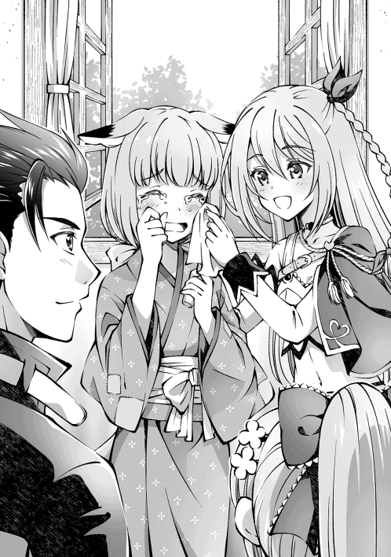
「あはは......」
面白くなさそうにリヴが拗ねて、テレサが宥めていた。後で機嫌を取らないと、一日拗ねていそうな表情だ。この後が大変だな。
「お兄ちゃん、お姉ちゃん、ありがとうございます......！」
ま、この笑顔を守れたんだから、よしとするか。
† ׆
孤児院では十名ほどの子供たちが、身を寄せ合って生活していた。
「今日は自由に遊んでもいいが、外出は禁止だ。どうしても外に行きたかったら、俺たちに相談するようにな」
「はーい」
子供たちは聞き分けがよく、思っていたより手間はかからなかった。ただ、着ている衣服が継ぎ接ぎだらけで慎ましい生活を送っていることが察せる。
そういや、裁縫スキルを覚えていたな。
「テレサ、買い物を頼んでもいいか？」
「はいです！ 何を買ってきますか？」
「生地だな」
テレサが買い物に行ってる間、子供たちを呼び出して寸法を測り、服の希望を聞いてから型紙を作り始める。屋敷で暮らしていた頃は雑用も仕事だったので、同僚やメイドたちの服もしょっちゅう作ってたから、スキル無しでも家事全般は得意だったりする。
「買ってきました！」
テレサから材料を受け取り、裁縫と加速スキルを発動させて、通常の数倍の速度で仕上げていく。多少縫い目が粗いかもしれないが、今着ている服よりはマシだろう。
「こらー、木登りは危ないからやめなさいって──イヤアアアアアアッ！ 毛虫は無理、無理だからやめてええええええっ！」
庭が賑やかだな。リヴが子供たちの面倒を見てくれているようだが、子供たちに遊ばれているようだ。随分と好かれたな。
「お兄ちゃん、お疲れ様です。少し休んでください」
狐少女が茶と菓子を運んできてくれた。
「お、ありがとうな」
「私にも手伝わせてください。お裁縫なら得意なんです」
向かい側に座った狐少女。その手際は俺よりも良かった。
「......お兄ちゃんに、聞きたいことがあるんです」
「ん、俺にか？」
狐少女は言いにくそうに口をもごもごさせて、強めの口調で聞いてきた。
「お、お兄ちゃんと、リヴお姉ちゃんが結婚してるって本当ですかっ！」
「...........................いや、真っ赤な嘘だな」
「そうなんですね......！ じゃあ、まだチャンスがありますね......！」
何やらぶつぶつと呟いているが、聞かなかったことにしてあげよう。
というかリヴのやつ、さらっと嘘を吹き込むんじゃない。
「リヴお姉ちゃんって、女神様のように優しいよね」
ん、たしかにリヴは優しいな。面倒見がいいし、困ってる人を見かけると放っておけなくて、つい甲斐甲斐しく手を貸してしまう優しい子だ。悪魔だけど。
そんなこんなで、午前中には服を作り終わり、午後も近づいていた。昼飯は年長の子供たちが作っていたのだが、やはりというか質素な食事であった。
これだけの子供たちを養うのは立派なことであり、大変なことだ。子供たちの話を聞く限り、最近は寄付も減っているらしく、赤字が続いているらしい。
「お姉ちゃんもギルドで働いてるけど、孤児院でお世話になったお礼にお給金の殆どを寄付してくれてるの」
受付のお姉さんは、やはり狐少女の姉らしい。彼女の給金があるおかげで、どうにか孤児院は存続しているのが実情のようだ。苦労しているんだな......。
俺にできることは少ないが、今日くらいは贅沢 をさせてやりたい。せめて菓子くらい作ってやろう。
そうこうして十五時を過ぎたので、子供たちを呼び集めることにした。
「これ、本当に食べてもいいんですか......？」
狐少女をはじめ、子供たちもびっくりしているようだった。
俺が作ったのはケーキであった。何度か作ったことがあるので味は大丈夫だと思うが、子供たちに食べてもらうのは初めてのことだ。口に合うといいが......。
「わぁ、美味しい......！」
良かった、喜んでくれたようだ。
「あー、そうだ。こっちはリヴとテレサの分な」
俺は別に作っておいたケーキを取り出した。
「え、どういうこと？」
「以前、リヴが甘いものを食べたいって言ってただろ？ せっかくだから作ってみたんだ。テレサも折角だし、丁度いいかなって思ってさ」
「嬉しいかも！」
「ありがとうございます！ ご主人さまってなんでもできるんですねっ」
リヴも、テレサも目を輝かせていた。最初は遠慮がちな様子だったが、ケーキを一口運ぶとフォークが止まらないようだった。
「ん〜！ 最高ねっ！」
「ほんと、美味しいですっ！」
「グラッドおじちゃん、おかわり！」
「おい待て、誰がおじちゃんだ」
料理を作って笑顔を見れると、俺も頑張った甲斐があるってもんだ。
食事が終わった後は、子供たちと他愛のない話をしながらのんびりと過ごした。
久々に平穏な時間を満喫していたのだが......。
気配感知スキルが発動した。
「伏せろッ！」
直後、視界が真っ白に埋め尽くされる。爆発に混じって瓦礫 が崩れる音が聞こえてきた。
幸いにも、狙われたのは孤児院ではなかったようだ。
隣の教会から悲鳴が聞こえる。
「盗賊だ！ 盗賊が襲ってきた！ 援軍を呼べ！」
騎士と住民たちの喧騒が混ざり、外は混乱に包まれている。年少の子供たちの中には泣き出す子もいた。
すぐにでも子供たちの避難を優先するべきか？ しかし、教会には子供たちにとって親同然の聖職者たちが残されている。もし彼らが命を落とせば悲しむだろう。そして、世界に失望するのだろう。そんな表情は見たくなかった。
「リヴとテレサは子供たちの安全を確保してくれ！」
「ご、ご主人さまっ!? 」
「あ、ちょっと──」
二度目の爆発音が轟くと同時に、俺は中庭から教会の窓へと飛び込んだ。
礼拝堂に繋がっていたようで、神父を始めとした聖職者たちに混ざり、結構な人数の住民たちが壁際に座らされていた。
そして、剣を振りかざしているのは男たちであった。
住民に紛れ込んでいたらしく、民族風の衣装に身を包み、口元を布で隠しただけの簡単な変装。だからこそ、誰も盗賊の接近に気付けなかったのだろう。
「おい、あんた......逃げてくれ......騎士団を、呼んでくれ......」
俺のすぐ側には、騎士団の青年が倒れていた。勇敢にも盗賊たちと争ったようだが、結果は見ての通りだった。まだ犠牲者が出ていなかったことだけが幸いだ。
「なんだお前......邪魔をするつもりか？」
盗賊たちは人間であった。奥には斧を振り下ろし、万能薬の詰まった樽を破壊している男たちがいた。
「話、聞こえてるよなぁ？」
舌舐 めずりして、近づいてくる盗賊たち。話し合いは通じそうにない。神剣は手元にないが、この人数なら俺だけでもどうにかなるか。
「......盗賊なら、殺される覚悟もできているよな」
「何を言ってやがる。かかれ！」
号令で戦いは幕を開けた。
俺は騎士の剣を拾い、床を蹴り抜いた。
「遅いな」
すれ違い様に切り払う。ぐしゃり、と鈍い音が響いた。
盗賊たちが言葉を失っていた。
「剣を握っていいのは死を覚悟したやつだけだ。覚悟がないなら投降するんだな」
もっとも、その後は保証しないが。
「この野郎......っ！」
逆上した盗賊の歩幅に合わせ、跳躍した。
盗賊たちからは俺の姿が消えたように見えたらしい。呆然と立ち尽くしている隙を狙って首を刎 ね、その体を壁まで蹴り飛ばす。
「これが最後の忠告だ。投降しろ」
「ふざけんな！ 全員でかかれっ！」
やはりこうなるか。
一斉に襲いかかってきた盗賊たちへと向かい、剣が煌く。
跳躍からの突進──腕を、脚を、胴体を断った。
僅か数秒の攻防は、俺が剣を払うと同時に決着がついていた。
最後に残った盗賊が、時間差で崩れる音が響き渡る。
「もう聞こえないと思うが──」
振り返って告げた。
「お前らのせいで怪我を負った住民がいる。お前たちがこうなっちまったのも自業自得だ。
次の人生があれば後悔するんだな」
領主に雇われていた頃も、こういう輩は頻繁に襲ってきた。
本当の悪人は反省などしないのだ。
「......命だけは助けてやろうと思ったんだがな」
すでに動かなくなった盗賊を見下ろしながら、吐き捨てた。
気を取り直して、怪我人の治療にあたるとしよう。
† ׆
「ありがとうございました。グラッド殿。襲撃 した盗賊らは王都で手配されている極悪人ばかりでしてな。騎士団でもてこずるような連中ばかりじゃ」
半壊した教会の外。
駆けつけた騎士団が用意した仮設テントの下で、団長に礼を言われた。
「いえ、みなさんがご無事でなによりです。それよりも、盗賊はどうして襲ってきたのか心当たりはありますか？」
「万能薬の噂を聞いたのでしょうな。万能薬は価値があるものですから、盗賊たちもほしがったのじゃろう。もっとも、持ち運べない分は破壊したようじゃが」
どこまで自分勝手な連中なんだか。
「ただ、問題がありましてな」
「......奴らが報復にくる、ということですよね」
「可能性としては考えられますな」
そんな連中とは、傭兵時代に嫌というほど遭遇してきた。
今回は人的被害が少なかったとはいえ、次も無事という保証がない。
子供たちのことを考えるなら、俺がすべきことは......。
「盗賊たちはどこから来ているのか、心当たりはありますか？」
「うーむ、街から馬で走って半日ほどのところに古歌の森があるのだが、そこに隠れているんじゃないかと噂されておるらしいが......」
「分かりました。ありがとうございます」
万能薬の情報が公開されてから、まだ一日と経っていない。
それなのに教会を襲撃してきたということは、数日前から盗賊たちは別の目的で街に潜伏していたのだろう。そして万能薬の噂を知り、目標を変えたと考えればおかしなことはない。
つまり、まだ拠点にとどまっている盗賊たちは万能薬の存在を知らない可能性が高い。
数日も経てば盗賊たちも異変に気付き、今度は本格的な報復を仕掛けてくるだろう。そうなれば今度こそ犠牲者が出る。
「一人で盗賊退治に行くつもり？ あたしを置いていくなんて酷いじゃない」
「もちろん、テレサもご一緒します！」
「リヴ、テレサ......？ どうしてここに？」
「いつまでも帰ってこないから心配したのよ。もちろん一緒に行くからね。この騒ぎだし、子供たちも騎士団が守ってくれているはずだから、もう心配ないし」
こうなることが分かっていたらしく、宿屋に置いてきたはずの荷物はリヴが抱えていた。
テレサも冒険者ギルドから馬を運んできてくれたようで、すぐにでも出発できそうだ。
三人で乗るには若干狭いので、人目に付かない場所へ移動してからテレサにスライム化してもらった。全員乗ったことを確認し、手綱を握る。
盗賊に反撃の機会は与えない。
襲撃の後始末に奔走 している街をあとに、俺は馬を走らせた。
──古歌の森。
森を一歩踏み出た先には、視界いっぱいに広がる緑の世界が待っていた。整備された歩道がまっすぐ伸び、森の奥深くまで続いている。
そんな自然に恵まれた道で、
「懐かしい場所ね」
朝の陽射しを浴びながら、リヴは空を仰いだ。
「昔、ここには雷帝獅子ゲルニカっていう英雄が暮らしていてね。一緒に大罪の悪魔と戦ってくれたのよ」
雷帝獅子の名は聞いた覚えがある。断罪戦争で大きく貢献したとされ、人類を平和に導いた三英雄の一人とされていたはずだ。
まさかそんな英雄とリヴが、知り合いだったとはな。
「昔はここにお城があったの。でも、今は見当たらないわ。三百年も経てば変わっちゃうものよね......」
リヴの横顔は、どこか哀愁を感じさせた。
三百年という歴史を前に、俺はかける言葉が見つからなかったが──、
「ほえ、リヴさまって嫉妬の大罪神剣だったんですか！ なんだか格好いいです！」
俺の頭の上でキャンディーを舐めながら言葉を弾ませるテレサを前にして、リヴはしばらく口を開けていた。
「ちゃんと話を聞いていたわよね？ あたしが怖くないの？」
「どうしてです？ リヴさまはお優しいですよ？ いつもお話ししてくれますし、昨夜も魔法を教えてくれました！ きっと歴史の方が間違っているんです！」
キャンディーを舐め終わったテレサが、キョトンと首を傾げていた。
その純粋な言葉があまりにも穏やかで、優しかった。
「グラッドも、テレサも、本当お人好しよね......」
「？ リヴさま、寝不足ですか？ 目が真っ赤ですよ？」
「うふふ、誰のせいだと思う？」
「うー？」
「そんな二人のこと、あたしも好きよ」
テレサの言葉に救われたリヴは、こっそりと涙を拭っていた。
† ׆
古歌の森、中層。
「反応があるな」
地形探査スキルを発動し、気配感知スキルで盗賊たちの住処を探索すると、川沿いに密集した小屋をいくつか発見した。
「へえ、ちゃんと生活の基盤を築いているのね」
小屋の付近には畑も存在し、柵の中に押し込まれた鶏やイノシシの姿が確認できた。養殖しているのだろう。
鑑定スキルによって村全体が赤く光っているので、盗賊の住処で間違いないようだ。
「それじゃ、喋らないようにな」
「はいです」
気配を消すために、リヴには神剣化してもらい、テレサはスライムのまま頭の上で待機してもらうことにした。
住処に近づいていくと、隣接する洞窟から青い光が漏れていることに気付いた。
「状況から考えると人質──いえ、売り払うための奴隷がいるのかしら」
「でしたら、騒ぎを起こすのは危険ですねっ」
ふむ。盗賊たちを壊滅させる前に、奴隷を解放する必要があるな。
「落ち着いてゆっくり進みましょう」
物陰に身を潜めながら慎重に洞窟へと近づく。
途中、やたらと血の匂いのする小屋があった。少し離れた場所に大きな穴が開いており、そこから強烈な腐臭が漂っている。まさかと思って覗き込んでみる。
そこには──。
「はわわっ......」
「酷いわね......」
手足を欠損した人の亡骸 が、放り込まれていた。あの小屋で拷問 を行い、ここに捨てたのだろう。人を玩具 扱いしていやがる。
「......これが人のすることなんだな」
「いいえ、命あるものがすることよ。今も昔も変わらないわ。自分が生きるためなら他者だって平気で傷つける。それが賢い生物のすることよ。グラッドが生贄にされたようにね」
俺たちは両手を合わせてから一礼し、その場から立ち去った。
ようやく洞窟前に辿り着くと、三人の盗賊たちが見張りをしていた。
「ここは任せてくれ」
俺はそう言うと、淀みない魔力を解放し、加速スキルを発動させて神剣を振りかざす。
盗賊たちの一瞬の虚をついて肉迫し、薙 ぎ払った。
「お見事ね」
「ご主人さま、流石です！」
倒れ伏した盗賊たちを背に、俺たちは洞窟の奥へと進んでいく。
地形探査スキルで読み取れた情報によれば、この洞窟は迷宮のように入り組んでいた。
松明 が一定間隔に置かれているが薄暗く、足音以外に聞こえてこないのがなんとも不気味である。今はとりあえず、鑑定が示してくれる青い光の見えた方へ進んでいく。
途中、巡回の盗賊と遭遇したが、騒ぎを起こされる前に始末し、先へと進んでいった。
少しずつ、確実に縮まっていく距離。
青い光まで近づいているのだが、ふと不思議な声が聞こえてきた。
「か......や......」
女性の声、だと思う。
「かば......やき......」
「な、なんですかこの声？」
あまりにも突然のことにテレサも驚いたのだろう。焦 れたようにリヴも動き出す。
「ここから聞こえるわね」
警戒しつつ声のする方向を覗く。青い光が、扉についた鉄格子からこぼれている。
「うぅっ......」
部屋の中には、両手を鎖の枷 でつながれた女性の姿があった。
「かばやき......わたしはかばやき......ふふ、あはは......ふへへ......」
虚ろな目で天井を眺めながら、ぶつぶつと呟いている。
まずい。相当精神を病んでいるようだ。
「おい、大丈夫か？」
「かばやき、かばや──ほへ......？」
女性は顔を上げる。ふんわりとした金髪ロングに、碧眼がよく似合っている。
年齢は俺と同じか下だろうか。
彼女に変わっているところがあるとすれば、下半身が蛇ということだ。
ラミア族に違いない。
「あれ？」
先ほどまで焦点の合わなかった目を、覗き込むように向けてくる。
「もしかして、わたしを助けてくれたヒト？」
「んっ......？」
「覚えてないかな？ ほら、竜の生贄にされていたわたしを助けてくれたよね？」
......あー、そういえば、リヴと出会う直前にそんなことあったなぁ。
ん、ちょっと待て。
「どうして俺って分かったんだ？」
俺はリヴとの契約によって、以前と容姿が異なっている。それなのに、どうして俺の正体を見抜けたのか疑問だった。
「ラミアは心の色を見ることができるの。あなたの心はとても澄んだ綺麗な色をしているから、一目で分かったよ。他にそんな人間は見たことなかったから......」
へえ、変わった特性を持っているんだな。
「わたし、このままだとかばやきにされちゃうんだ......」
「ねえ、さっきからかばやきってなんのことよ？」
ラミアは表情を曇らせた。
「わたしを食べるとね。不老不死になるんだって」
..................え、なんだって？
「多分、人魚に似ているから間違えたんだと思うけど......貴族様に買われて......かばやきにされて食べられるところだったの......ぐすっ......」
ラミアをかばやきにして食べる？
いやまぁ、昔は人魚の生き胆 を食べると不老不死になるって噂が流れたことがあるらしいが、あれは嘘だったはずだ。今でもそんな噂を信じているのは、よっぽど田舎に暮らしている貴族くらいしか思い浮かばないんだが......。
「た、大変だったな」
「同情してくれるんだね。ありがとう、優しいなぁ......」
涙腺を緩めるラミア。
とにかく洞窟から脱出することを優先したほうがいいだろう。
「扉を開けるには、鍵が必要か」
「持っているとすれば見張りだろうけど、この部屋にはそういった痕跡がないわね」
「うん、盗賊のボスさんが鍵を管理しててね、肌身離さず持っているみたいだよ」
「まじか......」
少し思案していると、
「ふえ？ テレサなら中に入れますよ？」
そうか。テレサならスライム化して鍵穴から扉を開けられる。
「頼んでもいいか？」
「はいです！」
一呼吸置いて、テレサは俺の頭から扉へと飛び移り、鍵穴の中へと侵入する。
「しかし、どうしてまた盗賊に捕まっていたんだ？ いや、そもそも竜の生贄にされていた理由も気になっていたんだが」
「うっ、話すと長くなるんだけど......」
ラミアは語りだした。
「生贄にされたのは、お腹が空いて倒れていたところを領主さんに助けてもらって、美味しいご飯をご馳走するよ、って誘われたからなの......。わたし、喜んで付いていったんだけど、食事中に突然眠くなっちゃって......。気付いたら生贄にされていたの。途方にくれていたときに助けてくれたのが、あなた」
一呼吸おいて、ラミアは淡々と続ける。
「それからこの森まで歩き続けて、今度こそ飢 えて死んじゃうっ、って思ったら盗賊に拾われたの。ご馳走を沢山用意してくれるって言うから喜んで付いていったんだけど、また騙されちゃって......」
一瞬、アホの娘という言葉が脳裏を過 った。
えっと、うん。そうあれだ。彼女は運がいい。とてつもなく運がいい。
竜の生贄となり、盗賊たちに捕まって、それでも尚生きているのだから強運の持ち主だ。
きっと空腹状態の極限まで陥って、正常な思考を持てなかっただけに違いない。
「ラミア族は美人で魔法の才能が高いんだけど、知能があまり高くないのよ。だから、悪い輩 に騙されやすいのよね」
それで食べ物に釣られたのか......。
「ここを出られたら、林檎でも食うか？」
「いいの？ 食べます！」
林檎と聞いて、ラミアの表情が明るくなった。可愛い。嬉々として尾を振っている。
すごく飢えていたんだな。可哀想になってきた。
「故郷には帰らなかったのか？ 家族を頼れば飢えることもなかったと思うが」
「家族？ わたしは生まれた時から一人だったよ？」
ふいに、ラミアの声が弱まっていた。
「わたし、生まれた時から奴隷商に飼われていたの。ラミアは希少種で値段が高いんだけど、ドジばっかりするわたしは売れ残っちゃって......。それでね、最近になって捨てられちゃったの。突然、馬車から追い出されちゃって」
そうだったのか、悪いことを聞いてしまったな。
一瞬の沈黙......そして、バタンと扉が開いた。
「開きました！」
俺たちは部屋の中に入り、ラミアの枷 を剣で破壊する。
「早くここから出るぞ」
そう言い、ラミアの手を引き外へと向かう、が──盗賊の気配が強まってきている......。
急ごうとしたが、体力を消耗したラミアはふらふらとして、逃げ切れそうにない。
「テレサとラミアは部屋の隅に固まっていてくれ」
ここで迎え撃つのが、最善の手に思える。
そのやり取りから殆ど間をおかずに盗賊たちが到着した。
「貴様か。潜り込んだ鼠 とやらは」
盗賊たちを率いるのは、虎の毛皮を頭からかぶった大柄の男であった。
その肩には二メートルを超える巨大斧を軽々と担いでおり、どちらかといえば山賊と呼んだ方がしっくりくる姿だ。
「けけ、商品は増えたが、野郎は価値がねえから廃棄だな」
渋い顔を浮かべると、他の盗賊たちも笑い始めた。
人数は十ほど。
ボスを除いた盗賊たちが一斉に跳躍し、短剣で押し迫る。
「いい判断だな。でも──」
「隙だらけね」
神剣を振りかざした直後、視界を埋め尽くすほどの紅い閃光が洞窟内を照らし、盗賊たちが動きをとめる。
直後、それが無数の熱塊と化して射出された。
轟音 。
煌々 と輝く灼熱の飛礫 。
声も上げられないまま盗賊たちが肉体を燃やし尽くされ──その間を駆け抜けて、ボスへと走り寄った。
神剣を構える。
「──させるかよ」
「──っ!? 」
その一言に体が反応し、迷うことなく飛び退 いた。
目の前に斧の一撃が走る。
「ほぅ、避けやがったか。ただの鼠じゃなさそうだな。名前を聞いておこうか」
俺の顔を覗き込みながら、ボスが言った。
「教えても無駄だ。ま、あえて名乗るとしたらそうだな──孤児院のお兄ちゃん、だな」
俺は、疾駆 した。
「この状況で戯言 を抜かすとな──殺せっ！」
盗賊たちが流れ込んでくる。
次々と放たれるのは火矢の雨。風を切る音が陽炎 を揺らす。
右からは剣が突き出され、左からは吹き矢が飛んできた。
狙いは必然、すべて俺に集まっていく。
奴らの動きが分かれば一歩先を仕掛けることができる。
それはつまり......。
「予想通りの動きだ」
腰をひねって神剣を穿 つ。視線は中央。盗賊共を手足の如く使うボスのみだ。
軽く剣戟 を放つ。底の知れない力の波動が、光の円環を顕現 させる。
刹那、俺たちは躊躇を挟まずに雄叫びを上げる。
「先に手を出してきたのは貴方たちよ！」
「俺たちを殺したいなら命を賭けやがれッ！」
幾何学的な紋様が、神剣に溶け込むようにして混じり合う。
「雷鳴よ、弾けなさい！」
リヴが詠唱を紡いだ瞬間、ゴォン、という派手な音が残響した。
青白い魔力が直線を描き、放電するかのように盗賊たちへ襲いかかる。
──召雷。
雷属に分類される中威力の魔法だが、その攻撃範囲は広く、範囲内の対象を感電させる効果がある。さらに刃に灯された稲妻が轟音を掻き立て、追撃する。
「剣技に、魔法を操るだと？ ありえん！」
俺は剣技に関してはそれなりの自信がある。そこへリヴの魔法が組み合わさったのだから、負ける気がしなかった。感電を逃れた盗賊を一太刀で葬る。
「こいつ、化けもんだ......」
盗賊たちが震えていた。
外で見た屍の数々。
教会の襲撃──罪の無い民間人に危害を加えた事実。
手加減してやる理由がどこにもなかった。
魔力と剣技の乱舞の衝撃で、洞窟は激しく揺れていた。
▼Skill：『看破』を修得しました。
▼Skill：『闇討ち』を修得しました。
▼Skill：『忍び足』を修得しました。
「この野郎っ──がぁっ!? 」
足払いでバランスを崩させた盗賊へ、突きを放つ。
尻餅をつき、片手をあげて降参していた盗賊が、背中からナイフを引き抜いたのを看破して、心臓を貫いた。
ほどなくして、すべての盗賊は昏睡していた。
最後にボスのもとへ歩いて向かうと、信じられないほど落ち着いた表情をしていた。
「......俺様は数年前まで、闘神都市の闘技場で剣闘士をさせられていた」
──闘神都市。
この世界のどこかに存在する浮遊大陸──エル・ドラド。
女神が生まれた始まりの大陸とも呼ばれているが、実際は悪事が蔓延 る独裁国家と聞いている。そこには世界中の奴隷を集め、見世物にする闘技場という施設があるらしい。
つまり、奴隷を剣闘士に仕立て、殺し合いをさせる娯楽施設のことだ。
そこで生き残ることは簡単なことじゃない。
「賭博の借金が原因で天使族に売られちまってな。百人殺しを達成するまで闘技場から外へ出ることは許されなかった」
ボスの右肩には『Ains』と刻まれた奴隷の証が焼き付いていた。
つまり、こいつが外にいるってことは......。
「そうだ、俺様は百人殺しを達成して闘技場を出たんだよ。破壊のダグザって二つ名で呼ばれていてな。結構恐れられていたんだぜ」
ダグザは巨大斧を構えると、跳躍した。
「いつも観客席から野次を飛ばす金持ち連中を見て思ってた」
斧が振り上げられる。
「てめえらをぶっ殺してやるってな！」
「────ッ！」
衝突。神剣を両手で構え、上空からの一撃を真っ向から受け止める。
ただ剣と斧が接触しただけだというのに、それだけで暴風が吹き荒れ、俺の足が地面へ食い込んだ。とてつもない破壊力であった。
「怯えろよ、恐怖しろよ、絶望に染まった顔を見せやがれ！」
フッと鼻で笑うダグザ。
その斧は、一撃で骨を断つ威力を誇る。掠 ればひとたまりもないだろう。
しかし、俺は笑った。
「悪いが、絶望するのはお前だけでいい」
「──ッ！」
ダグザは強い。以前の俺になら勝てたかもしれない。
しかしだ。それだけでしかないのだ。
「俺たちは生き残るために、百の竜を始末してきた」
百人殺しと、百竜殺し。
同じ地獄を味わった者同士の戦い。
どこまでも似ている境遇なのに、徹底的に違うモノ。
それは、
「仲間に恵まれなかったな、ダグザ」
「貴方はここで──」
風切り音。剣に力を込める。
驚きで眉 を吊り上げるダグザを、冷たい視線で睨んだ。
「「 終わりだッ！ 」」
穿つのは、俺がリヴと出会う以前に編み出した自信の技。
竜の皮膚すらも貫き、岩石すらも粉砕する一点集中の突き。
名を、月牙 と呼ぶ。
「馬鹿な......」
直後、ズガン、と金属質の重低音。
ダグザは巨大斧ごと心臓を貫かれ、おかしな方向に体を捻じ曲げながら吹き飛んでいった。地面に倒れたダグザはぐったりと倒れたまま、もう二度と動く気配はない。
▼Skill：『指揮戦術』を修得しました。
「ご主人さま、リヴさま、大丈夫ですか!? 」
テレサが走り寄ってきた。
「平気だよ。心配してくれてありがとうな」
「はぅ、良かったです......」
「グラッドがいくら特別でも、無茶をしすぎだとは思うけどね」
「......それを言われると困るな」
申し訳なくなって言い添えると、リヴは安堵するような笑みをこぼした。
「二人とも、お疲れさん」
そう言って笑いかけると、テレサは表情を輝かせて、ありがとうございます！ と、お辞儀をした。
それを見て、人化したリヴが抱きついてきた。頭を擦りつけてくる。
「おい、どうしたんだ？」
「......グラッドが生きてないと、あたしにとって何の意味もないんだからね......。死んだら、嫌だよ......」
まったく、甘えん坊だな。
竜の渓谷で竜を倒してきたというのに、盗賊退治に力を貸してくれたというのに。
ずっと、不安だったんだな。すまん。
小刻みに震える肩を抱き寄せながら、ふと考える。
一人の死者も出さずに盗賊を倒すことができた。
俺たち三人の初陣 としては、なかなかの手柄じゃないだろうか。
「大丈夫だ、俺は勝手に消えたりしないから」
「約束だからね？」
リヴに何度も頷く傍らで、俺は拳を強く握りしめた。
† ׆
外へ出ると、すでに陽が傾きかけていた。
ラミアに肩を貸しながら、薬草小屋まで引き返す。
「うん、わたしの名前はリリスっていうの」
「リリスか、良い名前だな。改めてよろしくな」
「ありがとう！ これからよろしくね！」
リリスは嬉しそうに頷いた。
その頷き方はまるで、父親を慕う娘のようであった。
父親ついでに伝えておくか。
「なあ、リリス。さっきの話だけど、家族がいないって話」
「うんうん？」
彼女の境遇を思い出しながら、俺は言った。
「良かったら、俺が家族になってやろうか？」
「えっ......？ そ、それって......」
ぼんっと、リリスの頬が火がついたかのように真っ赤に染まる。
......言ってから気付いたが、今の言葉じゃまるで告白みたいだな。
もちろんそんなつもりはなかったが、他人が聞いたら誤解するかもしれない。
「どういう意味かしら、グラッド」
「なんだか楽しそうに口説いてましたね、ご主人さま」
うん。こうなるような気がしてた。目が笑ってない。
俺の両サイドから、恐ろしい速度でぐいぐいと胸を押し付ける少女たち。グリグリして痛い。
「誤解だって。俺はただ彼女を一人にしたくなかっただけだ」
「ご主人さま、リリスさんのお胸の感想はどうですか？」
「ああ、最高だと思う。それこそ毎日拝みたいくらいに──待てリヴ！ そっちの方向に関節は曲がらないって！」
「うぅ〜、グラッドが寝取られたぁ！」
意味を分かって言ってるんだろうか。
そんなやり取りをしていると、今度はリリスが頭を下げてきた。
「グラッドくん、お願いします。どんな雑用でもしますから、一緒に連れて行ってくれませんか？ 二度も命を助けてもらった恩を、お返ししたいの......！」
リリスは俺の手を掴んで、懇願してきた。服の下で豊かな膨らみが揺れている。
このまま彼女を野に話したら、一週間後にはまた捕まっている気がする。それこそ、かばやきにされているかもしれない。
まぁ、今さら一人増えたところでさしたる問題はないか。
「一緒に来たいなら来ればいいさ。俺は歓迎するよ」
含みを持たせて言うと、テレサもリヴも歓迎してくれた。
リリスはちょっとだけ顔をくしゃくしゃにすると、嬉しそうに喜んでくれた。
さて、やるべきことは終わった。
今日は薬草小屋で一泊して、明日にでも商業都市へ帰るとしよう。
「グラッドは誰にでも優しいわよね」
「そうでもないぞ。非道な輩には容赦しない」
「ご主人さまはですね、人外も関係なく接することが凄いですよ？」
左側から、テレサが蒼い瞳を向けてきた。
「そうなのか？ 当たり前のことだと思うがな」
「ふふ。差別をしないのが、グラッドの長所だと思うわよ」
今度は右側から、リヴの紅い瞳が向けられる。
彼女たちは俺にとって、大切な存在だ。
それが仲間として好きなのか、異性として好きなのかは分からない。
でも、彼女たちを眺めてみると、こう胸が熱くなる。
初めての経験だった。
──人間と人外。権力と地位。迫害と差別。
旅を続けてきて、やりたいことがぼんやりと見えてきた気がする。
それがはっきりとするまでは、みんなにはまだ黙っていよう。
吹き抜ける風に髪をなびかせながら、俺は夕陽に向かって歩いた。
† ׆
──翌朝。空からこぼれる雫。
晴天だというのに降り出した雨が地中に染み込んでいる。
ぬかるんだ地面を軽やかに進む馬に乗りながら、俺たちは商業都市まで戻ってきた。
遠くの門に狐少女の姿が見えた。俺たちを見つけると、慌てて街へと消えていく。
「お兄ちゃん......！」
「グラッドさん、おかえりなさい！」
門をくぐると、お姉さんと狐少女、騎士団の面々が出迎えてくれた。
どうやら、狐少女が呼んでくれたらしい。
団長と視線が合うと、俺はダグザの斧を差し出した。
「盗賊団を退治してきた証です。紋章が刻まれていたので証拠にでもと──」
言葉の続きはかき消された。
「なっ......!? 」
騎士団長は持っていた槍を放り出し、瞬時にダグザの斧を見た。
「この紋章は......ッ！」
様子がおかしい。
「疲れているところ悪いが、一緒に来て頂けないじゃろうか」
ふむ、何かを知っているようだ。
俺は馬を止め、リリスをテレサに託した。
「グラッドくん......行っちゃうの......？」
別れ際、リリスは俺の手を握ってきた。甘い芳香がする。気持ちのいい匂いだ。
そのまま、置いてったらやだよ、とばかりに尾を体に巻き付けてきた。寂しいようだ。
「大丈夫、すぐに戻るから」
「ほんと？」
「本当さ。テレサ、宿に案内を頼む」
「はい、お任せください！」
テレサは元気よく返事をすると、リリスと馬を連れて宿へと向かった。
「グラッド、行きましょう」
その背中を見送ってから、俺とリヴは騎士団長が用意した馬車へ乗り込み、屋敷まで案内を受けた。メイドたちに通されたのは来客室であった。騎士団長は廊下で待機。お姉さんに手招きを受けて、俺たちはソファーへと座らされる。
待たされること数刻、質素な服に身を包んだ領主が現れた。
背もたれの長い椅子に腰を降ろす。
「ほう、君が噂のグラッド君か」
領主は人当たりの良さそうな笑顔を浮かべ、はっきりと言った。
「失礼ながら、もっと高齢だと思っていた。受付嬢がお熱になるというのもわかるな」
「ふえっ!? ち、違いますからねっ!? 」
領主とお姉さんは親しい間柄らしい。領主にからかわれて、真っ赤な顔を横へぶんぶんと振りまわした。
......そこまで必死に否定しなくてもいいのに。
「この度の働き、誠に見事であった。領民のために身銭 をきって薬を用意し、教会を襲撃した盗賊たちを、迅速に制圧してくれたそうじゃないか」
領主は屈託のない笑顔を浮かべている。だが、表情の裏に影が隠れていた。
「すみません。俺たちが招かれた理由は何でしょうか？」
「ちょ、ちょっとグラッド！ 失礼だって！」
ストレートに切り込むと、リヴが慌てた。
そして、領主は言った。
「仕事を依頼したい。下手をすれば、この大陸が壊滅するかもしれないのだ」
それは妄想の類でも、虚言でもなく──。
「禁忌 の呪術騎士ファルギウスの動向を調査してもらいたい」
深刻な香りを漂わせる言葉だった。
「ファルギウスだって!? 」
「ちょっと待ってください！ どういうことです!? 」
俺も、お姉さんも同時に立ち上がった。
「ね、ねえ？ 二人してなにをそんなに慌てているのよ？」
リヴだけはソファーに座ったまま、事態を呑み込めていないようだった。
そうか、リヴは知らないのか。
「三十年ほど昔、この大陸で魔竜戦役と呼ばれる戦争が行われたんだ。竜の大群が押し寄せて、大陸全土を巻き込んだ大規模な戦争だよ。そのとき、たった一人で竜の大群を滅ぼした英雄がいたんだ。その男の名はファルギウス。ヴァンパイア族が誇る生きた英雄で、禁忌の呪術騎士と呼ばれている」
「一時期は聖王国が誇る十二神徒に任命されるほどの功績を持っていたのですが、敵に対して非道な行いも見受けられました。そして、魔竜戦役が終わってすぐに彼は事件を起こしました。ある村の住民を全員、生贄として殺したのです」
この事件は聖王国に暮らしている人間なら、誰もが知っていることだ。なぜなら、ファルギウスは極刑にならなかったからである。
戦争で何十万という命を救った功績のおかげで、今は永久幽閉を受けている身のはずだ。
「まさか、脱獄したんですか？」
「うむ、五年ほど前だ。監視の目を盗み、脱獄したファルギウスは行方をくらました。王都の騎士団も追っているが、十日ほど前に事件が起きてな、事態が急変したのだ」
「事件、ですか」
「うむ、竜の渓谷に封印されていた大罪神剣が盗み出されたのだ」
「「 ぶっ 」」
俺とリヴは同時に咽 た。
すみません、大罪神剣はファルギウスに関係ないです......。
「これは一部の上層部しか知らない話だが、商業都市から真っ直ぐ北に向かった場所に竜の渓谷がある。そこの族長である魔竜の体内に、嫉妬の大罪神剣が封印されていたのだ。しかしな、すべての竜を滅ぼし、何者かが持ち去った痕跡があった。こんなことが可能なのはファルギウス以外におるまい」
「そ、そうでしょうか......」
「うむ。国の上層部はファルギウスの仕業だと睨んでいる。あやつは昔から邪悪な存在に興味を持っていたからな。もし大罪神剣が悪しきモノの手に渡れば、再び悪魔が解き放たれるであろう。そうなれば世界は大変なことになる」
領主は、拳でテーブルを叩いた。
どうしよう、居心地が悪い。
俺が契約者です、って打ち明けるわけにもいかないし......。
「ファルギウスの潜伏先に心当たりはあるのですか？」
「私の調査では、魔法都市ゼラムが怪しいと睨んでおる。あそこの領主はファルギウスを崇拝していた。議会でも度々過激な発言をしておるのだが、ここ数年で急激に都市を成長させた功績があって、王都から信頼を寄せられている」
いくら英雄とはいえ、誰にも見つからずに数年も逃げられるはずがない。
誰かに匿 われていると考えるのが妥当だろう。
そして、ファルギウスほどの英雄を匿える人物は、おのずと決まってくる。
俺たちに領主が依頼してきた理由がわかった。これだけ怪しいと睨んでも、領主の立場では他の領地に干渉することはできないからだ。
「頼む、引き受けてくれないか？」
領主の目は真っ直ぐだった。
ファルギウスが大罪神剣に関与していないのは明確だが、放っておけば犠牲者が増える。
それに、聞きたいこともある。仮にも十二神徒とまで呼ばれた男だ。もしかしたら、リヴの探している色欲の大罪神剣に心当たりがあるかもしれない。
リヴを見つめると、頷いていた。
彼女が行くというのなら、俺に断る理由がなかった。
「わかりました。お受けします」
「おぉ、引き受けてくれるか！」
「ただし、大罪神剣の存在が確認できなかった場合は、調査報告書だけの提出になります。それでもよろしいですか？」
「うむ、構わん」
禁忌の呪術騎士ファルギウス。
人類の英雄。ヴァンパイア族の到達点。
殺戮 の犯罪者。究極の呪術を追い求め、才能に恵まれた孤高の騎士。
「それとだな、ファルギウスの容姿だが──」
領主は、最後にこう言った。
「──仮面をつけておる」
不意に、狐少女の言葉を思い出す。
『ねえ、いつから呪いを受けているの？』
『......五年前、仮面の男に誘拐されたときから、です』
まさか、狐少女に呪いをかけたのは......。
──魔法都市ゼラム、郊外の屋敷。
「ご主人、ボクの見た記憶は以上です」
仮面の男に跪 くのは、白猫の獣人だった。
「そうか、ダグザが殺されたか。使える奴だったのだがな」
男は、白猫の頭に手をかざし、記憶を読み取っていた。
「グラッドと名乗る青年は、只者 じゃありませんでした。奇妙な剣も持っていましたし」
「商談に行かせた手土産としては最高だな。そいつは、大罪神剣の契約者かもしれない」
「そうかもしれません。ダグザほどの男が一瞬で敗北するほどでしたから」
仮面の男は笑った。
強くなりすぎた自分を、久々に胸躍らせる存在が現れたことを喜び、無邪気に笑い続ける。
「くく......グラッドか」
彼の目的は一つ──憎き世界を滅ぼすこと。
その日を夢見て、あらゆる禁術を極めてきた。
「シュシュ、屋敷の周囲を警戒しておけ。近々、ここを嗅ぎつける予感がする。もし見つけたら、ここへ誘いこめ」
「御意に」
仮面の男は、呪術騎士ファルギウスは笑う。
百の禁忌と千の呪いを操り、世界を滅ぼすために。
「クッハハハハハッ！」
その日まで、無邪気に笑い続ける──。
夕陽が、商業都市に差し込んでいた。
露店も店じまいを始め、商人たちは撤収作業にかかっている。
俺たちは宿へ引き返した。
「お帰りなさいです！」
「おかえりなさい〜！」
部屋に戻ると、テレサとリリスが飛び込んできた。嬉しそうである。なぜか、のしのしと身を寄せてくるのが気になるが。
「ただいま、遅くなって悪かったわね」
「ほれ、土産だ」
帰り道、屋台で買ってきたタルトを手渡すと、二人とも目を輝かせた。一緒にいたはずのリヴまでもが、物ほしげに眺めている。
「一人一個までだぞ」
注文をつけたのに、リヴが奪うようにタルトを持ち去っていった。テレサが慌てて追いかける。まぁ、三人で仲良く食べられるように全部同じ味にしてあるんだが。
「グラッドくんって、世話を焼くのが上手だよね」
「そうか？」
「うん！ 本人は気付いてないかもしれないけどね！」
そういうもんなのか。
「グラッドくんは食べないの？」
「俺はいい。これから物を売りに行くんだ。帰りが遅くなると思うが、一緒にくるか？」
「行くー！ でも、何を売りに行くの？」
「宝石とか、鉱石とか......旅に不要なものばかりだな」
「へえ、そうなんだ！」
にこにこと笑うリリスを連れて、外出することにした。
† ׆
整然と区画整理された歓楽街──。
昼間は殆どの店が開いていないのだが、夜になると華やかな街通りへと姿を変える。
ここではサキュバスが営業する特別な宿や、人魚が歌う酒場などが密集している。まぁ、そういった店が開かれている背後では、賭博や違法薬品の密売、奴隷の売買などが行われているのが実情だ。
俺が今回立ち寄るのは、遺跡などの発掘品を買い取りしてくれる健全な商会である。
「──以上の買取をお願いできますか？」
「かしこまりました。すぐ査定に取り掛からせて頂きます」
大手の商会は冒険者ギルドに隣接しているのだが、盗賊団の件で住民たちに顔を覚えられてしまった俺が入るには、いささか場所が悪い。なので、多少買い取り価格が安くても、融通の利くこちらを選んだ。
ちなみに売るものは、竜の渓谷で手に入れた鉱石の一部である。
「大変お待たせいたしました。ミスリル鉱、金鉱石、銀鉱石......合わせて、金貨二十枚ほどでいかがでしょうか？」
ふむ、リヴたちと旅を続けても、贅沢をしなければ半年は暮らせる計算だ。
「分かりました、お願いします」
俺は金貨二十枚を受け取り、流石に重いので紙幣と交換してもらった。
懐 が温まったところで、商会を出る。今宵 も月が綺麗だ。
「軽く甘いものでも食べにいくか？」
「行く！ って言いたいけど、わたし、お金持ってないからやめておこうかな......」
「そのくらい出してやるよ。ほら」
「え、で、でも」
萎縮するリリスの腕を引っ張り、メインストリートにある人外も入店可能なカフェへと向かう。これはどこの街でも同じことだが、人外の受け入れを拒否する店は生憎ながら結構ある。もし間違って入店すれば野次が飛び、嫌な思いをするのは必然だ。
「いらっしゃいませ」
店員さんにシュークリームを注文し、案内を受けた爬虫類族用の席へと向かう。
ラミア族は大型の人種なので、椅子が大きめに作られていた。これなら疲れを癒すことができるだろう。やがて、小皿に乗ったシュークリームが届く。
「わぁ......！」
リリスは、本当に食べていいのか悩んでいる様子だった。
そこで無理やりシュークリームを口元へ近づける。
あーん、って言うんだっけか、これ。
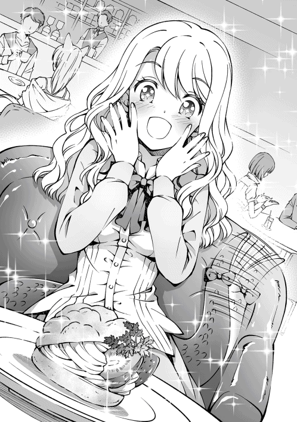
「はむ」
シュークリームを一口齧 ると、シャクリ、と心地よい音がする。先ほどまでの戸惑いが嘘のように表情が晴れやかになっていた。
「〜〜っ！」
美味しかったのだろう。尾を振って喜んでいる。
ほっぺたが落ちるとは、今のリリスみたいな状態を言うのかもしれない。
「ん......」
もう一度、口へ運んでやると、指に温かな感触が触れた。
もしかして、俺の指を舐めている？
「はぁむ......ん......ちゅぱ......」
「お、おいおい......」
俺の人差し指にはふわふわのカスタードクリームが付着していた。取るときに付いてしまったのだろう。しかし嫌がらず、じっくりと味わうように咥 えた。
熱い。彼女の中は粘膜に包まれていて、とても熱かった。ゆっくりと吸い付き、喉 へと飲み込んでいく。甘い吐息を漏らしながら、美味しそうに味わっている。
まずい......流石にこれは、まずいって......。
「えへへ、初めて食べたけど、シュークリームって美味しいね！」
「そ、そうだな」
危うく、理性が暴走するところだった。
「あ......」
「どうかしたのか？」
突然、彼女の表情が強張った。
「な、なんでも、ないよっ！」
ブルブルと否定するが、何かを隠していることは明確だった。
しかも、徐々に泣きそうな顔になっている。
何かが変だ。
「先日のラミアは売り物になりませんでしたね」
「はっ！ 要領が悪いからなあの蛇女は」
そんな声が、背後から聞こえてきた。リリスの視線を追ってみる。その先には、窓際の席で楽しそうに談話する商人風の男の姿があった。
「あ、うっ......」
リリスの瞳に涙が溜まっていた。なんだろう。どうしてこうなっ──。
『──わたし、生まれた時から奴隷商に飼われていたんだ。ラミアは希少種で値段が高いんだけど、ドジばっかりするわたしは売れ残っちゃって......。それでね、最近になって捨てられちゃったの』
「──ッ！」
なるほど、そういうことだったのか。どうりでリリスの様子がおかしくなるわけだ。
あのへらへら笑っている男が、奴隷商人なのだろう。
「でも、捨てなくてもよかったんじゃないですか？ 兄貴の性欲の捌 け口に......」
「馬鹿か。蛇女なんか気持ち悪くて抱けるかよ」
「それもそうですね」
この世界には様々な種族が共存している。価値観を分かり合うことは難しい。
でもな、
「リリス」
「な、なにかな......！」
ごしごしと涙を拭って、作り笑いを浮かべてきた。
「あいつがお前を捨てた商人なんだな」
「......！ な、なんのこと」
「ちょっと待ってろ」
「あ......」
リリスは何か言いたげだったが、構わず商人の元へと近づいた。
そう、これは大事なことだ。
「随分な口を聞いてくれるじゃないか、商人さんよ」
つい、そんな言葉を口にしていた。
「あぁん......？」
人外は人間に逆らうことが世間的に許されていない。
この世界が抱く、不条理な共存条件の一つ。
しかし、俺は人間だ。
「なんですか、貴方は？」
「食事中ですから、後にしてくれませんかね、小僧」
威嚇するように商人は立ち上がった。
「大丈夫さ、すぐに済むから──」
俺は驚くほど冷静だった。
商人の腕を捻り、体を床へと叩きつけ、足蹴りする。
「──てめえを半殺しにしたら終わるからよ！」
乱闘が始まった。
† ׆
「すまん。捕まっちまった」
「......グラッドくん」
詰所 でたっぷり説教されて、帰り道。
あいつらは奴隷商人ということが判明し、騎士団長たちが捕まえていった。
「ほら、宿へ戻るぞ。そろそろ帰らないと、リヴたちが心配するからな」
「う、うん......」
リリスはそれ以上は何も喋らず、静かに隣を歩いていた。
宵闇に包まれる中、宿へと歩く。
「......あの、ね」
「どうした？」
「......ありがとう」
例の奴隷商人のことを言っているのだろう。リリスは俯きながら足を止めていた。彼女とは短い付き合いだが、何を考えているかくらいは察しがつく。
「気にすんな」
少し悩んでから、そう答えた。
リリスの境遇を考えるに、今まで奴隷商人に歩き回らされる時間をずっと過ごしてきた。
常識も殆ど学ばず、人を疑うことも知らず、ただ純粋に他人を信じて、依存して一生懸命に生きてきた。それをあの商人は笑い、酒のつまみにしていた。
今のリリスがどれほど傷ついているのか、俺では完全に分かってはやれない。
でも、放っておくつもりもなかった。
「言ったよな。俺がリリスの家族になってやるって」
とても臭い台詞。リリスが勘違いして、リヴとテレサをも巻き込んだ疑惑の言葉。
あの言葉に偽りはない。
だって、彼女は普通の幸せを望んでいる。
美味しいものを食べて、喜んで、感動して。
そんな普通の生活を送りたいと願ってる。
それなら、誰かが導いてやる必要がある。
これ以上、他人に騙される無駄な時間を過ごさせない為にも。
「......う、ふええ......」
リリスが息を呑んだ。
俺の言葉の意味を、必死に考えているのかもしれない。
「だから──」
もう、リリスが傷つく必要はない。おかしいのは奴隷商人たちで、リリスは何も悪いことをしていないのだ。どんな境遇に堕ちても、ニコニコと笑っていられるリリスは俺なんかよりも断然すごい。
俺は、伝えないといけない。
「──だからさ、辛いことがあったらなんでも言ってくれ。俺がリリスを支えるから」
こっそり購入しておいたコサージュを手渡した。
「それ、やるよ。本当はお姉さんにあげるつもりだったんだが、リリスの方が似合いそうだしな」
言ってから、お姉さんのことは伏せておけばよかったと後悔。
肝心な時に俺は口下手になるな......。
「......もらっても......いいの......？」
リリスは驚いたように顔を上げていた。
返事の代わりに、コサージュをつけてやる。
「それじゃ、帰るぞ」
俺はリリスの頭を撫でてから、隣を歩く。
「......あ、うぅ......！」
「あー、もう夜中になるのか。リヴたちに叱られるな」
「......グラッド、くん」
「おっと、機嫌を取るのに甘いものでも買って──」
「グラッドくん！」
今まで聞かなかったリリスの強い声を聞いて、思わず振り向いた。
「......どうした？」
できるだけ、いつもの態度で問いかける。
リリスは、目に涙をいっぱいに溜めて、
「──わたし、グラッドくんと家族になれて幸せだよ──！」
そう頷いたのだった。
翌日──。
見わたすかぎり灰色の空であった。
今にも雨が降り出しそうな気配を感じるが、今日はやるべきことがある。
買い出しだ。
魔法都市へ向かうには、いささか水と食料が足りない。さらにリリスも加わったので、多めに用意する必要があった。しかし俺たちは馬を一頭しか持っていない。なので、大量の荷物を持ち運ぶことができない状況に置かれていた。
リヴたちと相談した結果、幌 馬車を用意することにした。幌馬車なら雨風も凌げるし、食料なども保管しておくことができる。馬の体力が心配だが、こまめに休みながら進むしかないだろう。
さっそくお姉さんに相談すると、職人さんを紹介して頂けるとのこと。今はリヴたちと荷台を引き取りに向かっている。
俺はというと、別行動を取っている。
その理由だが──。
「すみません......。荷物、持ってもらっちゃって......」
「いや。俺こそ気晴らしになったよ」
俺は、狐少女と買い物をしていた。
「ずっと、街を歩きたかったんです......。今日は、わがままを聞いてくれて、ありがとうございました」
狐少女は笑っていた。
実はお姉さんから、狐少女と散歩をしてあげてほしい、と頭を下げられたのだ。というのも、やはりお姉さんと狐少女は姉妹だった。呪術が解けてからというもの、ずっと俺の話題が会話に上がっていたらしい。尻尾をぶんぶんと振って楽しそうに笑っていたそうで、商業都市を旅立つ前に楽しい思い出を与えてほしいとのことであった。
「ほらほら、遠慮せずにいってらっしゃい。馬車はあたしたちに任せなさいって」
親指を立てて背中を押してくれたリヴ。頭が上がらない。感謝しつつ、午前中だけ狐少女と街を見て回ることにした。
「今日は、本当に楽しかったです......。お兄ちゃん、ありがとう......！」
「はは、俺こそ楽しかったよ。こちらこそありがとな」
「ひう......」
照れくさそうに喜ぶ狐少女。
その後も他愛のない話をしながら歩いていたのだが、突然、雨雲が立ち込め、ざああと雨が降り出した。とんでもない勢いである。
「くしゅんっ......」
雨宿りをしたいところだが、狐少女はずぶ濡れであった。もともと病弱の傾向にあるらしく、このままだと風邪を引いてしまうかもしれない。
幸いにも、孤児院は目と鼻の先だ。急いで戻るとしよう。
「すまん、ちょっと抱えるぞ」
「あ......」
狐少女を横にして抱き上げ、前傾姿勢になりながら一気に駆け出した。歩いて帰るよりは濡れなくて済むだろう。
「あ、うぅ......」
「ん、どうした？ って顔が赤いな......熱でも出たか？」
「ち、違うの......これは、嬉しくて......か、軽々しく口にできないこと......」
ああ、そういうことか。流石の俺も狐少女に好かれている自覚はあったが、どうやら異性としても惹かれているようだ。
もちろん嬉しいさ。そりゃ俺だって男だし、可愛い女の子から好かれることに多少は上機嫌になるが、受け入れることはできない。
年齢の問題もあるが、何よりも俺は旅人だ。リヴのために生きると誓い、これからも旅を続けると決めている。
「お兄ちゃん......どうしたの......？」
狐少女の上目遣い。
ここではっきり断ることも優しさなのかもしれないが、俺には言えなかった。
そもそも、俺に気持ちが見透かされていることも気付いてないのだろう。
つまり、彼女は今の関係を望んでいる。
今までどおり、兄や妹としての関係を望んでいる。
それならあれだ。俺は気付かないフリをしてやればいい。
「いや、俺が作ったワンピース着てくれたんだなぁと思って」
「あ......」
狐少女が照れくさそうに表情を和らげる。
「似合ってるぞ」
「えへへ、ありがとう」
雨でワンピースの中身が透けているが、そこは触れないであげようか。
孤児院に着いたので狐少女を降ろし、他の子供たちが用意してくれたタオルで体を拭く。
下着まですっかり濡れていた。
「お兄ちゃん、風邪引いちゃうよ......？ わたし、すぐにお風呂から上がるから、入って行ったらどうかな......？」
「ん、風呂か。そうだな、借りてもいいか？」
「うん......！ 着替えを持ってくるから、ちょっと待っててね」
とことこと走っていく狐少女。
すぐに神父様の服を持ってきてくれて、俺は服を着替えることにした。
さて、風呂の時間まで子供たちと遊んでやるとするか。
† ׆
ほどなくして、狐少女が風呂から上がってきた。
しっとりと水気を含んだ髪。仄かに漂う石鹸 の香り。
恥ずかしそうに上目遣いで見上げてくる狐少女は、普段よりも可愛らしかった。
「ゆっくり入ってね」
脱衣場へと案内を受けると、浴場は真っ白な蒸気に覆われていた。
想像していたより広く、湯船には一度に数人の子供が入れるような造りであった。
まずは体を洗い、汚れを落とす。それからゆっくりと湯船に浸かった。
──あぁ、気持ちいい。
生贄から始まった旅路は、砦を探索したり、盗賊と戦ったり、色々なことがあった。
明日からも旅が始まるが、今日くらいはゆったりとした時間を過ごしても罰は当たらないだろう。
外では雨が降り続けていた。音が心地よくて、まるで子守歌のようだ。
このまま寝てしまいそうになった俺はゆっくりと瞼 を閉じて......その時だった。
──ガラリ。
脱衣場に誰かが侵入してきた。もしや狐少女だろうか。
ああ、そうか。先ほどまで俺が来ていた神父の服を別のものへ取り換えにきたのだろう。
そんなことをのんびりと考えて、天井を仰いでいたときだった。
浴室の扉を開ける音がした。
おいおい、まさか一緒に入るつもりか？
狐少女はまだ幼く、俺とはある程度の年齢差があるとはいえ、一緒に湯船に浸かることはいささか危ないというか......いや、絶対まずい。俺が良くても社会的にまずい。
考えている間にも、ちゃぷん、と湯船に足を踏み入れた。無防備すぎる。好意を抱いてくれるのは嬉しいが、ここはきつく注意するべきだな。
そう考えて、視線を向けると、
「あれ、グラッドさん......？」
両手で長い髪を後ろに梳 きながら、お姉さんが入ってきた。
あ、え、なんで、お姉さんがここに？ リヴたちと荷台を買いにいったんじゃ？
こんなの絶対にありえない展開だよな？
混乱が脳裏を渦巻いた。
待て。待ってくれ。この状況はもしかして──。
「「 ............ 」」
お互い、素っ裸で静止していた。
隠すものは何もなく、お互いに視線を合わせたまま動けない。
驚きや羞恥 心もあるが、それ以上に思考が停止している。
落ち着け、ここは冷静になろう。よし、落ち着いた。
目の前にはお姉さんの白い肌が鮮やかに映っていた。
以前から綺麗だと思っていたが、直に見ると想像以上であった。
ぎゅっと引き締まったウェストと、圧倒的なボリュームを誇る双 つの膨らみ。
まさに豊満な体つきが際立っている。俺にはあまりにも刺激が強すぎる光景だ。
お姉さんも同じだったようで、湯船に浸かった俺の様子を上から下までゆっくりと眺めていた。
「な、なな、え、えええええ!? 」
俺の姿を見て、我に返ったらしい。一気に頬を染め上げる。
慌てて両手を使って胸を隠し、湯船の中へ座り込んでしまう。
「ググ、グラッドさん......!? ど、どうして、お風呂に......!? 」
「いや、俺は狐少女に勧めてもらったんだが......」
お姉さんはパニックを起こしていた。
蒸気が吹き上がりそうなほど、あわあわとしてる。
前屈みになって、お姉さんは外に出たくても出れない状況になっていた。
「ご、ごめんな！ すぐに後ろを向くから！」
「あっ、私もですね......！」
急いで視線を逸らそうとしたときだった。お姉さんが背中を向けたとき、見てしまった。
「え？」
お姉さんの丸まった背中に、大きな火傷の痕が刻まれていたのだ。昨日、今日についたような火傷じゃない。もっと昔に負ったものだ。
「お姉さん、その火傷は......？」
「え、あ......」
お姉さんは呻きを漏らし、慌てて尻尾で背中を隠した。
「こ、これはその......気持ち悪い、ですよね......」
ふむ、触れてほしくないことのようだ。
そりゃそうだよな。男ならまだしも、彼女はまだ若い。あんなに大きな火傷の痕なんて、誰にも見られたくないに決まってる。ここは違う話題にするべきだな。
俺は壁を向き、お姉さんと背中越しに切り出した。
「あー、なんで風呂に入ってきたんだ？」
「えっと、休日のこの時間はいつもお風呂に入っているんです。リヴさんたちと荷台を購入しに向かったんですけど、予定よりも早く購入が終わったので戻ってきたんですよ。途中、雨で濡れてしまったので温まろうかと思ったのですが......その......」
先に俺が入っていた、ということか。そういや、お姉さんも妹の関係で、孤児院で暮らしているんだっけか
「あの、背中の火傷のことですけど......気になりますよね？」
「ん、まぁそうだな......。気にならないと言ったら嘘になるな」
無理に聞く気はないが、お姉さんは溜め込んだ何かを相談したいらしい。言いかけては、止めてを何度か繰り返している。俺は黙って聞くことにした。
「......私、二年ほど前まで冒険者をしていたんです」
お姉さんは吐き出していく。
「そのとき、小さな村の依頼を受けていたんですけど、そこへ竜が襲ってきたんです。今思えば小さな竜でしたが、村を焼き尽くすには十分な力を持っていました。私は村が焼かれるのを見ていることしかできなくて......。火の手が上がる村から逃げるとき、逃げ遅れた子供を見つけたんです。空から竜が迫っていて、今にも灼熱の吐息を吐き出そうとしていたところでした。このままじゃあの子は死んでしまう──そう考えたら、体が勝手に動いていたんです」
その時に負った火傷が、先ほどの背中ということか......。
「私も子供も無事でした。古井戸の中に飛び込んだおかげで、背中を焼くだけで済んだんです。すごく痛かったですし、苦しかったですけど、あの子が助かってよかったです。私、あの子を護れたんですよ？ この火傷は私の勲章です......」
お姉さんは誇らしく笑っている。でも、俺には虚勢にも聞こえた。
「私はすぐに冒険者を辞めました。冒険者になったときから死ぬ覚悟はできていたはずなのに、怖くなって戦えなくなったんです。戦うことから逃げたんです。それからは受付嬢として働くことにしました」
本当に勲章だと思っていたのなら、背中を見せることだって嫌がらない。
戦えなくなったのも、冒険者を辞めたのも、怖くなったからというよりは......。
自分が、許せなかったんじゃないだろうか。
村が焼かれていく様子を見守ることしかできなかったお姉さんが、自分自身を許せなかったんじゃないか？
だって、お姉さんの声には後悔が含まれている。
「......お姉さんのせいなのかな」
「グラッドさん？」
「......竜と一人で戦うなんて、英雄でもない限り無理に決まってる。騎士団でも討伐が成功するか分からないんだ。お姉さんが一人でどうにかできるものじゃない。仕方のないことだったんじゃないか？」
お姉さんが罪を背負う必要はない。悪いのは、竜に過ぎないのだから。
「......本音を言って構わないんだぞ？」
「えっ？」
「ここでなら本音を言って構わない。俺以外、誰も聞いてないし」
普段から冒険者たちに頼られ、子供たちにも頼られているお姉さん。
領主や騎士団長とも親交があるようだし、気が休まる暇がないのだろう。
「グラッドさん......」
お湯に水滴のポトリ、ポトリと落ちる音が響く。
俺は言葉を待った。しばらくして。
「............守れなかったことが、辛いんです」
それはとても小さくて、弱々しい響きだった。
「私が強ければ、村を焼かれることはありませんでした......っ。その前だってそうです！ 目の前で両親の命が奪われるのを、ただ見ていることしかできなかったんですっ！」
感情が爆発し、激化していく。
「それなら、強くなればいいさ」
「簡単なことじゃないんですっ！ 英雄になれるような力なんて──」
「そうじゃない。心を強くしろってことだ」
「......え？」
「俺もさ、本当は弱いんだ。ある人に助けてもらって、力を貸してもらっているから盗賊を倒すことができた」
本当の俺は、剣技を使うことしかできない傭兵だ。
学もなく、力もなく、ただ日々を生きているだけだった人間だ。
でも、俺は変わろうと誓ったんだ。
あの日、リヴに助けてもらったおかげで、変わろうと決意したんだ。
「お姉さんが迷っているのなら、俺が手伝うよ。だって、お姉さんは泣いているじゃないか。過去を悔やんでいるのなら、それを乗り越えられるように支えてやりたいんだ。......頼むよ、一人で抱え込まないでくれ......」
ようやく、想いを伝えられた。
「悪い、ちょっとだけ振り返るぞ」
「あっ──」
彼女は周囲に頼れる人がいなかった。
ならばせめて、俺が受け皿になってやりたい。
「リザレクション」
俺だって、ただ過ごしてきたわけじゃない。
大罪神剣が無くても、自力で魔法くらいは使えるようになった。
お姉さんの傷が癒されていく。
「よし、これで大丈夫。背中、見てみるといい」
「え？ あっ、え？」
俺が背中を向けると、お姉さんはすぐに脱衣場へと移動した。
「嘘、ですよね......火傷の痕が、消えて、ますっ......！」
すすり泣くような声が聞こえてくる。
「グ、グラッドさん！ ありがとうございます！」
すると、お姉さんは湯船に飛び込んで、俺の身体を反転させて、
「ちょ、ちょっと待った、お姉さん！」
正面から抱きつかれてしまった。思わず声を漏らしてしまう。
ぎゅっと体を密着させているので、柔らかくて、重みすら感じるほどの胸が押し潰れているのが伝わってくる。このままだとやばい。
「お、俺も裸だからやめてくれって！」
「グラッドさん！ グラッドさん！ 私、嬉しくてっ！」
お姉さんのしなやかな手が、俺の首に巻き付いた。
そのまま俺は首を動かすと、お姉さんの顔が目の前にあって......。
「グラッドさん......」
唇が、近づいて......！
「ねえ、何をしているのかしら？」
すべてを凍てつかせる悪魔の声が聞こえてきた。
ハッと振り返ると、こめかみに青筋を走らせたリヴが立っている。
どうして孤児院に......？
「あ、リヴさんたち も、私と一緒に孤児院に来たんです」
その後は大変だった。
浮気されたあああ、と、泣き叫ぶリヴ。
拗ねて頬を膨らませるテレサ。
意味が分かってない笑顔のリリス。
ショックのあまりに寝込む狐少女。
そしてお姉さんと俺は騒ぎを聞きつけた神父様に説教を受けた。
「子供たちの目もあるのです。やるのなら......外でやりなさい」
外でもよくねえよ。
ま、まぁお姉さんが立ち直ってくれたから、結果的にこれで良かったのかな？
「聞いているんですか？」
「す、すみません......」
いや、やっぱりよくないか。
気付けば雨は止み、どこまでも晴天が広がっていた。
† ׆
翌日の朝。
俺たちは商業都市の門で、冒険者たちや騎士団、孤児院の子供たちに見送られて、幌馬車に乗り込んだ。
「もう行くのですかな？ 寂しくなりますな。子供たちも懐いておるし、ずっとこの街で暮らしてほしいと思っていたところですぞ」
騎士団長はそう言って笑った。
「グラッド兄ちゃん、たまには帰ってきてね」
子供たちも唇を尖らせている。
大体挨拶は終わったのだが、お姉さんは最後まで姿を見せなかった。
まぁ、昨日あんな騒動があったばかりだし、顔を合わせにくいのかもしれない。
お姉さんに力を貸すって約束したけど、それはファルギウスの調査が終わってからになりそうだ。
残念だが仕方ない。挨拶ぐらいはしたかったけど。
「うし、全員揃ってるか？」
「はいです！」
「いるわよ」
「はーい！」
リヴも、テレサも、リリスも、すでに馬車へ乗り込んでいた。
最後に、もう一度だけ狐少女を見た。その身体には、俺が作ってあげたワンピースを着ていた。泣かないように頑張っている。目に溜まった涙をこぼさないように見開いて、唇を結んで、小さな肩をふるふると震わせて、必死に我慢している。
「大丈夫だ、また会える」
頭を撫でると、表情を歪めた。
今にも泣いてしまいそうな顔で、俺を見上げてくる。
「......」
疑っているようだった。
「それじゃ、指切りでもするか？」
と、笑いかける。
まじないに過ぎないが、狐少女は小指を出してきたので、俺も小指を重ねる。
「嘘吐いたら針千本だな」
もう一度、頭をゆっくりと撫でた。
「君は生きられる。困ったことがあればいつでも呼べばいい。俺も、みんなだって助けてくれることを忘れるんじゃないぞ」
「......」
狐少女は喋らない。ただ、涙が溢れていく。手にぎゅっと力がこもった。
「それじゃ、元気でな」
少女の肩を軽く叩いてから、御者台に乗り込んだ。
隣にはリヴが乗り、手綱を握り、馬車が走り出したとたん、狐少女が叫んだ。
「お兄ちゃん！」
振り返ると、ぽろぽろと涙を風にまき散らしながら、精一杯に走る狐少女。
何度も転んで、小さな体にかすり傷を作って。
「お兄ちゃんー！ お兄ちゃんー！」
最後の最後まで、泣かない姿を見せてくれた。
リヴが止まろうとしたが、俺はそのまま進むように指示を出す。
今止まったら、狐少女の涙を見ることになる。
彼女の努力を無駄にしないためには、このまま進むしかなかった。
「ありがとう！ お兄ちゃん！」
沢山の出会いがあった。出会いが孤独を忘れさせてくれた。
子供たちにはどうか、立派な大人に成長してほしい。
信頼できる友達を作って、困ったときは助けてもらい、絆を育て、心から愛する人を見つけて──そうやって、大人になっていくのだから。
「グラッド......」
「大丈夫だ、心配かけて悪いな」
きっと、会える。必ずまた会える。だから......！
「行ってくる！ またな！」
明日を迎えるために、俺たちは今日を全力で生きていく──。
ラミア『リリス』
▼Unique Abilities
・人外ランク ： 中級位、メデューサの末裔
・存在レベル ： １
・他、無し
同日、グラッドたちが立ち去った夜。
商業都市の孤児院の浴室で、お姉さんは狐少女とお風呂に入っていた。
「お姉ちゃん、行かなくて良かったの？」
「いいんです。私が行ったら甘えちゃいますから」
お姉さんは嘘を吐いていた。本当はグラッドと一緒に旅をしたかったのだ。しかし、唯一の肉親である妹の狐少女を残して旅立つことができなかった。
お姉さんが幼い頃から冒険者として働いてきたのは、すべて妹のためであった。
妹の呪術を解呪するお金を貯めるために。
妹が学校へいくためのお金を貯めるために、その身を粉にしてまで働いてきた。
「嘘だよ」
そんな姉を見て、狐少女は強く言った。
「本当は行きたかったはずだよ。お姉ちゃん、お兄ちゃんに言われたんだよね？ 本音を言ってくれって。たぶん、お兄ちゃんは、こう言いたかったんだと思うかな......」
狐少女は、姉の背中を叩いた。
「やりたいことをやるのも大切だって」
お姉さんは押し黙った。何も言えなかった。
「行ってきて。わたしじゃお兄ちゃんの力になれないから。わたしの分まで、グラッドお兄ちゃんを助けてあげて！」
「で、でも、せっかく体調が良くなったのに、お金がないと学校へ──」
「大丈夫。さっきね、荷物が届いたの」
「荷物ですか？」
「うん。宝石の詰まった荷物。中には匿名 の手紙が入ってたんだ。『孤児院のみんなに美味しいものを食べさせてやってください』、って......そんなことする人って、限られてるよね」
その手紙を送ったのは、紛れもなくグラッドであった。
教会の修繕費や子供たちの養育費として使ってほしいと願い、騎士団長に頼み手渡してもらったのである。
「グラッド、さん......っ！」
お姉さんはすぐに察した。涙で湯面に波紋が幾重にも広がった。想いが強く募っていく。
「お姉ちゃん、本当に追いかけてなくていいの？ わたしなら大丈夫だよ。ずっと、ここで帰りを待ってるから」
結局のところ、お姉さんよりも狐少女の方がしっかりしていたのである。
姉が一度決めたら考えを曲げないことを誰よりも熟知しており、どうすれば本音を聞き出せるかもわかっていた。
「......このまま、お礼をしないわけにはいきませんよね」
お姉さんは決意する。
「私、もう一度だけ冒険者に戻ってみます」
その胸に生まれた微かな灯 が、恋だとはまだ気付かず──。
翌日、お姉さんも魔法都市へと旅立った。
商業都市から、魔法都市ゼラムへ繋がる深淵の道──。
過去の戦争で切り開かれた土地を、馬車で突っ切っていく。
その道中、リリスとテレサに最低限の身の守り方を教えることにした。
リヴが手頃な魔物を探しにいく中、俺は冷静に二人の特徴を思い返す。
「どうやって戦えばいいの〜？」
リリスは逃げ足こそ早いが、戦闘経験は皆無。咄嗟 の判断力も鈍い。
「はぅ、簡単な魔法しか使えないですよぅ......」
テレサはスライム種で、魔物の中では一番弱い種族と断言してもいい。
「わくわくするね〜！」
「ご主人さまに褒 めて頂けるように、精一杯がんばりますっ！」
二人とも、やる気に満ち溢れていた。
この調子なら、すぐ戦えるようになるかもしれない。
「お待たせしたわね！」
「おう、おかえり」
「ちゃんと魔物を見つけてきたわよ」
リヴは自信満々に胸を張り、鼻息を吹いた。俺たちに見せつけるように、木々の奥を指さす。どんな魔物を連れてきたのか、非常に楽しみだ。
「さあ、この子を倒すのよ！」
そう言って、森の奥から飛び出してきたのは──。
鑑定を発動させる。
▼ケルベロス
・種族 ： 神獣
・状態 ： 発情期
・性癖 ： 年下好き（飢えている）
・レベル ： 34
ふざけんな。
「待て、リリスたちを殺すつもりかよ」
「そんなつもりないわよ？ ケルベロスは見た目ほど危険な魔物じゃないもの」
俺の記憶では危険度Ａ級だった気がするのだが......？
ちなみに、テレサとリリスの危険度を表示するのなら、最低値のＦである。
そんな二人がケルベロスに戦いを挑めばどうなるか、容易く想像がついてしまう。
「仕方ないわね。あたしがお手本を見せ上げるから、騙されたと思って特訓するのよ？」
「本当に大丈夫なんですか？」
「もちろんよ、あたしを誰だと思ってるのかしら？」
躊躇 いもなく、リヴは断言する。
まあ、彼女は大魔法を操る悪魔だ。ケルベロス如きに敗北するとは考えられない。
「行くわよ、しっかりと勇士を目に刻みなさいっ！」
まったく、すっかり先輩風を吹かせやがって......。
俺たちの視線を浴びたリヴは、両手から魔力を迸 らせながらケルベロスへ立ち向かった。
──それから、十秒後。
「殺されるううぅぅぅ！ グラッドォ、助けてええええええ！」
ずたぼろになったリヴが全力で森を走り回り、逃走を図っていた。
「リヴさん、落ち着いてください！ 今、助けに向かいます！」
「わあああああん！ 集中できなくて魔法が唱えられないわよぅ！」
そうだよな。リヴの得意分野は魔法だ。魔法って詠唱が必要だから、その隙を狙われたら手も足もでないよな。
発動さえできれば間違いなく最強なのだが......それ以外の能力は、貧弱なものである。
「このっ！ このっ！」
本人は本気で殴っているつもりなのだろうが、軌道がへろへろ。手応えのない拳がケルベロスに降り注ぐ。
「ガァァァオオオオオッ！」
「いやあああああああっ！」
リヴの意外な弱点を思い知らされた。
「グラッド！ 見てないで助けてよぅ──ひぃっ!? 」
ケルベロスの牙と、長い爪から繰り出される一撃は地面を浅く削り、唾液 は土をも溶かしている。
「ふぎゅっ!? 」
あ、吹き飛ばされた。大木に頭をぶつけて、痛そうに涙を浮かべている。
「やだぁ！ まだ結婚だってしてないのに死にたくないっ！」
「ごご、ご主人さま！」
そうだ、観察している場合じゃなかった。
「グルル......！」
やばい、食べられる！
「────ぴちゃぴちゃ」
ん？ あれ？
「あはは、くすぐったい！ あれ、もしかして敵意が無かったの？」
急にリヴの顔を舐め出したな。
「え、背中に乗せてくれるの？ グラッドー！ この子は人懐っこいみたい！」
あまりに突然の変化であった。不自然すぎる。
ふと、先ほどの鑑定結果を思い出す。
▼ケルベロス
・性癖 ： 年下好き（飢えている）
「......なぁ、リヴ」
「なぁに？」
リヴは無邪気な女の子だ。
ケルベロスにとっては、カモがネギを背負っている、状態である。
「そいつな、リヴを、別の意味 で食べるつもりじゃないか？」
「え？ まさかそんなこと」
「グルアっ！」
「いやああああああああああ！」
あっ、リヴが背中に乗ったから全速力で逃げ出した──なんて、冷静に考えている場合じゃねえ！ 急いで助けないと！
「助けてえええ！ このままじゃ死ぬよりも辛い辱 めを受ける気がするううううッ！」
リヴの声が遠ざかっていく。
「ご主人さま、どうしてすぐにお助けしなかったですか？」
「あんな魔物を連れてきた罰だよ」
「な、なるほど！」
「リヴちゃんって、感覚が少しズレてるよね」
まったくだな。
† ׆
「うぅっ、ぐずん......えぐっ、あぐっ......獣、イヌゥ......怖い、うぅ......」
悲惨な顔で泣きじゃくるリヴを背負いながら、馬車へと引き返す。
リヴの髪は唾液塗 れ。少しだけおでこにかじられた痕跡が残っている。
哀愁が漂っていた。しかも獣臭い。唾液塗れのせいだろうが、すぐにでも離れたい。だが、ここで逃げ出したらリヴはもっと傷ついてしまう。我慢しよう。
「うぅ......もう、お嫁に行けない......」
リヴの奴、全然泣き止む気配がないな。
「結局、あたしは足手まといだったわね......」
「そ、そんなことないですよ！ 今回はたまたま敵が悪かっただけです！」
「そうだよ〜！ リヴちゃん頑張ってたよ！」
「そうだな、頑張ってると思うぞ」
「......お世辞でもありがと。ちょっと嬉しいわ」
今のは本心だ。
リヴは子供っぽい所もある。甘いものを好み、辛いものや苦いものは全然食べられない。
夜中はひとりでトイレに行くのも怖がっているし、真っ暗な場所や目に見えない幽霊が大の苦手。
そんな女の子なのに、俺を助けてくれた。いつも俺を心配してくれて、いつでも傍にいてくれた。誰よりも優しい子だ。俺なんかよりも立派である。
もし俺たち以外にリヴを笑う奴がいるなら、俺が殴ってやるさ。
「......むぅ、失礼なこと考えてるでしょ」
「考えてないっての」
「嘘っ。絶対子供っぽいって思ってるぅー！」
こういう鋭いところはアレだが。ま、泣き止んでくれて何よりか。
「......このままじゃ、あたしの威厳が無くなるわ！」
冒険者協会も後少しという所で突然、リヴは背中から飛び降りて立ち止まった。
「やっぱり一体くらいは魔物を討伐しないと、格好いい姿を見せられないわね！」
何を思い立ったのか、再び来た道を引き返していく。
魔物を倒すつもりのようだ。
「あっ、おい！ 勝手に行くなって！」
振り返ると、視線の先に立つゴブリンと視線が交わった。
「あたしが子供の姿だからって馬鹿にしないでよ！ これでも悪魔の血が流れているんだからぁ！ 喰らいなさい！ 風の十二方──」
リヴが詠唱した瞬間、横から目にも止まらぬ速さでゴブリンたちが襲いかかった。
「え、ちょ、はぅんっ!? 」
突き飛ばされ、痛そうに腰をさするリヴ。
「ウヘヘッ......」
その周囲を取り囲むゴブリン。
▼ゴブリン
・状態 ： 発情期
・性癖 ： 誰でもいい
「いやあああああああ！」
気付いたら、俺たちはリヴを守るために戦っていた。
十分後、色々な意味で大変なことになりそうだったリヴは真っ白になり、ゴブリンを自分の力で倒したテレサたちは自信をつけていた。
今日、分かったことがある。
リヴからは目を離してはいけない。そう思った。
† ׆
さて、当分はこの四人で旅を続けることになると思うのだが、彼女たちの能力はどのくらいなんだろうか？
盗み見したいわけじゃないが、鑑定スキルで調べてみるのも面白そうだ。
▼テレサ（処女）
・種族 ： スライム
・年齢 ： 10 歳
・レベル ： ３
・グラッドへの好感度 ： ３５８（１００を基準とする）
「ぶっ!? 」
「ほえ？」
見ちゃいけないものを見た気がする。
なんとなく予想はしていたが、俺ってテレサに好かれていたんだな。
いや、でもこの結果は合っているんだろうか？
気になるな。試してみよう。
「テレサ」
「はいです！」
「俺のこと好きか？」
「はわぁっ!? な、な、なんのことですか〜！」
盛大に目線が泳いでいる。
あうあう、と口を動かしていた。
肯定で間違いない。
「いや、冗談だ。変なことを聞いて悪かったな」
「い、いえ！ ご主人さまの頼みですから！」
なんとか場を取り繕 い、今度はリリスに鑑定スキルを使ってみた。
▼リリス（処女）
・種族 ： ラミア
・年齢 ： 15 歳
・職業 ： アホの娘
・知能 ： ２
・レベル ： １
・騙された回数 ： １０１３
・グラッドへの好感度 ： ３２７
鑑定は正直すぎる......。これは酷い......。
知能指数にも驚きだが、騙された回数が桁違いである。
決して褒められたことではないが、騙された回数だけなら世界中を探しても一番かもしれない。
あれ、涙が出てきた、どうしてだろうか。
どうにかしてリリスを自立できるようにしてやらないと、将来が不安すぎる。
本物のかばやきになる前に、彼女に教育をすることにしよう。
「グラッドくん、わたしを見たまま泣いているけど、どうしたんだろ？」
「娘を憐れむ父親みたいな目をしているわね」
「ご主人さまはお優しいですからね！」
心配する彼女たちを他所に、今度はリヴに鑑定スキルを使用する。
▼リヴ（処女）
・種族 ： 悪魔
・職業 ： 嫉妬の大罪
・性格 ： 最近、グラッドが他の女性と仲良くしていてもやもや中。
・胸囲 ： 絶望壁
・レベル ： ２３４
・グラッドへの好感度 ： １４５３
とんでもない好感度だな!?
たしかに俺の顔を見ると頬を赤らめたり、照れくさそうに視線を外したりしているので、そんな予感はしていたんだが......。
「いつも心配かけて悪いな」
「急にどうしたの？」
「リヴのこともちゃんと見てるから......大事な人だから」
「ふへっ!? 」
▼リヴ
・グラッドへの好感度 ： １５０１
お、また上がってる。
しかし、みんなして好感度が高いな。
俺は三人を順番に見た。
可愛いし、魅力的なところもあるのだが......。
「ねねっ、魔法都市についたらパフェを食べてみてもいいかしら！」
「パフェってどんな食べ物ですか？」
「ふわふわのクリームが柔らかくて、すっごく甘いデザートだよー！ わたしはコカトリスのレバーが食べてみたいなぁ」
......色気の欠片もない食べ物の会話ばかりしているのが欠点なんだよなぁ。
「せめて、もっと胸があれば......」
「「むっ!! 」」
俺の呟きを聴いて、リヴとテレサがぐいぐいと迫って抗議していた。
リリスだけは意味がわからないようで首を傾げていたが、俺は彼女たちを宥めながら気付けば笑っていた。
──魔法都市ゼラム。
この大陸でもっとも魔法が栄えた都市。
漆喰 塗りの建物が整然と並び、広い道幅は馬車も悠々とすれ違える。
三つの門を繋ぐメインストリートは都市の中央で交差しており、広場ができていた。
魔法都市には大陸中の秀才が集う魔法学園が存在し、数多くの英雄を生み出してきたとされている。その名残りが、都市の至る場所に置かれている魔石灯だろう。
夕方になれば自動的に点灯し、周囲を明るく照らしてくれるランプのようなものらしい。
唯一にして最大的に違うのは、油を必要としないこと。とても経済的である。
「平和な街ね」
途中の郊外では、人外たちが農作業をしていた。決して奴隷として働いているわけではなく、雇い主である人間から仕事をもらって働いているようだ。
まずは宿を探そう。
随分と急いだつもりだが、すでに西日は沈みかけていた。完全に日没となるには、あと一時間もかからないはずだ。
しばらくして、人外可の宿をようやく見つけた。馬車を荷台ごと預ける。
リヴが俺の手を引っ張り、手早く受付を済まそうとする。が、リリスが反対側の腕を引っ張り、テレサも真似してきたので一向に進まない。
「くすくす、仲がよろしいですね」
宿屋の従業員さんに笑われてしまった。恥ずかしい。
ここは値段が張るのだが、個室に風呂がついている。しかも石鹸や入浴剤も用意してくれるそうだ。ベッドもふかふかである。唯一気になったのは四人相部屋となったことか。
「ご主人さまぁ！ これあげますっ！」
テレサの手には、ちゃっかりクッキーが握られている。露店で購入したものだろうか？
せっかくなので、ありがたく頂くことにした。サクサクだ。甘い。カカオの深い味わいと、砂糖の甘さがこれでもかってほど口いっぱいに広がり、美味かった。
「みなさんの分もありますっ！」
「わぁ、ありがとう〜！」
「なんだか悪いわね」
テレサのこういった気遣いは、非常に良い空気を生んでくれる。流石である。
ただし、
「このクッキー、木の葉の形に作られてるんだね！」
「こっちは星型になってるわよ」
リヴとリリスがはしゃいでいるので、ちょっとばかり恥ずかしい。
尚、テレサは彼女たちの様子を楽しそうにニコニコと眺めていた。
その後、間食をしすぎたリヴとリリスは夕飯を食べられず、テレサと二人で食事をすることになった。食べ過ぎには要注意だな。
† ׆
翌朝、来訪者が現れた。
「グラッドさんはこちらですか？」
「あれ、お姉さん？」
俺は思わず、ぽかんと口を開けてしまった。
目の前にいるのは口にした通り、お姉さんだった。
もしかして、商業都市からわざわざ会いに来てくれたのか？
「どうして、ここに？」
「追いかけてきたんです」
「......俺に会うために？」
「は、はい」
少したどたどしい口調で、お姉さんは言った。
「グラッドさんにも、皆さんにも商業都市で大変お世話になりましたから。今度は、私がお手伝いできたらと思っています」
胸がいっぱいだった。
「でも、孤児院はいいのか？」
「はい。ギルドマスターも、神父様も、快く背中を押してくれました」
なぜだか俺には、お姉さんが多くの人に引き留められた所を無理やり出発してきたような気がした。髪型が少し乱れているせいだな、うん。
「──ファルギウスについての情報、調べてきましたよ」
お姉さんは荷物から魔法都市の地図を取り出した。
殆ど調べる時間が無かったはずなのに、ぎっしりと赤い文字で埋め尽くされている。
まさか、昨夜の内に調べてくれたのか。
「ファルギウスは用心深い男で、郊外の屋敷にこもったまま殆ど姿を見せないそうです」
「ねね、その情報はどこで手に入れたの？」
「奴隷商と闇市を中心に聞き込みを行いました」
お姉さんの言葉は間違っていなかった。地形探査スキルと敵探知スキルを組み合わせると、郊外の屋敷に赤い光が灯っている。きっと、ここのことを言っているのだろう。
「定期的に魔石と魔物を購入していたそうです。ここ半年ほどは購入数も増えて、お得意様となっているようですよ」
「へえ、よくそこまで調べられたわね」
「ええ。多少、揉めましたが 」
魔石と魔物の購入か。この二つから導き出される答えは......。
「生贄の儀式......か？」
「可能性が高いわね」
何を呼び出そうとしているかは不明だが、このまま見過ごすこともできない。
ファルギウスほどの男が儀式を行うとすれば、かなりの存在だと捉えた方がいいだろう。
「午後には郊外を探してみよう」
話は決まった。
「私もご一緒しますので、よろしくお願いします」
「お姉さんも行くの？ 受付嬢だと危険じゃない？」
「私、こう見えても昔は冒険者だったんですよ」
そういやリヴたちは知らなかったな。
たしかに刀とか弓が似合いそうな雰囲気を醸し出している。
気品のある顔をしているもんなぁ。
▼お姉さん（処女）
・種族 ： 狐人
・年齢 ： 17 歳
・職業 ： 冒険者（戦闘狂）
・武器 ： モーニングスター（鎖付きフレイル型の棘鉄球 ）
・レベル ： 21
・グラッドへの好感 ： ４５５
お姉さんは強かった。鉄球を振り回すほどに。
「どうかなされたんですか？」
「......いえ、なんでもありません」
明るめのブラウンロングの髪に、淑女的なメイド風の服を着る彼女。
そのお姉さんがまさかの怪力だったことに若干の衝撃を受けつつ、準備を始めた。
† ׆
正午の鐘が鳴り響く。
非常に賑やかな大通りを抜け、貧民区の更に奥──郊外を目指す。
貧民街では、住居を持たない人外の姿も目立った。彼らも仕事を請け負っているのだが、それだけで暮らせるわけじゃない。恐らくだが、野宿をしているのだろう。
「そこのお兄さん、よかったら寄っていかない？ サービスしてあげるわよ？」
「ん？ うおっ」
貧民区を歩いていると、ウサギ耳の女性が声をかけてきた。
ほぼ下着の状態で、最低限の部分しか隠れていない。
胸がでかいな......。
「こらー、誘惑されてるんじゃないのっ！ その子は娼婦よ！」
「グラッドさんは、こういうお店に興味があるんですか？」
お姉さんが言う。
「いや、興味というか、目を奪われたというか」
正直に答えられない質問だな。
「もし興味があるなら、私、がんばりますね」
「ちょっと待て、どうしてそういう話になった」
「心を込めてご奉仕させて頂きます」
「違う、そういう話をしているんじゃない」
たしかにお姉さんは整った容姿をしていて、絶世の美女と呼んでも過言ではない。
「......俺はそういう目的で仲間を見ないようにしているんだ。一緒に戦っているときに、女を感じたら困るだろうし」
ごめんなさい、嘘です。めちゃくちゃ意識しています。
リリスの胸に、しょっちゅう目を奪われています。
でも、こう告げておけば諦めてくれるだろう。......だよな？
「──流石はグラッドさんです。おっしゃることが違います」
あれ？
「ますます尊敬しちゃいました」
お姉さんの目は、まるで神様を崇拝する教徒のような目だ。
どうして、そんなに蕩 けた目を向けてくるんだろう。
「私の命に代えてもグラッドさんを守ってみせます！」
「はは......ほどほどにな」
それから、貧民区を抜けて少し歩く。と、
「グラッド」
リヴが言った。
「ああ、わかってる」
俺は、神剣へと変化したリヴを引き抜いた。
貧民街に入ってすぐ、後を付けられていたのだ。時折、屋根を登るような足音が聞こえてくる。囲まれているな。こんな芸当ができるとしたら、猫人に違いない。
「──止まってもらうよ」
貧民区と郊外の中間──廃屋が立ち並ぶエリアで、白猫の少年が立ち塞がった。
「こちらの流した情報に、まんまと乗せられたね」
「随分なご挨拶だな。俺たちはまだ何も言ってないが」
俺の挑発に乗りはしなかった。変わりに、今まで隠れていた猫人が次々に姿を見せる。
その手には、鈍い輝きを放つナイフが握られていた。
「リリス、テレサ」
「「 はい！ 」」
「さっき買ってやったクロスボウの使い方は覚えてるな」
「もちろんです！」
「う、うん！ 引き金を引けばいいんだよね......」
「上等だ。迷わずに撃て」
リヴは魔法を詠唱し、お姉さんも笑顔で棘鉄球を振り回し、遠心力をつける。
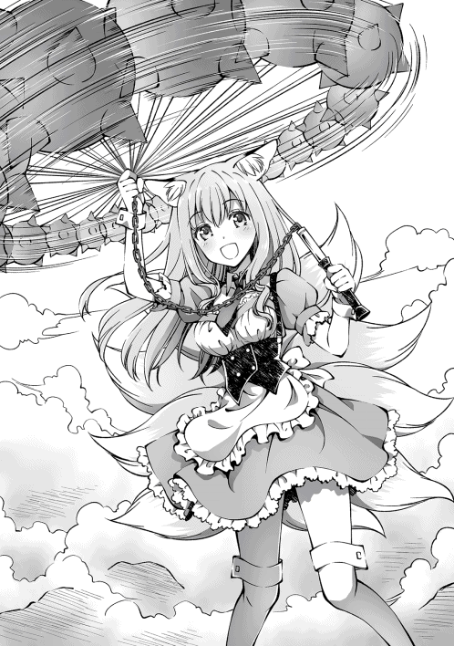
それを合図にするかのように、白猫と声が重なった。
「「 避けろっ！ 」」
リヴの紡いだ雷属魔法と、猫人が射る矢が同時に放たれる。
青白い閃光と共に、戦闘が始まった。
白猫が走っている。それはもう、とんでもない速度であった。
屋根の上へと飛び跳ねて、身体を捩り雷属魔法を避け、躊躇なく、両手の短剣で俺を狙いにくる。
この一角は別名『貧困者の墓場 』。
もともとは貧困者たちの溜まり場だったらしいが、今では荒くれ者たちが支配し、貧困者たちの僅かな身包みを剥 がし、完全な無法地帯になっているそうだ。
助けを求めようが手を差し伸べてくれる者はおらず、ただ力だけが全てを決める地区で、白猫は全力で駆け抜けている。
猫人の身体能力の高さを相まって、動体視力で追いつくのは俺でも難しい。
すぐさま加速を発動させた。
「悪いが、それじゃ俺は倒せねえ」
「──ッ！」
神剣で切り払うと、再び屋根の上に身を翻 した白猫は驚愕の表情を見せた。
狭い屋根で姿勢を屈め、堀の上を渡ろうとしたのに、人間である俺が先回りしたからだ。
白猫は蒼い瞳で真っ直ぐに睨み、ひたすら尾を振り続ける。
地味な格好であった。大きなフードを目深にかぶり、青白のパーカーに身を包んでいる。短パンなのは少しでも動きやすくするためだろうが、その細い足が目立つ。
「そこだっ！」
神剣を振り、短剣と衝突する。衝撃で火花が散り、風圧で周囲の建物が吹き飛んだ。
白猫は何度も地面を転がるが、すぐに立ち上がる。
「ダグザに勝つだけのことはあるね」
驚きの目をしていた。すさまじい速度で駆け抜けていく。
そして、跳躍する。
「でも、負けない！」
チャンスとばかりに、風を宿した短剣の一撃で迫る。
「いいや、俺の勝ちだよ」
「──っ！」
白猫が振り返る。
「グラッドくん！」
近づくのは鈍色の矢。
「そこね！」
リリスが目を瞑 って撃ったボルトに気を取られた白猫に、リヴの雷撃が直撃する。
白猫の体を感電させ、表情を歪めた白猫は落下。全身を廃屋にぶつける。
「あ、れ......」
周囲を見て、ようやく気付いたらしい。
僅か五分にも満たない交戦は、俺たちの勝ちだということに。
猫人は、一人残らず気絶していた。
「しばらく意識を取り戻さないでしょうね」
「う、そ......」
白猫が体を力ませる。
しかし、リヴがその小さな体を取り巻く様に、淡い燐光を浮かび上がらせる。
白猫の左肩には、強制主従関係を結ばされた証の、奴隷刻印が刻まれていた。
「やっぱりね。見えないように加工されてたけど、貴方の魔力は不自然に歪んでいたの。きっと、"ご主人"に無理やり契約させられたのね」
「......ッ！」
図星のようであった。
「貴方、本当は戦いたくないんでしょう？」
白猫は何も言わなかった。
「あー、まぁ、そういう事情なら命を奪う必要はないな──リヴ、頼む」
「ふふん、任せて！」
「......？」
リヴが治癒魔法をかけると、少年の怪我が癒されていく。
「......なんで、ボクを助けてくれるの？ 君たちを襲った敵だよ」
目を、ぱちくりとさせる。
治癒魔法の燐光が、白猫の身体をぐるぐると回って、消えていく。
「無理やり戦わされていたなら、敵も味方も関係ないだろう？」
白猫は、絞り出すように肩を震わせていた。
「術者を倒しましょう」
「待ってろよ。すぐに契約を解いてやるから」
もう、白猫には戦う意思が見られなかった。
「あ、あああっ......」
白猫は、呻くように涙をぽろぽろと流した。頬を伝い、地面へ染み込んでいく。
頭を一度上げた時に、フードがずり落ちた。
肩の下にまで流れ落ちる、透き通った、白雲の髪。
女の子だったのか。どうしてそんな格好を......なんて無粋か。
力がすべてを決める貧民区で、年頃の少女が暮らしていたらどうなるか、容易く想像がつく。身を守るために少年のフリをしていたのだろう。
「ごめ、んね」
白猫は申し訳なさそうに言った。
「気にすんな。お前、名前は？」
「シュシュ......」
「そうか、シュシュか。良い名前だ。俺はグラッドっていうんだ」
少しだけ笑って、尋ねた。
「ファルギウスに命令された、と考えていいんだよな」
「......ん」
肯定はしないが、首を縦に振ってくれた。
どうやら、主人の名前を口にすることが許されていないようだ。
「どうして、ファルギウスの奴隷にさせられたんだ？」
「......弟の、ために......」
「弟がいるのか」
「うん......重い病を患っていて、治癒院にかかるにはお金が必要で......そしたら、ご主人が無償で治療してくれるって約束してくれて......でも......嘘だった......！」
白猫は、歯を噛みしめた。
「無理やり、隷属契約を結ばされて......ちゃんと働いたら、治療してやるって脅されて......逃げたら、弟も殺すって言われて......そ、それで......」
白猫は取り乱し、そのまま拳で何度も固い地面を殴った。
悔しさに涙を流して、目を真っ赤に腫らして、嗚咽が、こぼれ落ちた。
酷く、憂鬱 と怒りと悲しみの混じった顔をして、少女が泣いた。
──風が吹き抜ける。
かさかさと、捨てられた紙屑が固められた道を転がっていく。
どこか遠くで、獣の遠吠えが聞こえた。
驚くほど自然に、俺は白猫を抱きしめていた。
「安心しろ」
「ふ、え......」
唾液をごくりと飲み干した。一瞬にして、感情が高鳴っていく。
「弟は、俺が責任もって......助けてやるッ！」
白猫は、何を言われたのか理解できてない様子で、顔を上げた。
「......ほんと、に？」
白猫の涙で滲んだ瞳を袖で拭いながら、顔を見る。
彼女は何も悪くない。彼女には、手を差し伸べてくれる人がいなかっただけだ。
『──そこのあなた。生きているわよね？』
俺には、リヴがいた。
あの言葉が、どれだけ俺を救ってくれたことか。
たった一言でもあれば状況が変わったかもしれない。
でも、彼女には助けてくれる人がいなかった。
だったら──今度は、俺がリヴになろう。
あの時に受けた優しさで、俺がこの子を救ってみせる。
「俺は嘘を吐かないんだ。一度くらい、信じてみないか？」
そこまで言って、白猫の表情が和らいだ気がする。
「うっ、ああ、うわああああん......えぐっ......ぐすっ......」
白猫は俺に抱きついて、思いっきり泣いた。痛いほど泣いた。大きな滴が目元から溢れた。感情の勢いはすぐに弱まり、叫び声は途絶え、嗚咽に変わっていく。
しばらく泣いたあと、ようやく口を開いた。
「グラッド」
「なんだ？」
「グラッド、グラッド」
「なんだっての」
「グラッド、グラ、ッド、グラッ......ド......」
「まったく、あんまり連呼するなって」
白猫の髪をくしゃくしゃとかき、タオルで涙を拭いてやった。
「あとは一人で大丈夫か？」
白猫にポーションを手渡した。
猫人たちは少女の仲間だろうが、彼ら全員を助けているほどの時間もない。
「うん......あのね、グラッド」
「ん？」
しばし沈黙したあとで。
「......お願い......ボクたちを、助けて......！」
どくん、と、心臓が跳ねた。
白猫の涙を見て、不愉快な感情が渦巻いた。
「任せておけ」
──禁忌の英雄、呪術騎士ファルギウス。
英雄が住民を利用し、命を粗末に扱い、心を平気で踏みつける。
何人も、何人だって苦しめておきながら、自らの犯した罪に向き合わない。
不愉快だった。
「これがお前のやり方なのか、ファルギウス......ッ！」
「グラッド......」
それなら、俺が罰を与えてやろう。
必ず、この手で──。
妖狐『お姉さん』
▼Unique Abilities
・人外ランク ： 上位
・存在レベル ： 21
・怪力 ： 鍛えた努力の結果、重い物を持ち運べるようになった
・妖狐神化 ： 妖狐族、本来の姿へ戻ることが可能
郊外。幾何学上に区画整理された都市部から離れたエリア。
身体の調子が狂いそうな高濃度の魔力が充満した場所──。
ファルギウスの屋敷。
「気持ち悪い魔力ね......。この霧って、すべて魔力で作られているわよ」
霧で真っ白に染まった根城 。
魔力の溢れだす屋敷の、その一角をリヴが指さしてみせる。
──聖王都が誇る元十二神徒の一柱、禁忌の呪術騎士ファルギウスが待つ場所。
「あれ？ リリスさん大丈夫ですか？ 震えてますけど」
「お屋敷に近づいていくと、肌がぶるぶるって寒くて......」
緊張、だろうか。無理もない。なにしろ、相手は生きた英雄なのだから。かつての戦争で竜の大群を相手に勝ち残ったほどの実力者。
「待ってください。様子がおかしいです」
不意に、強い口調でもってお姉さんが告げた。
「様子？」
屋敷の中庭はそれなりの広さがあるのだが、その一角に大勢の人だかりができていた。
「ご主人さま、テレサが確認してきます！」
「あっ──！」
俺の返事を待たず、テレサが中庭へと侵入した。
スライム化して、人の隙間をうねうねと突っ切り、状況を確かめに向かったようだ。
「怒らないであげてね。あの娘、グラッドの役に立ちたいのよ」
「もちろん分かってるさ。俺はただ、無理してほしくないだけなんだ」
数分待っていると、ひょっこりとテレサが戻ってきた。
「大変です、ご主人さまっ！」
慌てて、中庭の彼方 を指さして、
「──奴隷の公開処刑です！ 人間の娘たちが、縛り上げられています！」
沈黙。
......処刑？ 奴隷の公開処刑だって？
冷静を保っていた心に、怒りの熱が込み上げる。
「あの野郎、何考えてんだッ！」
「待って、あたしもいくわっ！」
俺は地を蹴った。加速を発動させ、魔力で増幅された集中力が、視界に映る景色の色彩を取り去った。中庭まで百歩の距離だが、今の俺ならば三歩でお釣りがくる。鋭い踏み込みにより、地面に浅い穴が開いた。構うものか。
もう、誰にも泣いてほしくない。
自分のように情に流される人間は、生きにくい世界だと思う。しかしそれでも、今助けなければ今後永久に自分を恨み続ける。情に流され、自己満足に浸る愚かな役者は、他の誰にも務まらない。
分かっているのだ。分かっているからこそ、動かずにはいられなかった。
あのとき、竜の生贄にされたとき。
絶望していた俺を助けてくれた少女 が、情に流されやすい悪魔だったのだから。
気まぐれな空を仰ぎ、跳躍した。
タイミングを見計らうために、屋根の上から状況を観察する。
「──聞け、人に虐 げられし神の使徒たちよ！」
中庭には祭壇が建てられており、その上に仮面をつけた男が立っている。
「今宵、神が降臨される！ 希望が世界を照らしつけるであろう！」
仮面の男は白銀の長髪をなびかせながら、祭壇に集まる信者たちに告げていた。
右手には、双子の蛇が巻き付いた片手剣を握っている。
「我ら人外は穢 れた存在と罵 られ、人間に不当に貶 められていた。迫害を受けた者も星の数ほどいよう。しかし、それも今宵で終わりとなるのだ！」
「「「 そうだ！ 自由をこの手に！ 救いをこの手に！ 」」」
とてつもない殺気が、孕 まれていた。
信者たちは全員、人外であった。白猫の前例にもあるように、生活に困窮 した者に手を差し伸べて、目的のために協力させているのだろう。
「神竜 の慈悲によって、我らは人と対等以上の存在になる。さあ、使徒たちよ。新たな世界を創り上げようではないか！」
ん、神竜......？
「グラッド、今の聞こえたわよね？」
俺の背中にしがみついていたリヴが尋ねた。
「ああ、聞こえたよ。どういう意味なんだ？」
すぐに返事はなかった。
「この世の地獄よ」
俺は聞いた。
生まれて初めて、この世界の始まりを。
「この星には数億年にも渡る、数多の歴史が存在しているわ。断罪戦争の話をしたと思うけど、それよりはるか昔──五千年前、絶対的な地位を巡って繰り広げられた神魔 大戦で、暴虐 の限りを尽くした一匹の竜がいたとされているの」
もちろん、それが事実なのかはあたしも知らないわ。と、付け足した。
「そいつの名は、神竜インヴィンジブル。最古にして最強の竜王。歴史が事実だとしたら、あたしたち大罪神剣が全員で挑んだとしても敵わない最悪の相手ね。正真正銘、破壊の化身よ。インヴィンジブル一匹のおかげで、世界の殆どが焼き尽くされたと記録されているほどだから」
「でも、ファルギウスが復活させようとしているってことは、最終的に封印されたのか？」
「その通りよ。天使、悪魔、人間、人外が協力して、多くの犠牲と引き換えに魂を封印することに成功したのよ。そしてね、性質 の悪いことに過去にも神竜降臨の儀を目論むものがいたってわけ。儀式には大量の魔力が必要で、それこそ何万人単位の命が必要になるわ。普通だったら用意できないでしょうけど......、ファルギウスは過去にある村の住民を、何かの生贄にしたことがあるのよね？ それがもしかしたら練習だったとしたら？」
冷たい汗が、つぅ、っと流れた。
仮面の男は狐少女にも呪術をかけていた。
暗い檻の中で、魔法の実験体にされたという。
なぜ、そんなことをしたのか？
嫌な予感が脳裏を過る。
別の答えを導きだそうとしても、一本に繋がっていく。
「──これぞ、神の奇跡なり！」
「おぉ、我らが紋章が輝いた！ 神が喜んでおられる！」
「神よ、我らに慈悲をお与えください！」
詳しい事情も説明せず、信者すらも騙して。
その紋章の輝きが、生贄の証とも知らずに。
「「「 祝福をこの手に！ 救いをこの手に！ 」」」
またひとり、さらに一人。次々と欲望が渦巻く。
ファルギウスが過去に人類を救ったことがあるのは事実だ。
だからこそ、英雄と呼ばれている。だが、
「......この程度の器なんだな」
苦笑が漏れる。
「グラッド、準備はいいかしら」
「ああ」
再び神剣化したリヴを構えた。
俺は一歩進み、屋根から重力に身を任せて落下した。
虚空を滑るような動きで、風が弾ける。間合いが詰まる。
「待っていたぞ、契約者 」
「──ッ!? 」
刃が、ファルギウスの右腹部に食い込んだ。
そのまま水平に、左腹部を音も無く食い破る。
だが、倒れない。
「驚くことはない。貴様が大罪神剣の契約者ということは、推測がついていた」
肉体を霧状に再生させながら、ファルギウスは言った。
ヴァンパイア族は不老不死だ。心臓を貫いたとしても、簡単には倒れない。
「契約者が無傷でここにいるということは、シュシュは敗北したか。いや、裏切ったとみるべきか？ くく、あやつは反抗的な目をしていたからな。勝てるとは期待していなかったがな」
シュシュが待ち伏せしていたときから感じていたが、ファルギウスは俺たちが来訪することを予見していたようだ。
「さて契約者よ。その程度の実力で、我に立ち向かうつもりか？」
「グラッドっ！」
ファルギウスの肉体が霧となって消えていく。
直後、背後から殺気。翻し、剣戟を放つ。
「くく、契約者の魔力を最後の生贄に捧げれば、すぐにでも神竜を復活させることができようぞ」
ファルギウスは両手に剣を握り、対峙した。
「へえ、その口調だとあたしを知っているみたいね。英雄ファルギウス......！」
「ああ、ずっと探していたぞ。大罪神剣リヴァイアサン......！ 禁書に記されていた史実には、貴様が契約者に無限の力を与えると記されていた。半信半疑であったが、そこの貧相な男と一戦交えて確信したよ。史実は本当であったとな」
ファルギウスはニヤリと笑う。
「貴様の力を真に使いこなせるのは英雄たる私ではないかな。私と契約すれば、その程度の力ではなく、全ての大罪神剣を統べる存在にすることもできように。さあ、共に来い。我と契約を結ぶのだっ！」
「絶対に嫌よっ！ あなたみたいな人と契約を結ぶくらいなら、潔 く死を選ぶわ！」
「そうか。では、契約者を殺すまでだ」
剣を掲げた。
「使徒たちよ、我らが神聖なる儀式を邪魔する愚か者が現れた。愚か者達を新たな生贄に捧げるのだ！ さすれば神の希望が与えられん！」
「「「 おおおッ！ 」」」
先ほどまで呆然と見ていた信者たちの奴隷刻印が輝く。
直後、先ほどとは様子が打って変わり、殺意を孕んだ瞳で俺たちを取り囲んだ。
「長年呪術を通して狂気を埋め込み、洗脳していたのね......。ここまで悪化したら、私でも助けられないわよ......」
下手をすれば、狐少女やシュシュも、こうなっていたのだろうか。
許せなかった。
「悪いな......。俺がお前たちを覚えていてやる......。だからさ......」
ここで立ち止まるわけには行かないんだ。
人外として迫害されてきた口惜しさも、無念も、俺が背負ってやる。
だから、だからさ──！
「せめて、安らかに眠ってくれ......！」
「ぐうっ!? 」
神剣を振り、襲ってきた信者たちを薙ぎ払った。
▼Skill：『崇拝』を修得しました。
「グラッド！」
リヴが叫ぶと同時に、俺は地を蹴った。対し、ファルギウスもまた霧状に転移する。
だが、遅い。リヴの魔法が放たれる。
『──堕落せす神の下僕 、誇り高き王アズガルドよ。
我が魔力に宿りし破壊の根源を、今ここに解き放て』
灼熱の爆轟。
火属極限魔法──エクスプロージョン。
神剣から発生した破壊の爆風が砂礫を巻き上げ、拡散する衝撃波と化して駆け抜けた。
眩 しいほどに輝く超高熱の魔法が飛び交い──。
「それがどうした」
ファルギウスに触れる直前で消滅した。
結界──高位の魔術師が扱う呪詛の壁だ。あらゆる魔法を即座に分解しつくす。
こうしている間にも信者たちが襲ってくる......はずだが、悲鳴は聞こえているのに誰も近寄らなかった。理由はすぐにわかった。
「グラッドくん、こっちは任せて！」
「ご主人さまの邪魔はさせません！」
「ふたりとも、絶対に私から離れないでくださいね」
お姉さんたちが、背後から信者たちに奇襲を仕掛けていた。
テレサとリリスのクロスボウが、交互にボルトを射出して的確に信者の数を減らしていく。二人に近づいた信者たちは、お姉さんが鉄球で片づけていた。
「......まったく、仲間に恵まれたよな」
刹那──俺は豪快に神剣を振り払い、剣技が咲き乱れた。
▼Skill：『成長分配』を修得しました。
「そこですっ！」
「ぐうっ!? 」
近くではお姉さんが戦っている。棘付きの鉄球が、信者五人をまとめて吹き飛ばした。
「ふふ、皆さんどうしたんですか？ そんなに怯えて......」
にこにこと、返り血を浴びた顔で首を傾げているお姉さん。とても猟奇的だ。
「ほう、まだ活きのいいエサがいたのか」
結界の光によって身を守りながら。
凝縮させた魔力を、清々しいほどに暴走させる 。
「まぁいい、儀式を始めるとしよう」
「逃がさねえよ」
──神剣が光輝くと同時、紅蓮の炎に包まれる。
「遠慮するなよリヴ、俺に構わず呪術騎士 を滅ぼせっ！」
「ええ、わかったわ！」
「っ!? 貴様、いつのまに背後にッッ！」
吐息が届くほどの至近距離で、神剣に凝縮した灼熱の一閃が突如として膨れ上がる。
一瞬、世界が赤く埋め尽くされた。
天を衝く大爆炎が、俺とファルギウスを包み込んだ。
「ご主人さまっ!? 」
テレサの絶叫が聞こえて──。
「グラッドさん！」
お姉さんが、俺にしがみついた。
「大丈夫。大罪神剣 の恩恵で、炎を打ち消すことができるから」
「え？ 恩恵って......」
ようやく爆風が収まると、ファルギウスが笑っていた。
「貴様にこの世の絶望の一部分を教えてやろう──呪儀転移！」
足元に刻まれる魔法円。
そこから黒い光が迸り、泥沼のようになって......。
「グラッドくん！ リヴちゃん！ お姉さん！」
俺たちは、魔法円に飲み込まれた。
† ׆
「どこですか、ここ......」
飲み込まれた先は、内臓のような部屋だった。
俺が生贄に捧げられた竜の胃袋にも似ている。
唯一違うのはドクン、ドクンと一定のリズムで鼓動する壁があることだ。そこへ複雑な象形文字が刻まれており、ただの部屋とは到底思えない。
「こんな心躍る戦いは久しぶりだ、契約者」
俺たちから離れた場所にファルギウスが待っていた。興奮気味に口角を上げ、ふわりと風を巻き起こす。
直後、ピキリ、と、ガラスが破砕するような音が響いた。
遮断物は何もないはずなのに、断続的に聞こえてくる不快な音が耳を揺さぶる。
「ねえ、なにあれ......」
リヴの声が震えていた。
赤黒い粘液に包まれた壁の一部から、魔物が生み出される。
「......なんだ、これ」
「禁忌と呪術を追い求めた成果だよ。名を、キマイラと呼ぶ」
生まれたのは異形の魔物。
獅子、鷲、狼と三つの首を持つ巨躯の怪物。
背中には二対の翼を生やし、唾液をこぼしながら光の宿らない目で俺たちを睨んでいる。
「この子、魂がないわ......。死肉だけを、操っているのね......」
そういうことか。ようやくファルギウスの正体がわかった。
「死霊使い か......」
「ほう、察したか」
死者の魂を束縛し、不死の兵士として戦わせる禁忌の魔法。
それらを操るものたちのことを、死霊使いと呼ぶ。
「あなた、何者なの？ 死霊使いは三百年前 には絶滅していたはずよ」
「究極を追い求めるために、禁忌も正義もあるまい。命あるものは必ず、他人を犠牲にして生きている。同じことではないか？」
淡々と語るファルギウスの口調は、自らが絶対に正しいという姿勢であった。
いや、己の正当性を曲げないという表れか。
それこそが、ファルギウスをここまで強くした。
「なあ、ファルギウス」
俺には、確かめなければいけないことがある。
「お前、五年前に狐の女の子を攫わなかったか？」
「えっ......？」
お姉さんが、短く声を上げる。
ファルギウスは考える素振りすら見せず、
「五年前......ああ、長い研鑽 の中でも恥ずる汚点となる研究があったな。その時の実験材料が狐であったわ。あれだけ呪術を使ったというのに、下級悪魔すら憑依させられない駄作だった。そいつのことか？」
「貴方──っ！」
「落ち着け」
お姉さんの尻尾が逆立ち、今にも飛び出しそうな勢いだった。
俺は腕で制止し、神剣をキマイラへと差し向けた。
「ん、駄作の知り合いか？ そういえば以前にも、身の程をわきまえず我の前に立ち塞がり、哀れに焼かれていった駄作以下のゴミがいたな。娘たちを守ろうとしていたみたいだが、くく、今の貴様によく似ていたぞ」
「っ！ 貴方が、私たちから幸せを奪ったんですか！」
お姉さんを逆上させるには十分な言葉だった。
「あの娘は最近まで外に出ることもできなかったんですよ！」
鉄球を振りかざしたお姉さんが、蹴り抜く。
「許しません！ 貴方には罪を償ってもらいます......ッ！」
「下等な実験台が私を裁くとたわごとを言うか」
あの雨降りの日、浴場でお姉さんは語っていた。
『目の前で両親の命が奪われるのを、ただ見ていることしかできなかったんです』
お姉さんはずっと過去を悔やんでいた。
その経緯の発端が、今まさに目の前にいる。
「ちょっと、まずいわよっ！」
「お姉さん！ 止まってくれ！」
俺たちの声は届かない。
「やはり駄作以下のゴミだな。我に向かってくるその傲慢。実力も、自分の価値も分からないからゴミだと言っている事が分からないか」
「っ!? 」
「消えるがいい」
ファルギウスは双剣を掲げ、魔法円を展開。虚空に複雑な象形羅列を刻む。
魔法が煌く。光が視界を埋め尽くす。
ファルギウスが口元を歪める。
「──バアル・テンペスト──」
雷属極限魔法。
ファルギウスが放つ魔法は耳障りな、ジュウゥゥ、という音を迸らせた。
遥か頭上から俺たちに向けられる、雷地獄。
逃げられない。このままだと、お姉さんが殺される。
脳裏をかすめる最悪の未来。
両親を奪われ、妹を傷つけられたお姉さんの最後。
彼女には、未来を生きてほしい──。
刹那、何かが弾けた。
「させるかよっ！」
俺は加速スキルを発動させて、跳躍した。
降り注ぐ雷撃の雨がお姉さんへ直撃する寸前、俺はお姉さんの腕を引っ張り、強引に背後へ追いやる。
直後、雷撃の渦が襲いかかった。
「あっ──」
「死に急ぐな。必ず、仇は取らせてやるから」
微かな声に応え、俺が握りしめていた神剣が光り輝いた。
「あたしたちは──」
大罪神剣、固有能力『魔法否定』。
リヴの想いに応えることで真価を発揮する、完全魔法遮断の障壁。
「俺たちは、立ち止まらないって決めたんだよ！」
襲来する雷撃の渦が、真っ二つに割れていく。
「なあ、ファルギウス」
俺は振り返り、一閃する。
「この程度の魔法でいいのか？」
瞬間、雷撃の渦がすべて弾け飛んだ。
「はっ......？」
間抜けな声を漏らすファルギウス。
お前もそういう顔をするんだな。少しだけスゥーっとした。
「ウオォオオオンッ！」
俺が走り抜けるのと、キマイラが襲ってくるのは同時だった。
集中する。視界が切り替わる。
身を投げ出すようにキマイラへ踏み込み、刃で十字に切った。
その一撃で前足を削ぎ落としたが、キマイラは咆哮 を上げ、剝き出しの牙を向けてくる。
神剣で切り返し、勢いを殺さずに足元を蹴り抜く。
軸足とは反対の足で首を一つへし折り、残る二つの首を断ち切った。
「貴様っ......！」
神剣 を握りしめたまま、猛追──ファルギウスへ立ち向かう。
「俺にも譲れないものがある。仲間を守りたいって想いだけは、何があっても絶対に譲らないっ！」
「あたしたちも世界に裏切られたわ。でもね、あなたとは徹底的に違うのっ！」
世界に裏切られた少女と、生贄に捧げられた俺の物語。
ここからが、本当の始まりだ。
「お前はここで終わらせるっ！」
リヴの魔力を宿らせた一撃で、ファルギウスを穿つ。
双剣で受け止められたが、空中で旋回して回し蹴りを放つ。
顔面へまともに喰らい、勢いを抑えきれずに壁まで吹き飛んだ。
「おのれ、調子に乗るなよ、契約者......ッ！」
ファルギウスが双剣を掲げる。
轟ッ！ 空間に亀裂が走り、視界を埋め尽くす大規模術式が展開された。
そこから稲妻を放つ巨大な槍が突き進んでくる。
「ブリューナクよ、貫け！」
迫る神雷の奔流。
それが──神剣を掲げただけで、消滅していく。
「一度だけではなく、二度までもだとっ!? ......これが、大罪神剣の力だというのか」
「いいえ、違うわね」
俺の手に握られている嫉妬の大罪神剣 。
彼女は言った。
「グラッドがあたしを信じてくれるように、あたしもグラッドを信じてる。だからね、お互いの力を限界まで引き出すことができるのよ」
それが、リヴの答えだった。
「──っ!? 」
驚く英雄。その一瞬の虚をついて、俺は地を蹴りつけた。
ファルギウスの生み出した魔法円から、いくつもの雷撃が降り注ぐ。しかし、それらはすべて、光となって消えていった。
「はあっ！」
双剣の片方を弾き飛ばし、袈裟斬りにする。
「そこです！」
俺に気を取られたファルギウスめがけ、一気に距離を詰めたお姉さんが鉄球を飛ばした。
さらに、残りの一本の剣を叩き落とした。
「お願いしますっ！」
その言葉で、神剣が赤く輝いた。
「私は大罪を司る悪魔」
神剣が鼓動するかのように、輝きを増す。
「あなたの罪は万死に値するわ」
放たれる赤光 。
それは、すべてを焼き尽くす業火となって、一瞬にして燃え上がる。
「真の罰を与えましょうか」
神剣から、炎の巨獣が現れた。
何千、何万にもおよぶ超高熱の魔獣。
リヴの魔力がすべて熱に転化されたのか。
ゆっくりとファルギウスを貪り、焼き尽くす。
「くっ......がぁ......！」
触れた瞬間、火柱が上がった。
......これは極限魔法なんて比じゃない。
......これこそが、大罪の悪魔が操る極限を越えた魔法。
まさに常識を超えた存在だった。
「お前の狂った思想に、他人を巻き込むんじゃねえよ」
尊いもの。忌むべきもの。それらを混ぜ、多くの罪の無い人々の命を奪った罪。
ここで晴らす。
「お姉さん、一緒に頼む！」
「はいっ！」
神剣を二人で握った。
一人で勝てる相手じゃないとしても......。
「貴方は妹から自由を奪った！ 亡き両親の無念をここに、晴らさせて頂きます！」
灼熱の風に髪をなびかせて、跳躍する。
血を吐き出すほどの叫びを上げ、煌く炎の神剣を振りかざす。
その猛る炎はリヴが魔力を放出したのか、自力で生み出したのかは定かではない。
しかし、ファルギウスを仕留めるには十分だった。
全力で振り放ったその先で、
「ありッ......えん......」
ファルギウスは、心臓を貫かれた。
それは、俺たちの勝利を意味していた。
「グラッドさん！」
「お姉さん？」
「........................ありがとう、ございます」
ふらふらと俺に近づいて、縋るように抱きつき、その胸を押しあてた。
「父も、母も、これで浮かばれます......」
家族のために全力で戦ったお姉さん。その姿を見て、俺は無言で抱きしめた。
「頑張ったな」
無言でうなずくお姉さん。
そんな俺たちの間で、人化して一人つまらなそうにしているリヴがいた。
「あたし、完全に空気よね......」
「もちろん、リヴさんにも感謝しています......」
「ふふ、よかったわね。これでやっと自分のために生きられるわよ？」
「......はいっ」
涙交じりの声で、お姉さんが元気よく返事をした。
あとは急いでテレサたちと合流して、脱出するだけだが──。
そのときだった。
『──我が魂の束縛と引き換えに、
現れよ 絶望の化身よ──』
俺たちの背後から聞こえたのは、ファルギウスの詠唱だった。
「まさか、契約の儀を唱えたの......？」
壁全体から瘴気 が放たれる。
いたる場所に刻まれた幾何学的な模様が、血のように真っ赤に染まり、脈動する。
「な、なんですかこれ......」
「どうやら、神竜を召喚するつもりのようね」
「自分の命を触媒に使ったのか......」
「ええ、急いでここから逃げるわよっ！」
「わかった！」
部屋の隅には極小の光──魔法円が刻まれていた。
そこへ踏み込むだけで視界が暗転し、一瞬の闇がすべてを支配する。
身体が溶けるような不思議な感覚を通じ、気付いたら屋敷の屋上に立っていた。
「こ、これは......」
お姉さんが、都市を見下ろした。
区画整理された都市全域に魔力が走り、一つの魔法円が描かれていく。
あちこちから瘴気が噴出し、触れた住民たちは崩れ落ちる。
その中に、見つけてしまった。
「テレサ、リリス！」
周りを囲んでいる信者たちと共に、中庭で倒れている。すぐに駆け付けようとしたが、リヴが引き止めた。
「待ちなさい！ 今、向かってもできることはないわよっ！」
「────ッ！」
リヴの瞳は本気だった。
直後、何か巨大な影に覆われた。
「なんですか、あれ......」
割れる空。
昏睡状態の人々の肉体から、音を立てて魂が抜かれ虚空に吸い込まれていく。
そして、生まれる閃光。
膨大な光の眩しさに、視界が真っ白に埋め尽くされた。
「復活したようね......」
巨大な翼を持ち、竜族を凌駕 する世界の支配者。
竜なのに、俺の知る竜種とは遥かに違う巨体。
無数の魔力を溢れさせる白銀の輝きに目を奪われた。
巨大 きい。
単純なサイズで比較するなら、普通の竜の数倍はある。
対峙しただけで分かる破壊の権威 。
抵抗すらも無駄と悟らせる圧倒的な存在感。
「生贄よ......我が血と肉となりて......」
あれが神竜インヴィンジブル。
かつて、世界を恐怖に陥 れた竜の王。
「滅びよ......」
神竜が羽ばたく。
ただその一挙動だけで、翼から生じた風と魔力が融合し、暴風を引き起こす。
ただ飛翔しただけで、魔法都市が抉 り削られた。
脅威以外の感情を抱くことが許されない。
俺もまともに声が出なかったのは事実であった。
......どうすれば、あいつを止められる？
......どうすれば、この強大な敵を倒せる？
この様子だと、魔法都市の騎士団は壊滅している。いや、大勢の命が奪われている。
テレサも、リリスも、魂を神竜に吸収されてしまった。
現状、戦えるのは俺、リヴ、お姉さんの三人しかいない。
何よりも重要となる、神竜への決め手が見つからな──。
「あっ......」
脳裏を過ったのは、リヴと契約したときの光景だった。
......ある。
......あいつを倒す方法が、まだ残っている 。
「リヴ」
「大丈夫。あたしもそれしかないと思っているわ」
神竜は進軍する。
復讐 のために、魔法都市を滅ぼそうとしている。
こんな絶望的な状況でも、神竜を倒せる可能性が一つだけ残っていた。
「お姉さん、ここで待っててくれるか？」
「......何をなされるつもりですか？」
お姉さんが心配そうに問いかけてくる。
「魔法都市を守れる可能性がある」
どんなに絶望的でも、俺とリヴは諦めなかった。
「世界の理 に反する方法だけどね」
片手を、高々と天へ掲げる。
「思い返せば、これが俺たちの出会いだったな」
「ふふ、そうよね。一緒に旅をしてて楽しかったわよ」
リヴと出会ってから半月、本当に楽しかった。
俺はリヴに笑いかけてから、詠唱する。
『──いずれかの黄泉に賜りし、死言を結びて奉る。
御身に与えし破壊の力、再び我に賜らん。
我を蝕むは純粋なる心、後顧の憂いを絶たんがために。
懺悔せよ。後悔せよ。
この世に生まれたことを嘆け。
常闇祓い、罪を受けとめよ──』
俺たちを中心に、空間が歪む。
表情のない化け物が生まれた。
「これが俺たちの──全てだ！」
魔竜召喚。
まだ終わらない。終わってたまるものか。
今こそ反撃に出る。
† ׆
「......よし、これなら神竜と戦える」
魔竜──三百年もの間、大罪神剣を守り続けた大いなる存在。
神々しさすらも実感させる金色の瞳に、魔力を放出させる蒼みかかった黒鱗。
二対四翼を羽ばたかせ、力強く大空へ飛んでいく。
すべては世界の敵──神竜インヴィンジブルを倒すために。
その背に乗り込んだ俺たちは、肌で風を感じながら神竜へと接近した。
やがて召喚した魔竜が、インヴィンジブルの首へ嚙みついた。
「バカな......。人間が竜を操るだと......！」
インヴィンジブルが鮮血を散らせる。
確かな手応えを感じた。
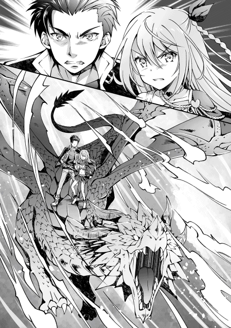
「これが現実だ、神竜」
「あたしたちがいたことが、運の尽きだったわね」
再び神剣化したリヴを握る。
跳躍し、刃を振りかぶる。
「お前は......眠ってろッ！」
雄叫びを上げ、渾身の力で斬りつける。
「ぐぅっ!? 人間よ、なぜ我を恐れぬのだ！ 我は悠久の時を越え復活した混沌竜なり！安穏とした時代に生を受けただけの貴様らとは存在意義が違うのだぞ！ なぜ歯向かい続ける？ 何処からそのような意思が込み上がるというのだ？」
インヴィンジブルは魔竜を振り払い、重々しい口調で言った。
射竦める眼光。
沈黙を許さないインヴィンジブルの言葉を受け止め、俺は応えた。
「俺はお前より凄いやつを知っているからな」
断言できる。
「......なに？」
神剣を水平に構え、俺はゆっくりと目を閉じた。
「お前は自分以外の存在を見下しているようだが、俺の知っているやつは他人を見下さない。人間に迫害されて、三百年も孤独を味わうことになったのに恨んですらいないんだ。悔しがってはいたけどな」
「グラッド、それって......」
息を吸い、そして吐き出す。
少女と旅した日々を思い起こしながら。
「五千年前、お前は破壊の化身として恐れられたらしいな。そりゃ凄いと思うぜ。でもな、この時代では最強じゃないと言いきれる。自分の弱さも他人の強さも受け入れられない、そんな奴に負ける理由がないからな！」
強者とは力関係だけじゃない。
過去、現在、未来にいたるまで、世界の命運を託すに足る者が真の強者なのだ。
人類は強者を恐れてしまった。
だから、リヴは神剣に封印されてしまった。
「太古の栄光に縋る神竜が、現代の人間に勝てると思うんじゃねえ！」
たとえリヴの力がなかったとしても、インヴィンジブルには負けられない。
一人の人間として勝利する。
それを誓って、神剣を振りかぶる。
「来いよインヴィンジブル。お前が破壊の化身を騙ろうと、俺はその境地を越えていく！」
神剣の切っ先が巨大な風の刃を生み出し、インヴィンジブルの左腕を切り落とした。
「驕 るでない、人間風情がっ！」
掠っただけで致命傷になるであろう爪の一撃が、俺へと迫る。
「させないわよ！」
リヴの結界が、爪を砕く。
予想外の衝撃を受け、インヴィンジブルは体勢を崩した。
「グラッド、あんまり無茶しないでよ！ あたしが心配するんだからね！」
「わかってる！ それよりインヴィンジブルを倒せ！ 今なら俺たちだけで倒せる！」
指示を出しながら、全開で攻撃を叩き込む。
「もちろんよっ！」
いち早く状況を理解したリヴが、唱えた。
「貴方の居場所はこの時代にないのよっ！ エクスプロージョン！」
地獄の業火を呼び寄せる極限魔法は、凄まじいの一言だった。
竜の肌に隙間なく生えている鱗。
その頭から尻尾にかけて、全ての鱗を燃やし尽くし、絶叫を上げる。
「貴......様らッ......！」
僅かな隙が生まれた。
インヴィンジブルが纏う「鎧」はすべて破壊した。
俺たちの攻撃は確実に通じている。
「お願い......、グラッドッ！」
全神経を集中させ、最大限の速度で飛び込んだ。
「はぁああああああああッ！」
俺にしては珍しく、勇ましい叫びだったと思う。
肩が捻じれるほどの低姿勢で神剣を振りかざす。
頼む。届いてくれ。
「劫火一閃ッ!! 」
祈るように振り落とした神剣の一撃が、インヴィンジブルの額を打ち貫いた。
「────ッ！」
地平線の彼方にまで迸る、赤き閃光。
絶対的な強敵であるはずのインヴィンジブル。
その肉体が、ゆっくりと焼き尽くされていくのを目の当たりにして。
「驚いた......」
インヴィンジブルは囁いた。
「お前たちのような、常識外れの存在が生まれているとはな......くく、くはははは！」
豪快に笑い、そして弾けた。
▼Skill：『竜言語』を修得しました。
「あたしには言われたくないだろうけど、神竜 は過去の存在なのよ」
宙を落下しながら。
神剣を鞘に納め、黒の障壁が渦を巻きながら散っていく。
「だからこそ、前に進むあたしたちが勝った」
燦々 と輝きを放つ魔力が、一瞬にして魔法都市を包み込んだ。
すると、昏睡していた人々が目を覚ましていた。
無事に魂が戻ったようだ、よかった......。
「グラッドッ！」
「リヴ......うおッ!? 」
魔竜の背中に着地。勝利の余韻に浸っていると、神剣 が再び人化した。
胸に飛び込んだので、慌てて抱きとめる。
「よかった......。これで、終わったのね......」
「ああ、力を貸してくれたおかげだよ。......ありがとうな」
「ううん。グラッドがあたしを信頼してくれるのがすっごく伝わって、あの......！」
何かを訴えるようなリヴのまなざしに、俺は笑顔で返した。
「グラッドさん、リヴさん、お疲れ様です」
大地に降り立つと、お姉さんが顔を覗 かせた。
「お姉さんもありがとうな」
「いいえ、魔法都市を守ったのはお二人の力です。本当にお疲れ様です」
お姉さんも微笑んでいた。
でも、すぐに拗ねた表情を浮かべる。
「いつまで抱き合っているんですか？ 私とも喜びを分かち合ってほしいです......」
「今は駄目ー」
「むぅ......」
寂しそうなお姉さんと、独占したいリヴ。両者の視線が交わり、火花を散らせていることに気付いた。やばい、この状況どうしよう。
「ご主人さま！」
「みんな、大丈夫!? 」
今度は、テレサとリリスが慌ただしく駆け寄ってきた。
よかった、無事だったんだな。
「グラッド」
リヴも微笑んだ。
「手。せっかくだから握ってよ。宿に戻って、ぐっすりと休みましょう？ 疲れちゃった」
それは、天使の微笑みのようで。
「......そうだな。当分は竜と戦いたくない」
手を取って、もう一度笑った。
──その時、動く影があった。
次の瞬間には全員が気付いたようだ。
確かに死んだと思っていたが、神竜に取り込まれたはずのファルギウスが姿を見せた。
「貴様だけは殺す！ グラァァァッド！」
ファルギウスの渾身の叫びが届くよりも早く、魔法円が赤く光り出す。
反射的にリヴを庇うように抱き寄せ、攻撃に備えた。
......しかし、予想していた痛みがやってこない。
代わりに耳へ届いたのは、少女の声だった。
「ご主人......ううん、ファルギウス......ボクの、恨みだよ......！」
閉じていた瞳を開く。振り返る。そこには心臓をナイフで貫かれたファルギウスと、白猫の姿。すぐにリヴが魔法を唱え、今度こそファルギウスは燃え尽きた。
「グラッドの姿が見えたから......追いかけてきたんだ。えへ、間に合ってよかった」
「シュシュ......」
白猫の背後には、数十名の猫人が立っていた。
「これで、終わったね」
そっと目を閉じて、立ち尽くす。
俺たちは神竜に勝利した。
魔法都市ゼラム。
あれから二週間が経ち、俺は薄暗い廃墟 に座っていた。
「ほら、これで楽になったか？」
ここはシュシュの住処だ。
目の前には、シュシュの弟が床についている。
鑑定スキルの診断によれば、心臓病。治癒魔法や万能薬では完全に治してあげることが難しかった。
......万能薬と呼ばれても、全知全能の薬ではないんだよな。
「お前はこれから、王都の治療院で手術を受けないといけない。意味がわかるな？」
弟は頷き、青白い半身を起こし、手を差し伸べてきた。
「ありが、とう」
弟は笑ってくれた。
「大丈夫だ、お前には未来がある。俺が保障してやるよ」
にひひ、と笑い、手を握り返した。
今回のファルギウスの動向調査依頼の報酬として、俺はシュシュの弟の手術を要求した。
領主は驚いていたが、すぐに了承してくれたことが嬉しかった。
儲けは無くなってしまったが、シュシュとの約束を守ることができた。
金よりも大事なことだ。
「グラッド......ボクね......」
「ん、どうした？」
今度はシュシュが、恥ずかしそうに俺の手を取った。そのまま手を引かれ、廃墟の屋上へと案内を受ける。
この廃墟は元々は豪邸だったらしく、多くの猫人が共同で暮らしている。角を曲がり、瓦礫を乗り越えるたびに、誰かと擦れ違った。
部屋にはそれぞれの大切な品が置かれており、可愛らしいぬいぐるみや、奇妙な人形、果てはボロボロになった剣など、普通なら捨てるであろうものまで大切に保管されている。
彼らは、必死に生きている。
どんなに迫害されようと、どんなに理不尽な目に遭おうと、挫けずに今日も前向きに生きている。
「ファルギウスは......世界を、変えたかったみたい......」
シュシュが教えてくれた。
「かつて、自分を迫害した人間を滅ぼして、人外だけの国を作りたかったんだって......」
だから、彼には支持者がいた。
本当は彼らを生贄のために利用しようとしていたのだが、それでも支持者にとっては、ファルギウスは希望の光だったのだ。
知ってしまうと、やるせない気持ちになるのは事実だった。
でも、後ろ向きには考えない。
他人を犠牲にしてまで助かろうとするのは、やはり何か間違っている気がするのだ。
「着いたよ」
シュシュが微笑む。屋上への扉を開けると、風が吹き込んできた。気まぐれな空は晴天を澄み渡らせ、流れる雲が平和を堪能させてくれる。
「これ、ボクの宝物だよ」
魔法都市を一望できる景色だった。
立派な塔も、魔法学園も、商業地区も、歓楽街も、すべて──すべてが両手に収まる絶景であった。夜になれば灯りが煌き、さらに幻想的な姿を見せてくれるのだろう。
「こりゃ凄いな」
「グラッドに、分けてあげるね」
「そうか、ありがとな」
「あの......。もうひとつもらってほしいものがあるんだ」
「なんだ？ もらえるものは喜んでもらうが」
「よかった」
シュシュは微笑み、抱きついてきた。頬に温かな感触がする。
タイミングよく、屋上の扉が開く。
「あ、グラッドここにいたのね。探しちゃっ──」
「ちゅ♥」
あ、リヴが石像のように固まってる。シュシュは恥ずかしそうに目を伏せると、悪戯っぽく舌を出して、俺から手を放した。
「今度は、続きをしようね 」
少し沈黙してから、そう言ったのだ。ったく、ませてるな。
「つ、つ、続きじゃないわよー！ シュシュ！ 何してるのよ！ 抜 け駆 けは──」
とりあえず、リヴを落ち着かせないとだな。やれやれ。
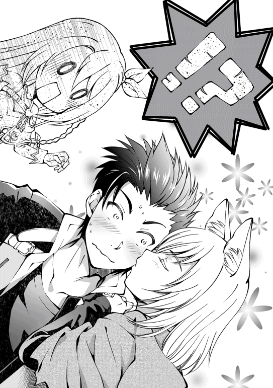
† ׆
魔法都市ゼラム、深夜の散歩。
雲ひとつない夜空の下を、滑るように歩いていた。
「グラッド、お疲れさまっ」
淑やかな微笑みを浮かべるリヴ。落ち着いた様子でこちらに歩み寄ってきた。
「大変だったわね。大罪神剣は見つかってないことになってるし」
「ああ......だがファルギウスを倒せたから、領主も深く聞いてこなかったな」
呪術騎士ファルギウスの死と、神竜インヴィンジブルの復活。
魔法都市にも被害が出たことで、大陸全土に知れ渡る大きな事件となった。
この都市の領主についてだが、ファルギウスを匿 っていた証拠が屋敷から見つかり、王都へ強制連行される事態になった。新しい領主についてはこれから決めるそうだが、住民たちが喜んでいるということは......そういうことだろう。
「俺、やりたいことが決まったんだ」
「え、ほんと？ なになに、聞かせて！」
リヴと契約した当初は、夢なんて抱いてなかった。
でも、旅をして分かったことがある。
この世界はあまりにも、差別と偏見に満ちている。
悪魔というだけで、魂を封印されたリヴ。
奴隷商の都合で捨てられたリリス。
貧民街での生活をよぎなくされたシュシュ。
生贄という風習が許されたり、人外が差別されることが当たり前となった世界。
このままじゃ駄目だ。
孤児たちも立派に育てられるような社会を作らないといけないと思うんだ。
「俺、社会を変えようと思うんだ。貴族になって、少しずつ世の中を変えていきたい」
人外はむしろ、人間よりも優れた点がいっぱいある。
例えば、テレサのようなスライム族なら、狭い場所ならどこだって忍び込むことが可能だ。リリスたちラミアなら高い場所に上ることが得意とされているし、お姉さんのように獣人型なら、人間よりも体力がある。
そういった長所を見つけて、人外全体の地位を向上させていきたい。
「へぇ、グラッドらしいと思うわよ？ 簡単なことじゃないけれど、人間も人外も手を取り合えるようになれれば素敵だと思うもの」
楽しげにリヴが声を弾ませる。そして、
「私も協力させてもらうわね」
「......いいのか？」
「当然よ、相棒でしょ？ これからも傍で手伝わせてもらうから」
さも当然と言うように、穏やかな口ぶりで答えてくれる嫉妬の大罪。
そのまま器用に目をつむって。
「でも、相棒以上の存在になりたいわね」
「おまっ、それってまさか......」
「ふふん？ ま、これからもよろしくね？ 契約者さん」
そして彼女は歩き出す。仲間たちが待っている宿へ、歩いてきた道を引き返す。
「帰りましょう、グラッド！」
いつもの口調で、リヴは言った。
「へいへい」
──ほんと、勝てないよな。この娘には。
† ׆
翌朝のことだ。外出したリリスが、勢いよく戻ってきた。
「わー、グラッドくん、すごいよ！ お祭り騒ぎだよ！ 神竜インヴィンジブルの復活を阻止し、ファルギウスを倒した英雄がこの街のどこかにいるって！」
彼女が小脇に抱えていたのは、情報誌。
「それ、どうしたんだ？」
「ご主人さま、商店街に沢山置いてありましたよ？」
両面擦りの情報誌には、こう書かれていた。
──英雄ファルギウスの野望を打ち破り、神竜を退けた謎の青年現る。
「グラッドさんがどんどん高みへ登っちゃいますね」
「......俺もびっくりだ」
そうそう、お姉さんも一緒に旅を続けることになった。
狐少女もいるし、両親の仇も取れたし、商業都市に戻ってもらおうと考えていたのだが、ちょっと困った問題が発生したのだ。これである。
▼お姉さん（処女）
・レベル ： 94
・職業 ： 破壊者
少し前までは受付嬢をしていたのに、人知を超える力を手に入れてしまった。
「最近、以前よりも物を壊すことが増えてきたんです。ちょっと壁に触れただけで吹き飛んでしまいまして......もしかして、呪術の影響でしょうか？」
「......違うと思う」
これは大罪神剣の固有能力『経験発現』と『成長分配』が重なった弊害であった。しかも神竜は桁違いの強さを誇るもんだから、倒した時に一緒にパーティーを組んでいたお姉さんのレベルが一気に上昇したらしい。今のお姉さんならファルギウスに対峙しても、盗賊千人に囲まれたとしても、戦場のど真ん中に放り込んだとしても、必ず無傷で戻ってこれるほどの能力となっている。
とりあえず、お姉さんのレベルについては忘れることにした。
なにしろ、俺にはまだ問題が残っているのだ。それは......。
「ご主人さまの隣に座りたいです！」
「私も、公平に行くべきだと思います」
「......貴方たち、夜、あたしを引き剥がしてグラッドと添い寝してたわよね？」
「「 そ、そんなことしてないデス 」」
旅のパーティーが、とても賑やかということだ。
「もー、リヴさんばかりずるいですよ！」
「お姉さんは、ご飯のときにベタベタしてるからいいじゃない......」
三者三様で水と油の如く、火花が散っている。その隙を狙ってリリスが巻き付いてきた。
「たまには、わたしもいいよね〜！」
ニコニコと抜け駆けしたリリスだが、その背後に三人の鬼神が立っていることを伝えたほうがいいんだろうか。
彼女たちのやり取りが無性におかしくなって、俺は笑いをこぼしてしまった。
「グラッド、笑ってないで誰を選ぶか決めてくれないかしら？」
はい？
「ご主人さまは感情が読めないですからね！」
「この際だから、はっきりと聞きたいです」
「わたしも気になるかも〜！」
そんなに教えてほしいなら、答えてやろう。
「順番でいいだろ。そんなもん」
「そ、そんなもん!? 」
「ご主人さま、はっきり言いますね......」
ここで中途半端な態度を取れば、優柔不断と罵られることくらいは予想できる。
俺は悪くない。
「ねえ、グラッド。あたし、今が凄く幸せよっ！」
振り返ると、少女は笑っていた。彼女はもう、泣いてなどいない。
「奇遇だな。俺も同じだ」
俺たちの旅は続いていく。
誰に顧みらずとも、旅は続いていくのだ。
「グラッド......」
ふいに、リヴが俺に抱きつこうとして──。
「あらぁ、楽しそうじゃない。嫉妬の大罪神剣ちゃん？」
俺も、リヴも驚愕した。
弾かれたように立ち上がり、声の方へ顔を向ける。
窓の外に浮いていたのは、パチパチと拍手をする悪魔であった。
リヴを、知っている──？
混乱する俺に、悪魔は視線を流す。
「始めまして、契約者さん。それと......」
悪魔は、ぽん、と手を打ってから微笑んだ。
「ずっと決着をつけたかったわぁ、リヴちゃん 」
「アスモデウス!? どうしてここに......！」
──色欲の大罪神剣。
三百年前の断罪戦争で、リヴが取り逃した相手。
吹き込む風に髪をなびかせながら、アスモデウスはそっと微笑んだ。
「これからね、世界が改変されるの！ 大罪遊戯が始まるわっ！」
（レベル無限の契約者〜神剣とスキルで世界最強〜 第一巻 了）
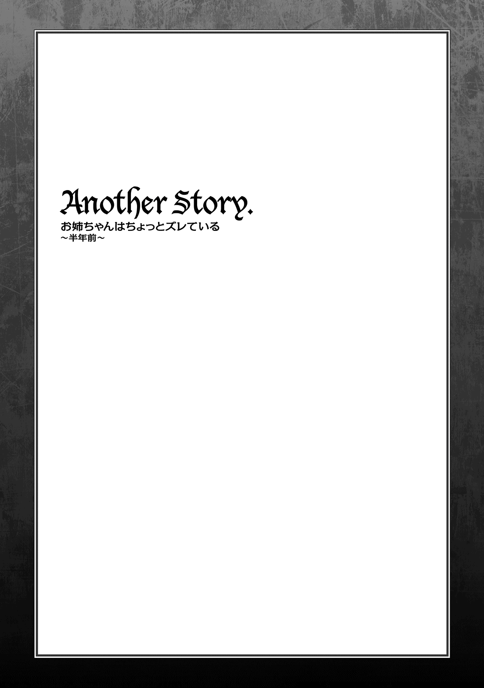
「おはようございます」
「えっ、お姉ちゃん？ もうお仕事の時間だよ」
冒険者ギルドで働く私の姉はちょっとズレている。
ネグリジェ姿でぼーっとした表情のまま、妹の私を見つめていた。
「？ なんのことですか？」
「冒険者ギルドの受付のお時間......もう始まってるよ......？」
そう伝えると、お姉ちゃんは、蒼白になった。
「嘘っ......、もうそんな時間でした!? 」
慌てて部屋に戻るお姉ちゃん。着替えに戻ったみたいです。
お姉ちゃんは整った顔立ちをしていて、スタイルも抜群にいいです。でも、性格はのんびり屋だったりします。
「いってきます！」
慌てて、お姉ちゃんは孤児院を飛び出して行きました。
そう、ここは孤児院です。
本当ならもう独立しているお姉ちゃんは一緒に暮らせないのだけど、妹の私が呪術を受けて、常に体調が悪いから......、特別に一緒に暮らさせて頂いている身です。
今日は調子がいいから、お姉ちゃんの部屋の掃除をしてあげようかな？
そんなことを考えて共同リビングへ向かうと、可愛らしいお弁当箱を発見。
これ、お姉ちゃんのだよね？ もしかしてお弁当を忘れたのかな？ 隣には何年も使っている財布が置かれてるし、このままだと今日は飢えちゃうかもしれない。
「............こっそり、届けに行っちゃおうかな？」
外出することは禁止されているけど、たまにならいいよね？
今日は神父様もお出かけしているので、私が抜け出すのは簡単です。
冒険者ギルドは都市中央にあるので少し離れてるけど、場所は知っているからすぐ行けると思う。あとは迷子にならないように注意しよう。
冒険者ギルドってどういうところなのかな？ 今から楽しみだなぁ。
† ׆
「大きな建物です......」
三十分後、冒険者ギルドを発見しました。ここでお姉ちゃんが働いているはず。
「どんな人たちが働いているんだろう......？」
お姉ちゃんはお仕事の話をあまりしないので、もしかして辛い職場なのかな？
冒険者ってすぐに怒るような人や、乱暴な人も多いみたいだし、不安だよ......。
何事も起きないといいなぁ......。
深呼吸してから、冒険者ギルドの扉に手をかけると、
「お姉さん、オレと付き合ってくださいっ！」
「わかりました」
えっ。
扉から入ってすぐ、冒険者たちの依頼受付カウンターでそんなやり取りが聞こえてくる。
お姉ちゃんが告白されて、それをあっさりと了承したように見えたけど......。
「本当か!? そうか、やっと想いが通じたか！」
「ふふ、当たり前じゃないですか」
うん、勘違いじゃない。
お姉ちゃんは、嬉しそうに歓喜する男性に向かってニコニコと笑っている。
そっか、お姉ちゃんも異性とお付き合いするんだね。おめでたいことだ。
妹として精一杯、お祝いしてあげよう。
「それじゃ、行きますよ」
そんなことを考えていると、お姉ちゃんは鉄球を取り出して──鉄球？
「てりゃっ！」
そのまま勢いよく振り落とした。告白した男性に向かって。
バキィ、ぱらぱら──......、
床が砕け散りました。
「あの、お姉さん、何を......？」
先ほど告白した男性が、私の気持ちを代弁してくれました。
「えっ？ 戦いの稽古に付き合ってほしいってお話でしたよね？」
お姉ちゃん、思いっきり意味を間違えてる！
男性は気まずそうに「やっぱり忘れてくれ......」と告げると、がっかりと肩を落として外へ出て行きました。
改めて、お姉ちゃんの鈍感ぶりを思い知りました。
「お姉ちゃんって、天然だよね」
「あれ、どうしてここに？」
「お弁当を届けにきたの。でも、床を壊しちゃって大丈夫なの？」
「今日の午後に修理予定の箇所なので、問題ないですよ」
人前で武器を振り回したことが問題じゃないのかな。
もしかしてお姉ちゃんって、ギルドでも問題児扱いを受けているとかないよね？
ま、まさかね？ あはは。
「お弁当を届けてくれたことは嬉しいのですけど、それだけのために来てくれたのです？」
「うん。体調が良かったから、神父様が許可をくれたんです」
「......本当ですか？」
急にお姉ちゃんの視線が鋭くなる。疑っている目だ。嘘を見透かされているみたいで、正直に話さないと怒られるかも......ひう。
「......勝手に外出したのですね？」
びくっ！ 図星をつかれて、思わず背筋が伸びる。
「もうっ。勝手に外出をしたら駄目だって言ったじゃないですか？」
「ごめんなさい......」
「でも」
お姉ちゃんの瞳から怒りの色が消えて、代わりに嬉しそうな笑みを浮かべてくれます。
「私のためにお弁当を届けてくれたんですね。ありがとうございます。ふふっ」
──なでなで。
カウンターから出てきたお姉ちゃんは、私の頭を撫でてくれました。
周囲の冒険者さんたちが微笑ましく見守っていて、なんだか恥ずかしいです。
「もうすぐお昼ですから、一緒にお弁当を食べませんか？」
「......いいの？」
「はいっ。いつもの食事なので質素ですけどね」
「お姉さん、依頼いいかい？」
「あ、はい。すぐに向かいます！」
しばらく眺めていると、お姉ちゃんは多くの冒険者さんたちから頼りにされてました。
「あのぅ、お姉さん......」
あ、今度は女性の職員が声をかけてます。
「どうしました？」
「ス、スカートがめくれてますよ」
あ、ほんとだ。お姉ちゃんはいつも無防備だから危ないなぁ。
もし背中を向けていたら、みんなに見えちゃってたかも。
「ああ、それなら平気ですよ？」
「そうなんですか？」
「ええ。だって今穿 いてるのは──妹のですから」
えっ......お姉ちゃん、今、何て言ったの......？
「今朝、慌てていたので下着を間違えてしまったみたいなんです。うっかりですね」
本当にうっかりだよ？ 普通は間違えないよ？ しかも見られたら私が良くないよ？
『私のじゃないから恥ずかしくないもん』みたいな無茶苦茶な理論、どこからきたの？
誰にも見られなかったのが不幸中の幸いかもしれない。
お姉ちゃんと一緒だと退屈しないなぁ！
† ׆
「はぁ、はぁ......」
孤児院に帰るより、お姉ちゃんを待って内心で突っ込みを入れる方が疲れている気がするんだけど、気のせいかな？
午後を回った頃、ようやくお姉ちゃんが戻ってきました。
「遅くなってごめんなさいね。お弁当、食べましょうか」
「はいっ！」
お姉ちゃんは料理が得意でお弁当も自分で作っています。
でも他の孤児たちの栄養バランスを優先しているので、自分のお弁当はかなり質素です。
残り物や野菜が多かったりしますが、一緒に食べられるだけで嬉しくなっちゃいます。
「ふふ、やっと嬉しそうな表情を浮かべてくれましたね」
「えっ？」
「最近、ずっと寝たきりだったでしょう？」
そういえば、ここ二週間くらいは寝たきりだった気がします。
「私、最近は夜も帰りが遅くて、朝の短い時間しか妹とお話できませんでした。だから、こうして会いに来てくれて嬉しかったんですよ」
たしかにお姉ちゃんとゆっくりとお話をするのは、かなり久しぶりかもしれません。
「わざわざ来てくれたのですから、少し街をご案内しますよ」
「えっ、いいの？」
「もちろんです。ただし散歩だけですけどね」
「はい、とても嬉しいです！」
街を満足に歩いたことがなかったから、嬉しい提案です。
窓からの景色って変わり映えしないから、どうしても飽きちゃうし......。
「私、お姉ちゃんの仕事姿が見られて良かったです」
「？ そうですか？」
「一生懸命に働いてて、格好よかったです」
「ふふ、そう言われると照れちゃいますね」
お姉ちゃんは嬉しそうに笑ってくれた。
私も元気になったら、お姉ちゃんみたいになりたい。
みんなから慕われて、懸命に働いているお姉ちゃんは魅力に溢れているから。
私には眩しいくらいだもん。
「大丈夫です。今に呪術も解けて、普通の暮らしができるようになりますから」
「そ、そうかなぁ......」
「ええ、そうですよ。親切な旅人さんがひょっこり現れて、一瞬で治してくれるかもしれません」
「あはは、そんなことありえないよー」
「......元気を出してくださいね」
「お姉ちゃん？」
「今は辛いかもしれませんが、必ず元気になれますから」
お姉ちゃんの顔はお日様のように温かくて。
私も、頑張って呪いに立ち向かわないといけないと思った。
「さて、それじゃ街を見て歩きましょうか。休憩時間の許すかぎり、どこへでも連れて行ってあげますよ？」
「ほんと？ それじゃ公園に──」
お姉ちゃんと私。
性格は似てないけど、たった二人だけの家族。
呪いとか関係なく、過去を忘れることができたら......。
そのときは心から笑い合えるように、今は頑張って生きていこうと思う。
呪いが解けたら、お姉ちゃんみたいになりたいから──。
あとがき
こんにちは、わたがし大五郎です。
二シリーズ目の刊行をして頂けました！ お知らせしたいことは沢山ありますが、今回はあとがきが一ページしかないので簡潔にいきます！
まずは「小説家になろう」と書籍で、設定が大きく変わっていることです。「小説家になろう」連載の当作品も修正したのですが、登場人物などを深く掘り下げております。
次の巻は色欲のアスモデウスが中心のエピソードとなる予定ですが、内容的にはがっつりコメディの話です。テレサやリリスなど、今巻ではやや不遇だったことは否めないので、その分も挽回させてあげられたらな、と。
さて、今回は秋咲りおさんの美麗イラストが眼福です！ 本編挿絵ではヒロインたちの魅力溢れるイラストを描いてくださったので、じっくりご鑑賞ください！
今回も担当さんには感謝しかありません。校正者様、営業様、デザイナー様、各書店様、友人Ｋ＆Ｓ様、そしていつも応援してくださる読者の皆様に最大のお礼を申し上げたいと思います。
それではまた次巻でお会いできることを願いまして。
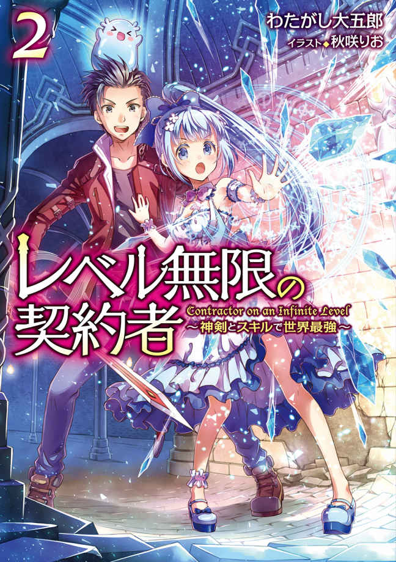
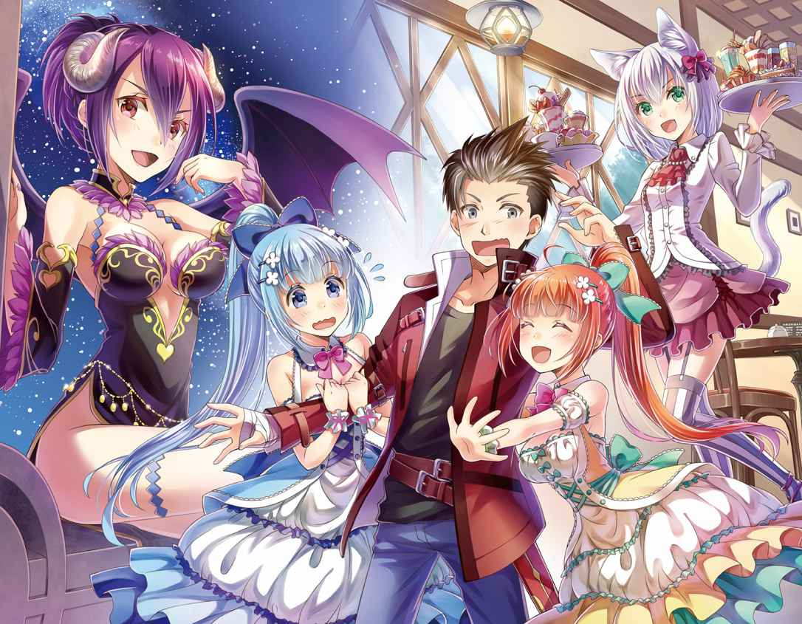
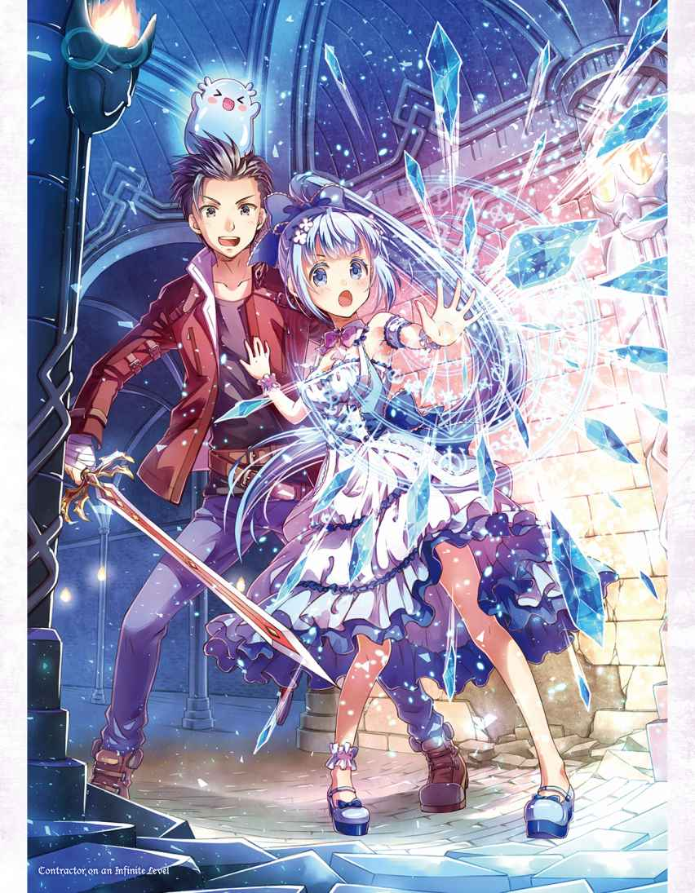
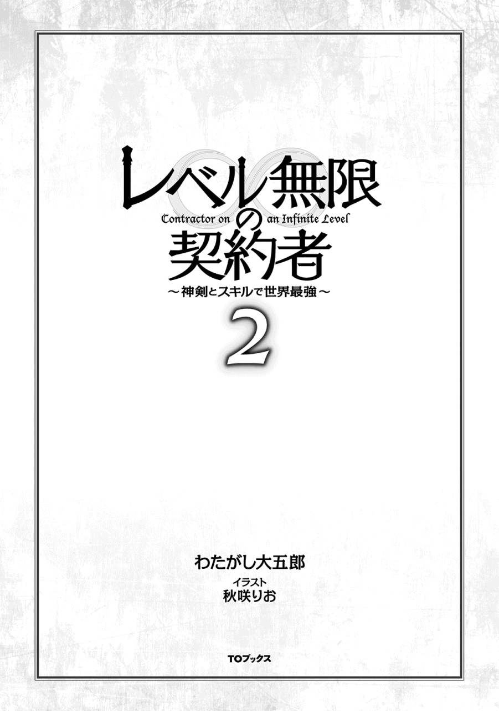
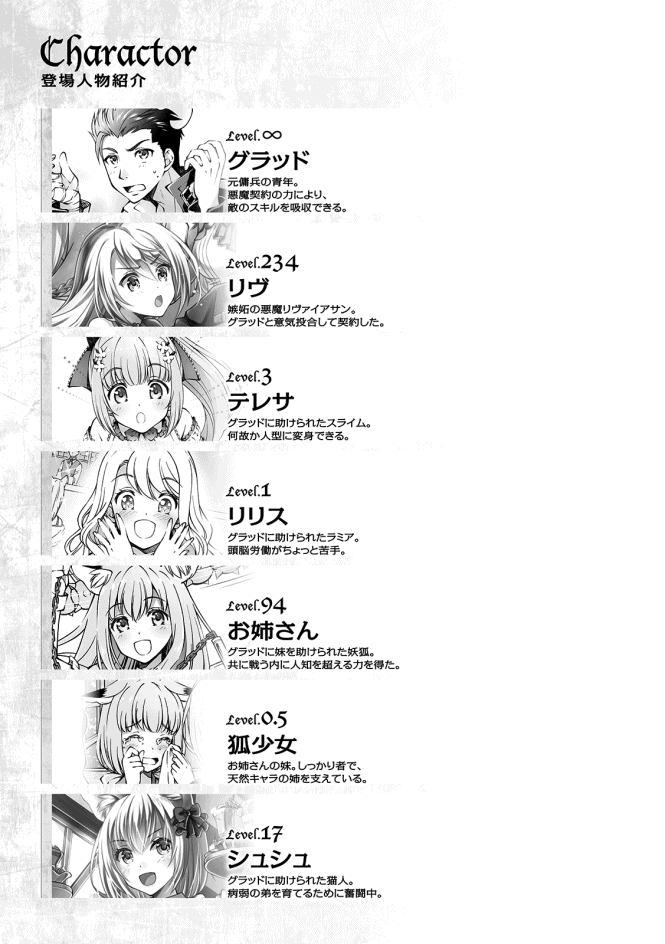
白く凍 てついた遺跡に火球が炸裂した。
爆発による衝撃と轟音 に揺さぶられ、積もった雪を振り落とす。
そこへ──。
「逃げてください、ご主人さま......ッ！」
少女が震えた声で叫んでいた。
彼女の名はテレサ。
空色のポニーテールと、深い海色の瞳が特徴的な、十歳ほどの少女である。
雪も欺く白い肌、精緻に整った容姿は愛らしく、まるで妖精のように眩 い。
しかし、今のテレサは眼に大粒の涙を溜めて、恐怖を押し殺している。
無理もない。
......破滅の存在 に、身体を奪われようとしているのだから。
「テレサは、俺たちと一緒に生きたいって言ってくれたよな」
顔を覗 き込むと、心配かけまいと健気に笑みを作って応じる。
だが、どうにも消せない絶望が表情の端々に残っていた。
「俺も同じ想いだ」
もう逃げない。
抗うことを、立ち向かうことを恐れないと誓 った。
「待ってろよ、すぐに助けてやる......絶対に俺は諦めてやらねぇっ！」
過去、何度も挫 けそうになった。
そのたびに誰かが支えてくれて、乗り越えてきた。
大丈夫、どうにかなるさ。
だから......。
「神剣 、力を貸してくれッ！」
▼Abilities：「英雄偽信 」が解放されます。
両手 から伝わってくる優しい声。
俺の怒りに呼応するかのように、刀身から業火が放たれる。
「戻ってこい、テレサッ！」
少女の手を掴 んだ。
強く、強く、抱き寄せる。
現在 を歩き始めるために────............。
聖アスタリア共和国所属、魔法都市ゼラム。
季節風の影響で四季がはっきりした、温帯に属する地域に繁栄した魔法国家だ。
この都市の最大の特徴はアルフォード王国魔法学院が設置された、世界有数の学究都市だという一点に尽きるだろう。
魔法学院の設立と共に生まれ、魔法学院と共に発展し、大陸中の魔術師が集い栄えた。
立ち並ぶ建物の造りは、鋭角の屋根が特徴的な古式建築様式でまとめられ、重厚で趣 深い街並みを演出している。
中央通りには、石畳 の街路から伸びたランプ式の街路灯が一定の間隔で並んでいた。
さらに魔術的な素材や物品に対する需要を受けて、他所 との交易も盛んに行なわれており、人の出入りも活発であるため、商会ギルドを中心に店が立ち並んでいる。
飲食店、衣装店、剣や盾などを製錬する鍛冶工房のほか、各調剤店や魔術師ギルドも存在し、新旧の文化が混ざった都市である。
微かに朝もやが立ち込める、そんな都市の宿屋にて。
一人の女性が現れた。
† ׆
「これからね、世界が改変するの！ 大罪遊戯が始まるわっ！」
綿毛のように柔らかそうなミディアムの紫髪に、山羊の角を生やした、十五、六歳くらいの見た目麗しい女性。
赤い満月のような瞳が特徴的で、妖艶 で柔和な艶 姿や立ち振る舞いから、仄かに漂う妖しい色香が魔性を感じさせるほど。すらりと伸びる手足が艶 めかしいその肢体は、非の打ち所のない完璧なプロポーションを誇っている。
一方、背中にはコウモリのような翼を生やし、貞淑な雰囲気を漂わせながらも、開放された胸元や、身にまとう丈長の黒いドレスがボディラインを強調、スリットからは細く、美しい脚が白と黒のコントラストを露出していた。
「うふふ、自己紹介がまだでしたわね」
女性は機嫌良さそうに、にんまりと笑みを浮かべてくる、
それだけの挙動で、俺の頬を冷たい汗が伝っていく。
「わたくしは、色欲のアスモデウスと申しますわ♥」
色欲のアスモデウス。
三百年前に行われた断罪戦争で、世界を混沌に陥れた悪魔。
優れた悪魔により導かれる新世界創造を目的に、歴史の中でも過酷な戦争を繰り広げた種族の支配層──七つの大罪の一柱。
......でも、アスモデウスは神剣に封印された。
......人類のために悪魔を裏切り、今は俺の相棒をしている少女の手によって。
「あなた、どうしてここにいるのよッ！」
俺の隣には、拳を握って顔をしかめている少女の姿があった。
肩に魔術師の外套 を羽織った、外見 は十二歳ほどの少女。
長く明るい桜髪。強い意志を宿した真っ赤な瞳には、芯の強さを感じさせ、ごく自然に周囲の者たちと溶け込めるような、穏やかな気質を持ち合わせていた。
美貌 と呼ぶよりは愛らしい顔立ちだが、少女もまた悪魔──。
「お久しぶりですわね、リヴ ちゃん♥」
嫉妬 のリヴァイアサン。
三百年前に行われた断罪戦争で、人類のために悪魔を裏切った心優しい少女。
彼女の魔力、技量は非常に優れていて、知識も豊富。
修得している魔法も攻性から治癒 まで幅が広い。
かつては悪魔の支配層として、七つの大罪の一柱として、畏怖されていたそうだ。
そんな彼女が人類に味方したからこそ、世界は繁栄に満ちている。
......しかし、リヴの力を恐れた人類は、彼女の魂を神剣に封印してしまった。
「質問に答えなさい、アスモデウスッ！」
「うふふ、懐かしい魔力を感じたから探知したから、辿 ってきただけですわっ♥」
彼女たち──大罪の悪魔の魂が封印された神剣のことを、世界は大罪神剣と呼んでいる。
大罪の力は人を軽く凌駕 しており、聖アスタリア共和国騎士団総長をはじめ、熾天使、竜帝ほどの伝説的存在でも、圧倒的な差をつけて敗れたとされているほどの強者 ばかりで構成されている。
ただの悪魔とは格が違うわけだ。
「折角ですから、ご忠告をしてあげますわね？」
呆然とする俺たちに、アスモデウスが悪戯 っぽく告げる。
特に殺意は感じられなかった。
「──もうすぐ、大罪遊戯が始まりますわ」
「大罪遊戯......？」
俺の呟 きに、リヴが呆然と肩を震わせていた。
額にびっしりと冷や汗を浮かべて顔色を蒼白にし、一瞬の沈黙が訪れる。
「......断罪戦争のことよ」
リヴは、俺たちに目を向けた。
空を焼き、大地を砕き、厄災をばら撒 き、多くの血を流した世界規模の大戦争──。
それが断罪戦争。
もし、そんな戦争が再び勃発したら......。
押し寄せる戦火に巻き込まれて、どれだけの命が失われるのだろうか。
「アスモデウス、本気なの？」
「ええ、本気ですわ♥」
そう頷 いて、穏やかに応えた。
「......人類は、他人の命を平然と奪う野蛮な種族ですもの」
ん？ 俺の見間違いかもしれないが......。
今、寂しそうというか、辛そうな表情をしていなかったか？
「うふふ。ところで......リヴちゃんはいつまで人類の味方をしておりますの？」
「どういう意味よ？」
「リヴちゃんは人類のために戦いましたわよね？ その結果、身体を奪われて魂を神剣に封じ込められましたわ。おかげで三百年も孤独を過ごすことになりましたわね？」
「──っ！」
リヴは睥睨 していた。
その反応を楽しむように、アスモデウスは微笑んでいる。
......たしかに、その言葉は真実だ。受け止めるしかない。
初めてリヴと出会った時、彼女は世界に裏切られたと悔しがっていた。
それでも迷って、迷って、迷い抜いた結果──世界を怨まない選択を取った。
「くすくす、人類とは身勝手な生き物ですわね」
「言ってなさい......！」
「でも、わたくしは違いますのよ？」
言葉の調子を一転させて、今度は優しく諭してくる。
高圧的な態度ではなく、友人を慰 める親近感を篭めて、甘い言葉が紡がれる。
「わたくしはリヴちゃんを救ってあげたいのですわよ？」
そう、甘い毒。
心を搔き乱すほどの極上の言葉が紡がれる。
「人類は、リヴちゃんに何を与えてくれましたの？ 絶望ですわね？ ......そんな方々にこれ以上、尽くす義理はないはずですわっ！」
アスモデウスの言葉は間違っていない。
俺がリヴと同じ立場なら、二度と他人を信じようとは思わないはずだ。
「もう一度、お尋ねしますわね？」
アスモデウスは、リヴを迎えるように両腕を広げる。
「わたくしと一緒に世界を作り変えませんこと？」
ただ優しく、聖女が語りかけるかのように、微笑みすらも浮かべている。
「............」
リヴは何も言わない。
俯 き、あるいは迷うように──頭を垂れる。
「契約者さんも、お友達も、特別に助けてあげますわ。わたくしを人類と同じに考えて欲しくはありませんの。だって、リヴちゃんは救われるべき存在ですのよ？」
悪意すら感じるほどの優しすぎる言葉。
魔力を込めているのではないか、とも疑えるほどに魅力的な言葉だった。
「リヴちゃん、答えは出ましたわね？ 恨み、辛み、文句、なんでもいいですわよ？ わたくしに言葉をぶつけてくださいませ。一緒に世界のために戦いましょう？ リヴちゃんは幸福を手にする権利がありますわ♥」
リヴはしばらくの間、無言でうつむいていた。
アスモデウスはそんなリヴの心が折れかけていると信じて、返答を静かに待つ。
説得に成功したと確信した笑みが表情に浮かび、もはや隠すつもりがないようだった。
「......グラッド」
そしてリヴは、ぽつりと、消え入りそうな声で俺の名前を呟いた。
刹那 、神剣へと姿を変える。
......ああ、信じていたさ。
俺は神剣を掴み、瞬きすら挟めないほどの速さで抜き放ち、まっすぐにアスモデウスの喉 へと突きつけた。
「悪いわね」
「リヴちゃん？」
「あたしだって戻りたい、三百年前に戻りたいわよ！ みんなに会いたいし、抱きしめて欲しいし、温もりを感じたいもの！」
リヴは叫んだ。
「あの日、国の偉い人たちが険しい顔でたくさん集まっていて......すごく冷たい眼であたしを見つめてきて......怖、かった......」
「それなら、この切っ先の意味は何のおつもりですの？」
「......アスモデウスは、あたしを救ってくれると言ったわね」
ぴったりと空中に固定されたかのように、剣先はぶれない。
ただ正確に、アスモデウスの喉を捉え続ける。
「あたしも救いたいのよ。この醜 い世界を......たとえ、あたしが救われない結末を迎えても、あたしを仲間として迎えてくれたグラッドが、みんなが生きているからっ！ それがあたしの誇り......だからね、グラッド、これからも一緒にいて欲しい、かな......」
怯えた声音だった。
「......やれやれ、なんつーか、リヴにも弱い部分があったんだな」
ま、知れて良かった。
俺は苦笑いしながら、言ってやった。
「いいぜ。最後まで付き合うつもりだったしな」
「本当に？」
「ここで嘘 は言えないだろ」
「え、ええ、それもそうよね」
おかしそうに笑うリヴ。
照れているのか、恥ずかしがっているのかは判断できない。
俺たちの間に穏やかな空気が流れた。
「......理解に苦しみますわね」
アスモデウスから、一種の神々しさが消え失せる。
面倒臭そうに息をつき、スキップを踏んで後方へ遠ざかった。
「リヴちゃん。やっぱり貴方を説得することは不可能のようですわね」
「ええ、悪いわね」
「せっかく仲直りできると思ったのに、とっても残念ですわ──......」
途端、空気が変わった。
同時にアスモデウスの声が、恫喝 的なものへと変わる。
「──傾聴なさい。裏切り者」
悪魔の幹部格らしい言葉で、俺たちを忌々 しそうに一瞥し、宣言した。
「愚かしくも人類に加担した罪は、もはや弁明の余地もございませんの！ わたくしの手で始末してあげますわっ！」
明確に伝えられた、その敵意。
俺は全身に寒気を感じ、思わず息を呑んだ。
「万華鏡の牢獄 、展開！」
魔力が展開される。
瞬間、蠢 く濃霧が客室を喰らいつくした。
背後に立っていたはずの、仲間たちの気配が消えている。
......結界か。
俺とリヴだけが別空間に隔離されたらしい。
「三百年前の勝負、ここで決着をつけさせて頂きますわっ！ 戦闘開幕 ！」
アスモデウスが右手の指をパチンと鳴らす。
光が生まれた。
雲よりも白く、雪よりも冷たく。
一片の穢 れもない純白の光が柱として顕現し、天井を貫いて俺たちへと降りそそいだ。
体を襲う強烈な爆風。
音もなく、視界もなく、無音の破壊がすべてを吹き飛ばす。
「グラッドっ！」
俺は神剣 を握ったまま空を跳んでいた。
アスモデウスの放った光が俺たちへ直撃し、跡形もなく客室を吹き飛ばし、さらに爆風に押し上げられて、はるか上空を漂っていたのだ。
「うふふ、ご挨拶 の代わりですわよ？」
俺は見た。
真っ白に包まれた世界でたった一人、黒い翼で羽ばたく悪魔の姿を。
これが悪魔。
かつて地上を震撼させた高位存在。
そして浮遊していた体が急降下──地面に落下する！
「あたしを使って！」
無我夢中だった。
神剣を民家の壁へと突き刺す。
摩擦で火花を散らしながら減速し、地面へと近づいたところで飛び降りるように石畳の上を転がった。
「グラッド!? しっかりして！」
「大丈夫だ。まだいける！」
リヴは泣きそうな声で呟いた。
「クスクス。契約者さんは、大罪神剣がどういう存在かわかってないようですわね♥」
「存在だと......？」
「大罪神剣は忌 み嫌われる孤立した存在ですわ。関わりを持つと契約者本人のみならず、多くの他人を巻き込んで絶望のどん底に落とす存在──リヴちゃんと一緒にいても、あなたには災いしか振りかからないですわよ？」
恍惚な表情を浮かべ、身を悶えさせるアスモデウスは右手に魔力を生み出し、雷光の十字槍を形成する。
一切の慈悲無き眼光で俺を見下ろし、迸る一撃を振り落とした。
「災いしか降りかからない？ いいや、わからないなっ！」
神剣に魔力を宿した斬撃──劫火一閃 を放つ。
キィン──と、乾いた音を立てて、雷光の十字槍が弾け散った。
「やりますわねっ......！」
アスモデウスは苦い表情で羽ばたき、距離を開けていく。
「たしかに大罪神剣は世界から恐れられている。俺も、リヴに出会うまでは怖かった」
生物は死に対して恐怖を抱く。
それが自然の摂理。
「わかっているのに綺麗ごとをおっしゃいますの？」
「そうだな。それの何が悪い？ リヴが悪魔だって俺は構わない。俺もリヴも、そんな小さなことを気にして一緒に旅をしているわけじゃねえ！」
遥か高みで見下ろすアスモデウスへ伝わるように、声を張り上げる。
「大罪神剣の本質について語られても、俺にはさっぱり理解できねえよ。俺はリヴと出会って一か月も経ってないんだ。ただ漠然とすごい奴ってことと、甘いものが好きで、優しい女の子ってことくらいしか知らない。だから──」
神剣を水平に構え、叫んだ。
「俺は、俺の信じるリヴを受け入れる。それだけだ！」
「グラッド......！」
普通の女の子として生きたいと、彼女 はそう言ったのだ。
だから、俺はリヴを差別なんてしない。
たとえ女神が目の前に立ちはだかり、世界中から疎まれたとしても。
「......そう、残念なほど強い絆ですわね。妬けちゃいますわ」
アスモデウスは、拗ねるような声で吐き捨てる。
そのまま、右手を差し向けてきた。
「契約者さんの絆と、わたくしの力──どちらが上か勝負ですわねっ！」
アスモデウスが指を鳴らし、巨大な魔法円環の陣を構築する。
不快な呪詛の歌が聞こえてきた。
その瞬間を見計らい、俺は地面を蹴り上げる。
さながら稲妻の如く、狙い違わず接近──一閃を放つ。
「倒れ伏しなさい！ リヴァイアサン！」
「邪魔しないでっ！ アスモデウス！」
大罪と大罪の破壊力が攻めぎ合う。
一瞬の均衡。
衝撃の余波で瓦礫 が吹き飛び、残っていた建物を崩す。
魔力が共鳴音を立てて、激しい火花を撒き散らした。
そして──。
「そこまでにして頂きましょう」
──破砕音。
猛烈な力の衝撃を受けて、ぱらぱらと、亀裂の走った結界の一部が砕ける。
「わたくしの結界が......!? 」
驚愕 するアスモデウス。
天井にぽっかりと空いた穴から、新たな影が降りてきた。
「アスモデウス様、お戯れはほどほどに」
俺たちとアスモデウスの間に割って入るのは、黒衣の騎士。
年齢は二十代半ば頃だろうか。
肩にかかるほどの銀髪に、冷たく輝く黒の双眸 。
並の成人男性よりも頭一つ抜きん出た長身に、黒衣の上からでもわかる逞しい肉体。
その雄々しき佇 まいに隙はなく、張りつめた空気が広がっていく。
......悪魔？ いや、ただの悪魔じゃない。
アスモデウスの威圧感など比ではなく、むしろ凌駕している。
「ベアトリクス、わたくしの邪魔をするおつもりですの？」
「あの方 から、お目付け役を命じられておりますので」
ゆっくりと──。
黒衣の騎士は俺たちに視線を向ける。
「その忌々しい剣の姿。なるほど。嫉妬のリヴァイアサンと契約者ですね」
リヴ、そして俺を交互に見比べる。
アスモデウスの結界をあっさりと破った時から感じた殺意が、さらに興奮を増したかのように大きく膨 らんでいく。
「あなたは先代魔王の腹心──忠義の騎士 ベアトリクスねッ！」
「覚えていて頂いたようで光栄です」
リヴの言葉に流暢 に応えて。
ベアトリクスは背中の剣──黒十字の巨剣 を引き抜いた。
「このような輩と戦うなど穢れになるばかり。この者どもは私が処分致します故、この場はお退 きください。これはあの方の命令です」
「......むぅ......納得が、いかないですわ......」
不満そうにベアトリクスの言葉を受け入れ、鷹揚に頷くアスモデウス。
ベアトリクスはかしずき、その手を取って甲に口づける。
「──王女に捧げし剣にかけて──」
ふたたびベアトリクスが立ち上がると、アスモデウスは身を翻した。
「さて、と」
あらためて、ベアトリクスが巨剣を構える。
「なるほど、嫉妬の大罪はまたしても我々に歯向かうというわけですね」
「そういうことよ。でもあなた、相変わらずの騎士道っぷりね。手にキスなんてしちゃって、余裕をみせてくれることで」
「久しぶりの挨拶がそれですか？ 昔から礼儀を知らない子でしたね」
「あら、敬意は払っているわよ？ 相手は選ぶけどね」
「そういうところが大嫌いでしたよ。貴方の泣き叫ぶ声が聞きたいほどに」
突如、ベアトリクスが爆 ぜるように動いた。
「私たちは三百年の時を待ったのです。その間は不自由そのものでしたが」
暴風が吹いた。
大気が悲鳴を上げてねじ曲げられ、その場に竜巻さながらの旋風が巻き起こる。
「今は、力がある」
ベアトリクスの視線は間違いなく、俺たちをしっかりと捉えている。
──来るっ。
次の瞬間、ベアトリクスは巨剣を振りかざし、地を蹴り、駆け出した。
空間が軋 んだ悲鳴を上げると同時に、ベアトリクスのまわりに黒い刃が生まれる。
それらはベアトリクスの指し示すがまま、黒い衝撃波となって虚空を裂く。
俺は、とっさに横へ飛んだ。
同時だった。
俺が避けるのと、衝撃波が周囲の建物を崩壊させたのと、リヴの反撃が放たれたのは。
「──顕 れよ、エクスプロージョン！」
負けはしないと、炎の魔力を込めた極限魔法を放つ。
ベアトリクスの巨剣とリヴの魔力がぶつかりあって、魔力の余波を撒き散らした。
魔法なら、おそらくリヴのエクスプロージョンが上。
しかし、ベアトリクスにはまだまだ余力がある。
「はああああっ！」
そこへ、俺は飛び込んだ。
リヴの魔法の迎撃に生じたその隙を逃さず──穿つっ！
「ほう」
まともに腹部を貫いた。
だが、ベアトリクスは表情一つ変えることない。
そこへアスモデウスの小さな数発の魔力弾が俺たちへ襲いかかる。
なんとか避けたが、神剣の一撃がまったく効いてないようだ。
さすがに腹心ほどの悪魔になると、ただ神剣を振るだけでは倒せないか。
「うふふ。天風乱れ悪魔嗤 う、って感じですわね？」
あまりの力を前に、数秒まともに声が出なかったのは事実でも。
「覚えとけ。俺たちにも、とっておきの隠し玉があるってことをな！」
宣言した刹那、再び結界を破砕する音が響いた。
新たな影が俺たちに向かって一直線、空間をすっ飛ばすような物凄い速度で落下してくる。
「よかった、間に合いましたね！」
遥か間合いの外から、銀鈴を鳴らすかのような声が、殺伐とした戦場に響いた。
「こちらはお任せください！」
狐耳を生やした影の正体は──元冒険者ギルドの受付嬢、お姉さん。
妖狐族に見られる鮮やかな薄茶色の髪。
九本の尻尾と、男なら目で追ってしまう抜群のプロポーションが特徴的だ。
淑女の雰囲気を漂わせながらも飛びきりの器量好しであり、天然気味の性格は可愛く、物腰も柔らかくて、誰に対しても分け隔てなく優しく接する女性だ。
そして、彼女は誰よりも強い 。
「邪魔ですっ！」
お姉さんは鉄球を振り回し、だんっと一際強く地面を蹴って、空高く跳躍した。
「この速度は......」
鉄球をベアトリクスの頭へと振り落とす。
巨剣で弾き返したベアトリクスだが......。
「その程度ですか？」
お姉さんは煽 るように、疾風の如く走り、跳ね、間断なく動き回っている。
一瞬の攻防だった。
「な、なんですのっ!? 悪魔の結界を、人外如きが強引に破るなんて──」
言いかけたアスモデウスの言葉が止まる。
気づいたらしい。
背後に立つ、二人の存在に。
「グラッドくん、こっちは任せてねっ！」
一人は金髪碧眼のラミアこと、リリス。
「ご主人さま、遅くなりましたっ！」
もう一人は空色の髪が印象的なスライム娘、テレサだ。
二人ともクロスボウを構えて、アスモデウスを狙い撃つ。
「俺たちは一人じゃない。あんな大規模な結界を展開すれば、すぐ異変に気付くさ」
「......なるほど。ただの雑種ではないようですね」
ぼそりと、ベアトリクスが無感情で呟く。
「アスモデウス様、結界を解いてください」
「うふふ、了解ですわ♥」
アスモデウスを中心に張り巡らされていた結界が消えていく。
そして、現れる住民たち。
何十、何百という住民たちが、俺たちへ視線を送っていた。
元の空間に戻ってきたのか？
「宴は終わりです」
言うなり、こちらの返事も待たずにベアトリクスは虚空に身を躍らせる。
その瞬間。
「逃げろっ！」
俺は叫んだ。
ベアトリクスが巨剣から魔力を爆発させる。
リヴが慌てて防護結界を展開した。
轟っ！
魔力の衝突が生み出した強烈な余波で、周囲の建物が崩落した。
『きゃあああああっ！』
たちまち、魔法都市は混乱に包まれた。
「リヴァイアサン、これは宣戦布告に過ぎません。あの方の名において大罪遊戯──愚かな人類への血の粛清 を行います。これより死の未来を覚悟してください」
ベアトリクスは、足元に魔法円を展開させる。
「またお会いしましょう」
溢れる光に飛び込んだベアトリクス。
空間が、軋んだ共鳴音を響かせた。
......転移魔法か。
光が千々の欠片となって、ベアトリクスの姿が消えていく。
「くく」
......なぜか、ベアトリクスはテレサを見て笑っていた気がした。
「うふふ。契約者さんには素敵な贈り物 を送りますわ♥」
今度はアスモデウスが微笑んだ。
「この場にいる全員に、本当の恐怖を与えてさしあげますの。今までにお見せした力が全てだと思わないで欲しいですわ♥」
「アスモデウス......あなた、まさか......」
神剣となったリヴが何かに気づいたように慄 く。
「なかなか鋭いですわね。正解ですわ。わたくしの本気を受け取ってくださいませ？」
アスモデウスは髪を掻き上げ、魔力を放出した。
仕掛けてくるつもりか。
「色欲の大罪として恐れられた、わたくしの固有能力 ──！」
大きく息を吸い、右目を開かれて......！
「恋獄魔眼 ！」
能力発動の声が響き渡った。
最初に光が放たれたが、発動する能力の詳細な効果まではわからずとも、それが俺たちに向けられた何かしらの攻撃であることは理解できた。
そこへ。
「ご主人さま......」
背後で、テレサが呆然と呟いた。
儚げな表情で、俺に視線を向けてくる。
「テレサを......抱いてください......！」
「は？」
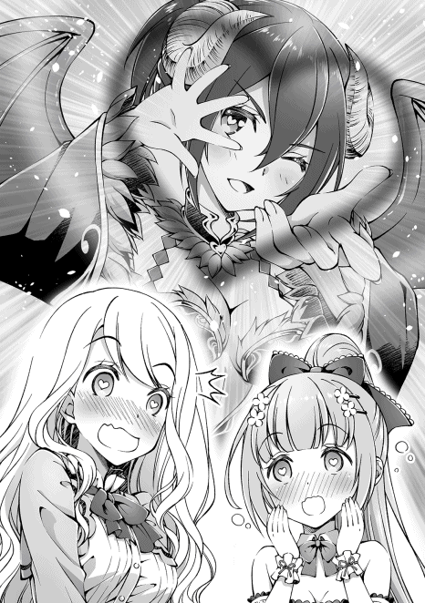
「テレサは気づいちゃったのです。命ある者は愛を求めます。愛する人と家族を作ろうとする温かな想いが抑えられないのです！」
テレサが俺の服を、ぎゅっ、と掴み、蕩 けた瞳で見つめてくる。
様子がおかしいな。
普段のテレサなら、こんな行動はありえないのだが......。
「グラッドくん......」
今度は、甘く身をよじらせたリリスが、消え入りそうな声で俺の腕に絡んでくる。
艶 っぽい反応に続いて、ラミア特有の尾が俺の身体を優しく締めつけて。
「ご主人さま、テレサが何を伝えたいかっていうとですね──」
少し大胆になったテレサたちは、こう言った。
「子供が七人は欲しいです♥」
「やぁん、抜け駆けは駄目だよっ！ わたしとも繁殖行為しようね♥」
ガバッと押し倒してきた。
そのまま俺のジャケットを脱がせ、ベルトを外そうとしてくる。
「おい待て！ 服を脱ごうとするな......脱がそうとするな！ やめろって！」
「なな、何をされているんですか！ しっかりしてください！」
お姉さんが、すぐに二人を引き剥がしてくれた。
「やられたわね。今のがアスモデウスの固有能力、対象を催淫状態にする色欲の魔眼よ」
「アホかっ!? 」
変な能力を掛けてくれやがって！
「さらなる成長を期待しておりますわ、契約者さん？」
「あ、こら、ちょっと待て──」
「ばいばいですわ♥」
アスモデウスが優雅に手を振って、取り巻く光によって身体が覆い隠される。
微かな音も大気の流動もなく、ゆらりっ、と消えた。
「「 ♥♥♥ 」」
色欲の虜 となった彼女たちを置いて。
「グラッドさん、今のうちに離れてください！」
「あ、ああ」
お姉さんが、二人の手足を紐で縛りつけていく。
どうするんだ、この状況。
「......でも、なんでリヴとお姉さんは催淫されなかったんだ？」
「あたしは耐性があるからだけど、お姉さんは何でかしら？」
ふと脳裏を過ぎった疑問はしかし、石畳に生まれた亀裂とクレーターを見て納得した。
「..................」
結界を力で破り、忠義の悪魔 と互角に渡り合い、移動するだけで地形を崩壊させていく。それが妖狐のお姉さん。
「「 怖かったのか 」」
色欲の悪魔からも、普通の女性として認識されなかったようだ。
色欲の大罪神剣『アスモデウス』
▼Unique Abilities
・大罪ランク ： 第７位階級 サキュバスクイーン
・断罪レベル ： １
・恋獄魔眼 ： 対象を魅了し、自身の配下として使役する
・人体封縛 ： 対象を魔力で絡め、肉体の自由を奪う
・獣魔の翼 ： 契約者に悪魔の翼を与え、空を飛び交う
・高速詠唱 ： 詠唱を早め、本来の時間の半分で発動できる
・万華鏡の牢獄 ： 上位結界を展開し、対象を閉じ込める
・色欲覚醒 ： ？？？
──氷雪遺跡、祭壇の間。
「ふむ、上手く合流したようですね」
黒衣の騎士ベアトリクスは、黒十字の巨剣を肩に担ぎながら、月を仰いだ。
「ぶつぶつと何ですの？」
アスモデウスは訝 しげに顔をしかめ、
「まあいいですわ。ベアトリクスの独り言は今に始まったことじゃありませんもの。わたくしは手駒を集めてきますわね」
そのまま真っ直ぐに出口へと歩いていく。
たった今、一撃で仕留めたばかりの氷竜 の死体を乗り越えて。
「......貴方には判らないでしょうね」
ベアトリクスは、アスモデウスの背中に笑みを差し向けた。
（それにしても見違えました。あの姿、まさしく私の眷属となった証。切っ掛けを一つ与えるだけで、あの娘の抱える闇は更なる深淵へと深まった）
娘、とはアスモデウスのことではない。
グラッドたちと一緒にいた、ある少女のことであった。
「グルルゥ......！」
と、新たな氷竜がまた一匹、身の程をわきまえずにベアトリクスへ襲いかかる。
氷竜は一瞬で肉塊 に変わった。
竜族は大陸の絶対強者──その一匹である氷竜ですら、悪魔には敵わない。
（あの娘は保険に過ぎません。ですが、リヴァイアサンの動きは封じられるでしょう。十分に利用価値はあります）
ベアトリクスは絶対の確信を抱く。
黒十字の巨剣に付着した血を見て、その濃い色こそが何物にも代えがたいと思っているかのように、口端を吊り上げる。
「私も再生の宝具 を探すとしましょう。この神殿のどこかにあるはずです」
ベアトリクスは知っている。
この遺跡に、死者をも蘇らせる宝具があることを。
「あれさえ手に入れば、あの方も大変喜んでくださる」
呟きながら、ベアトリクスは探し続ける。
あの方を完全復活させる、その日まで──。
三日後の魔法都市ゼラム、騎士修道会の執務室にて。
「──と、いうわけで、君たちをしばらく投獄することにした」
「ふざけないでよ、この聖騎士 ──ッ！」
突如、紅蓮 の炎と衝撃が渦巻き、爆音が響き渡った。
リヴが唱えた爆発魔法が、戯言 をほざいた聖騎士総長に容赦 なく炸裂したのだ。
その爆発の余波によって部屋の窓ガラスは吹き飛び、壁は焼け焦げ、絨毯 は炭と化した。
煌 びやかな絵画や古めかしい本棚、磨き抜かれた飾り鎧、ソファーやシェードランプなどといった品の良い調度品の数々は無残に半壊。
総長の執務室の内装は、もはや見る影もなくなった。
「がはっ!? ごほげほごほっ!? な、何するんだ、我々を殺すつもりかっ!? 」
真っ黒焦げになった総長が床に這いつくばりながら、非難がましい声を上げている。
「やかましいわよっ！ あたしたちから悪魔襲撃に関わる騒動について聞きたいことがあるって連行したのに、一方的にあたしたちを悪人扱いなんてひどいじゃないっ！」
「悪人扱いとはなんだ！ 我々は悪魔から狙われている君たちを保護しようと思っているだけだ！ 感謝してくれたまえ！」
「鉄格子付きの三畳一間で暮らせとか囚人と一緒でしょうがっ！」
リヴは怒鳴って、右手を伸ばした。
その右手を、俺が止めた。
「リヴ、やり過ぎだ。もう魔法は使うな。次に魔法を放ったら、本当に投獄されるぞ」
「だ、だって......グラッドが命懸けで戦ったのに、この仕打ちって......っ！」
リヴは泣きそうな表情だった。
「落ち着けって。何か物凄く回りくどい言い回しだったが......つまり、騎士修道会は俺たちの身の安全を保証したいという話だろう？」
「その通り。さすがはグラッド殿、話がわかる！ いやー、領主様がな？ 魔法都市を救ってくれた恩人に、できる限りの誠意を尽くしなさいと言い出してな？」
「誠意で投獄されたらたまらないわよぅ......っ！」
総長へちらりと目をやると、蛇十字の紋章が刻印されたペンダントを下げていた。
──騎士修道会。
大層な名前ではあるが、知らない人も多いだろう。
彼らは騎士を騙 っているが、その正体は女神を崇拝する修道士に過ぎない。
たしか悪魔や異教徒との戦いに現れては国に従事し、その活躍から数多くの所領を与えられ、今では豊富な財力を背景に持っているとの噂 を聞いたことがある。
「とにかく、俺たちは保護をしてもらうつもりはない。悪魔に狙われても仕方ないし、殺されても文句は言えねえ。生きるために、これからも剣を振り続けるしかないからな」
俺がそこで言葉を切ったあと、総長は腕を組みながら言った。
「しかし、君たちのおかげで魔法都市の被害は最小限に収まった......一体、何者なんだね？」
その問いに、俺は憂いを湛えた表情で窓際に寄り、外の景色に目を向けた。
空は見事に晴れ渡っていた。
植樹と色とりどりの花が躍る花壇や、外側に広がる静かな街並み。
いつもと何も変わらない風景だ。
魔法都市は、今日も賑わいを見せている。
「何者かと尋ねられても......もちろん、旅人でしかないが」
「あれだけの魔法を見せておいてか？」
「ま、リヴはちょっとばかり特別だからな。見逃してやってくれ」
遠い目で語る俺の言葉に、リヴがぼそりと口を挟む。
「見逃してくれないなら、この修道会を燃やしちゃうからね？」
「やめてくれ、せっかく建て直したばかりなんだぞっ!? 」
「だったら、わかるわよね？」
にやりと笑うリヴに、目的を断たれた総長は掌 で顔を覆って、意気消沈している。
俺たちを見るその瞳の奥に、恐怖の色が潜んでいるような気がするのだが、とりあえず深くは考えない。
......なんかもう、本物の悪人に思えてきた。
† ׆
「まるで襲撃なんて、起こらなかったみたいよね」
「何をしんみりしているんだ？ お前は」
俺は、リヴの頭をくしゃっと搔きまわした。
「あたしだって、しんみりしたくなる時くらいあるわよ？」
「そりゃ悪かった。リヴが落ち込んでいるのは珍しいからな」
「むうっ。まるであたしが馬鹿みたいじゃないっ」
リヴは頭を掻きながら、頬を膨らませていた。
あれから三日、アスモデウスたちが立ち去った後始末は大体終えている。
──と言っても、建物への被害なんかは、これから領主を中心に修復されるらしい。
俺たちは騎士修道会から同行を強制的に求められ、聴取を受けていたわけだ。
アスモデウスたちがどこへいったのか、俺は知らない。
リヴは心当たりがあるようだが、騎士修道会には話せないと言う。
修道会のお偉いさんは、俺たちの問いに言葉を濁 すだけだったが、最終的に魔法都市を守った功績が認められて、今回の件は不問に落ち着いた。
まるで俺たちが悪者みたいだったのが気になるが......。
ともあれ、そこそこの報酬金を頂いた。
......悪魔と戦うのに見合った金額かどうか、というのはさておき......。
魔法都市は、再び地道に復興を続けることとなったわけだ。
「とりあえず、飯でも食いにいくか」
「ええ、そうしましょう」
言って、リヴが振り返る。
「みんなも待っているしねっ！」
俺たちは、待ち合わせ場所へと急いだ。
† ׆
──喫茶店 『仔猫の夜明け亭』。
魔法都市の片隅にある小さな喫茶店の扉が、ちりりーん、と鐘の音を鳴らして開いた。
足場板で作られた床と、赤煉瓦 の壁との対比は落ち着いた雰囲気を醸し、良い感じに観葉植物が置かれている。
大きな吹き抜けの階段もあり、外観からは想像できないほど開放感があった。
「いらっしゃいませ──あれ、グラッド？」
扉を開けた先では、首を傾 げた白猫のウェイトレスが立っていた。
ちょこんと生えた猫耳。明るいプラチナブロンドの髪。
ほどほどに整った顔立ちながら、まだ初々しさも残る素朴な表情の少女だ。
その顔には見覚えがある。
「シュシュ？ ここで働いていたのか」
「うん、昔から働かせてもらっているよ？」
淑やかな笑みを浮かべるシュシュであった。
ろくに櫛 も通されていなかった銀髪はふんわりとしており、印象的な翠玉色の瞳はぱっちりと開かれている。
華奢で小柄なその肢体や、精巧に整ったその細面はアンティーク・ドールを想起させるほど。
笑っている顔は以前と違い、さぞかし魅力的に映った。
「ねえ、また事件に巻き込まれたってホント？」
「あ......まぁ、そうだけど、なんで知っているんだ？」
「みんな が話していたからだよ？」
曖昧な笑みを返すと、シュシュは何も聞かずに奥のテーブル席へと案内してくれた。
「ほら、先に来てるよ？」
四人がけのテーブル席には、普段はあまり目にしないメニューを手に取って、そこに書かれた文字を見つめるリリスとテレサ、対面にお姉さんが座っていた。
「あ、お待ちしてましたっ」
俺たちを見つけて、手と尻尾を振るお姉さん。
「おつかれさまー！ ごめんね、わたしは頭脳労働って苦手だから、一緒に行けなくて......」
「ん、気にするなって」
申し訳なさそうに頭 を垂れるリリスに、笑って返す。
リリスは物事をあまり深く考えておらず、他人に騙 されることも多い。
そんなリリスを修道会に連れても、嘘をつけない性格なのは熟知しているので、今回はお姉さんと一緒に行動をしてもらっていた。
「ご主人さま、こちらへどうぞです！」
リリスの隣へ腰をかけると、スライム化したテレサが、膝に乗ってきた。
隣にはリリスが座って、対面にはお姉さんとリヴが仲良く腰かけている。
「さ、メニューを決めましょう？」
すでに朝食を取るには遅すぎて、昼食には早すぎる時間であった。
そんな時間のせいなのか、店内には俺たち以外に三人の客しかいない。
ふむ、好都合だ。
他に客がいる場所で、悪魔が断罪戦争の再現を──などという話はできないわけで。
俺とテレサ、リリスは注文を取りにきたシュシュに、それぞれ軽い食べ物を注文。
「リヴとお姉さんは......？」
シュシュに促されて、メニューを眺めていた二人は同時に言った。
「デザート全部」
「水だけでお願いします」
「お前ら、嫌がらせか」
思わず突っ込んでしまった。
「だ、だって全部美味しそうなんだもんっ！ ちゃんと食べるからいいでしょっ？」
まぁ、食べられるなら構わないが。
「私、特に体型は変わってないんですけど、体重がどんどん増えているんですよね......」
耳を垂らして、深刻そうに溜息を吐くお姉さん。
「お姉さん、見た目は痩 せてるのにね。それなのに昨夜、体重を計ったら機械が壊──」
「ああっ！ リヴさんっ！ バラしちゃ駄目ですっ！」
リヴの口を塞 ぐお姉さんは、恥ずかしそうに尻尾をぶんぶん振っている。
......すまん。体重が増えたのは多分、俺のせいだ。
二週間前、墜ちた英雄の手によって太古の神竜が召喚された。
危うく大陸もろとも滅ぼされかけたが、神剣 と力を合わせて、どうにか消滅させることに成功したのである。
その時、神剣が与えてくれた能力『経験発現』と『成長分配』が重なって、神竜を倒した時にお姉さんが一気に成長してしまった。
以前は、並の冒険者より手練れ程度だったが......。
▼お姉さん 17 歳
・種族 ： 妖狐
・職業 ： 破壊者（史上二人目）
・武器 ： モーニングスター ＋ 筋肉
・レベル ： 94
・グラッドへの好感度 ： １８４６（１００が標準）
今はこうなってしまった。
素直に謝れば許してくれるだろうか。
いや、責任を取って結婚させられる気がしなくもないので、黙っておこう。
「......って、お姉さんも少しは食べた方がいいと思うが......」
「大丈夫です。昔はパンの耳だけで過ごしていたので慣れています」
お姉さんの答えに、リヴはにんまりと口を開いて。
「あら、残念ねお姉さんっ！ ここのアップルパイは直産で甘いのよ！ ちょっと前に林檎を齧 ってたんだけど、これがもう美味しくて頬っぺたが落ちる勢いなの！ それを食べられないなんて残念ね！ きっともう二度と食べられないでしょうね！ お姉さんはそれだけ痩せているのに、甘いものを我慢するなんて、ああ、なんて残念なのかしら」
「ひ、酷いですっ！ 悪魔ですっ！」
お姉さんが涙ぐんでいた。
「シュシュ、お姉さんにもあたしと同じものをお願いするわ！ 砂糖もたっぷり使っていいからねっ！ シュシュにも分けてあげるから、仕事が終わったら食べなさいよー？」
「ありがと！ 沢山作るから待っててね！」
「あっ、あっ......た、食べます！ 食べますから量を減らしてくださいー！」
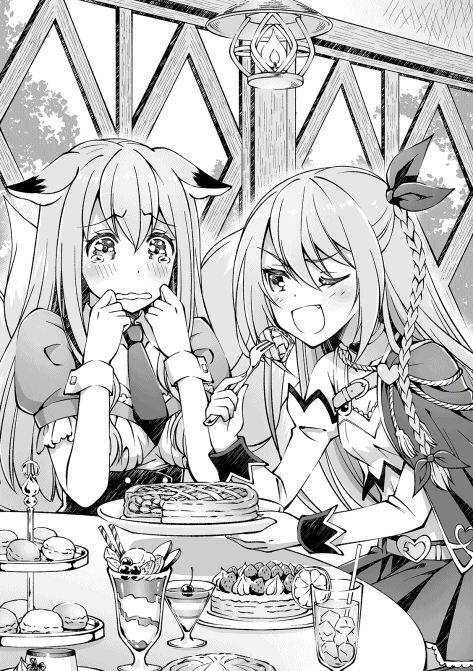
店の奥からシュシュが親指を立てていた。
こちらは嬉しそうに尻尾を動かしており、ご機嫌のようだ。
......リヴの奴、急にどうしたんだ？ 他人を挑発するなんて珍しい。
「リヴちゃん、ちょっと太ったらしいよ」
「ああ......」
仲間を増やそうとしているわけか......。
お姉さん、頑張って耐えてくれ。
ほどなくして、シュシュが注文通りに料理を運んできてくれた。
「はふぅ......」
テレサは机の上によじ登ると、両手に持ったティーカップへと顔を近づけて、ホットミルクを美味しそうに飲んでいく。なんだか、愛らしい光景だ。
「......で......」
シュシュがカウンターへ戻ったのを見計らい、俺は小さくため息をついてから。
「リヴに聞きたいことがあるんだが」
「............ええ、わかっているわ」
俺の問いに、しばしの沈黙を置いてから。
「断罪戦争に関して、知っていることを話すわね」
彼女は語り始める。
過去に何があったのかを──。
† ׆
──三百年前。
世界には不穏な空気が漂っていた。
天使と悪魔は対立し、戦争をするために軍備の増強を推し進め、魔大陸で小競り合いを繰り返していた。
そして──。
そんな子競り合いが、本格的な戦争に発展するのに、さしたるきっかけは必要なかった。
いくつかの同盟国を巻き込んで起こる、平和への戦い。
誰も、しばらくは気づかなかった。
当時はまだある程度、平和の道を探し求めていたリヴでさえ。
戦いと混乱の中に死が蔓延 した。
天使も悪魔も戦争の裏に潜むものの気配に気付いた時には遅かった。
すでに国は疲弊し、英雄と呼ばれていた者たちの多くは死に絶えて──。
世界中で、大量に出現した魔物の群れが、生き残った人々を蹂躙 した。
いくつの命が失われたか。
いくつの国が滅びたのか。
天使と悪魔の戦い、と傍観を決め込んでいた竜たちも、ことここに至ってようやく、人間、人外に助力し、野に溢 れる魔物の掃討に全力を上げるつもりだった。
──だが。
魔物の大量発生ですら陽動に過ぎなかったのだ。
皆の目が魔物に向いている間に七つの大罪の一柱──憤怒のサタンが、手下の悪魔を集結した。
当時はまだ、竜神アリエスの住まう聖地で、ごく一部の者にしか知られていなかった先代魔王の封印されていたバベルの塔に。
サタンは竜神アリエスとの直接対決に挑み、浮遊大陸を破壊し、聖者を殺し、徐々に死の世界へと変えていった。
サタンの狙いは竜神アリエスの命。
それを察知した竜たちを中心とする連合軍は、竜神アリエスに手を貸すべく、バベルの塔へと向かい──。
そして、先代魔王が復活した。
† ׆
「......は......？」
リヴの話途中で、俺は思わず間の抜けた声を上げていた。
「復活って......どういうことだ？」
「わからないわ」
おいおい。
「何が起きたのか、サタンしか知らないもの。竜神アリエスを生贄 に蘇 らせたって伝えられてるけど、実際はどうなんだか......。とにかく竜神アリエスの消滅と、先代魔王が降臨したことで世界に勝利はなくなったのよ」
天使と悪魔は和解しかけていたものの、竜神アリエスを失ったことで対立。
竜も、人外も、人間の英雄たちも分断されて連携すら取れない。
かろうじて生き残ったという状況で、先代魔王が降臨したら勝利は不可能だった。
「そこで、あたしは悪魔を裏切ったの」
リヴの話によれば、平和を望む悪魔は少なからず存在したらしい。
天使と悪魔の戦争を通して、被害を知って。
当時の魔王も和平を結ぶべきと考えていたようだが......。
「先代魔王は──当時の魔王を殺害したのよ。先代魔王が世界を支配するって命令に歯向かった結果、塵 も残さず灰にされたわ」
ふぅ、とため息をつく。
「先代魔王は圧倒的な支配者だったわ。魔王は七つの大罪から選定されるのだけど──あいつは支配欲の塊 ね。刃向う者は仲間であろうと切り捨てる非道なやつよ」
じぃ、と俺たちを見上げてくるリヴ。そこへ質問を投げかけた。
「でも先代魔王は断罪戦争に参加してないよな？」
「そうね。あたしが先代魔王を封印したからね」
「えっ、そうなのか!? 」
「そうなのよ。当時のあたしは限定的ではあるけれど、先代魔王を凌駕する力を持っていたの。次世代の魔王候補とまで呼ばれていたんだから」
軽い口調で語っているが、今の話ってかなり重要なことなんじゃ......？
あとは......リヴが話してくれた通りだった。
リヴ以外の大罪の悪魔が、世界の存続と破滅を賭けて、人々と戦って──。
劣勢に追い込まれていた人類に味方したリヴが、大罪の悪魔を神剣へと封印。
最後の戦いでリヴも封印されてしまったが──。
一年をかけて行われた戦争は、ようやく幕を閉じたわけである。
それこそが、断罪戦争の全貌であった。
「なあ、ずっと気になっていたんだが、神剣ってどこから出て来たんだ？」
「最初からよ。だって、神を殺すために作った悪魔の剣だもの」
あっさりとした答えであった。
「天使と悪魔は仲が悪くてね......。何度も戦争を起こしていたのよ。それでね、天使たちの王《虚ろなる神》に対抗するために作り上げたのが大罪神剣なのよ。高い魔力を持つ悪魔の魂を込めることで、所有者の存在能力を上昇させることに成功したの」
「なるほど。その特性を利用して七つの大罪を封印する触媒に使ったってことか」
「そういうこと」
リヴ以外は、出された食事に手をつけもせず、じっと話を聞いている。
「ベアトリクスも復活していたわね？ そして封印されているはずのアスモデウスも姿を現した。これって第三者の誰かが封印から解き放ってくれたってことになるわよね？」
大罪神剣は肉体を奪われている関係上、契約者がいないと自ら動くことができない。
つまり、アスモデウスにも契約者がいることになる。
「あの時、あたしとアスモデウスの戦いに、ベアトリクスが乱入してきたじゃない？ その時に漏らした言葉を覚えてる？」
「えっと、『あの方 から、お目付け役を命じられておりますので』だったか？」
「ええ、あの方って誰だと思う？」
......まさか。
俺の嫌な予感に応えるように、リヴは小さく首を縦に振り──。
「先代魔王が復活しているのかもしれないわね」
もっともな意見であった。
アスモデウスがリヴの元を訪れた一番の理由は、戦力として招くためか、敵対するなら始末するためだったに違いない。
「憶測に過ぎないけどね。でも、もし復活していたら大変なことになるわよ」
「だが、リヴは過去に先代魔王を封印したんだろう？ もう一度封印するってことは──」
「無理よ」
リヴはきっぱりと、少しだけ震えた声で。
「神剣に吸収された悪魔は弱体化するの、今はこんな少女の姿だけど、昔はもっと威圧感があったんだから」
大袈裟に両手を広げるリヴ。
そんな彼女は、アスモデウスと互角だった。いや、若干押されていた気がする。
「もしも先代魔王が復活していたらまずい展開よ」
リヴの穏やかな声音には、恐怖が込められていた。
「あたしはアスモデウスを止めるつもり。断罪戦争の再現をするって宣言してたからね。おそらく、計画は止まらないはず」
最後に、リヴは俺たちをぐるりと見渡して言った。
「できれば──みんなに、手を貸して欲しいかな」
リヴは、力なく呟いた。
穏やかな風が、窓から流れ込んでいた。
店内の空気を震わせて、何処 かへと消えていく。
......はぁ......。
俺は深くため息をついて、天井に下がったランプをぼんやりと眺めた。
結果から言うと、断るつもりなんてなかった。
リヴに命を助けられてから、彼女のために生きようと誓ったのは嘘じゃない。
だから、最後まで一緒にいるつもりだ。
とは言っても、みんなを巻き込むわけにもいかないだろう。
それが不安で黙っていたのだが......。
「先代魔王を鎮圧すればいいわけですね。任せてください」
「お、お姉さん？」
「リヴさんが大罪神剣って時点で、事情も予想がついてましたからね」
苦笑気味に頷くお姉さん。
「どうですか、リリスさん？」
「実力ではお役に立てないけど、足を引っ張るつもりはないからね！」
いつもと変わらない口調で、リリスも笑った。
「えへへ、旅をしたいという目的は同じです。テレサも頑張りますっ！」
テレサは、本当は怖いのだろう。でも、声を上げてくれた。優しい子だ。
「俺も同じ気持ちだ。どこまでも付き合わせてもらうよ」
「グラッド......！」
結局、一番怯えていたのは俺だったのかもしれない。
ここで物怖じしていたら、リヴと出会う前と何一つ変わらない。
敵がいるのなら倒すまで。それだけだ。
「みんな......！」
リヴは声を絞って、テーブルに置かれたホットミルクを一口で飲み込む。
直後。
「けほっ!? あぅ......熱いぃ......！」
「お、おい！ 無理するなよ！」
「わわ、お、お水を飲んでくださいっ！」
「......なんだか不安になってきました」
「......リヴちゃん、途中まで格好よかったのにね」
ホットミルクで舌を火傷したリヴ。
俺はそんな少女を眺めながら。
「......やっぱり無謀だったかもな......」
こっそり不安を漏らしたのであった。
──夜半過ぎ。
俺は宿のベッドで横になりながら、のんびりと過ごしていた。
あのあと、リヴの話は一旦終了。
俺たちは旅に備えて買い出しを行っていた。
先代魔王の復活が視野に入り出した現状、あまりゆっくりしている時間もなかった。
名残惜しいが、準備が整ったらすぐにでも出発するべきだろう。
だが、俺たちだけで先代魔王と腹心の悪魔を全部倒せるだけの要素があるだろうか。
まあ俺が言っても仕方ない。
むしろリヴを守ると約束した上で、アスモデウスは倒せず、そのあと乱入してきたベアトリクスに掠 り傷も与えられなかったとか......格好つかない。
畜生っ。思い出しただけでも悔しくなる。
......はぁ。俺は、神剣がなければただの傭兵 なんだよな。
右腕に刻まれた契約の証。
無限に伸びる嫉妬の力。
だが、ベアトリクスと互角だった。
契約者である俺が、嫉妬の力を引き出せていないことが原因だろう。
つまり未熟なのだ。
くそっ。やっぱり俺って弱いんだな......。
リヴのために戦う俺。
世界のために戦うリヴ。
その差はなんだ？
種族、才能、努力......あるいは全部か。
俺にはどれも足りていないのだ。
「あー、駄目だ。今日は寝るとするか......」
俺は頭をくしゃくしゃとかき、布団に潜り込んだ。
リヴは大罪遊戯を止めると言った。
断罪戦争の悲劇を再び繰り返さないために戦うことを決めた。
上位悪魔同士の関係とか事情はわからないけど、俺にできるのはリヴのために剣を振り続けることだけである。
リヴの力になりたい。
よし、明日は朝から鍛錬を行うとするか。
そう決めたら、少し気持ちが楽になった。
久しぶりに眠気も感じている。
最近はほとんど寝れなかったので、今日くらいはゆっくりと休みたい。
明日は良い目覚めを迎えられますように。
おやすみなさい──......。
† ׆
「ご主人さまっ？」
......ゆさ......ゆさゆさ。
揺れを感じる。
「ご主人さまっ？ 起きてください、もう朝ですよー？」
どこか遠い所から呼びかけられているのを感じる。
「......ん」
夢見心地に彷徨 っていた胡乱な意識が、ゆっくりと戻っていく。
「お疲れなのはわかりますが、どうか起きてくださいー！」
俺は、ゆっくりと目を開いた。
ここは俺が寝ていた宿の客室──ではない。
「どこなんだ、ここは」
気がついたら、魔物蔓延 る大平原で寝ていた。
本当に──これはまた、何が起きたんだ。
うっすらと朝霧が漂う時間で、辺りはまだ薄暗い。
周囲には都市はもちろん、遠くに見える山岳地帯にも建物らしき街は確認できない。
「ぱんぱかぱーん！ ようやくお目覚めになりましたね、ご主人さまっ！」
意識を覚ますなり、見事な万歳をして喜ぶテレサを目の当たりにして、俺は目を点にした。
「おい、テレサなのか？ その髪色はどうした？」
「ほえ？」
きょとん、と首を傾げるテレサの様子を一つずつ確認していく。
テレサの髪の色は非常に珍しい淡水色だが、今は朱色に染まっている。
その瞳も紅玉 のような色見を帯びて、普段の健気で一歩引いたテレサとは違い、元気いっぱいの表情を見せてくれる。
もしかして、髪を染めたのか？
年頃の女の子はお洒落で染めたくなるって聞くが、複雑な気分だ。
「テレサ、話がある」
「はい、ご主人さま」
「髪が女性の命だってことは知っている。ただ、一言くらい相談して欲しかった」
「あぅ、誤解されている気がします。わたしはテレサじゃなくて、ネレサですよっ！」
「ネレサ？」
「はいですっ！ テレサから分裂したもう一人のテレサですっ！」
どうしよう。さっぱり話が見えてこない。
「えーと、説明しますね」
ネレサは、にこりっ、と微笑みながら口を開く。
「昨夜、テレサったら皆さんに内緒でこっそりと宿を抜け出して、郊外でひっそりと魔法の練習をしていたんですっ！ あ、お小遣いで魔法書は買いましたよー？」
「......そうなのか」
テレサが戦えないことを悔やんでいたのは知っていたが、一人で練習をしていたのか。
俺たちに守られていることが辛かったのかもしれない。
「それで、テレサはどこに？」
「竜が連れ去っちゃったんですよ。困っちゃいましたね！」
「......ちょっと待て。今、とんでもないことを口走らなかったか？」
問答を繰り返すと、俺は徐々に冷や汗を掻き始めた。
もしかして、テレサはとんでもない事件に巻き込まれているんじゃないだろうか。
「このままだとテレサは食べられてしまいます。そう考えたテレサは慌てて身体を分裂させたんです！ わたし、ネレサがご主人さまへ助けを求めるために！」
「分裂って......どうやって？」
「えへへ、聞きたいですか？」
ネレサはドレスの裾からナイフを取り出して、自身の手首に押し当てた。
「やめておく......」
「そうですね！ ちょっと汚れちゃいますし♪」
言いたいことは沢山あるが、仮にもテレサはスライム種。
スライムは自在に分裂できると聞いているので、ネレサのような個体が生まれることも、まぁ理解できた。
「まったく、テレサは頑張りすぎなんだよ......」
俺はそう言って、ため息をつく。
夜に少女が一人で出歩いたらどれだけ危険か、一度教える必要があるかもしれない。
警戒心のないテレサではどれだけ餌食 になりやすいか、それをちゃんと説明しないとな。
まぁ、テレサが困ってたら俺が出てって殴りつけるだけだが。
それでも、今回みたいに守れないことがあるからな。
「テレサはどこに連れさらわれたんだ？」
「この先にある赤竜の巣ですよ！ ちょうど繁殖期で、体力をつけるためにテレサを捕獲したみたいなんです！」
目的地が分かっていれば、あとは向かうだけか。
「急いで助けに向かうとするか」
「はいです！」
ネレサは微笑むと、甘えるかのように俺の腰に両手を回して抱きついた。
ぎゅっ。
爽やかな石鹸 の香り、女の子の匂いが鼻孔 をくすぐっていく。
直後。
──ミシリ。
背骨が軋むように悲鳴を上げた。
「ぎあああああ！ 腰が折れそうなんだが!? 」
「ネレサは力に自信があるので、ご主人さまを巣までお運びします」
その怪力があるなら、赤竜に勝てたんじゃないだろうか？
「周囲の魔物も片づけておきましたよっ！」
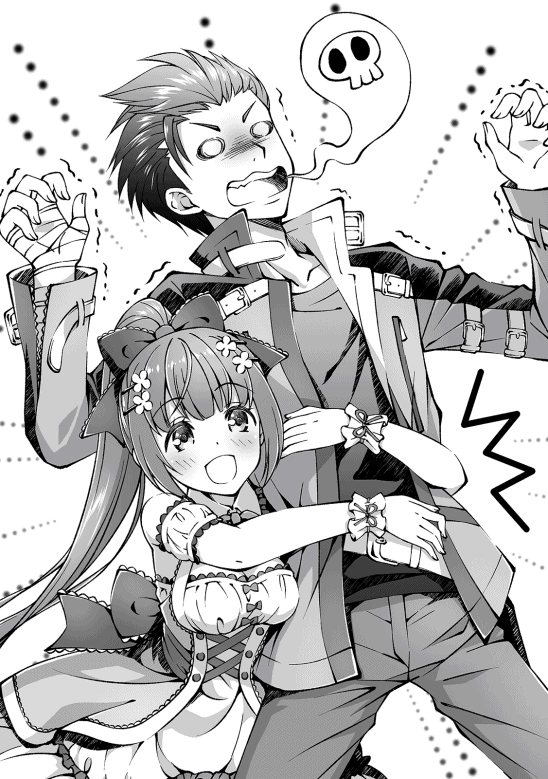
よくよく見渡すと、首の骨を折られて泡を吹いた魔物の群れが見える。
生き残った魔物もネレサに怯えている。
......無理に魔法を覚える必要があるんだろうか？
「ご主人さま」
「ん？」
「ご主人さまは、いつもテレサのことを助けてくれるんですね」
少し嬉しそうに、ネレサは言った。
「ああ、一緒に旅をしているんだし、これくらいは当然だろ」
だから、答えた。
「わぁ、さすがです！ これからもお守りしてあげてくださいねっ！」
「ああ、もちろんだ」
「ずっと、ずっとですよ？ 約束ですよ？」
「ああ、任せておけ」
「テレサを世界で一番愛してあげてくださいね！」
「いや、それは難しいが」
ぎゅっ。
「............愛してあげてくださいね」
みしり。
「あっ！ わかった！ わかったから、力を緩めて......っ！」
「もう、ご主人さまは素直じゃありませんよね♪」
照れるネレサを前に、俺は思った。
......早く普通のテレサに戻って欲しいなぁ......。
† ׆
大平原から一転。
道なき道を進んだ先に辿り着いたのは、獣の匂いが漂う竜の洞窟 だった。
雨が降っていないにもかかわらず、地面は湿気を帯びて半液状化。
見上げるほど巨大な洞窟には、古代樹の根が地面のいたるところから顔を覗かせて、少しでも気を抜けば一歩踏み出すだけで根に足を取られかける。
「うげ......何だあの不気味な狼。頭が二つあって火を吐いているんだけど」
「あれは希少種の双頭狼 です。温厚な性格で、滅多に人を襲わないですよ！」
「へえ、そうなのか」
俺たちに気づくと尻尾を振りながら近寄ってきた。
へえ、かわいいな。頭くらい撫 でてやるか。
「牙には強い毒性を持っています。噛 まれたら即死するのでご注意してくださいね」
伸ばした手が止まった。
と、その腕めがけて双頭狼は飛びかかってくる。
「うわっ!? ちょ、ちょっと待てっ！ こいつ噛みつく気だぞ!? 」
「えへへ、きっと遊んで欲しいのですよ！」
ネレサは双頭狼に近づき、軽快に尻尾を掴んで放り投げる。
「先へ進みましょう？ 今は遊んでいる時間がないですよ？」
双頭狼は悲鳴を上げて逃げてしまった。
さすがはネレサ、力技である。
何事もないように洞窟内の壁にはヒカリゴケが密生し、燐光を放っている。
おかげで真っ暗闇の中をやみくもに彷徨うことにはならずに済みそうだ。
「......順調に進めそうだな」
「はい、罠がなければ大丈夫そうですね！」
地面から突き出た木の根を、可憐な仕草で飛び越えるテレサ。
──カチリ。
「ほえっ？」
可愛らしい戸惑いと共に首を傾げるネレサ。
直後。
四方の壁の亀裂から、何十本という鉄の矢が俺たちに向かって撃ち出された。
「やばいっ！」
反射的にネレサを抱き寄せ、身を屈める。
すぐ頭上を一瞬で掠めて通過していく何本もの矢。
「はわわっ!? ご主人さまが大胆ですっ！ 初めてなので優しくしてくださいね！」
「今はそれどころじゃねえよっ!? 」
ぺちっ、と軽く頭を叩きながら、身体を捻る。
よ、避けられた。
生きているって素晴らしい......。
「楽しかったですね！ もっかいやりましょう！」
「そうじゃないだろっ!? わざと罠を発動させようとするなって！」
「だってー、楽しそうなんですよ！」
無邪気な笑顔で頷くネレサ。
テレサと違って、楽しいことには全力を尽くすタイプだ......。
俺は頭を痛めながら、思わず壁に寄りかかった。
「いいか？ 俺たちの目的はテレサを助け出すことだろう？ 今もテレサは怯えているかもしれない」
ネレサは、ハッ、としたように顔を上げた。
「そ、その通りです！ ネレサたちは軽い気持ちで助けに来たわけじゃありません。それなのに、ネレサは罠が楽しくて遊ぼうとしていたなんて、最低です......！」
よかった、気づいてくれたんだな。
「ご主人さま、ネレサが間違っていました。今はテレサを救出することだけを考えます！」
「ああ。それに、そこまで心配しなくてもいい。竜は確かに強いかもしれないが、一匹くらいなら俺だけでも戦える」
これは嘘じゃない。
リヴと出会うまでは無理だったかもしれないが、神剣の契約者となってからは竜とは対等以上に戦えるようになった。
怯える必要はない。
「流石はご主人さまです！ 先へ進みましょう！」
「ああ。その調子だ、ネレサっ！」
拳を上げるネレサ。
待っててくれ、テレサ。すぐに助けてやるからな。
「あ、ご主人さまの剣を持ってくるのを忘れました！」
「よし帰ろう」
剣のない俺はただの一般市民なわけで、竜に勝てるはずがない。
「助けに行かないんですか!? 」
「事情が変わったしな。今遭遇したら殺されるだけだぞ」
「でも、ご主人さま、背後に赤竜がいますよ？」
ネレサが目を凝らしながら呟いた。
微震と共に、通路を震わせる何か巨大な足音が聞こえてくる。
これは間違いない。竜のものだ。
「走れ、逃げるぞっ！」
奥に向かって全力で走る。
爆炎に巻かれながら現れたのは巨大な赤竜。
体高十メートル。
全長で言えばその倍以上はあるだろう。
一体だけでも通路の横幅を埋め尽くしかねない巨体と、強靭な鱗と、その内側の筋肉と脂肪の三重鎧。
竜は日陰と湿地を好む生態なので、この洞窟はうってつけの住処なのだろう。
「ちっ！」
こちらへ詰め寄って来る赤竜。
対し、俺もまたネレサを抱えて一気に距離を離した。
──集中しろ。剣がなければお話にならない。
──このままでは殺される。
と、前方で道に迷っているらしき少女を発見した。
「わ、ご主人さま!? 助けに来てくださったんですね！」
おっと、本物のテレサだ。
涙を目に浮かべて感激している。
「会えてよかった。大丈夫か？」
「はい、隙を見て岩陰に隠れていました！ ぐすん、怖かったですよぅ......」
「心細かったよな。あとは俺に任せて頭の上で休んでいてくれ」
「は、はい！ ありがとうございますですっ！」
言うな否や、テレサはスライムへと変身。俺の頭によじ登った。
「さて、と」
背後から振動が近づいてくる。
「このまま奥へ逃げたいが......」
「無理ですよ。この先にも赤竜がたくさんいます」
「ふむ。それなら背後の赤竜に注意しながら出口を目指した方がよさそうだな」
「わっかりました！ ネレサも頑張ります！」
まずは追ってきている赤竜をやり過ごすために、岩影へと移動した。
リヴ、見ているか？ これが契約者の勇姿だぞ。
「グルルアッ......！」
赤竜が追いついた。
俺たちの姿が見えないことが疑問なのか、ゆっくりと周囲を探っている。
ここが正念場だ。絶対に物音を立ててはいけない。
「へくちっ」
..................。
ネレサのくしゃみで、全てが台無しになった。
ゆっくりと岩影から顔を出すと、赤竜が俺たちをじっと眺めている。
「あぅっ！ どうして見つかったんでしょう！」
「......どうしてだろうな！」
俺は焼け気味に叫んだ。こっちも応戦しないと、三人揃って食われてしまう。
「ご主人さま！ ここはネレサにお任せください！」
「それだとネレサが危険だろ。ここは一緒に逃げるのが得策なんじゃ──」
「ふふん、ネレサには秘策があるのです！」
ゆっくりと赤竜に近づいて、ネレサは様子を伺う。
赤竜もネレサを警戒していた。
「大丈夫だろうか......」
「不安ですね......」
俺たちの不安を他所に、ネレサと赤竜の睨 み合いが続いていた。
「テレサを連れ去って半日、ネレサは赤竜さんと会える日を楽しみにしておりました！」
「グルルゥ......」
戦闘が始まる。
「行きます！」
ネレサと赤竜の距離が詰まる。
「やあぁぁっ！」
一撃。
飛びかかってくる赤竜の鼻先めがけて拳を振り上げ、一瞬たじろいだその隙めがけ、さらに踏み込んで距離を詰める。
「たあっ！」
振り上げた拳が、狙い違わず顎 先を打ちぬいた。
赤竜が倒れる。
上手い、脳震盪 を起こしたのか。
赤竜のような頑丈な鱗を持つ相手の場合、無理に剣で斬りつけるよりも、筋肉に守られていない脳を揺らす方が確実に相手を無力化できる。
ネレサはもしかしたら、戦闘のセンスに関してはとんでもなく高いのかもしれない。
「赤竜さん、これで終わりですっ！」
拳を掌で叩きながら、赤竜を見下ろすネレサ。
そこへ──。
「きゅいっ？」
小さな竜が近づいてきた。
「え？」
小竜は赤竜へと駆け寄って、その頬を舐めている。
もしかして、生まれたばかりの子供だろうか？
「あぅ。ご主人さま、この赤竜さんは子供にご飯を与えるために餌 を探していたみたいです」
ネレサが困ったように声を上げた。
今度ばかりは攻撃がしにくかったようで、ネレサが振り返る。
その途端、赤竜が動き出した。
「待て！ 戦闘中に背中を向けるな！」
「いいじゃないですか。何だか戦いにくくて......」
ネレサが抗議した、その時──。
一際高く舞い上がった赤竜が、両の翼を大きく広げた。
それが、音高く身体の前で打ち合わされると同時に、周囲の岩が、ごうっと舞い上がった。
「ふえっ!? 」
思わず立ち尽くしたネレサの数メートル前方に駆け寄り、庇った直後。その姿は粉塵 に包まれて──次の瞬間、俺たちは空気の壁に叩かれて、あっけなく宙を舞った。
突風攻撃か。
「ご、ごめんなさい......！」
ネレサは自体を理解したらしい。幸い、ほとんど怪我は負っていない。
俺たちは着地体勢を取る。だが、俺たちの真下には赤竜が口を開けて待っていた。
「う、嘘です......」
ネレサの身体が凍りつく。それしか言えなかったようだ。
怯えたネレサは、助けを求めるように宙へ手を伸ばして──。
「大丈夫ですよ、ネレサ」
──その手を、優しい白い手が、ぎゅっと掴んだ。
ネレサは、両目を見開いた。
俺は宙に身を躍らせながらも、浮き上がった岩場に身を躍らせ、ネレサを掴んだまま跳躍していた。落とさないように背中に手を回し、強く包み込む。
「頼んだぞ、テレサ!! 」
「はいです！」
俺の叫び共鳴するように、人化したテレサは無我夢中で詠唱を始めた。
落下が始まる。
風が耳元で唸り、ジャケットがばたばたとはためく。
この高さから落ちたら大怪我は必須。
そんな思考が頭を掠めたが──ただ呆然と、頭の上で紡がれる白い光の魔法円を見ていた。
「《万象に願う・白き鉄槌 の裁きを》──水精氷晶 ！」
テレサが放ったのは、氷の下級魔法であった。
拳ほどの氷塊 をぶつける魔法だが、赤竜の喉奥へと直撃する。
「テレサも戦うんです！ みなさんと一緒に！」
魔法を修得するのは簡単なことじゃない。
特別な事情がない限り、容易 に修得できるものじゃないからだ。
でもテレサは魔法を修得した。
正直、大変だったはずだ。
この短期間で修得したということは、こまめに練習をしてコツを覚えていったのだろう。
「ご主人さま、テレサも少しは強くなっていますか？」
ああ、なっているよ。
一歩ずつ、確実に前に進んでいる。
だから、俺も負けていられない。
右足を振り上げ、赤竜の頭に振り落とす。
ごがん！ という鈍い音と共に地に沈んだ。
「す、凄いです！」
重い蹴り技の反動で、俺たちは弾かれたように壁へと吹き飛んだ。
このままだとぶつかる！
「《氷霊よ・白の刃似て・具現化せよ》──氷結槍 ！」
次の瞬間。
テレサの詠唱によって、氷の矛槍が出現し──俺はそれを掴み、思いきり壁面に突き立てた。
氷が火花のように盛大に飛び散り、がくん、という衝撃と共に落下の勢いが鈍る。
「しっかり掴まっていろよっ！」
地上に落ちる直前、俺は氷槍から手を離した。
両腕でテレサとネレサを固く抱き、身体を半回転させて俺が下になる。
そして衝撃。
意識が遠ざかり──。
† ׆
一時間後。
温かな雫が、ぽたぽたと落ちてきて頬に触れる。
その違和感で意識が引き戻された。
眼を開くと、俺を強く抱きしめたまま見下ろしてくるテレサとネレサと視線が交差した。
「よかった、無事だったんだな」
俺が唇をわずかに動かして言うと、二人もかすかに笑った。
「はい、おかげさまで！」
「生きていられました！」
そう、生きていた。
普通なら命を落としても仕方ない状況だが、俺たちは生き残った。
身体の芯から伝わる熱が心地よくて、頬がぼおっとする。
俺はゆっくりと体を起こした。
テレサの背中に右手を当てて、詠唱する。
「治癒魔法をかけるぞ、一応」
「は、はい......」
テレサたちも上体を起こした。
大人しく治癒魔法を受けている。
ネレサの治療も終えてから、俺は二人に向き直った。
腰が抜けたようにぺたりと座ったままのテレサは、まだ言うことが聞かない唇を動かして。
「あの......あ、ありがとうございました。助けてくださって......」
「テレサが大変ご迷惑をおかけしましたですっ」
見た目はそっくりの二人。
双子でもなく、偽物でもなく、スライム特有の個性で分裂した二人。
そんな二人に礼を言われて、俺はかすかに笑みを返した。
「気にすんな。そろそろ帰ろうぜ」
「......歩いてですか？」
「そうなるな」
俺がそう答えると、テレサは俺の手を握って足を踏み出した。
そこであることに気づいて、俺の顔を見る。
「みなさん、心配しているでしょうか？」
「だろうな......まぁ、素直に謝るとしよう。きっと許してくれるさ」
顔を見合わせて笑い、俺たちは今度こそ家路を辿るべくゆっくりと洞窟を歩き始めた。
外へ出ると朝陽はすでに上り、雲一つない快晴だった。
† ׆
「どこいってたのよー！ もう、心配したじゃない！」
魔法都市へ戻ると、リヴが文句を言いながらも丁寧 に待ってくれていた。
たった半日姿を見なかっただけだが、何だか新鮮に見える。
「すまん、ちょっとテレサに魔法を教えててな」
「魔法って......あれ、テレサが二人いる？」
「あぅ、これには海よりも深い事情がありまして......」
「あ、恋敵です！」
「へ？ 何のこと？」
「聞いてください！ テレサとご主人さまが抱き合っていたんですよ！ 一時間もっ！」
「あっ、おい待て。誤解を招く言い方をするなっ！」
「その証拠にほら、テレサの服が唾液でベタベタです！ あれはご主人さまが夜遠し──」
「はわわ、ち、違いますよっ!? これは連れ攫 われた時に舐められたもので......ぐすんっ......はじめてがあんな......痛かったですぅ......」
「待てテレサ。なぜそんな台詞を言った！」
ほら、リヴから殺気が溢れてる。
「へええええ。そうなんだぁ？ いいのよ、うん。お幸せにね？ 」
意味深に微笑むリヴが俺に近づいてきて、右腕に両腕を絡めてくる。
......あぁ、誤解を解くのに時間がかかりそうだ。
でも、お姉さんに聞かれる前でよかった。
リヴだけなら誤解を解くのも、どうにかなるし。
「今の話、本当ですか？」
あっ......。
† ׆
後始末は大変だった。
リヴが、お祝いと称してウェディングケーキをご馳走してくれたり......。
お姉さんが、赤ちゃんの服やらを笑顔で買ってきたり......。
事情を理解してくれたリリスが慰めてくれたり......。
どれだけ言い訳しても、
『大丈夫、あたしはグラッドを信じているわ。一番はあたしだって信じているし、一夫多妻制の結婚が容認されている国もあるからね、大丈夫だいじょうぶダイジョウブ......』
リヴは、壊れた人形のように虚ろな目を浮かべているし。
『グラッドさん、永遠の愛って素晴らしいと思いませんか？』
お姉さんは、意味深に包丁を研いでいる。何だか目が怖い。
うん。
この二人に誤解を与えるのは、命に直結するような気がした一日だった。
それと、ネレサは無事にテレサと合体して姿を消していった。
最後に『ご主人さま、またお会いしましょう！』と抱きつかれて、腰の骨が折られたことを追記しておく。
リヴが治療してくれなかったら、俺は死んでいたかもしれない。
「ご主人さま、ごめんなさいです......」
「謝ることはないさ」
俺は頭を撫でながら言った。
テレサと仲良くなれたから良しとするか。
それよりも、
「魔法修得おめでとう、テレサ」
「あ......ありがとうございます！」
誰かのために強くなれること。
それは立派なことだと、俺は信じている。
俺たちが魔法都市をあとにしたのは、翌日のことだった。
朝もやの立ち込める街道を馬車で駆けていく。
まだ少々眠いのだが、俺たちの居場所は敵に知られているわけで、これ以上の滞在は危険と判断した。
となれば、さっさと動くのが得策というものである。
「目的地はここから南に二週間。シグル大山脈を越えた先に存在する──神聖樹 よ」
荷台から身を乗り出して言うリヴ。
「あたし、先代魔王を封印したことがあるって話をしたでしょう？」
「あっ、喫茶店で話してくれたやつだよな？」
「そそ。先代魔王の封印は簡単にいかなくてね。神聖樹の最上階『天空監獄』に先代魔王を閉じ込めることにしたの。あそこなら月の魔力が満ちているから大規模な結界も張れたから」
やれやれとリヴが肩をすくめてみせる。
......神聖樹......。
たしか、聖アスタリア共和国の末端になすエルフたちの里だ。
地方領ほどの広さしかないが、土地条件に恵まれており、作物もそこそこ収穫できるし、魔物や他国からの脅威も、ほかに比べるとかなり少ない。
そして、神聖樹は有名な秘境でもある。
神聖樹は天使が育てていたらしいが、三百年以上も昔に放棄された植物らしい。
エルフたちが神聖樹を大きく成長させて、それを集落のシンボルとして話題を集め、かなり大きな観光地に発展したと聞いた覚えがある。
「あそこに大都市ができていることを知っているか？」
「えっ、そうなの？」
「ああ。迷宮都市と呼ばれて、冒険者たちの聖地としても崇められている」
「......あんな危険な場所に都市を作るなんて、正気なのかしら」
あんまり平和だとロクなことを考えないのか、よからぬ欲が出るのか......まぁ、先代魔王が封印されているとは誰も思わなかったのだろう。
「アスモデウスが言ってたけど、あいつらは断罪戦争の再現を狙っているわ。力を取り戻すまでは迂闊 な行動をしないだろうけど、早く止めないと厄介なことになるでしょうね」
「......時間の猶予はあるが、急がないと手が付けられなくなるってことか」
「そういうことよ」
俺は思わず苦笑する。
本格的な被害が拡大する前に、一刻も早く神聖樹へ向かうしかない。
と、旅の目的が決まった直後だった。
「させると思うか？」
渋い声がする。
慌てて周囲を見渡すが、誰もいない。
「ご主人さま、上空から何かが近づいてきますっ！」
テレサの言葉を追って振り仰ぐ。
名も知らぬ鳥が大空を飛んでいる。
その鳥が──。
不気味なほどに忽然と姿を消した。
「っ」
馬車を停め、神剣を構える。
空が蠢いた。
無数の雲を散らし、飛び出してきたのは緑柱色の体表をした巨竜であった。
──特徴といえば、額に埋め込んだ碧石 くらいのものか。
「原罪竜ドレッドノートじゃないっ！」
「知っているのか？」
「ベアトリクスの眷属 よ！」
一言で分かる。刺客だ。
巨竜の狙いはリヴと契約者の自分だろう。
ドレッドノートは空を掻き分けるような速度で飛び、まっすぐ突き進んでくる。
その全長は他の竜を何倍も凌駕している。
「するとこいつが、ベアトリクスの腰巾着の一人ってわけだな」
「ほざけ、契約者」
ドレッドノートは、俺の言葉を鼻で笑い飛ばす。
「貴様らごとき、アスモデウス様の手をわずらわせるまでのことはない。このドレッドノートが引導を渡してくれる！」
「その忠誠心は褒 めてやるが、お前じゃ力不足だ」
「褒めてくれるのは嬉しいが、頭にスライムを乗せた神剣の契約者も力不足だろう？」
「きゅぴっ!? テレサのことですか!? 」
......否定できない。
テレサは俺の頭の上でずっと休んでいたんだっけ。
「力不足か否か、試してくれようか！」
言うなり、大空を旋回する。
次の瞬間──。
「危ないっ！」
俺はとっさに身を屈め、俺たちめがけて飛んできた原罪竜の爪を避 わす。
ドゴォンっ！
鈍い音と一緒に、俺たちのすぐ傍にあった太い木々が、まとめて抉 られている。
「おいおい......」
ただ優雅に飛翔するだけで巻き起こる旋風。
その強烈な突風に煽られた無数の砂塵と石の破片が、すごい勢いで飛び散っていた。
強力な攻撃だが......。
「仕方ないわね」
リヴは魔法を唱え始める。
神剣の刀身から、紅蓮の槍が生まれた。
「紅蓮槍 ！」
同時に、テレサの魔法も完成する。
「氷結槍 ！」
炎と氷の槍。
二人の放った魔法は、それぞれ軌道を邪魔せずにドレッドノートの翼へと直撃した。
「何っ!? 」
思わず叫ぶ原罪竜。
神剣姿のリヴと、スライム姿のテレサが魔法を使うことは予想外だったようだ。
「ちぃっ！」
慌てて飛び退 ろうとするドレッドノート。
「させませんよ」
お姉さんの蹴りが脳天に放たれる。
「──ぐふッッッッ!? 」
全身を小刻みに震わせて、落下する。
「あいにく俺は優しくない。手加減はしないんだ」
「何を生意気なこと、を......!? 」
言いかけた言葉が半ばで止まる。
気づいたらしい。
俺たちの上空に漂う、巨大な質量の存在に。
「──雷鳴だと」
晴れ渡る空、漂う白の閃光。
「言っただろう、力不足だって」
落雷が、神剣めがけて降りそそぐ。
「決着、だな」
軽く息を吐き出して、ドレッドノートの腕 へと神剣を突き刺した。
鋼鉄よりも強度な竜の逆鱗。
その逆鱗が、神剣と雷鳴の破壊力を前に耐えきれず──。
「......見事、だ」
ドレッドノートが今にも絶えそうな呼吸で、倒れ伏した。
俺が今使ったのは、召雷と呼ばれる中威力の魔法で、対象を感電させる効果がある。
......実は、殺傷力がそれほどない。
何でこんな真似をしたかというと、ドレッドノートに確かめたいことがあったからだ。
「あの方 って誰だ？」
ドレッドノートが一瞬、ピクリ、と反応した。
「先代魔王が復活しているのか？」
「さあな、答えられん。だが予測はついているのだろう？」
俺たちを試すように冷笑を浮かべてきた。
......あの方は、先代魔王の可能性が高いな。
となれば、これ以上はこいつに問いただしても仕方あるまい。
「くはは！ きさまら如き劣等種に、あの方を倒せるはずがないのだ！」
「あっさり負けたのに酷い言い草ね。あたしたちのどこが劣等種だっていうのよ？」
ドレッドノートは、リヴを睨みつけながらニヤリと笑った。
「胸だな」
「ぶっ殺すわ」
暴れるリヴを前にして。
俺はテレサたちを連れて、遠くから処刑 を見守ることにした。
† ׆
道なき草原に夜風が吹く。
首筋を撫でる旋風は思わず身を震わせるほど冷たく、息を吐けばそれが白い靄 となって浮かびあがっていく。
「この辺りは寒いねー......」
「近くに氷の聖獣が棲みついていた遺跡があるらしいぞ。過去に封印されたらしいが、その時の血潮が今も残って、冷気を生み出しているそうだ」
「そうなんだ......うぅ、冬眠しちゃいそうだよ......」
リリスは両腕で身体を抱きしめて震えていた。
ラミアって変温動物らしいので、寒い場所だと冬眠する特徴があるそうだ。
このままだと可哀想だよな......。
荷物からローブを取り出して、リリスへと手渡した。
「わー、ありがとう！」
ご機嫌なリリスは鼻歌交じりに着込んでいく。
その仕草を眺めてから。
俺は冷たい風にあおられながら、夜の草原でロッジ型のテントを二つ組み立てていく。
「随分と手慣れているんだね！」
「傭兵時代の知恵だな。遠征中はテントが必須だったから」
旅を始めてから三日が経過した。
俺たちへ襲いかかる追手の数は減らないが、奇跡的にも全員無事だ。
幌馬車の荷台が多少傷ついてしまったが、このくらいは許容範囲の内。
次の街で直すとしよう。
「──でも、一体どういうことだろうね」
「三百年前の悪魔が、次々に復活した理由か？」
「うん」
「いくつかのパターンが考えられるな」
ありがちなのが、悪魔たちを封印から解き放った愚か者がいる、というパターン。
断罪竜が襲ってきたことを考えると、可能性は高い。
次に、大罪神剣の力を狙っているパターン。
魔法都市で戦った墜ちた英雄は、大罪神剣の力を狙っていた。
神剣と契約を結べば力を無限に引き出してくれるのだから、闇を抱えた連中が狙ってくる理由もわかる。
ただ、この場合は相手が悪魔以外に限られるが......。
「一番ありえそうなのは......」
俺は真剣な顔でぼそりと言った。
リリスは顔をしかめた。
わかっている。
その可能性が一番高いことを。
しかしそれは、もっとも望ましくない可能性だ。
「先代魔王が何かの影響で封印から解き放たれた──」
俺は空を振り仰ぐ。
「もしもそうなら」
雲一つない夜空に向かい、ぼつりと呟いた。
「俺たちは勝てるんだろうか？」
† ׆
──などと暗い疑問を考えていても、結局のところ、身に降りかかる火の粉は振り払う必要がある。
「がぐふぅっ！」
お姉さんの鉄球が、ゴブリンの頭を粉砕した。
同時に飛び込んだ俺の斬撃が、もう一体のゴブリンをうち倒す。
「あぅ、まだ午前中なのに、もう七回も遭遇しています。神聖樹に近づいたら一体どれだけの敵さんと戦わないといけないのでしょうね......」
「いっそのこと、寄り道して時間を稼ぎたいくらいだな、これは」
「そうですよね......」
俺たちは、街道の行く手を見据えて言った。
街道の右手に見える小さな林。
左手には一面の麦畑。
丘の向こうは、遥かなシグル大山脈がその頂きを見せている。
......まだシグル大山脈も超えていないのに、次々に魔物が襲ってくるんだよな。
流石に疲れてきた。
リヴの話によれば、アスモデウスは直接戦うよりも、他人を惑わして手足の如く操ることの方が飛びぬけて得意だそうだ。
俺たちが進み続ける限り、この流れは止まらないだろう。
こうなったら半ばヤケだ。
どんどん進んでいくしかあるまい。
馬車に戻り、手綱を握って再び馬車を走らせた。
「そうだ、みなさんは温泉に興味はありませんか？」
お姉さんが言った。
「温泉？」
「はい！ この先にグランフェルトの街がありまして、温泉で有名な場所なんです！ 食料の買い足しも必要ですし、立ち寄ってみるのはいかがでしょうか？」
お姉さんの目が輝いている。
「もしかして、温泉が好きなのか？」
「はい！ 温泉が嫌いな女の子なんて存在しませんよ！」
「温泉ですか!? 是非、入りたいです！」
「お肌も鱗もツヤツヤになりそうだねー！」
テレサも、リリスも、温泉で頭がいっぱいのようだった。
人化したリヴだけは、腕を組んだまま難しい表情を浮かべている。
「あのね、断罪戦争を止めないといけないのよ？ あたしたちが少しでも遅れたら、大勢の人が被害に遭うんだからね？」
リヴの言うとおりだ。
俺たちが置かれている状況は、決して軽いものじゃない。
と意気込んでいると、お姉さんが囁 いた。
「リヴさん、温泉には甘いお饅頭 が売っています。ほどよい舌触りで、一口で溶けて、ほっぺたが落ちるほど美味しいって冒険者から絶賛されてましたよ？」
「グラッド、何してるの？ さっさと古代都市へ向かうわよ」
おい、さっきの決意はどこへ消えた。
「みんな、温泉入りたいわよね？」
「わわ、入ってみたいです！」
「い、いいのかなぁ？」
「まぁ馬を休ませる必要もあるし、一日くらいなら......」
「決まりね！」
リヴは鼻歌交じりに、意気揚々と地図を広げる。
一斉に群がる女性陣。
彼女たちの気迫に押されながら、俺たちはグランフェルトの街へ向かうこととなった。
† ׆
──夢を見ていた。
火の赤と瓦礫が辺り一面に広がったあの日。
何でもできると思っていた万能感が、無力な自分という現実の前に崩れ落ちたあの日。
俺は、甲冑を纏 った十八歳の少女を抱いていた。
燃え上がる村の中央で、不思議と少女は冷たかった
美しい顔立ちも、凛々 しい表情も、滲 み出る清冽な雰囲気も、ある種の神聖さに包まれている。
そこで、俺は──泣いていた。
『ぐっ......あ、ぁ......』
『グラッド、情けない顔をしていますね......ああ、今のは別に貶 してはいませんよ......褒めてもいませんが』
地面に膝をついて、情けなく泣きじゃくる俺を、あの人 は慰めてくれた。
『......俺......あなたの命を、奪うつもりなんて......こんなつもりじゃ......ッ！』
『まったく......温室で育てられた人間でもない限り......そんな理想は捨てなさいって教えたはずです......』
あの人は女性なのに強くて、凛々しくて、優しかった。
剣すらまともに握れない俺を邪険に扱わず、剣を握る意味について教えてくれたんだ。
『まぁ、私は無様な最後を迎えましたけど......これも我が運命でしょうか......』
あの人はいつも教えてくれた。
卓越した剣技を身につけても、実践をいくら経験したとしても、命ある限り、死ぬ時は一瞬なのだと。
『■■■ィ■■■ッ！ でも......ッ！』
『身寄りのない戦争孤児だった私は、生きるためには戦うしかありませんでした......だって、私は人狼です。人間じゃないのですから』
あの人は希代の天才。
秘剣の猛犬 と称されるほどの強さがあった。
背丈よりも長い大剣を振りまわし、疾風の如く戦場を駆けまわる様から死神とも呼ばれていたほどだ。
そんなあの人を、俺は殺してしまった。
『......辛かったですよね。私が魔物に身体を奪われたせいで、村人を手にかけてしまったのですから......』
寂しげな表情で、俺を真っ直ぐ見つめてくる。
『でも、最後に愛する人に看取ってもらえるって、最高に幸せなことだと思いませんか？ グラッドが生き残ってくれて良かった、です。だから──』
一秒、待って。
あの人は、目をつむって。
『......生きて。生き続けて。世界の誰よりも強くなって、生きた証を胸に刻んでください』
それが遺言だったのか、迷った末だったのか、俺にはわからない。
『──んっ』
『────っ』
お互いの息づかいが絡み合い、あの人が息を詰めて、強烈な熱が頭の片隅に伝わっていく。
柔らかい唇。
触れ合うだけの口づけ。
俺にとっては初めてで、あの人にとっては最後の口づけ。
冷たい『死』の味がした。
『──さよなら』
どちらともなく、唇が離れた。
それを最後に、あの人は眠ったように息を引き取って──。
『■■■ィ■■■......？ う、ぁ、ああ......ああああああっ!! 』
それからは、無我夢中で剣を振るようになった。
あの頃の俺は自分の手を汚すことができない、どうしようもない偽善者だったから。
自分の不甲斐なさであの人を失ったことを忘れたくて。
少しずつ、心が死んでいくのを感じた。
一日ごとに、まるで自分が自分じゃないかのように変わっていくみたいで怖かったのに──。
その感覚すらも、最近は薄れている。
俺が生き残れたのは──ひとえにあの人のおかげだ。
あの人がいてくれたから、俺は生き残ることができた。
あの日、俺は誓ったんだ。
いつか、誰よりも多く、大勢の人を守れるようになってみせると。
『グラッド？ もし、君に守るべき人ができたら──......』
あまりにも遠い記憶のせいか、世界は白く染まっていく。
何だか、あの人の顔にも白い霧のようなものがかかっていて、よく見えない。
それはもう、おぼろげであいまいで、よく思い出せない、在りし日の残滓 ──。
──白い記憶............。
† ׆
「......夢、か」
夢の中の過去を彷徨っていた意識が、帰還する。
俺はのそのそと顔を上げた。
「グラッドさん、お目覚めですか？」
と、気配に気づいたのか、お姉さんがテントの出入り口から顔を出してきた。
「......どうしたんです？」
「いや、ちょっと剣でも振ってくるよ」
懐かしい夢を見たせいだろうか。
お姉さんは何となく、どこか霧の向こうのあの人に似ているような気がした。
† ׆
誰もが寝静まった深夜において、俺は冷たい雨に打たれ続けていた。
頭上は雨雲に覆いつくされて、吹き荒れる風は冷たく、無数の雨雫となって地上に降り注ぐ。そんな凍てつく水滴を頭から浴びて、俺は──。
「まだだ......！」
ひたすらと、剣を振り続けていた。
夜は魔物の聖域。悪状況を故意に作り上げての訓練。
豪雨に見舞われ、魔物たちに囲まれ、振り続けた剣の重みで指先も痺 れを感じている。
それでも剣を離すわけにはいかない。
「畜生......っ！ 約束しただろうがっ！」
悔しい。
自分の力では、届かない敵がいる。
「強くなるんだろうが......っ！」
否、強くなるしかない。
才能でも、修練の成果でもなく、純粋なる強さを追い求める必要がある。
「俺は、そうしなきゃいけないんだよっ！」
新たに迫ってくるのは、竜。
その姿を凝視して、剣を降り上げて、一閃を放つ。
振り抜いた剣先が、迷い違わず竜を葬 った。
「......はぁ......っ......ぁ......っ......」
疲労困憊 、剣を地面に突き立てる。
神剣 の手助けがなければ、俺はただの人間だ。
そう、今は人間だ。
弱さを克服するのなら、さらに強くなればいい。
「俺は......」
リヴを手放したくない。
「最初は恩返しのつもりだった。そんな単純な理由で動いてた。男だしさ、護ってやりたいじゃないか......」
大罪神剣の伝承──。
まだガキの頃、教会で布教された神父様の話を聞いて、恐れていたことがある。
世界を破壊しつくすような存在が、いまもこの星に生きているなんて思わなかったからだ。
だが俺は知ってしまった。嫉妬の悪魔リヴァイアサンの、あまりにも脆くて可憐な一面を。
世界に裏切られ、世界を守ろうとした一途な少女を。
「あいつは純粋なんだ、すげえよ。それしか俺には言えねえ」
前触れもなく現れては、俺を支えてくれる。
性格も嫉妬深くて、子供っぽい甘えん坊かもしれない。
でも、誰よりも繊細だった。
強気な発言で自分を守り、本当の弱さを隠してひとりで泣いている。
それを知ってしまった。
「......傷つくのは、俺だけで十分だ」
リヴが世界を守りたいように、俺だってリヴを守りたい。
「かかってこいよ、魔物ども......ッ！」
まだ身体は動く。
剣を握る力が残っている。
降り注ぐ敵意を相手に、ひたすらに剣を振るい、薙ぎ払う。
冷たい雨の感触を浴びながら、俺は何度だって自嘲 する。
「もう誰も、失いたくねえ」
リヴが笑って暮らせるその日まで、剣を握り続ける──......。
グラッドの所持スキル（一部のみ表示）
▼Combat Skill
・劫火一閃 ： 業火を放つ剣技。
・加速 ： 身体速度を数倍に強化する技能。
▼Magic Skill
・治癒魔法 ： 治癒魔法に関する知識を修得する。
・雷属魔法 ： 雷属魔法に関する知識を習得する。
・魔竜召喚 ： 竜を呼び出すことができる召喚魔法。
▼Active Skill
・地形探査 ： 魔力を通し、周囲の地形を地図のように読み取る。
・鑑定 ： 対象を解析し、あらゆる情報を読み取る。
・薬剤調合 ： 素材を混ぜ合わせ、薬を制作する。
▼Passive Skill
・竜言語 ： 竜との対話を可能にする。
・気配感知 ： 敵意を伝える警戒技能。
・状態耐性 ： 毒、石化、病、風邪などあらゆる症状を防ぐ。
・経験分配 ： 敵を倒した時、仲間の成長を助長する。
グランフェルトの街。
山の頂点が真っ赤に染まったシグル大山脈、その麓に栄えた特異な街だ。
「へえ、ここは暖かいわね！」
「火山地熱の影響だな。真冬でも薄着で過ごせるらしいぞ」
この街は他に類を見ないほど、むせ返るような熱気に包まれていた。
まるで真夏のような暑さだ。訪れる観光客が多いのか、門付近には定期馬車が運航しており、露店通りも活気に溢れている。
そして、街には二つの白い塔が建っていた。
何かと思って塔に近づいてみると、何とそれは骨。巨大な竜の骨であった。グランフェルトの街を覆うほどの、巨大な骨の中に街が作られているのだ。
そんな街の宿屋『ミランジェ』にて。
「わああ！ とっても綺麗な建物ですっ！」
テレサが感嘆の声を漏らした。
宿屋は古城のような外観をしており、大きな二枚扉を抜けると、巨大なステンドグラスがお出迎えしてくれた。通路には真紅の趣深い絨毯が敷かれ、壁際には騎士の鎧と立派な絵画が一定間隔で並んでいる。一泊いくらするんだろうか。
「リヴさま、ここに泊まっていいのですか!? 」
「もちろんよ。あたしに付き合ってくれたみんなへの、ささやかなお礼だから」
リヴが金貨で支払い、首尾よく部屋を取ることができた。
......金貨って、俺一人なら一年分の食費だぞ。
......俺、ヒモと思われてないかな？
「リヴさん、売店にお饅頭が売っていましたよ？」
「っ！ それはすぐ行かないとよね！」
「あ、リヴちゃん待って！ わたしも一緒に行くー！」
まだ荷物も置いてないのに、売店へと走っていく二人。
従業員さんに「走らないように」と叱られて、しゅんと項垂れている。
まるで子供みたいだ。
「......あはは、私もご一緒してきますね」
困ったように目を細めながら、リヴたちの後を追いかけるお姉さん。
残された俺とテレサは、先に部屋へと向かうことにした。
「ご主人さま、ご主人さま！」
荷物を両手に抱えていると、ぐいぐいと腕を引っ張られる。
「何だか美味しそうな匂いがします！ 一緒にご飯を食べませんか？」
テレサが指差す方に顔を向けると、宿屋の外──雑多な商店が寄り集まった一角で、無数の屋台が軒を連ね、精力的に食べ物を売り込んでいる光景があった。ハムやソーセージを売る屋台、肉の串焼きを売る屋台に、ヤシの実のジュースを売る屋台など、実に美味そうだ。
「荷物を置いたら、腹ごしらえでもするか？」
「はいですっ！」
足早に向かうと、客室の空気は独特だった。
柔らかくて心地の良い、落ち着いた雰囲気の洋室。
「わわぁっ、室内に温泉もあるんですねー！」
部屋に併設された 露店風呂から、テレサの声が聞こえてきた。
露天風呂付きの客室である。
確認してみると、真っ白な蒸気に包まれた乳白色の濁り湯が広がっていた。
ごつごつとした天然の岩盤で作られた浴場は、天井が覆われておらず、青い空や輝く星を仰ぎながら入浴することができる。
湯船も五人くらいなら足を伸ばせそうなので、気兼ねなく旅の疲れを癒 せるだろう。
「ご主人さま、あとでご一緒しますね！」
「いや、さすがにそれは......」
「えー！ 以前はご一緒に入ったじゃないですかー！」
抗議するテレサ。
たしかにスライム姿のテレサとは一緒に入浴したが......人化した状態ではまずいだろう。
取りあえず、温泉は後回しにするか。
「えへへ、今度こそ外へ行きましょう！」
「ちょっと待て！ はぐれたらどうするんだ！」
注意しても、テレサに届かない。
仕方なく外まで追いかけると、テレサはこんがりと焼いた牛肉と野菜の串焼きを二本注文し、一本を俺に渡して、美味しそうにかじりつく。
「わぁ、お肉が柔らかくて、野菜もシャキシャキしてます！」
口いっぱいに頬張るテレサの姿を前にしては、あまり怒る気にもなれなかった。
一週間も馬車の旅が続いたから、久々に浮かれているのだろう。
俺も大人しく、串焼きにかじりつくことにした。お、旨い。
「あっ、そういえばご主人さま、その腰の長剣──どうされたんですか？」
「ああ、これか？ いつもリヴが一緒とは限らないだろう？ 神剣がなければ俺はただの傭兵だし、力の恩恵も授かれない。護身用の武器くらいは携帯しておこうと思ってな」
「鍛錬も兼ねて、ということですか？」
「そういうことだ」
「それで夜にお姿を見かけないことがあったのですね！ あぅ、ご一緒したかったです」
「んー、気持ちよさそうに寝ていたしな」
「はわわ!? 最近はぐっすり眠ることができて、そ、その......」
「冗談だよ」
ぐっすりと眠れるってことは、俺たちを信用してくれているってことだろうし、ちょっと嬉しくなる。俺はお詫びとばかりに頭を撫でてみた。
「えへへ。ご主人さまの手、気持ちいいですっ」
嬉しそうに笑ってくれた。
「──さて、話はこれくらいにしておくか......」
俺は立ち止まり、テレサを背中に隠した。
「すまん、ちょっとばかり油断してたみたいだ」
俺は裏路地へと足を進めた。背後には大勢の人々。誰が観光客で住民だかわからない。
その中から、殺気を感じたのだ。
「この場から離れる。一緒に来てくれ」
「はいです」
人通りを避けるように道なりに進んでいくと──。
前触れもなく、蒼い輝きに彩られた光の円環が地面に浮かび上がった。
「転移!? 」
大地を蹴って身を投げ出す。
刹那、背中を掠めるように鳥を象った雷撃が宙高くへと迸った。
「旅人さん、お待ちください」
現れる一人の人間。
素朴な服を着た二十代前後の女性。
女性が手にしているのは杖──魔術師か。
「ご主人さまっ！」
テレサも彼女の正体に気づいたようだ。
「いつのまにこの人を誑 かしたのですか！」
「おい、違うだろ、そうじゃないだろ。それは俺にじゃなくて、アスモデウスに言ってくれ」
「うふふ。一瞬で見抜かれちゃいましたわね♥」
天上から現れるのは、アスモデウス。
やっぱりか。
アスモデウスの恋獄魔眼で魔術師を操っているのだろう。
「契約者さん、少しお話がありますの」
「......話だと？」
「リヴちゃんを説得して欲しいのですわ。もしどうあっても悪魔に戻らないというのであればそれはそれで仕方ありません。わたくしがこの手で直接連れて行きますわ」
まだリヴを諦めていなかったのか。
なぜここまで執拗に追いかけてくるのだろう？
まさか......。
「お前、そっちの趣味を......？」
「違いますわよっ！」
アスモデウスが、容姿に不似合いな甲高い声を出す。
「わたくしはただ、リヴちゃんと仲直りしたいだけで──」
どうリアクションを返してよいかわからず、アスモデウスは立ち尽くしている。
とりあえず、相手の気勢を削ぐことはできたようである。
さて、この隙に......。
「「 行かせません 」」
今度は後ろから声がした。
振り返ると、新たに操られた冒険者風の女性が二人。
「契約者さんは、洗脳された人間の命を奪えますの？」
アスモデウスが、ずいっ、と一歩前に出る。
「自分の意思で襲ってきたわけじゃないんだろう？ 無駄に戦う理由もないさ」
「うふふ、紳士ですのね」
アスモデウスが目を細めてくる。
「それでは、試させて頂きますわっ！」
返事も待たず、無数の光を放ってくるアスモデウス。
「ちっ！」
俺はテレサを抱えて素早くその場を飛び退 いた。
光の矢は俺とテレサの間に突き刺さり、炸裂する。
煙が視界を遮 った。
「ご主人さまっ！」
テレサの叫び声が響き渡ったのは、その時だった。
白の鈍い刃が煌 いた。
「くっ！」
慌てて飛び退る。
俺は腰の剣を引き抜いた。
「契約者さん本来の実力──」
徐々に薄れゆく煙の中、ゆっくりとアスモデウスは姿を現した。
「見せてくださいませっ！」
アスモデウスが不可視の魔力を放つ。
すかさず剣で受け止める。
──ギィン！
アスモデウスの放った魔力と、俺の放った剣撃。
双方が衝突し、目を灼くほどの閃光と、空間すら歪める強烈な衝撃波がその場を駆け抜けた。
「なっ......!? 」
悪魔の放つ一撃を正面から受け止めた事実。
その光景を前に、アスモデウスが驚愕の声を上げた。
「信じられないですわ......神剣のない契約者さんが、高位悪魔の一撃を相殺するだなんて！」
アスモデウスが眼を見開く中で。
「テレサ、後ろだ！」
背後に生まれた不穏な気配。
赤銅色の獅子の姿を模した雷撃の魔法。
地面を抉り、その口腔 に稲妻の輝きが灯ったのを確かに見た。
「危ない！」
「ご主人さま!? 」
俺がテレサを突き飛ばした刹那、身体が獅子に呑み込まれた。
「ご主────」
「どうやら、またリヴに助けられたようだな」
雷撃が虚空に収束していく。
石畳すら粉砕する一撃が粒子と化したその後に、俺は立つ。
左腕に、光輝く紋章を浮き上がらせて。
「契約者の証!? それで受け止めたっていうの!? 」
アスモデウスが震え戦 く。
その一瞬の虚をついて、俺は通りすぎざまにアスモデウスの身体を薙ぎ払おうとした。
──呪詛の衣、魔法否定。
神剣が持つ固有能力で、あらゆる魔法を打ち消すことができる代物。
契約の紋が刻まれた左腕にも効果は残っているようで、おかげで助かった。
「悪いが、これで......！」
勝負を決めようとしたが、しかし。
「あのスライムちゃん、苦戦していますわよ？」
俺は、動きを止めてしまった。
その言葉が嘘だとは見抜けずに。
「甘いですわね♥」
アスモデウスの右手が俺の頬を撫でた。
ただそれだけの挙動で、俺は地面に崩れ落ちてしまう。
何だこれ、全身が痺れて......神経を麻痺 させたのか......！。
「うふふ、仲間想いですわね。そういう殿方は好きですわよ？」
完全に出し抜かれた。
「そんな悔しそうな顔をしないでくださいな？ べつに命まで奪うつもりはないですのよ？ リヴちゃんの弱点 を知りたいだ・け・で♥」
アスモデウスが右腕を上げた。
その瞬間、テレサの身体も動かなくなった。
「あ、れ......？」
見れば、操られている女性たちの剣がテレサの影に突き刺さっている。
──影を縛っているのか!?
「「「 捕らえました 」」」
「チェックメイトですわね♥」
「ご主人さまぁ、ごめんなさいです......」
成す術もなく、手足を縛られていく俺たち。
やがて、アスモデウスに魔法をかけられて、意識が夢見心地になっていく。
そして──。
† ׆
気がつくと知らない場所にいた。
薄汚れた壁に、まるで取り残されたような古代の聖人像がかかっている。
窓はなく、ランプの灯りが部屋を照らしている。
ここは朽ちた神殿か何かの小部屋らしい。
状態を確認すると、手足は縛られている......か。
目をやると、入口には女性が三人立っている。
俺たちを襲った女性だ。
おそらく見張りなのだろう。
剣を持って突っ立っているが、目から光は失われたままだ。
「目を覚ましましたか？ ご主人さま」
呼ぶ声に背後を向くと、そこにはテレサが寝転がっていた。
やはり同じように手足を縛られているが、俺と違うのは魔法円の上に寝かされていることだ。
「うぅ、ここから出られないんです......。スライムにも戻れなくて......」
自力での脱出は難しいようだ。
どうにかして街へ戻りたいが......。
「あら、契約者さんも目を覚ましたようですわね」
入口から、あいつの声が聞こえた。
身体を反転させると、腕を組みながら上機嫌のアスモデウスが鼻歌を口ずさんでいる。
「──で、契約者さん？」
唐突に声をかけられて、俺は少しばかり冷汗を掻いてしまった。
「今、貴方の置かれている状況が理解できているかしら？」
俺の前にしゃがみ、両手で頬を撫でるが──。
「よく見ると、リヴちゃんにはもったいないくらい素敵なお顔をしていますわね♥」
なぜだろう、アスモデウスを見つめていると背筋が冷たくなってくる。
俺を見てから興奮したように息を切らし、まんざらでもなさそうな微笑みを向けてくるのが不気味だ。
「先代魔王の生贄にしちゃうのはもったいないですわ」
は？
「先代魔王の生贄だって......？」
「うふふ、心配しなくても引き渡しはしませんわよ。リヴちゃんに恨まれちゃいますし、命は助けるお約束でしたから。でも生かしておくのなら、ここで多少の辱めを与えても問題はありませんわよね♥」
問題ありまくりだっての。
「ご、ご主人さまに手を出さないでください！」
助け船は背後から出た。
頼む、止めてくれ。
「うふふ、心配しなくてもスライムちゃんも、わたくしの下僕にしてあげますわ♥ それなら契約者さんと色々 できますわよ？」
「...........................ご、ご主人さまにそんなことはできません！」
待て。今の間は何だ？
普段ならとにかく、今の状況では逆らえない。
ただ、魔法は使えるので脱出しようと思えばできるだろう。
タイミングを誤らないようにしなければ。
「うふふ、悪く思わないでくださいませ♥ 契約者さんだって、わたくしより酷いことを散々あちこちでして、沢山の女性を泣かせてきたのでしょう？」
「一度もしたことねえよ」
「うふふ......それじゃ下僕たち......」
アスモデウスの命令で女性たちが俺を取り囲んで、手を伸ばし──。
「ご、ご主人さまに手を出したら、大変ですよ！」
「へえ、何が起きるって言うんですの？」
「これは忠告です！ ご主人さまに手を出さないでください！ じゃないと──」
「じゃないと？」
女性たちは俺のベルトと服に手をかけていた。
テレサは静かな口調で、しかしはっきりと告げた。
「び、病気になりますよ っ！」
......部屋の全員が固まった。
俺が女性たちにゆっくりと視線を向ける。
──ずざざざざざっ！
慌てて離れる女性たち。
アスモデウスは引きつった笑みを浮かべている。
「うふふ......リ、リヴちゃんは、こんなだらしない男がいいんですの......？」
渇いた笑い。
アスモデウスはゴミを見るような目で、俺を見下ろした。
「......てか、アスモデウスだけには言われたくないんだが」
「む、どういうことですの？」
「だってお前、アレだろ......色欲だし、経験が豊富──」
「あああありませんわよっ！」
頬を赤く染めて否定するアスモデウス。
その反応は本当っぽかった。
「わたくし、愛する殿方が現れるまでは純潔を守ることに決めていますわよっ！ 誰にでも肌を晒すだなんて、お猿さんでもしませんわよっ！ 不潔ですわっ！」
せ、正論だが......。
色欲の悪魔が自分を否定していいのか？
「......経験、なかったんだな」
「あっ」
さらに顔を真っ赤にして、アスモデウスは力強く背を向けた。
そのまま腕を組み、ツカツカと音を立てながら入口へと向かっていく。
「う、ふぐっ......わああああああああん！ もう顔も見たくないですわっ！」
号泣して立ち去るアスモデウス。
そっちに関しては初心 だったようで、本当に色欲を司る悪魔なのか疑問を抱く。
だが、見張りも連れて行ったのは好都合だ。
「ご主人さま、今です！」
テレサが言う。
──ぶちっ。
俺は軽く雷属魔法を詠唱して、ロープを焼き払って立ち上がった。
テレサを縛る魔法円を足で擦る。
それだけで、テレサを魔法円から救い出すことができた。
「はわわ、ありがとうございます！ でも、ここは何処なんでしょうね？」
テレサがスライムに変身することでロープがほどけ、よいしょ、と俺の頭によじ上る。
「さっきから耳に違和感がある。空気も薄いことから考えると、ここは......」
「シグル大山脈ですか？」
「だろうな」
言って、俺は小部屋を出た。
周囲から気配はないが、気付かれても面倒なので、今までの会話と同様、小声で言う。
「さて、剣を取り返したら外へ出よう」
俺はジャケットを羽織り、静かに探索を開始する。
「グランフェルトの街まで戻らないとな」
そのためには、あの三人の女性を捕まえるのが手っ取り早いだろう。
† ׆
「さて、説明してもらおうか。なぜ俺たちを攫った？ おっと小声で話せよ。少しでも騒いだら命の保証はできないぜ......？」
テレサに両手を氷漬けにされた女性の一人は、ようやく正気を取り戻したようで、光を目に宿した。
「ひえええええっ、お......お許しください！ どうか、どうか命だけはっ......！」
「そんなに怯える必要はないが......」
先ほど、目の前で他の女性二人にさるぐつわを噛ませ、個室に監禁した俺の言葉を疑っているようだった。
「別に命を奪うつもりはないぞ。お前さんが悪人じゃなければ、だが」
時間は真夜中であった。
神殿の窓から見上げた満点の星と、三日月の月が辺りを照らしている。
やはり俺たちが隔離されたのは、シグル大山脈の中腹にある古い神殿だった。
「俺たちから奪った剣は、どこに置いてあるか知らないか？」
「そ......それでしたら、倉庫にありました......」
女性はあっさりと、俺たちを案内してくれた。
丸腰で下山するのは危険である。
とりあえず今、できるだけ装備を揃えておきたい。
と、その時短剣を見つけたので、これはテレサに渡しておこう。
「そ、そういえば......！」
「どうした？」
女性は思い出したかのように、ぽつりと口にした。
「つい先ほど、グランフェルトの街に襲撃をかけるって聞いたような......」
............っ！
「まさか、俺たちを攫ったのは......」
「ご主人さま、先ほどからアスモデウスの魔力を感じませんよ......っ！」
......やられた。
アスモデウスは、俺とリヴを分離することが狙いだったのか。
前に交戦した時は互角だった。
では、契約者のいないリヴはアスモデウスにとって......。
「急いで下山しよう、テレサ」
「はいっ！」
「お待ちください、神殿の入り口には鉄格子が......！」
「大丈夫だ」
応えて、俺たちは入口まで駆け出した。
「離れてろ」
俺の言葉に二人が従うのと同時に、俺の剣が一閃する。
キィン。
鉄が震えるような鋭く硬い音。
そして。
がらがらがら──。
少々派手な音を立て、上下を断たれた鉄格子数本が、石の床へと転がった。
「わあああ、すごいです！」
俺の持っている剣は、出所不明の無銘とはいえ、魔法都市で購入した武器である。
魔力が込められており、強度も切れ味も普通の剣よりは格段に上質だ。
「──じゃ、あとで迎えにくるから」
女性には隠れているように伝え、神殿を飛び出した。
星空の下、山の中腹から。
俺たちはグランフェルトの街へと急いだ。
† ׆
明け方。
流れる雲が、いい感じに月と交わっている。
俺は岩肌に背を預けて、先ほど熾した焚火で温まっていた。
──テレサを休ませるために、川の側で休憩を取っていた。
真っ直ぐに下山していたが、山岳地帯の荒れ果てた場所に神殿が建っていたので、目的のグランフェルトの街はようやく視界に入ったところ。
この調子だと、あと数時間はかかるだろう。
「ご主人さま、水浴びが終わりましたっ」
川からは、まだ髪に湿り気を帯びたテレサが現れた。
スライムは、綺麗な水があれば元気になる。
シグル大山脈の地下水は純度も高く、綺麗に澄んでいる。
まさに休むにはもってこいの場所だ。
「ご主人さま」
テレサは俺の隣へ寄り添うように座り、肩へ頭を預けてきた。
まだ束ねていない空色の髪が 淡い、淡い月光を浴びて幻想的に輝いている。
「......テレサが捕まっちゃったから、こんなことになってしまいました......」
「ん、謝ることじゃないぞ？」
そう返事をすると、テレサは力なく笑ってくれた。
責任を感じているのだろう。
どう声をかけてやればいいんだ？
俺は口下手なんだ。
異性の気持ちがわからないし、どう慰めてやればいいのかもわからない。
だから、あんまり期待しないでくれよ。
「テレサは旅が辛かったりしないか？」
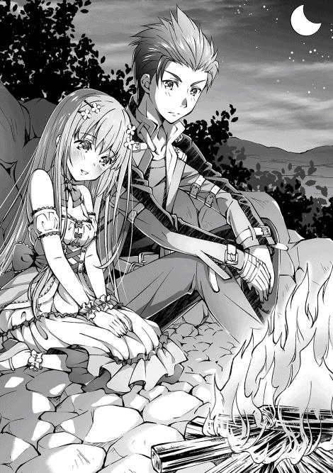
「えっ？ みなさんとご一緒で楽しいですよ！」
テレサはそう答えると、夜空を見上げた。
「ご主人さまと出会って、みなさんと出会って、毎日が楽しいです！」
曇り一つない笑顔で、そう言ってくれた。
「......よかった、楽しんでくれていたんだな」
「えへ、もちろんです」
普段より素直なテレサは、ぎゅっと躰を寄せてくる。
「もっと、ご主人さまを感じたいです......」
心なしか、テレサの顔が先ほどより朱に染まっている気がする。
水浴びの直後のせいか、やたらと色っぽく見える。
......これ、反則だろ......。
ただでさえ、異性と二人きりという状況だというのに、甘えてくるテレサが反則すぎる。
どこまでも柔らかいテレサの肌。そして唇を噛んだ恥ずかしげな表情も、ほんのりと桜色に染まった肌も、今のテレサはすべてが艶っぽくて、否応なくドキドキしてしまう。
「あの、ご主人さまは──テレサのこと、どう思います？」
そこへ、とんでもないことを言い出した。
「あ、ああ。可愛いと思うけど」
「本当にですか？」
「......急にどうしたんだよ」
落ち着かせようとする俺に、テレサが言った。
「意地悪な質問ですよね。ごめんなさい。無理に答えなくて大丈夫ですっ。でも、テレサは敢えてご主人さまに質問したんです。だって」
いつもの引っ込み思案な性格はどこへやら、テレサは俺の手を握ってきた。
大きな瞳は震えているようで、いかに本気かを物語っている。
「記憶を失ったテレサに、こんなにも優しくしてくださったことが嬉しいんです。ご主人さまは、もしかしたら運命の......」
「待て」
「ふえっ？」
月を仰ぐ。
空の端が赤く染まり──。
「来る ！」
炸裂する紅蓮の炎が、グランフェルトの街に襲いかかった。
天上に瞬いていた星明りが、無数の火の粉によって隠される。
直後、はるか彼方から、巨大な何かが崩壊する音がこだまする。
「今の音って......!? 」
「都市を囲む市壁が破壊されたな。それも一か所ではなく、同時に複数箇所から破壊音が聞こえた。竜による突撃か、それとも魔物たちが攻めてきたか」
小さく息を吐き、立ち上がる。
テレサにはスライム化してもらい、頭の上へ。
火を消して駆け出した直後──大気を震撼させる、竜の雄叫び。
「今の唸り声は......！」
リヴが使役する、魔竜の咆哮 であった。
戦いが始まった。
「ご主人さま」
「ああ、わかってる」
たしかな力を込めて応える。
「片っ端から薙ぎ払う。それだけだ」
宣戦布告。
アスモデウスの襲撃へ、俺たちが挑む極限の抗争。
大罪遊戯の始まりだった。
グランフェルトの街を揺るがす鳴動。
灰色の煙から響き渡る魔物の咆哮。
吹きあがる火の粉によって、空は真っ赤に塗りつぶされていた。
建物も、上階部分がないものや、瓦礫の山と化している物が見られる。
騎士団とすれ違いながら、破壊を受けた大通りに出ると──。
何の前触れもなく、幾重もの影が上空を埋め尽くした。
「ワイバーンですっ！」
どの建物よりも上背であり、巨大であるワイバーンの姿を捉える。
その数、七。
次々と空から現れる。
透き通った硬質の翼に、碧の鱗。
大小混じり合うその光景は、餌を見つけた肉食獣のようで。
「餌」
「餌ガ、キタ！」
「殺セ、奪エ！」
「黙れ」
俺は短い口上で開戦の火蓋を切った。
ただ地を蹴っただけで、ワイバーンへ肉迫する。
魔力を込めて、剣戟を振るう。
爆ぜるワイバーンの群れ。
テレサの魔法も炸裂し、災を打ち消した。
「顔も名前も知らない竜に構っていられるか」
昔なら一体でも充分な脅威になるワイバーンが、まるで障害になっていない。
少しは俺も成長したようだ。
「急ごう。このくだらない遊戯を終わらせる！」
「はいです！」
宣言した矢先、爆音が聞こえた。
目の前の壁が勢いよく破壊されたのは、その時だった。
爆風の振動を受けて、都市そのものが微震する。
地面をひっくり返したような振動、それも徐々に大きくなっている。
地震じゃない。
巨大な生物が近づいてくる地響きだ。
直後、巨大な『獣』の爪と牙が、視界を埋め尽くす。
「ふえっ......っ！」
「落ち着け、こいつは魔獣ベヒモスだ。知能も低いし、空も飛べない。アスモデウスに操られたのか」
爆炎に巻かれながら現れたのは、魔獣ベヒモス。
体高八メートル。
全長で言えば俺の三倍以上はある。
俺たちが横歩きするのも大変なのに、煉瓦を削りながら巨体で進んでくる。
「ちぃっ！」
こちらを見るなり詰め寄ってくるベヒモス。
地面を蹴り、一気に肉迫した。飛びかかってくるベヒモスの鼻先めがけて剣を振り上げ、さらに踏み込んで距離を詰める。
「はっ！」
──剣閃。
ゴトリ、と頭が弧を描いて飛び、ベヒモスが凄まじい断末魔を上げた。
「お疲れさまですっ！」
深々と息を吐く。
「先を急ごう」
目にかかった前髪を片手で払い、剣を強く握りしめた。
その刹那。
「......何だ？ 声が聞こえる？」
「ご主人さま？」
風に運ばれてくるのは、誰かの声だ。
身を翻し、駆ける。
火の手の上がるメインストリートを走り抜けて間もなく、見覚えのある狐耳が、踊るように燃えさかる教会の中で誰かと戦っている。
『......ぐずっ......だれっ、かっ......』
──そこからは、幼い少女の悲鳴が聞こえてきた。
「まさか、取り残されているのかっ!? 」
「き、教会が燃えちゃいますよっ！」
紅蓮の視界。
教会が全焼するまで、もう時間がない。
炎に巻かれた壁を強引に蹴り飛ばし、飛び散る火の粉に肌を焼かれながらも、教会の内部へと飛び込んだ。
真っ赤な視界。
その奥に立ちはだかるのは──下級悪魔レッサーデーモン。
「お姉さん、頭を下げてくれ！」
「グラッドさんっ!? 」
気迫とともに、正面から放たれた炎の矢を長剣で受け止める。
牽制の炎の矢は虚しく消滅した。
間合いを一気に詰めると、頭上から低く魔法の詠唱が聞こえた。
「水精氷晶 ！」
テレサの放った一撃が、レッサーデーモンの右足へと放たれる。
致命傷には成り得ないが、不意をついた一撃をまともに受けたレッサーデーモンから、鈍い声が聞こえた。
そこへ、斬撃を叩き込む。
グシャリ。
一瞬にしてレッサーデーモンの頭を断ち割っていた。
「また会えてよかった、お姉さん」
「はい、無事だったんですね！」
お姉さんは安堵したように、短く息を吐く。
その体躯に傷らしい傷はない。
ただし、周囲には何十体というレッサーデーモンの屍が散らばっていた。
......放っといても大丈夫だったか。
俺は内心、ほっとしていた。
「グラッドくん、この娘が危険なのっ！ 逃げ遅れちゃったみたいで！」
「リリス？」
濛々 と立ち込める黒煙を避けるように、リリスも姿勢を屈めていた。
リヴの姿は見当たらない。
「たす......け、て......」
リリスの腕の中に眠っているのは、一人の少女。
十歳に満たない年齢だ。
炎と煙に巻かれて意識も虚ろなまま、掠れた声を絞り出す光景がそこにあった。
「......よし、もう大丈夫だからな。ここは危険だから安全な場所へ移動するぞ」
少女を背負い、外へ向かおうとして──。
「教会が崩れ落ちますっ！」
天井が崩落し、俺たちを囲むように瓦礫と炎の壁が埋め尽くす。
くそっ、脱出路が閉ざされたか。
「わああ、どうしよう!? 」
「このままでは、私たちまで......」
一瞬、脳裏をかすめる最悪の未来。
同時、その危惧を拭い去る高揚が全身を駆けめぐった。
「......諦めるものか」
ただ生贄に捧げられていた頃とは状況が違う。
情けなく泣いていた俺を励まし信じてくれた、かけがえのない存在がいる。
そんな存在が、懸命に戦っているのだから。
「......このままでは終わらせない。俺が絶対、この娘たちを守ってやる！」
剣を構えた。
その時、唐突に空が瞬いた。
見上げれば、黄金の巨竜──。
天を埋め尽くすほどの黄金の翼が、牙が、爪が、全て俺たちへと向けられていた。
「グラッドさん！」
お姉さんの悲鳴に、竜の咆哮が重なる。
瞬間。
その口内に凄まじい雷鳴が溢れ、空気が震える。
......稲妻の息吹だ。
黄金竜の、万物を焼き尽くす破壊の雷。
放たれるまでもなく、ただそこにあるだけで感じる圧倒的な力。
この力を前にしたら、誰でも無条件で理解できる。
赦 しも、抗う意味も、希望すら持てないのだと。
......ギリ。
歯を喰いしばった。
俺は黄金竜に対し一言、告げる。
「命を何だと思っていやがる、竜 共が......！」
ドクンッ!!
俺の意志に、心臓が強く鼓動を刻む。
力が唸る。
魔力が絞られる。
その眼で見ておけよ、悪魔ども。
俺はただ神剣と契約し、運命に蹂躙されるだけの存在じゃないってことを、この一撃を以 て刻んでみせる。
──先代魔王、滅びの序曲を。
「成功してくれよっ！」
稲妻の息吹。破壊を生み出す息吹。
生物に死を与えるために、ただ降り注ぐ。
俺は、一歩進んだ。
全身が生み出す怒りを剣に宿し、雷撃の中へ飛び込んだ。
それが合図となって──。
「劫火一閃ッ！」
ザンッ!!
──瞬間、息吹を生み出していた黄金竜の肉体が塵と化した。
「......ようやく成功したか」
怒りのあまり、全身から血が噴き出しそうになる。
劫火一閃は、大罪神剣がないと使えないスキルの一つ。
だが、神剣が常に手元にあるとは限らない。
だから、俺は剣を振り続けた。
自分の力で、リヴを守れるようになるために。
「今の一撃で瓦礫が粉砕されてるよ！」
「急ぎましょうっ！」
俺たちは教会を走り抜ける。
同時だった。
教会を抜け出すのと、教会が音を立てて崩れ落ちるのは。
「わああ、ご主人さま凄かったです！」
「ほんとだよ！ びっくりしちゃった！」
駆け寄ってくるテレサとリリス。
「悪い、心配かけたな──あ、そこの騎士の人たち、この子を頼む！」
救出した少女を騎士団へ預けた。
「お......兄ちゃ、ん......？」
「助かってよかった。もう大丈夫だよ。あとはゆっくり休むようにな」
薄目を開け、力なく笑う少女に手を振った。
「リヴは？」
「アスモデウスが撤退したので追いかけてます。東へ飛んでいったので、おそらく氷雪遺跡に向かったのではないでしょうか？」
「わかった」
急いで後を追うとしよう。
俺は頭を振ってから、駆けようとした。
「あ、あのっ」
その時、お姉さんが少しだけ大きな声を上げる。
「お二人が姿を消して、とても心配しました。きっと事件に巻き込まれていたんですよね？ 詳しくは後で伺います。私たちは、もう少し騎士団の方々のお手伝いをして追いかけます！」
......心配してくれたんだ。
俺は何だか照れくさくて、その狐耳を撫でた。
「ひゃうぁっ!? 」
「ありがとう。後で、事情は話すから」
お姉さんは尻尾をぶんぶんと振って、慌てていた。
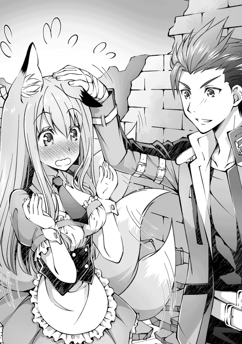
「グラッドくん、それセクハラだよー？」
リリスがジト目で見つめてくる。
「えっ、そうなのか？」
「い、いえ！ グラッドさんなら構いませんから！」
お姉さんは真っ赤な顔でそう言ったあと、俺の腕を両手で掴んで──。
「ここに心配している人がいますから、必ず戻ってきてくださいね」
上目遣いに頼んできた。
その念の押し方が妙に可愛らしくて、俺はつい苦笑いしながら頭を撫でた。
「ああ、もちろんだよ」
「はい！」
剣を握りしめ、俺たちは氷雪遺跡へ急いだ。
色欲の大罪神剣『アスモデウス』を目指して──。
† ׆
氷雪遺跡への道中は順調だった。
馬で移動していることが効いたのだろう。
途中で魔物が焼き払われた痕跡を何箇所か見つけたが、リヴの魔法で間違いない。
「リヴさま、ご無事だといいですが......」
不安な声で言うテレサ。
俺は軽く頷いた。
「何とか大丈夫だろう。でも急いだほうが確実だな」
「そうですねっ！」
「ああ、見えてきたぞ」
俺とテレサは正面に注目する。
──氷雪遺跡。
この遺跡の噂は知っている。
かつて一度、この地方を滅ぼした氷の聖獣が光の聖女によって倒されて、流れ出る大量の血潮が都市遺跡を氷漬けにした、とされている。
以来、氷が溶けることはなく、徐々に外へと侵食しているそうだ。
わりと有名な話だが、本当だったとはな。
しかし。
「あぅ、静まりかえってます......」
異様にひんやりとした空気。
生々しいほどに強烈にたちこめている獣のにおい。
遺跡の入り口は、真っ白なほど凍てついていた。
「不気味な場所だな......」
頭の上で、ぷるん、と身体を震わせて、テレサも呟いた。
「はい、妙な感じがします」
俺は遺跡全体に充満する、魔力を薄めたような、おかしな気配を感じ取っていた。
遺跡はただ、静かに佇む。
どこにでもあるはずの鳥の声も、虫の声すら聞こえてこない。
そのくせ、気配だけはある。
崩落した柱の陰からも、近くの石像からも、すぐそこの遺跡からさえも、異様な者の気配が漂ってくる。
「......こんなに異質な気配を放っている以上、内部にアスモデウスが潜んでいたとしても、これじゃさっぱりわからな......」
俺が言い終わるよりも早く──。
ざわり。
周囲が不気味に歪んだ。
「ふえっ!? なな、なんですか!? 」
テレサが細い悲鳴を上げる。
俺は硬直し、背中に冷たいものが駆け抜けた。
空間が歪み、俺たちを取り囲むように現れたのは氷狼アイス・ヴォルフ。
その数は、軽く十を超えていた。
「はわわ、襲ってくるつもりでしょうか!? 」
「多分そうだろうな」
よく考えてみれば、アスモデウスが遺跡まで移動したということは、リヴを確実に葬るための罠を仕掛けてあるということだ。
おそらくリヴはこの先にいるだろう。
そしてリヴが回避した罠に偶然俺たちが引っかかった、といったところか。
と考えれば、リヴとの距離は随分と近づいている。
ともあれ、まず第一の問題はここをどうやって切り抜けるか、である。
......氷狼アイス・ヴォルフが十匹以上、これは厄介だ。
このアイス・ヴォルフというのは、世間で魔物と呼ばれているものたちの中で、上位に位置する。
竜に比べたら呆気 ないが、彼らは氷の魔法を放ってくる。
さらに肌は鋼のように固く、竜の鱗に準ずる強度を持っているとされている。
むろん倒せない相手ではない。
多少面倒だが、油断しなければ倒せる。
「グルルゥ！」
アイス・ヴォルフたちが、俺たちへにじり寄りながら唸る。
瞬間──。
「ガアッっ！」
唸り声一つで。
無数の白い槍が一斉に構築されて、俺たちに向かって放たれる。
その数、数十本。
「ちぃっ......！」
身をよじって真横へ飛ぶ。
直後に肩を掠っていく白い槍を合図に、俺は疾駆した。
「はあああああっ！」
反射的に飛び込んだ。
どうやら次の魔法までは、ある程度の時間を置かないと発動できないらしい。
「！」
俺は剣で薙ぎ払う。
まずは一匹。
続けて、飛びかかってきたアイス・ヴォルフを蹴り上げて、身体をねじり、左右のアイス・ヴォルフを葬る。
そして、テレサも魔法を唱えて一体を葬った。
残り六体。
人数が不利なことに変わりないが、今ので随分と戦いの流れはこちらに傾いた。
「グルオォォンッ！」
逆上し、雄叫びを上げつつ飛びかかって来るアイス・ヴォルフ。
俺は尚も身を避わしつつ、間合いを計る。
何とか隙を見つけたいところだが......。
アイス・ヴォルフの動きが機敏になった。
爪や牙で襲ってくるだけなら楽なのだが、散発的に魔法を仕掛けてくるのが曲者なのである。
テレサの魔法も命中しない。
アイス・ヴォルフたちのボスが、的確に指示を出している。
魔物はこれだから嫌いなんだ。
「お前らは、眠ってろ！」
剣を振りながら叫ぶ。
さらに三匹を葬ったが、待機していた残りのアイス・ヴォルフが白き槍を生み出した。
その瞬間、テレサが頭からずり落ちた。
「ご、ご主人さま！」
「しまっ──」
叫びかけた俺に、しつこく飛びかかるアイス・ヴォルフ。
白き槍がテレサへと放たれて──。
ゴヴンッ！
その魔法が火炎球に焼かれた。
「今のは......」
叫ぶ俺の目前で最後のアイス・ヴォルフが、瞬時に灰と化し消える。
高位の魔法使いが使う〝紅蓮槍 〟だ。
「待たせたわね！」
言いながら、一人の少女が遺跡から登場する。
......ったく、おいしいところを持っていくな。
肩に魔法使いの外套を身につけた、桜髪の少女である。
動きの止まったアイス・ヴォルフに背を向けて、俺は少女に笑いかけた。
「悪い、遅くなっちまったな。リヴ」
† ׆
「へええええ、やっぱりアスモデウスに捕まっていたのね」
リヴは面白くなさそうに、ぷくっ、と膨れてそっぽを向く。
俺たちは、氷雪遺跡の内部を歩いていた。
天井、壁──あまねく一面に張り付いた氷と冷たい空気のおかげで、さすがに普通の遺跡とは雰囲気が違う。
「あたしは遺跡に入ってすぐ、外からグラッドたちの声が聞こえたの。だから、急いで駆けつけたってわけ」
リヴと俺たちが遺跡に着いたのは、ほぼ同じくらいの時間であった。
途中でアスモデウスに逃げられたリヴは、自分の足でこの遺跡まで歩いてきたという。
「合流できてよかったわ」
「はいっ！ ご心配おかけしました！」
テレサはリヴと視線が合うと、深々と一つ礼をする。
地形探査スキルを使って、奥に向かって歩き続ける。
「妙な空気が漂っているわね」
照明魔法を唱え、ひと息つきながら言うリヴ。
「アスモデウスの罠には気をつけましょう。あたしの後についてきて。あいつを倒さないと、グランフェルトの街はいつまでも魔物に襲われそうだしね」
「──うふふ、そうですわね♥」
遠くで声が響いた。
遺跡の反響で声がこもっているが、あれは──アスモデウス。
「聞こえていますわよね？」
音が反響して、一体どこから聞こえてくるのか──。
しばし沈黙。
危険感知スキルが反応した。
「伏せろっ！」
皆がいっせいに身を伏せたその瞬間──。
陽光などよりもはるかに強烈な閃光が、俺たちの頭上を貫いた。
氷雪遺跡、祭壇の間。
百年も昔に氷の一角獣が倒され、その血潮で周囲を雪と氷の地に変えてしまった都市遺跡。
十二本の支柱に支えられた祭壇の間には、竜神アリエスを模した朽ちた石像がある。
そこに、アスモデウスの姿を見た。
「早かったですわね」
開口一番、アスモデウスが俺たちに向かって告げた。
「魔獣たちがもう少し粘ってくれると思ったけど、期待しすぎたみたいですわ♥」
「あの程度であたしたちを止められると思ってたの？ 随分と甘く見てくれるわね」
「うふふ、そうかもしれませんわね」
リヴの言葉を浴びながらも微笑みは絶やさない。
薄紫の髪をなびかせて、女豹 さながらの黄金色の双眸を向けてくる。
見られている。
ただそれだけで、背中から冷たい汗が流れていくのを感じずにはいられなかった。
「一つ、聞かせてくれるか？」
背中に走る悪寒をこらえ、俺は正面から見据えた。
「お前、何のために戦っているんだ？」
「んー？ くだらないことを考える人族なんか、消えた方がいいからですわよ？」
「くだらないこと？」
「......契約者さんには関係ないことですわ」
大罪と恐れられた悪魔の、拗ねるような拒絶であった。
「リヴちゃん、わたくしは信じていましたのよ？ 必ず仲間に戻ってきてくれるって。でも、最後まで同胞を倒し続けましたわね。そこまで堕ちたなんて悲しかったですわ。かつて親友だったわたくしにも刃を向けましたものね」
リヴと、親友だった......？
「裏切られた。何度も悩んで、悔しくて、戦いたくありませんでしたわ。それでも散っていった同胞のために、リヴァイアサンと戦うことを決意しましたのよ！ だって許せないですわ。穢れた人族なんかのために、偉大なる悪魔を否定するだなんて！」
それが、アスモデウスの戦う理由だった。
かつて親友だったからこそ、苦悩したのだろう。
そして、戦う道を選んだ。
「契約者さんも、わたくしを倒したいのですわよね？ でしたら、さっさと始めましょう──悪魔の殺し合いを!! 」
「グラッド、ここはあたしに任せて！」
叫ぶと同時に、アスモデウスが転移する。
リヴの背後から現れた。
「悲しいですわ！ リヴちゃんは悪魔に戻れないなんて!! 」
対し、リヴも地を蹴っていた。
「アスモデウス、あなたなら真の平和を理解してくれるって信じていたのよ。でも、貴方は最後まで理解してくれなかった......」
リヴが焔の槍を放ち、アスモデウスが氷の剣で対抗する。
爆発。
眩い閃光に包まれる。
「いくらリヴちゃんの頼みでも、それだけは聞けるわけありませんわ！ 人族なんていつだって命を踏みにじる！ リヴちゃんもそうだったでしょう！」
「そう......アスモデウス、まだあの事件 を気にしているのね」
「──っ」
アスモデウスが動揺した瞬間。
リヴの手に燃え上がる魔力が生み出されていた。
「人は愚かよね。あの事件 がきっかけで、アスモデウスは酷く傷ついた。でもね、善良な人だって沢山いるのよ？ その命を奪う権利は誰にもないのよ」
真紅の爆轟──エクスプロージョン。
拡散する熱膨張 の気流が、巨岩をも粉砕する衝撃波となって燃焼する。
「綺麗ごとを......っ！」
アスモデウスの魔力。
拡散する爆風が、ふっと心地よい春風に移り変わる。
魔力へ直接干渉したようだが、間近で見ている俺には理解すらできない次元の戦いであった。
「聖霊たち、お願い！」
リヴの振り上げた足が、地面を踏み抜く。
直後、地鳴りと衝撃が駆け抜けた。
噴き上がる熱風。
何千何百にもおよぶ灼熱の竜がアスモデウスへと迫る。
俺はテレサを熱風から守るように抱きかかえ、その場から離れた。
そして。
「らしくないですわね。大罪の悪魔には魔法が効かないってこと、忘れましたの？」
アスモデウスへ触れる直前で消滅した。
魔法否定──大罪悪魔が身にまとう呪詛の衣。
「その程度の魔力で、わたくしは──」
「あなた、あたしを誰だと思っているの？」
アスモデウスの文句を聞く前に、リヴは跳躍する。
疾 い。
その手には、眩いばかりの灼熱を放つ剣が握られていた。
「望みし狂炎の御剣 !! 」
裂帛 の気迫。
地を、空を裂く一撃。
鳴り響く大破壊音、大気が震えた。
リヴから放たれた極大の熱剣が、目に映る全てを呑み込んでいく。
「っ!? ......かはッ......!? 」
苦悶を隠し切れない顔つきのアスモデウス。
強力な結界を突破され、さらに両腕を焼かれたのか。
リヴの全力が、アスモデウスへ届いたのだ。
「......流石は嫉妬の悪魔ですわね。これで全盛期の力の二割ってところですの？」
「あなたには関係ないわ」
無造作に近づいていくリヴ。
そんなリヴに、アスモデウスは冷たい微笑みで──。
「そう。やっぱり戻れませんわね」
「............？」
「残念ですわね。元の姿に戻れていたら、たとえ本来の力の半分以下でも、わたくしに勝てたでしょうに」
「何を言ってるの？」
「リヴちゃん の敗因は、封印で力を失いすぎたことですわよ？」
アスモデウスから生まれる薄紫色の魔法円環。
複雑多様な円環と文字と、五芒星とを重ね合わせた奇妙な結界。
「人体封縛っ!? 」
結界から生まれた光が、リヴの全身を拘束するように絡めとり──。
「リヴ！」
「来ないでグラ──ぐ......あうっっ......!? 」
俺が駆け寄るよりも先──。
絶叫が響き渡り、リヴが結界の中心で倒れ伏した。
「わたくしでは、リヴちゃんには勝てないってわかっていましたわよ？ ここまで呼び寄せたのも、あらかじめ結界を用意して、対策するために決まっていますわ♥」
地面に倒れたリヴが、妖艶 な笑みのアスモデウスに踏みつけられた。
「我が魂を束縛する愚かな神剣よ、治療なさい」
アスモデウスが短く呪文を紡ぐと、両腕の火傷が回復していく。
何だ、今の......？ 神剣の力を行使したのか？
「さあ、終わりですわよ？」
「......ふざけないで......あたしはまだ、負けてないわよっ......！」
結界の光によって大地に拘束されながら。
それでも起き上がろうと、歯を喰いしばりながら四つん這いで顔を起こすリヴ。
「呆れましたわね、まだ喋れますの？ うーん、危険ですわね。完全に無力化しておかないと、何かの弾みで封縛も突破されそうですわ」
擬縮させた氷。
眩しいほどに輝く超低温の魔法を掌にのせて──。
「とりあえず、ほどよく凍らせて頂きますわね♥」
アスモデウスが手を振りかざした瞬間。
「させねえよ」
リヴが倒れるタイミングで、躍り出た。
両手に握った剣を、強く振りかぶる。
「くっ、契約者さん......！」
アスモデウスの掌に擬縮した氷が、突如として猛り狂ったように膨れあがる。
虚空で蛇の形を描きながら、極寒の一撃が俺へ と放たれた。
「自惚れないでくださいませ！ 大罪神剣のない契約者さんなんて怖くないですわ！」
一瞬の閃光。
視界を光が埋め尽くす。
「グラッドっ!? 」
リヴの絶叫が響き──。
「契約者だから戦うわけじゃない」
反撃。俺は全力で剣を振り下ろし、魔法を弾く。
「リヴと一緒に生きたいから、戦うんだ」
大地を踏みしめ、何の淀みもなくそう宣言する。
......俺はリヴのように強くない。
リヴは人類を守りたいという想い一つで、悪魔と戦うことを決意した。
その背負った重みが今ならわかる。
昔の俺には到底......無理だ。
「だから、俺はリヴの力になりたいんだ！」
「......！」
無理して魔法を弾いた影響か、全身に激痛が走る。
それでも、ここで倒れるわけにはいかなかった。
「かかってこいよアスモデウス、これが最後の勝負だ！」
雄叫びを上げる。
「──格好いい姿を見せつけて、リヴちゃんに認めてもらいたいのです？ うふふ、いじらしくて可愛い子ですわね！」
アスモデウスが嗤う。
「でも、身の程をわきまえなさいっ！」
飛翔するアスモデウスの全身から黒の瘴気が立ち上る。
すべてを塗り潰す荘厳にして絶大なる力。
闇に染まった天上から降りそそぐのは、流星群のごとき石 飛礫 だった。
雨雫ほどだが触れるだけで、すべてが瓦礫と化す。
そんなものを浴びれば、大怪我という言葉では済まされないだろう。
それを──。
「黙れ」
俺は真正面から駆け抜けた。
剣を握りしめ、アスモデウスだけを見据えて駆け抜ける。
「契約者は神剣がなければ力を引き出せませんわ。魔法を弾くのにも限界があるでしょう？」
アスモデウスが、その片手を高々と天へ掲げる。
「星よ、堕ちなさい！」
──流星群。石飛礫がそのまま炎を宿す星となり、そのことごとくが俺を押しつぶす軌跡で落下してくる。
「さようなら、契約者さん。人間にしては楽しかったですわぁ！」
アスモデウスのこぼす微笑は憐憫 か、それとも純粋なる賞賛か。
燃える流星は、俺めがけて墜落。
地上に粉塵が舞い、赤く溶けた溶岩流が天を衝 く勢いで噴きあがる。
──だが、流星の落下位置に俺はいなかった。
「え？」
「魔法の特性を知ってるのに、避けない馬鹿はいないだろう？」
剣を振りかぶる。
だが、それを眼前にしてもアスモデウスの微笑は消えない。
「で？ ただの剣でどうします？ その剣でわたくしの結界を突破できるとでも」
「無理だな」
パキン、と音を立てて砕ける剣。
「最初の一撃で、お前の結界は俺には破れないって分かってた。じゃあどうやってお前に勝つかなんて、最初から決まってるだろ」
アスモデウスの右腕を掴みあげる。当然のように抵抗され、俺は何度殴られても微動だにせず、ただ天井へ掲げるように掴み続けた。
「俺は契約者だ 。神剣と一心同体なんだよ」
足元から輝く発動体。
直後、灼熱の大風が吹き荒れた。
「アスモデウス、これで終わりよっ！」
「リヴちゃん!? わたくしの封縛から自力で突破できるはずは──」
その時、アスモデウスは気付いた。
リヴの隣に立つ小さな存在に。
「ご主人さま、作戦通り に結界を解きましたよ！」
「上出来だ、テレサ！」
アスモデウスの顔が蒼くなった。
「グラッドが、テレサが、みんなが頑張っているのに、あたしだけ寝ているわけにはいかないのよ！」
アスモデウスが目を見開く。
「いっけええええええええ！」
真っ赤な閃光が視界を埋め尽くす。
そして──。
† ׆
氷雪遺跡、祭壇の間。
熱波の残滓だけが周囲に満ちて、大気は不気味なほどの静寂に包まれていた。
「グラッドッ！ どこにいるのよっ！......お願い、出てきてっ！」
必死に声を張り上げるのはリヴだった。
「リヴさま、落ち着いてください！」
「だって、だってぇ......」
リヴは、あたしのせいで消えてしまったかもしれない、と言いたいのだろう。
今頃、そう言いかけた言葉をぐっと押し殺し、泣いているんだろうか。
ま、リヴの暴風によって天井が削れ、俺まで巻き込まれてしまったのだから、そう考えるのも無理はないか。
なら、いつまでも眠っているわけにはいかないよな。
瓦礫から這い上がり、右腕を掴んだままのアスモデウスを引き抜いた。
「......俺たちの勝ちだ、アスモデウス」
煌く月の下、禍々しい瘴気が切り裂かれた蒼空の下で宣言する。
アスモデウスは無言で倒れたまま、微動だにしない。
「ご主人さま、終わりましたね......」
そんなテレサの声すら遥か彼方に置き去りに、リヴは呆然としたような、泣きそうな表情で近寄ってきた
「......グラッド？」
地平線の先に生まれたわずかな朝陽。
その逆光となる形で、問いかけてくるリヴ。
「おう。しぶとく生きてるぞ」
ゆっくりと笑った。
「......グラッド。アスモデウスに......？」
勝ったのね。
そう口にしようとしたのか、リヴは唇が震えて言葉にならなかったようだ。
かける言葉も容易に浮かばなくて、俺はじっと見つめるだけで精一杯。
「ま、倒したのはリヴだけどな。俺もちょっとは頑張ったんだぜ」
──全身火傷だらけの満身創痍 。
こんな姿になっても気丈に笑ってみせたのは、なぜだかわからない。
足取りが軽くなった。
「............」
無意識のうちに、俺はリヴの頭にそっと手を置いていた。
我知らずのうちに高鳴っていた胸の鼓動。
──必要とされることが嬉しかった。
大罪の悪魔が始めた最悪の戦争。
三百年前に起きた人類と悪魔の戦い。
過去の亡霊。
それらの戦いに終止符を打つべく必死に抗い、傷だらけになって戦うリヴの役に立てたことが、こうも胸を熱くするとは思わなかった。
「リヴ？」
「............」
ふらふらと抱きついてくる。
リヴは、嗚咽 交じりの声で言った。
「心配、したんだからね......あたしなんかのために......無茶......許さない、から......」
無言で顔を押し当ててくる。
「............悪い、それだけは約束できないな」
「............馬鹿。本当、馬鹿」
俺のしていることは、愚かなのかもしれない。
でも、考えても仕方ないことだ。
無茶をしなければ守れない存在が、目の前にいるのだから。
† ׆
氷雪遺跡、祭壇の間──。
リヴがアスモデウスと二人っきりで会話したいと申し出て、一時間が経過した。
「何かあったのでしょうか」
テレサが心配そうに見守っている。
俺も流石に長すぎる気がする。
そう考えて、リヴのほうに振り返ると、
「──うるさいわね、その口を縫 い合わせるわよっ！」
......物騒な言葉が聞こえる。
声をかけるべきか悩んでいると、向こうが俺に気づいた。
「......グラッド」
はっとしたようにリヴが俺を見る。
会話していたはずのアスモデウスは反応を示さず、暗い顔で俯いていた。
少し考えた様子を見せてから、リヴが唐突に言った。
「グラッド、アスモデウスと話をしてみて！」
「は？」
何を言いたいのか分からない。
が、その表情はかつてないほどに真剣だった。
「ねえ、もう忘れちゃったかもしれないから、もう一度だけ言っておくわ」
リヴは叫ぶように、アスモデウスに向かって言った。
「あたしはあたしよ。生まれた時から、平和で楽しい人生を送ってやるって決めてるの」
俺たちは、口を挟まずに見守った。
「胸張って生きたほうが絶対楽しいわ。まだあたしを友人だと思うなら、忠告と受け取って欲しいわね」
そう言って、リヴはリリスたちの傍まで戻っていった。
俺とアスモデウスを残して。
「......今さら、ずるいですわ......」
バツの悪そうな顔で視線を逸らすのはアスモデウス。
彼女の身体には傷一つない。
リヴの魔法に巻き込まれた時の怪我は、とっくに治療済みだ。
──アスモデウスは自分の敗北を素直に認めた。
「なあ、アスモデウス」
俺は隣に腰かけた。
「あの事件 って何だ？」
「......どうして、そんなことを聞きますの？」
「さっき俺が戦う理由を尋ねた時、お前の様子が変だったから、かな」
「......へえ、ちゃんと観察していますのね」
そういうことになるのだろうか。
ぽつりぽつりと、アスモデウスが語り出した。
「......理解に苦しむ事件ですわ」
天井を仰いだ。
「断罪戦争が始まる前、わたくしと仲良くしてくれた人間がいましたの。でもね、巫女として生贄に捧げられちゃいましたわ。そのせいでわたくしは人間が嫌いになりました」
「......それで、人間を滅ぼすって決めたのか？」
「半分は正解ですわね」
「というと？」
アスモデウスは押し黙ったあと、絞り出すような声で言った。
「......先代魔王様の妾 の子ですの、わたくし」
そいつは、気づかなかったな......。
「そんな生まれだから、色々な人に疎ましがられて」
溜息を吐くアスモデウス。
「わたくし、大罪の中でも最弱なのですわよ？ それでも先代魔王様は選んでくれた。わたくしの父親として......いえ、わたくしの魔力を目当てに」
まったく面白そうには見えない、乾いた笑みを浮かべながら彼女は続ける。
「わたくしが悪魔として、前線の戦力として」
魔王の家の事情なんて、俺には遠い世界の話だ。
だが、こいつはくだらないことに巻き込まれているんだな、ということは理解できた。
「本当はリヴちゃんの言葉が正しいってわかっていましたわ......でも、引き返せないですもの。先代魔王の娘として生まれたからには、悪魔のために戦うしかないですもの......」
さっきから後ろ向きだな、という軽口は胸にしまっておく。
代わりに、素直な感想を述べた。
「くっだらねえ」
「......え？」
なるほど、この様子じゃリヴも怒るわけだ。
「そんなことをして何が楽しいんだ、お前？」
「何がって......」
「俺はリヴと契約ができて良かったと思ってる。辛いことがあっても、悪魔が襲ってきても、あいつが笑ってくれると嬉しくなる」
それが俺のやりたいことだから。
「お前も血筋なんか忘れて、やりたいことをやれよ」
そんな権利が自分にあるのか、と。
そういう顔でアスモデウスは呆然としている。
幼い頃からの経験が、彼女にそんな強迫概念を植えつけてしまったのだろう。
仕方ない。自分で自分の価値を認めることができないのなら。
誰かがそれを認めることから始めるしかあるまい。
「......それが難しいっていうなら、そうだな」
俺は言った。
「お前は俺のために生きろ」
「......へぁ？」
アスモデウスがぽかんとして、間の抜けた声を出した。
うん？
何か言葉が足りなかったか。
言い直しておこう。
「ええとだな、俺はお前のことが嫌いだ」
「え、ええ」
「都市が襲われ、家を失くしたやつらだっている」
「そう、ですわね」
「でもリヴがお前を生かした。何でだと思う？」
「何でって......」
「少なくともこの世で一人、お前のことを必要としているやつがいるってことだ」
アスモデウスが驚いたように顔を上げた。
「お前が自分を信じられないなら、まずは俺の信じるリヴを信じてみろ」
「そして俺を信じろ。リヴの信頼に応えられるように生きろ」
俯いていたアスモデウスは突然、ぽろぽろと涙をこぼした。
小さな体に秘められた氷が、解けているようだった。
「......契約者さんは、いつもそんなことを平気で言ってますの？」
彼女は顔を上げ、目を瞑りながら囁いた。
「......リヴちゃんを認めることはできませんわ。でも、実力で勝てないから大人しく引っ込んでいてあげますの」
「ったく、素直じゃないな」
ばつの悪そうな表情で苦笑するアスモデウス。
そんな彼女を前にして、遠くでリヴが笑顔を浮かべていた。
「契約者さん。これからもリヴちゃんと末永くお幸せに──」
そう言いかけた時だった。
背後に感じた強烈な気配に、俺は振り返った。
「やはり裏切りましたか、アスモデウス様 」
いつから傍観していたのか。
片手で黒十字の巨剣 を担ぎ、身に着けた黒衣を冷気で揺らしながら、薄笑いを浮かべて立っている。
──先代魔王の腹心、忠義のベアトリクス。
「先代魔王様は、アスモデウス様が悪魔を裏切るのではないかとご心配されておりました。貴方様は優しすぎる。グランフェルトの街へ襲撃をかけたかと思いきや、戦力も不十分──まるで、人間に敗北することを望んでいたみたいですね」
「ベアトリクス、貴方......最初からわたくしを監視していましたのね」
「ええ、先代魔王様は実の娘であろうと、悪魔を裏切るなら始末しろと命じられました」
虫を殺さないような顔のまま、立て続けにベアトリクスは魔法を放った。
「くっ！」
リヴが立ちはだかるが押されている。魔法否定では防ぎきれない。このままじゃまずい。
「契約者さん、お下がりになって！」
「アスモデウスっ!? 」
彼女が俺たちの前に立ちはだかり、その瞬間──。
「リヴちゃん、良きパートナーと巡り合えましたわね」
アスモデウスの固有結界が砕ける。
「ちょっと、アス──」
声が届くよりも、早く。
俺たちを庇い、両手を広げて立ち塞がったアスモデウスに魔力が襲いかかる。
「──最後に、これなら......わたくしも、格好いいですわよね？」
風が舞い、遺跡が崩壊する。
「リヴちゃん......、契約者さんと、お幸せにですわ......」
彼女は最後に笑って。
俺も、リヴも、テレサも、笑えなくて。
「......Arrivederci 、今まで、ごめんなさいですわ......」
一直線に放たれた魔法は、アスモデウスの胸を貫いていた。
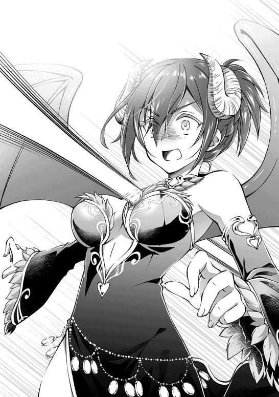
「アスモデウスッ！ う、嘘でしょ......？ あなたがこんなところで......うぅ......ひっく......うぅ、あ、あああああああっ......」
まるで時間がゆっくりと流れているかのように、永遠にも感じられる苦痛。
俺は、息を止める事しかできなかった。
「アスモ、デウス......？」
たしかにそこにいるのに、ぴくりとも動かない。
アスモデウスが散って。
ベアトリクスが嗤って。
リヴが泣き叫んで。
「ご、ご主人さま......？」
その時だった。
黒い衝動が込み上げた。
「......許さねえ」
何だろうな、この感情。
悲しくて、辛くて、怖くて、憎らしくて、複雑な感情の渦に心が押しつぶされそうだ。
ただ、一つだけわかることがある。
それは。
「てめえは絶対に許さねえッ！ ベアトリクス!! 」
俺が、本気で怒っているということだ。
† ׆
俺が身構えるよりも早く。
忠義の悪魔ベアトリクスは、己の巨剣を高々と天井へと向けた。
「破壊の禁章・天剣ミカヅチ」
蒼白に輝く遺跡の内部が、一瞬にして黒に塗り替えられる。
「これは......!? 」
黒に侵食される光景を前に、俺は慌てて飛び退いた。
「け、結界です！ テレサたちを逃げられなくしたみたいです！」
「ええ、折角の殺し合いに余計な手出しをされては興ざめです。馬鹿なアスモデウス も始末しましたし、もはや内からも外からも、出入りは断たれたと知りなさい」
轟音を響かせて床を蹴りつけるベアトリクス。
その音が俺の鼓膜に届いた時には、ベアトリクスの姿はリヴの眼前まで迫っていた。
「さらばです、嫉妬のリヴァイアサン！」
ベアトリクスの巨剣が、稲妻を宿した。
しかし、リヴは動かない。放心状態だった。
「アスモ、デウス......」
リヴは泣いていた。悲しんでいた。応戦できるような状態じゃない。
アスモデウスが亡くなり、心を痛めたのだろう。
そして、それこそがリヴの心の弱さを見抜いたベアトリクスの作戦だったに違いない。
最初から、俺たちは掌の上で踊らされていたのだ。
それを理解した瞬間、怒りが込み上げた。
「ベアトリクスッ!! 」
真下から拳をすくい上げ、巨剣を殴りつける。
その拳が直撃した瞬間、雷属魔法の魔力と見えざる何かが俺とベアトリクスの間に閃光となって瞬時に分解、無数の粒子と化していく。
「俺の拳を、ただの素手だと思うなよッ！」
「ほぅ」
拳と巨剣の打ち合い。
無茶と思える劣勢の攻防は想像通りで、俺の肉と骨を容赦なく砕いていく。
意識が飛びそうになるが、吹き飛ばされるわけにはいかない。
「......負けられねえ」
絶対、勝たなければならない。
俺は嫉妬の大罪リヴァイアサンの契約者だ。
リヴのおかげで、生き延びることができた。
もう一度、この腐った世界を生きてみようって思い直せるようになった。
それなのに、まだ何の恩返しもできてないんだ。
「このまま、終われねえんだよ！」
思い出すのは過去の記憶。
『ねね、ここから出たいと思わない？』
リヴが助けてくれた。
『契約者さん、お下がりになって！』
アスモデウスが庇ってくれた。
『グラッド？ もし、君に守るべき人ができたら──......』
あの人 が、俺を心配してくれた。
いつも、誰かに守られてばかりだった。
俺を助けてくれた人たちに追いつこうと思っても、いつも遥か高みへと進んでいる。
惨めだった。
男なら、泣いている女性を守ってやりたいじゃないか。
それなら、どうして俺はこんなにも弱いんだ。
リヴを支えなくちゃいけない時に、何をしているんだよ。
これが俺の覚悟なのか？
誰も助けることすらできず、目の前で惨殺されるのを指を咥えて見ていろっていうのか？
「ふざけんな、諦められるかよ！ 俺はまだ何もしてねえじゃねえか！ 動け！ 動けよ！ 動きやがれ！ 動けよ、動けッ!! 」
無慈悲な運命が待ち受けているならば、抗ってみせる。
今、ここで──証明してみせる。
「愚かですね。自ら死へと急ぎますか。それなら──」
刹那。
「開け、冥界の魂よ」
ベアトリクスの巨剣が、赤黒い輝きを生み出す。
「秘剣──」
片手を振り上げるベアトリクス。
強烈な不可視の魔力が放出されるのを、俺は感じた。
「──覇月」
同時だった。
ベアトリクスは柱があった高さまで跳躍し、俺がそれに向かって拳を振り上げる瞬間が。
──血塗れの拳。
──雷撃の刃。
天から振り下ろされた無数の刃と、地から振り上げた拳が正面から衝突。
その余波で生まれた衝撃の渦が大気をふるわせて、氷雪遺跡いたるすべての壁面に亀裂が走る。
「全員、まとめて消え去りなさい！」
魔力が俺の身体を突き破った。
そう認識した直後には、全身が激しく熱を高ぶらせる。
あいつらを守るんだ......。
リヴを、テレサを、殺させるかよ......。
無意識の内にそう誓った瞬間、右腕が一瞬ブレる。
気づいた時には走っていた。
そのままリヴとテレサを抱きかかえた。
「......は？」
ベアトリクスが、間抜けな声を上げる。
「グラッ、ドッ......？」
リヴは我に返ったように俺の顔を直視した。
「ご主人さまっ!? 」
テレサの瞳が大きく揺らいでいる。
「......大丈夫か？ 怪我はないよな......はは、無事でよかった、ぜ......」
そんな二人に、俺は鮮血を噴き出しながら笑いかけた。
仰向けに倒れ、一瞬だけ痙攣 したことは理解できた。
間に合ったようだ。
「......何で......」
ただ一つ。
何よりも熱い衝動が俺を突き動かした。
それはかつて経験した覚えがないほどに強い自責の念だった。
「無事って......グラッド、血、血がいっぱいでて......駄目よ、死んじゃうじゃない！」
「す、すぐに止血をしないとまずいですよ......！」
真っ青な表情で治癒魔法をかけてくれるリヴ。
涙をこぼしながら自分のスカートを布の代わりにして、止血するテレサ。
怒っているような、心配しているような、そんな表情が入り混じっていた。
「どうして庇ったの!? あたしは悪魔で、生きていたらみんなを不幸にする存在なのよっ！ あたしといればみんなに悪いことが起きる！ だから、グラッドは無理しないで......！ ベアトリクスに殺されちゃう......」
悲痛に震える声で、俺の顔に手を伸ばそうとするリヴ。
俺はその手を振り払った。
「リヴ......もう、無理しなくていいんだ......！」
その小さな身体を、おもいっきり抱きしめる。
治癒魔法のおかげで、少しだけ身体が動くようになってきた。
「む、無理なんて、何も......」
「何言ってやがんだ。孤独が人一倍嫌いなのに、自分だけ犠牲になろうとするんじゃねえ！」
俺は知っている。知っているんだ。
リヴが笑うのは、恐怖から己を欺くためだってことを。
「俺はな、リヴから受けた恩を忘れて逃げるほど──」
頭に手を添えながら、言ってやった。
「腐っちゃいねえよ」
狼狽しているベアトリクスが、声を漏らした。
「......まさか、先ほどの一撃に耐えたというのですか？ たかが人間が？ そんな馬鹿なこと、あるはずがない......ありえない......!! 」
取り乱すベアトリクスに、俺は言った。
「俺にとってのリヴはな、デカい奴なんだよ。今までの人生を塗り替えて、新たな目標を教えてくれた恩人なんだ」
ゆっくりと振り返る。
「どれだけ救われたと思ってやがる」
拳を握った。明確な敵意を向けて、ベアトリクスを睨む。
「どれだけ感謝していると思ってやがる」
リヴは目にいっぱいの涙を浮かべて、涙腺を決壊させていく。
彼女はいつもそうだ。
自分のことに鈍感で、馬鹿みたいに他人に依存する癖に、俺が傷つけば、いつも泣いていやがる。
俺はな、もうそんな顔は見たくないんだよ。
「リヴは俺のすべてだ。俺はリヴのために生きると誓った。救いを求めているなら俺がどうにかしてやる。辛いことも、悲しいことも、俺が引き受けてやるよ」
そのためなら、喜んで悪魔と戦ってやるよ。
今度は俺が、リヴの道標になる番だ。
「......だから笑っててくれ。俺が必ず、生きててよかったって思わせてやるから」
と、リヴが背中に手を回して抱きついてきた。
「ぐすっ......自分の問題に、一番ビビってるあたしが......馬鹿、みたいじゃない......」
「はは、そうかもな」
髪を掻き上げてやる。
ふわっと、彼女の匂いが漂った。
「ここから始めてみる......グラッドと、一緒に歩くために」
不意に、頬に感じる温かな感触。
それがリヴの唇だと気付いたのは、すぐのことだった。
「大好き」
リヴは顔を綻ばせて、にこりと笑っていた。
──どくん。
心臓が高鳴った。
内側が熱くて、強い何かが湧き上がる。
▼Abilities：「焔帝開花」が解放されます。
この力はいったい......？
「あたしの力の一部が復活してるみたい......でも、どうして......？」
直後、リヴの身体が紅蓮に燃え上がり、刃渡りの長い巨大な剣へと姿を変えた。
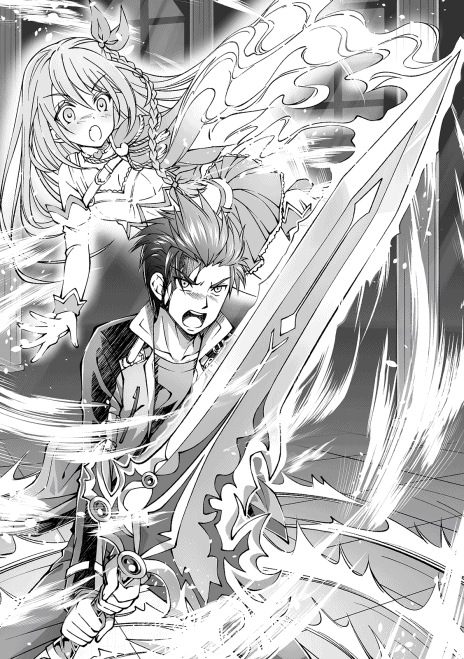
どこか懐かしくて、力強くて、尊い感覚がする。
「......まさか、神剣が新たな力を発現させたというのです？ そんな馬鹿なことが......!? 」
ベアトリクスの戸惑う声音。
同時に、俺の右腕に巻かれていた包帯が千切れていく。
聖痕が激しく輝き、さらに複雑な紋様を描いていた。
怪我が癒されていく。
嫉妬の大罪神剣『リヴァイアサン』
▼Unique Abilities
・大罪ランク ： 第３位階級
・断罪レベル ： ２
・スキル吸収 ： 魂の残留思念を己の力へと変換する。
・魔法否定 ： 契約者をあらゆる魔法から身を護る加護。
・経験発現 ： 成長限界を解き放ち、成長速度を数千倍に増加させる力。
・焔帝開花 ： 神剣・第二段階の解放。
人は脆くて、儚い生き物だ。
どんなに力を持とうとも、複数の命を持って生まれてくることはない。
リヴが、呆気なく封印されたように。
アスモデウスが、地に伏せたように、例外は存在しない。
まして、人間は能力的にも論外だ。天使や竜、悪魔のような圧倒的な存在とは違う。
いずれ、俺も亡くなる日が来るだろう。
リヴが幸せになれる時まで、生きられるだろうか？
笑っていられるだろうか？
それはわからない。だが、わからなくても。
「......俺は、それでも守るって決めたんだよ！」
抑えきれぬ衝動が、喉を突き破って外に出た。
唇をかみしめて。
爪が掌に食い込むほど堅く拳を握りしめて、未来を夢見た。
唯一無二の仲間と共に。生き抜いてみせる。
「強くなるさ。誰にも負けないくらいに、リヴもテレサもリリスもお姉さんも、周りのすべてを守れるくらいに！」
もう二度と、後悔したくない。
もう二度と、誰も失いたくない。
そのために、神剣を鋭く構える。
眼前に立ちふさがるベアトリクスに向かって宣言した。
「かかって来いよ、忠義の悪魔 。俺の誓いと願い、そしてこの大罪神剣......今ここに契約者としてお前を討つッ！」
「人間風情が嗤わせてくれますね！」
ベアトリクスの背後から、感知不能であろう魔力が展開される。
圧倒的な破壊の魔力──。
「どうしてだろうな。もう、負ける気がしねぇよ」
と同時に、俺は傷だらけで遺跡を駆けた。
一直線。
何の仕掛けもなく、小細工もなく、ただベアトリクスに向かって。
そして、一瞬だった。
「水精氷晶 ！」
肩に掴まるテレサの声が、ベアトリクスの魔力を打ち消した。
「心のままに剣を振って！ 新たな魔法を教えてあげるわっ！」
轟、っと燃え上がる火柱。
リヴを握ったまま声に突き動かされ、疾走 りながら身を屈めた。
......感じる。彼女たちの存在が、俺の背中を後押ししてくれる。
命の息吹を受けた走り。その力強く蹴りつける疾走が、ベアトリクスの放つ高速剣技を紙一重で避わすことを可能にしていた。
「炎を嫌わないで！ 炎を使役するんじゃなくて、炎と一つになる極意よ。それを受け入れた時、グラッドは何よりも強い存在へと変わるから！」
黒十字の巨剣による雨のような斬撃。
風を切り裂き、大地を震わせる。
対して、俺はリヴの息吹に刃の流れを任せ、ただ無心で剣を握った。
「──天高き・躯 の集い・赤き炎となれ──」
紡ぐのは、新たなる力。
「鳳凰烈火！」
「秘剣覇月！」
俺とベアトリクスが交差する。
「──っ」
煌く黒十字の巨剣が肩先を掠めていく。
左肩から全身を伝っていく超高熱と激痛。
それでも、俺は止まれなかった。
左肩から噴き出す鮮血に目もくれず、ベアトリクスへ紅蓮の神剣を振るい続ける。
「私が、人間に敗れるというのですか......!? 」
ベアトリクスは、息が詰まるほどに声を張り上げる。
焦りと疲労で浮かぶ汗を拭うことも忘れ、怯えていた。
灼熱の風に白髪をなびかせて。
その手で、どれだけの命を奪ってきたんだろうか。
「覚悟はいいか、ベアトリクスっ！」
ベアトリクスからは先ほどまでの見下しきった感情は一辺たりとも見られず、今はただ震えている。
俺は一気に距離を詰めて、煌く神剣を振り落とした。
触れる剣先。怯える悪魔。確信した勝利──。
これで、終わりにする。
「劫火──一閃っ！」
神剣が生んだ断罪の刃は──。
忠義のベアトリクスの体を、ものの見事に断ち割っていた。
「こんなはずでは、なかった......」
ピシリッ、と黒十字の巨剣に亀裂が入り、崩壊音が響き渡った。
まるで硝子が砕け散るように、無数の輝く破片となって消えていく。
やがて、地に崩れたベアトリクスの肉体も同じく薄らいで。
最後には、空気に融和するようにして消えていった。
▼Skill：『第二秘剣・覇月』を修得しました。
▼Skill：『天剣ミカヅチ』を修得しました。
† ׆
ベアトリクスが消え去って、氷雪遺跡には本来の静けさが戻っていた。
結界が消失したのも、まさにその直後のことだった。
「グラッドさん！ 先ほどから凄い衝撃が......アスモデウスッ!? 」
「は、離れないと危ないよっ!? 」
堰 を切ったように雪崩れ込んでくるのはお姉さんに、リリスの姿まで。
「ど、どうしてアスモデウスが倒れているんですか!? それに、この破壊痕はいったい......」
「あー......まあ、話せば長くなるんだが」
忠義の悪魔は肉体を失って、たったいま跡形もなく消滅してしまった。
「リヴちゃん、もしかして......アスモデウスにヒーリングしているの？」
「グラッドさん、これは......いったいどういうことですか？」
「事情は話すから、まずはアスモデウスを助けるのを手伝ってくれ」
慌てて鉄球を収めたお姉さんは、片膝をついたまま治癒魔法を発動させているリヴの横へと駆け寄った。
リリスはテレサと一緒に止血を行っていく。
......心臓を貫かれたんだ。
......そんな大怪我を、俺たちが治せるだろうか。
薬剤調合でありったけの薬を作っていくが、結果は変わらないだろう。
それでも今は信じて、すがるしかない。
アスモデウスが助かるという未来。
その願いは──。
「......ん」
奇跡。
まさしく『運が味方した』という言葉の体現のごとく。
彼女 が、意識を取り戻した。
「アスモデウス！」
「リ、リヴちゃん？ わたくし、死んだはずじゃ......」
「グラッドのおかげよ！」
「契約者さんが？」
状況を確認して、虚ろだった意識が一気に覚醒したようだ。
俺に視線を送ってきた。
「お前、リヴとの戦いで、神剣の力を使って傷を癒していただろう？」
「え、ええ......神剣の力を解放しましたけど」
「アレを見て思ったんだ。神剣って生きているみたいだな、って」
「神剣が、生きている......？」
今回の戦いを通して、俺は確信した。
大罪神剣は生きた剣に違いない。
リヴやアスモデウスといった悪魔の魂が込められているから誤解を生むが、神剣はリヴたちを守るかのように力を与えてくれる。
まるで、母親が子供を守るかのように。
そんなわけで、俺は先ほどからアスモデウスの中にある神剣へ語りかけていた。
早く助けないと、お前の主人が死んじまうぞ──ってな。
そして。
その時、たしかに聞こえた。
幻聴じゃなくて、たしかに聞こえたのだ。
『私を呼んでくれたのは貴方ですか？』
──神剣の声が。
そんなわけで、アスモデウスを助けたのは俺たちじゃない。
皮肉にも、アスモデウスの魂を封じ込めている──大罪神剣だ。
「忌むべき神剣が、わたくしを守ってくださったなんて......」
アスモデウスは複雑な表情を浮かべているな。
「ま、それよりも、かけてやる言葉があるんじゃないか？」
リヴが、アスモデウスを見つめていた。
「そう、ですわね」
アスモデウスは、少し気恥ずかしそうに視線を逸らしてから言った。
「ただいま、ですわ」
涙ながらの明るい台詞を前にして、リヴもまた、満開の笑みを見せる。
テレサも、リリスも、お姉さんも、顔を優しくほころばせていた。
そしてアスモデウスは、意を決したように宣言した。
「責任は取らないといけませんわよね」
今、この瞬間の喜びを。
アスモデウスはきっと、生涯忘れないだろう。
気づけば。
空は黄昏 に染まり、どこまでも続いていた。
聖アスタリア共和国、グランフェルトの街への襲撃事件。
リヴたちの活躍により、最悪な結末の憂き目を逃れたこの事件は、関わった相手が大罪の悪魔ということもあり、社会的不安に対する影響を考慮されて内密に処理された。
街に刻まれた数々の破壊の傷跡も、王都が全面協力で復興に取り組むことが発表された。
共和国天馬騎士団が総力を上げて徹底的な情報統制を敷いた結果、グランフェルトの街でこの事件の顛末を知る者は当事者である俺たちと、ごく一部のお偉いさんしかいない。
もちろん、全てが闇に葬れたわけじゃない。
かつて世界を襲った伝説の大罪級悪魔が復活したことや、神剣を巡って激しい戦いを繰り広げた青年がいるらしい......など、そのような出所不明な様々な噂が真しやかに囁かれていた。もっとも、一か月もすれば飽きられる程度の噂だが。
事件の当事者であるアスモデウスが教えてくれたが、グランフェルトの街を襲撃したのはベアトリクスによる指示だったらしい。城壁などを攻撃したのも直接的な被害を減らすためらしく、どうにも本気で街を消すつもりがあったのかは些 か疑問が残った。
とりあえず、グランフェルトの街には以前と何ら変わりない、平和で退屈な日常が戻ってきた。
そして──。
† ׆
ある晴れた日の午後。
二つの大罪神剣と関わってしまった俺は、街を歩きながら、ふと、今回の事件を振り返っていた。
リヴとアスモデウス。
事件発生の当事者でもあり、事件解決の功労者でもある二人の存在は、共和国政府の上層部に感づかれつつあり、俺はこっそりと素性を探られていた。
幸いにも、浅からぬ縁がある商業都市の領主や白猫シュシュの暗躍があったおかげで、追及はすぐに消えた。
そして事情を知る側として、大罪神剣の存在は今後も隠す必要があると改めて自覚した。
「まったく......命が幾つあっても足りないな」
とは言え、これが俺の望んだ道である。
悪魔だろうが大罪だろうが、リヴはリヴだと思うし、アスモデウスが先代魔王の娘と知ったところで、俺は憎みも敬いもしない。
全ては今まで通り。
俺が気楽に考えていた、その時である。
「これでお別れですわね」
隣を歩く声に応じ、俺は振り返った。
そこには、どこか機嫌の良さそうなアスモデウスがいた。
「先の一件でわたくしは罪滅ぼしをしなければなりませんわ。もしかしたら、もう二度とお逢いできないかもしれませんわね」
「ん？ アスモデウスは転移できるんだろ？ 会いたければ会いにくればいいんじゃ？」
「うふふ、それも素敵ですわね♥」
アスモデウスは嬉しさ半分、寂しさ半分といったところだ。
少しだけ照れくさそうに頬を掻く。
「わたくし、本当は処罰を......受けるべき身なのですわ。契約者さんが何も言わないでくださったから、奇跡的に助かっただけに過ぎませんの。ここでわたくしが王都へ出向いたとしても、お父様──先代魔王が出向くかもしれませんし」
「そうかもな」
「それに......」
アスモデウスは、まるで父親を慕うに温かな微笑を浮かべた。
「......見てみたくなりましたの。断罪戦争で悪魔が敗北して、世界はどんな方向に向かっているのかを。わたくしたちの戦争に意味があったのか、確かめてみるのも面白そうじゃありませこと？」
それを聞いて、俺も微笑で返した。
「そうか。頑張れよ」
「......はい、契約者さん」
互いに笑みを交わし合う。
と、そこに桜髪の少女──リヴが割って入った。
「ちょっと......最初からずっといたのに、あたしが入れる雰囲気じゃないんだけど......」
「うふふ、リヴちゃんは相変わらず嫉妬深いですわね♥」
「い、いや......ち、違うからっ！ これは嫉妬じゃなくて、その......女の子として、兄を奪われそうな心境っていうか......その......うぅ......」
リヴは虚空に視線をさまよわせ、長い髪を指でくるくると弄びながら呟く。
切り傷でも負っているのか、その指にはなぜか絆創膏 がいくつも巻かれていた。
「......でも、今回の件で先代魔王も本格的に動き始めるはずですわ」
「戦力はどのくらい残っているんだ？」
「殆どありませんわ。わたくしとベアトリクスという手駒を失いましたもの。だから、他の大罪神剣の復活を急ぐかもしれませんし、大罪遊戯の計画を再検討というのもありえるかもしれませんわね」
そう、アスモデウスの言う通りだ。
今回はベアトリクスと戦い、勝利したとはいえ、先代魔王は滅びていない。
いまだ沈黙を守ったままの先代魔王が動き出さない、という保証もないわけで。
すべての解決には、神聖樹に向かうしかないのだ。
「あ、そうですわ」
アスモデウスは、懐から小さな革袋を取り出して、俺に手渡してきた。
「ご迷惑をおかけしたお詫びですわ」
リヴが袋の中身を覗き、
「......綺麗な砂利ね？」
「オリハルコンですわよ」
「へえええ、これが──......」
リヴが停止する。
............オリハルコンだって？
「オリハルコンって、あの伝説の鉱石よねっ!? 」
「そうですわね。神聖樹では腐るほど取れましたけど」
「......嘘でしょ」
......マジかよ。
袋はそれほど大きくないが、中には砂利ほどのオリハルコンがぎっしりと詰まっている。
おそらくこれを売るだけで、金貨が軽く数百枚は手に入るだろう。
「本当に貰っていいのか？」
「ええ、構いませんわよ。それに、契約者さんにはいずれ、色欲の大罪神剣の契約者となって頂く予定ですから♥」
「ああ──って、急に何を言い出すんだか」
アスモデウスは嬉しそうに両手を頬にあてると、嬉しそうに身体をくねらせた。
「そうよ、アスモデウス......命の保証はしないわよ？ 」
「うふふ、リヴちゃん......冗談だといいですわね？ 」
二つの神剣少女から激しい火花を感じ、たちどころに騒がしくなる。
最近、この風物詩となりつつある光景を見るのが定番だった。
「やれやれ......純粋なのは羨 ましいな」
呆れ半分、苦笑半分で、俺は騒ぎを遠巻きに見つめていた。
やがて争いも終わり、
「それでは、わたくしはこれで......あ、リヴちゃん」
「なぁに？」
「......再会できてよかったですわ」
アスモデウスはリヴを優しく見つめて、満足そうに背を向けた。
「またですわ、どうかお元気で」
「もちろんよ。旅には気をつけてね」
抜けるような青空の下で。
アスモデウスは、通りに増え始めた人々の中へと消えていった──。
† ׆
グランフェルトの街、宿屋『ミランジェ』。
彼方に沈んでいく赤い夕陽を眺めながら──。
「あっ、温泉にまだ入ってないよ！」
リリスが、ぽん、と手を打った。
「立て続けに事件が起きて、すっかり忘れていましたね」
さっと立ち上がるお姉さん。
「行きましょう。温泉付きの個室ですから、気兼ねなく浸かることができます」
「待ったお姉さん。俺の性別を考えてくれ」
「はい？ 男性ですよね。何も問題ないのでは？」
「いやいや、問題しかないだろう。温泉ってそもそも男女別に入るもので──」
「それなら心配には及びませんよ？」
いたずらっぽい笑みでウィンクしてみせる金髪の妖狐。
「水着を用意してありますから」
「......水着？」
「はい」
俺の腕を掴んで、そのまま有無を言わさずお姉さんが歩き出す。
「さあ行きましょう。リリスさんと三人で、ゆったりと湯船の中で......」
「ちょっと待て!? 俺に何をするつもりなんだ......」
「わー、楽しそうだね！」
リリスにも背中を押されて、俺は温泉まで引きずられていった。
† ׆
客室に併設された温泉。
露天風呂に濁り湯が湧き出す光景を前に、俺は水着で突っ立っていた。
というのも、お姉さんたちと一緒に着替えるわけにはいかないので、俺が先に着替えさせてもらったからだ。
それから、待つこと数分。
「グラッドくん、お待たせだよ！」
最初に入ってきたのはリリス。
碧色のビキニの上に、濡れても大丈夫なパーカーを羽織っており、肌の露出を最低限まで落としていた。
その気になれば公道も歩けそうなデザインで、とてもよく似合っている。
「私もいますよ？」
「ふぁっ!? 」
岩盤をゆっくりと歩きながら、お姉さんも近づいてきた。
無自覚なのか、天然なのか知らないが、ぬいぐるみのように抱きつかれて、思わず声を漏らしてしまう。
しかも、その抱きつき方は大胆。
ぎゅっと身体を密着させて、前のめりに押し付けてくるのだ。
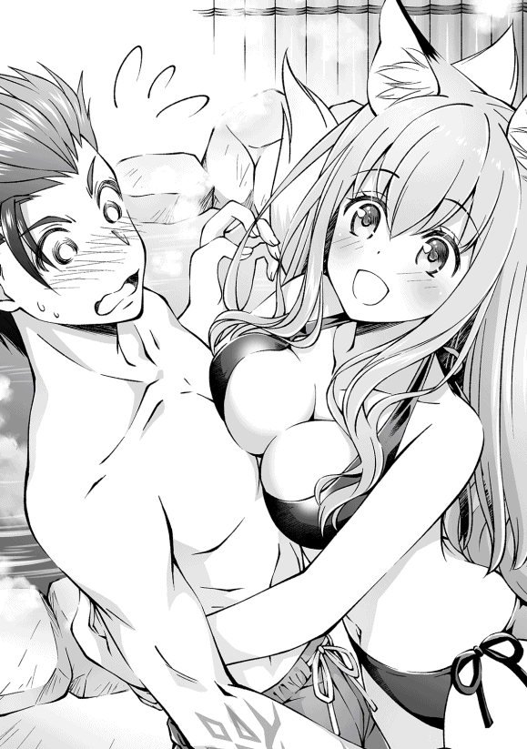
胸板に触れる双つの感触は柔らかく、ずっしりと重みを感じるほどの圧倒的なボリューム。
黒いホルターネックのビキニ姿で、胸がより強調されており、迫力は今までの比じゃない。
それが似合うのはお姉さんのスタイルの良さあってのことに違いないが、今の俺には刺激が強すぎる格好であった。
その妖艶な身体つき、男にとっては毒である。
蒸気のおかげで、その艶姿が曇って見えることだけが救いかもしれない。
「グラッドくん、似合ってるかな？」
「ああ、似合っているぞ」
「ほんと？ わー、よかったぁ......嬉しいなぁ」
「私たちに合うサイズの水着がありませんでしたものね」
ちらり、と胸を見た。
「はぅ、最近はお胸がちょっと苦しいもんねぇ」
「そうなんですよね。この歳でもまだ、成長しているたみたいで」
「「 あの人 が羨ましいですよね 」」
あの人が、リヴを指しているような気がするのは気のせいだろうか？
たしかにリヴの胸は俺と何も変わらないというか、筋肉の差で俺よりも小さいが......。
あんまり身体のことを責めるのは可哀想だと思うぞ。
「グラッド君、背中を洗ってあげるよ？ ほらほら、おいでー！」
「いや、一人で洗えるから必要ない、が......!? 」
「照れなくていいんだよ？」
リリスの尾が俺の右足に絡みつき、そのまま引きずるように引っ張られていく。
最近、俺の扱いが雑すぎる気がするんだが、気のせいだろうか？
「はい、ここに座って！」
水着の上からであるが、リリスが背中に回り込んでぎゅっぎゅと汚れを落としてくれた。
強すぎもせず、弱すぎもしない擦り方は、ただ気持ちよかった。
ほどなくして、ようやく温泉に浸かることができた。
──ちゃぷん。肌に伝わるほどよい温度と、ミネラル感の溢れる自然の香りが、何とも温泉の気分を盛り上げてくれる。
「はぁ、温泉って最高ですね」
「身も心も洗われる感じだよね」
「今日はゆっくり休んでおけよ。長居をしすぎたが、三日後には旅立つ予定だ。体調を整えておかないと旅の途中で倒れるかもしれないからな」
神聖樹までは、まだ一週間ほどかかる。
すべての発端たる先代魔王が、世界に現れた。
全ての始まりとなるか。
全ての終わりとなるか。
それは、まだ誰にもわからない。
「......やってやるさ」
窓を開け、夜風をその身に受けながら。
瞳を閉じて、俺は己の右腕をまっすぐ前へ構えた。
刻まれるモノ。
それは、リヴから授かった契約者の刻印だった。
俺を守るために、無限の力を顕現させる刻印──。
「俺が、先代魔王を止めてみせるから」
絶望に染まるかもしれない世界でも、右腕の刻印は煌々 と輝きを放っていた。
俺にはまだ果たすべき約束が残っている。
そう語り掛けるように、淡く光り続けている。
「グラッドさん、頑張りましょう」
「きっと、もう少しで終わるよ！」
神秘的な瞳で見つめてくる彼女たち。
決意を秘めた、どこか心強い瞳だった。
「ああ、そうだな」
「はい！」
お姉さんが手を伸ばしてきた。
そう。
これはかつて、大罪の悪魔と恐れられた少女と、生贄だった俺の旅の始まりに過ぎない。
これからも旅は続いていく。
彼女が安住の地を求める限り、そして......平和な未来へ導く者が現れる日まで。
大罪神剣。
そう呼ばれる至宝を手に携えて、俺たちは戦う。
「一緒にお守りしましょう？ 世界はまだ続いています。そして、これからも──」
俺たちは、現在 を歩き始める。
三百年、誰も辿り着けなかった安住の地平を目指して。
俺を慕ってくれる仲間を連れて──。
「みんなで紡ぐんです！」
俺は、手を握り返した。
† ׆
一時間後、客室にて。
「あたしたち、完全にタイミングを逃したわね」
「ご主人さまっ、よくわからないですけど、浮気は絶対駄目なんですからね？」
火を噴くようなリヴに、テレサが便乗していた。
「いや......だからその、何もされてないし、そもそも浮気じゃないというか」
汗を掻くやら、瞬きするやら、不自由な身体を精一杯に活用して、俺は戸惑っていることを示す。いやまぁその、柔らかかったとか、気持ちよかったとか、正直な感想はあるわけだけど。
そんなところに。
「グラッドさん、今度は妹も一緒に温泉はいかがですか？」
油に火を注ぐように、お姉さんが現れた。
「お、お姉さん、やめてくれっ！」
「はい？」
お姉さんは、んーと考え事をしたあと、ぽんと手を打った。
「あー、なるほど。なかなか楽しそうなことになってますね。さ、リリスさんも加わるといいですよー？」
「わーい！ グラッドくん、さっきは腰をマッサージしてくれてありがとー！」
お姉さんの許しを受けて、三人の少女たちが果敢に突撃してくる。
リリスだけが、悪戯に瞳をきらきらと輝かせていた。
「お姉さん謀 ったなっ！」
「さあ、何のことでしょう？」
「グラッドー、ちょっとお話ししましょう？」
やたらと優しいリヴの声。
そして。
とても男らしくない絶叫と、楽しそうな笑い声が、客室に溢れかえったのだった。
──氷雪遺跡、祭壇の間。
紅い──。
紅い輝きに包まれていた。
「......契約者たちは、最後まで気付かなかったようですね」
破砕音。
猛烈な力の衝撃によって、祭壇の間が無数の瓦礫となって崩壊する。
ゆったりとした黒衣の外套にその身を包み──。
忠義のベアトリクスは立ち上がった。
さらに懐から立ち上がるのは、禍々しい瘴気。
「......再生の宝具──ペインリング。なるほど、無限の命をもたらすとされる秘宝の力は本物でしたか」
好戦的なその双眸が、さらに興奮を増したかのように大きく見開かれる。
「保険を使うときが訪れたようですね」
ズッ──轟音と共に震える遺跡。
ベアトリクスが、その外套から覗く巨大な腕で、魔力を壁に叩きつけたのだ。
「小娘 よ、我が眷属よ」
黒衣の悪魔の双眸が、興奮を孕んで空へと向けられた。
「悲惨な記憶を宿し、我らがもとへ──戻ってくるのだ」
勢いよく、宙へ旅装束が投げ捨てられる。
旅装束は鷲に変化して、勢いよく飛んでいった。
「遊びは終わりだ、テレサ 」
黒衣の下に軽甲冑をまとったベアトリクスは、嗤った。
目を疑うほどに華奢な身体ながらも、その全身に尋常ならざる瘴気と殺気を滲ませて。
「私が忠義を持ってリヴァイアサンを始末しよう。あの心の脆さ、そして、契約者たち人の弱さ──」
今、ここに。
先代魔王の腹心は、声の限り宣言した。
「足掻け契約者。私を失望させてくれるなよ？」
アスモデウスさまが発った翌日、テレサはご主人さまとお買い物を楽しんでいました。
......そうです、テレサは迷子になってしまいました。
一人で外を歩くことって殆どなかったので、正直言って心細いです。
しかも、グランフェルトの街は迷路のように入り組んでいるので、宿の場所も覚えていません。
あぅ、どうしましょう。
ご主人さまと早く再会したいです......。
せっかくのデートだったのに......うぅ、ツイてないです......。
そんなことを考えていると、中央広場に辿り着きました。
広葉樹が生い茂り、木漏れ日に濡れて、そよそよと葉が風に揺れています。
「わぁ、綺麗ですね！」
両手を広げてくるりと回って、そのままベンチに腰を降ろしました。
ずっと歩き続けていたので足がパンパンです。
小鳥の鳴き声が聞こえたので、青空を眺めていると──。
『──パパ、ママ！ テレサを置いて行かないでくださいっ！』
ふえっ？
泣きじゃくるテレサ──今よりも幼いテレサの姿が、はっきりと脳裏に浮かびました。
「あ、れ......」
痛い。頭が、痛いです。
猛烈な映像が、一気に脳裏に押しかけて、潰れちゃいそうなほどです。
「なんですか、これ......た、助けてください、ご主人さま......ッ！」
しばらく頭痛に苦しんでいると、やがてスーっと痛みが治まりました。
──失ったはずの記憶と一緒に。
「......そうでした。テレサには、役割が......」
思い出したのは、全てが赤く燃え上がったあの日の記憶。
テレサが復讐 を決心し、リヴ様とご一緒に行動したという動機。
「......潮時、ですね」
ご主人さまに、別れを告げる時が訪れたようです。
「おーい、テレサ？」
アスモデウスが発った翌日、俺はテレサと買い物をしていたはずだった。
服とか、食料とか、新しい剣とかを用意していたのだが、気付いたらテレサの姿が見当たらない。
どこで逸れたのか見当もつかないが、一時間ほど街中を探していると......。
中央広場の一角、広葉樹の真下にあるベンチに、テレサが座っていた。
「ん？」
でも、何故だろうか。
テレサを青空を眺めながら、冷たい表情を浮かべている。
俺と逸れて心細かったとか、寂しかったとか、そういう表情じゃなくて......こう、鬼気迫る何かを感じた。
あれはそうだな、俺があの人 を失って、魔物を憎んだ時の表情に似ているのだ。
いったい、どうしたのだろうか？
「あ、ご主人さま......？」
俺に気づいたテレサは、呆然と見上げてきた。
「よぅ、探したぞ。思い詰めていたみたいだが、大丈夫か？」
「はい、大丈夫です。テレサはいつも通りですよ？」
にこにこと笑うテレサだが、妙な違和感が走る。
嘘というか、無理して笑っているというか......。
「ご主人さま」
テレサの前髪から覗く大きな海色の瞳が、揺らいだ。
「──信じていた人が復讐の相手だとしたら、どうされますか？」
やはり、普段とは様子が違う。
そんなことを聞いてくるなんて、何があったんだ？
「テレサ、それはどういう意味......」
「えへへ、お腹も空きましたし宿に帰りましょうか！」
俺の声は遮られてしまった。
明らかに、これ以上の追及を拒んでいる。
すぐ隣にいるのに、今は俺を見ていないテレサがどんな表情をしているのか、俺は考えながら黙ってテレサの横を歩く。
......もしかして、記憶が蘇ったのだろうか？
テレサは何も語らないが、その横顔は精一杯に笑顔を演じているようで、不安でいっぱいの暗い表情をしている。
もしそうだとしたら、思い出さない方が幸せだった過去を抱いていたのかもしれない。
『──信じていた人が復讐の相手だとしたら、どうされますか？』
その言葉の意味はきっと、呼びかけだった。
優しく、慰めてほしくて。
慈しむように、励ましてほしくて。
愛おしむように、救いを求めて。
だから、俺はテレサが遠のくのを受け入れながら。
受け入れながら、その暗黙の助けに答えた。
「────助けてやるからな」
たとえ、地獄の底だったとしても。
地獄から、引きずり上げてやる。
† ׆
宿に戻ってしばらく、俺はリヴを自室に招き、テレサについて相談をした。
事情を知ってもらった上で、テレサのことを探れないかと考えていたのだが......。
「ねえ、テレサって何者なのかしら？」
「どういう意味だ？」
話を黙って聞いていたリヴが、疑問を唱えた。
三百年前──。
リヴとアスモデウスが最後に争った砦の地下で、棺に閉じ込められていたスライム。
テレサについて分かることは、それしかないのだ。
「ずっと考えていたわ。テレサはもしかして、あたしたちが砦を訪れることを知っていたんじゃないかって。あたしたちを、監視するために」
「おいリヴ──ッ！」
「グラッドと契約して、すぐにテレサが旅に加わって......きな臭いように思えないかしら？」
俺は思わずテーブルから身を乗り出して抗議しようとしたが、リヴの静謐な眼を見ては、文句を言えなかった。
「テレサを本気で疑っているわけじゃないわよ？ ただね、あたしたちと合流したっていうのが、本当に偶発的なものだったのかしら？」
「それは......」
唐突だった出会い。
リヴは俺の疑問だった全てを並べ、可能性の高い事実だけを浮き彫りにしていた。
何も言い返せずに言葉を失う俺に、リヴは申し訳なさそうに眉を下げる。
「ごめんなさいね、酷いことを言って。でもテレサが言ったのよね？」
リヴは低い口調で言う。
「──信じていた人が復讐の相手だとしたら、どうされますか？ って。それって、あたしたちに後ろめたい何かを隠し持っているんじゃないかしら」
......もしかしたら、俺は頭の片隅で考えないようにしていたのかもしれない。
今まで一緒に旅をしてくれたテレサに、俺は盲目であろうとしたから。
リヴに真っ直ぐに見つめられる俺は、しばらく動きを止めて、テレサが見せてくれた表情を全部思い返してから決意した。
「リヴ、力を貸してほしい」
「もちろんよ、みんなにも相談するわね」
これまでのこと。
これからのこと。
それらを今まで通りにするために、俺たちがやるべきことは──。
† ׆
同日、深夜。
薄暗い月明かりが窓から降り注ぐ中で、誰かが廊下を歩いている足音が聞こえた。
ほぼ無音で、誰かは宿の外へと向かっていく。
「ふぅ......」
俺は天井を見つめた。
ここまでは、事前にリヴから告げられていた通りの展開だった。
部屋の扉からは合図をするように、トントン、とノックする音が聞こえた。
俺は部屋を出た。
事前に着替えてあったので、リヴと合流して外へと向かう。
気配はない。
ただし窓に目をやれば、半透明の鳥がスライム化したテレサを背に乗せて、街の外へと立ち去っていくのが見えた。
「みなさん、こちらの馬を使ってください」
お姉さんが用意してくれた馬へ乗り込み、テレサの後を追う。
やがて辿り着いたのは、リヴが予想していた通りの場所。
氷雪遺跡であった。
「以前より、魔力が満ちている感じがするわね」
氷の遺跡は眩しいほどの輝きに満ちており、崩れた祭壇の間で月を仰ぐ者がいた。
底冷えするような夜風に乗って、声が聞こえてくる。
「......どうしたらいいか、わからないです......」
空色の髪の少女が謝罪を口にしていた。
「......みんな、良い人ばかりで......テレサには、復讐なんて......」
誰に向かって話をしているのか。
答えはともかく、俺は声をかけた。
「よぅ、テレサ」
「────ご、ご主人さまっ!? 」
テレサが勢いよく振り返る。
驚愕に染まった瞳で、みるみる顔色が失われていく。
「何してんだ、こんなとこで？」
そう言って、俺はテレサに近づいた。
「あ、う、うぅ......」
テレサは小さな体を委縮させている。
......俺は、彼女から聞いた言葉が蘇る。
『わたし、ご主人さまに出会う以前の記憶がないんです』
『ご主人さま、ずっと、お傍に......』
『テレサのこと、どう思います？』
『ご主人さまは、もしかしたら運命の......』
それらの言葉に嘘はなかった。
嘘は、なかった。
『怖いなら、いつでも俺を頼っていいからな』
だからこそ、俺はテレサに言葉を届けた。
それらを信じて、もう一度声をかける。
「夜中に何しているんだ？ 心配するだろうが。ほら、帰ろうぜ」
できるだけ笑顔で手を差し出したが、テレサは手を掴もうとはしない。
「あ、あはは！ テレサは考え事をしていただけですよ！」
「こんな場所でか？」
「あ、あう......」
いつも柔らかいテレサの瞳には、今は怯えしか宿っていない。
ふいに、テレサの視線が泳ぐ。
逃げ道を模索しているようだった。
「悪いけど、結界を張らせてもらったわ」
「入口には、お姉さんとリリスも待機している。もう逃げられないぞ」
怯えるテレサに、俺は乱暴する気がないことを伝えるために、両手を上げた。
「どうしたんだよ、何に怯えているんだ？」
「な、なんでもないです......なんでも、ないですから......」
陰りのある表情。
怯えて、小さくて、硬い声。
何かあるのは一目瞭然だった。
「ご主人さま、お願いです......！ テレサのことは忘れてください......！」
テレサは声音を硬くする。
涙が溢れそうになるのを、必死に堪えながら、言葉を絞っている。
「思えば、不審なところがあった」
俺は言った。
全てに答えを出して、仕掛けられた罠を暴きだすために。
「まず、砦の地下でテレサが閉じ込められていたということだ。隠し階段のさらに先に、どうしてスライムが一匹で閉じ込められているかが疑問だった」
「な、何故そう思われるのですか？」
まくし立てるテレサを、俺は手で制した。
「声がしたんだ。俺を呼ぶ、声が」
「......？」
「優しそうな声だった。その声に導かれて、俺はテレサと出会うことができた」
テレサは、大きく息を呑み込んだ。
「なあ、テレサ。記憶を失っていると言ったな。だが俺はこう言い返すぜ。お前さんは記憶を取り戻したんだろう？」
「......っ」
「正解のようだな」
俺は説明しながら、テレサが記憶を取り戻したタイミングを思い出す。
「う、ぐすん......っ」
テレサの声が嗚咽に揺らぐ。
瞳の奥に熱が滲んでいるようで、潤んでいた。
それでも、伝えないといけない。
「テレサ」
俺を頼っていい、と、約束したのだから。
「──誰の命令で俺たちに近づいた？」
言葉を並べるだけで、胸が締めつけられる。
「......言えないです」
拒絶の言葉。
俺は話を続ける。
「テレサ、お前さんは棺の中で衰弱していた。スライムだったから生き残れたが、あと少しでも発見が遅かったら本当に死んでいたかもしれないんだぞ」
「そうよ。誰に入れられたの？」
「......言えない、です」
「テレサを利用しているやつは、テレサの命なんて何とも思ってないぞ」
「そいつはね、自分の駒としてテレサを利用────」
「テレサが悪いんです!! 」
空気が弾けるほどの大音声。
テレサが発したものだとわかった時には、彼女は逃げようとしていた。
「リヴっ！」
「任せて！」
小さな身体は瞬時にテレサを追い抜き、出入り口を塞いだ。
「行かせないわよ」
そのまま、テレサの両腕を掴んだ。
「......すんっ、ぐすん......」
幼い嗚咽が聞こえてくる。
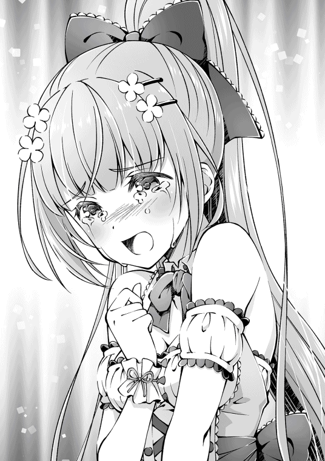
「テレサ......」
慰めてやりたい。
だが、その前に確かめないといけないことがある。
俺は、先ほどテレサが見上げていた場所──月を仰いだ。
「いつまで隠れているつもりだ、ベアトリクス」
俺たちは一斉に身構える。
直後。
「ふむ、見抜かれていましたか」
月から溶け出すように魔力が零れ落ち、人型を構築する。
忠義の悪魔──ベアトリクスの姿として。
「月並みな台詞ね」
リヴが言った。
「砦で聞こえた声とお前の声はそっくりだった」
俺は、ゆっくりと告げた。
「ベアトリクス。お前がテレサと俺たちを引き合わせたんだろう？」
「ええ、正解です。私がすべてを仕組みました」
あっけらかんとした言い方に怒りが込み上げたが、どうにか冷静を保つ。
「これは想像だが、テレサは記憶を失っていたんじゃない。ベアトリクスが消したんじゃないのか？」
「ほう、何故？」
「魔法都市だよ。お前さんが撤退する時、テレサを見て笑っていただろう？」
「たったそれだけで気づいたのですか？」
「いや、きっかけに過ぎないさ」
今、ベアトリクスが生きていたことで確信へと変わったがな。
しかし、疑問だ。
「......ベアトリクス、何故、生きているんだ？ お前は確かに神剣で貫いたはずだ」
「疑問はごもっとも。では、特別に教えてあげましょうか」
ベアトリクスは懐から、黒い指輪を取り出した。
「これは再生の宝具 ──《虚ろなる神》の魂の一部が込められた遺品ですよ」
素人目には高そうな指輪、としか映らない。
だが、ベアトリクスの魔力に呼応して、邪悪な力が募っていく。
「《虚ろなる神》は不滅......これがあれば、死を超越することができるのですっ！」
ぞわわ、と悪寒が走った。
「ねえ、なんでテレサの記憶を消したの？」
「面白いことを聞きますね？ 我が眷属をどう扱おうと自由ではないですか」
「眷属って......」
言い返そうとした刹那。
「嘘じゃないです。テレサは復讐のために、ベアトリクスさまの眷属となりました......」
テレサは下唇を噛み締めながら、悲しそうに話す。
その言葉に、俺は虚を衝かれた。
「どうしてそんなことを？」
「リヴさま、わたしの家族を手にかけながら良く言えましたね」
「えっ」
「覚えていませんか？ 断罪戦争で、魔大陸の北の領地が争いの舞台となったことを！」
「......まさか」
「そのまさかです！」
テレサが氷の魔法を放つ。
リヴが持つ魔法否定の力によって弾かれるが、石床が砕けた衝撃で破片が跳び散り、リヴの頬を浅く傷つけた。
「痛っ......」
一瞬、リヴが怯んだ。
その隙に、テレサは束縛から逃れた。
「そうです！ テレサは北の領地で生まれました！ 長閑で平和な村だったのに、人間たちが侵攻したことで蹂躙されたのです！ 平和だったのに、幸せだったのに......！ 嫉妬の悪魔が、人間を連れて滅ぼしたんです！」
「ちょ、ちょっと待ってよ！ あたしはそんなこと──」
「今でも覚えています......！ テレサのパパとママを手にかけたのは、間違いなくリヴさまでした！ 酷いです、あんまりです......テレサたちは、ただ暮らしていただけなのに......どうして、そんな酷いことをされたんですかぁ......」
俺は初めて見た。
テレサが他人を憎んだ姿を。
『──信じていた人が復讐の相手だとしたら、どうされますか？』
あの言葉に秘められた真実。
あれは、ずっと一緒に仲良くしていたリヴが、自分の両親を殺した憎き仇だったことに気づいたからだ。
それを思い出して、テレサは迷ったのだろう。
「村を焼かれて、家族を奪われて！ そんなテレサをみかねて、ベアトリクスさまが拾ってくださったのです。復讐をしたいなら力を貸せって！」
テレサから大粒の涙が絶え間なく零れ、地面を濡らした。
「ご主人さまも、リヴさまも、リリスさまも、お姉さんも、みんながテレサに優しくしてくれました！ 頭を撫でてくれて、テレサを抱きしめてくれて！ テレサも、みんなのことが大好きで、同じくらい抱きしめたかったのに......どうして、こんな......」
嗚咽に揺らぐ言葉の濁流。
何を信じればいいのか分からなくて、掠れた声で涙を流し続けているのだろう。
その言葉を前に、俺は、俺は............。
「ちょっといいか？」
テレサの言葉が収まったタイミングを見計らい、疑問を抱きながらリヴに視線を向けた。
「リヴ、今の話は本当なのか？」
「ううん、違うわね」
リヴは俺の隣に立って、静かに首を横へと振った。
「あたしたち人間の軍は、魔大陸へ侵略したことは一度もないわ」
「嘘です！ だって、この目で──」
「テレサ」
リヴは落ち着かせるような声音で言った。
「あなたの記憶、捏造されていないかしら？」
「え......」
「魔大陸はね、瘴気が溢れているのよ。人が長時間触れたら命を落とすような猛毒の瘴気がね。そんな危険な場所へ、わざわざ人が足を踏み入れると思う？」
そう。瘴気とは、強い毒性を放つ魔力のことだ。
体内に直接、猛毒を流し込まれるような環境に、人間が攻め入ったとは思えない。
「でも、テレサはこの目で......」
「可哀想だけど、その記憶は作られたものに違いないわね」
リヴが悲しそうに続けた。
「それとね、テレサのご両親を亡き者にした相手なら、きっと目の前にいるわよ」
「ど、どういうことですか？」
リヴがテレサから視線を外した。
そこに立っているのは、黒衣の騎士。
背筋が泡立った。
ベアトリクスは嗤っていた。
「先代魔王は力での支配を続けていたわ。そしてね、その直属の部下たちも同じ思想を持っていたのよ。スライムってどんな種族とも仲良くなれる優しい魔物でしょう？ 先代魔王派からしたら、きっと面白くなかったでしょうね」
「そ、それじゃあ......」
テレサはガチガチと歯を鳴らしていた。すぐに震えは身体全体に広がり、足から力が抜けて、膝立ちになりながら、自分の体を掻き抱いた。
代わりに、リヴが訪ねた。
「先代魔王の腹心、忠義のベアトリクス。あなたの固有能力は『洗脳』だったわね」
「おやおや、真相に気づきましたか」
吐き気がするほどの、どうしようもない殺意が放たれる。
「あなたが、テレサのご両親を手にかけたのね......」
「ええ、その通りですよ」
ベアトリクスは楽しそうに嗤った。
「宝具の噂があった村に、愚図なスライムが一匹いましてね。まだ幼かったですが、私を見ては怯えていましたよ。ひと思いに殺してあげようと思ったのですが、そのご両親が私に噛みついてきましてね。ムカついたので殺してあげました」
「そん、な......」
「はは、馬鹿なスライムでしたね。仇が目の前にいるのに、私がちょっと記憶を捏造しただけで何でも言うことを聞く駒となりました。そこで、知恵と力を与えたのです」
「知恵と力？」
「言葉と人化ですよ。強い魔力を浴びれば、人の姿を保てる秘術です」
それが、テレサが人化できる本当の理由ということか。
「あなたは覚えていないと思いますが、私の配下となってからは多くの人間を殺しているんですよ。仇でもないのに、罪の無い子供まで手にかけて、素晴らしい駒として成長してくれました。やはりスライムも、腐っても魔物ということが証明されましたね」
「あ、ああああ......」
テレサは放心していた。
ベアトリクスに偽物の記憶を植え付けられて、本当の記憶は葬られたままの事実。
あまりにも救いのない話であった。
「あなたは最高傑作でしたよ？ まぁ、断罪戦争が終わってからは悪魔の迫害も厳しかったですし、私もある場所で封印されていましたが。そこであなたも一緒に封印されていたわけですよ。くくはははは！」
ベアトリクスは、テレサを嗤う。
「私が封印から目覚めてしばらく──今から一か月ほど前でしょうか？ この大陸で嫉妬のリヴァイアサンの魔力が目覚めるのを感じました。そこでね、すぐに偵察に訪れたんですよ。そうしたらリヴァイアサンが人間の弱そうな男と一緒に旅をしているではないですか。相変わらず甘いと思いましたが、断罪戦争の最後の舞台となった砦に向かっていることに気づきまして、罠を仕掛けることにしたわけです」
その罠こそがテレサ。
正直、テレサが三百年前の存在だったり、悪魔と一緒に人間を襲っていたという事実は予想外だったが......。
ベアトリクスは、一緒に封印されていたテレサの記憶を捏造して、俺たちに合流させた。
でも、
「何のために？」
「簡単です。リヴァイアサンの居場所をあの方に伝えるためですよ」
「あの方──先代魔王のことね」
「ええ、またまた正解です」
ベアトリクスは、ぱちぱちと拍手をした。
俺たちを馬鹿にしているのだろう。
「で、どうして先代魔王が蘇っているのかしら？」
「さあ、なぜでしょうね？ 私も知りません」
「あなたね──！」
「本当に知らないのですよ？ 先代魔王様は何もおっしゃってくださらないのですから」
それと、とベアトリクスは続けた。
「愚かなスライムの記憶は完全に消去しました。私が植え付けた偽りの記憶だけは残っていますが、本当の記憶が蘇ることは二度とないでしょうね」
どこまでも腐った野郎だった。
両親を殺されて。
記憶を奪われて。
人を手にかけさせられて。
復讐することも敵わず。
最後は封印されて。
『わたし、ご主人さまと出会う以前の記憶がないんです』
俺たちと出会ってからも、過去に怯えていた。
それなのに、
「てめえ、テレサを何だと思っていやがるんだっ!? 」
「スライムが何ですって？ そんなの暇つぶしの道具に決まっているでしょう」
「ふざけんな！ テレサは優しい子なんだよ！ 笑顔の裏で泣きながら、前向きに頑張って生きていたんだよ！ それなのに、テレサの居場所をどこまでも奪いやがって......！」
「嫌なら強い意志を持って抗えばいいじゃないですか。それができないからこそ、いつまでも私の玩具になるのです」
こいつだけは許せなかった。
それはリヴも同じようだった。
「ベアトリクス、あなたね！ テレサにした仕打ちは泣いて謝っても許さないわよっ！」
「力を失ったリヴァイアサンに、再生の宝具を手に入れた私が止められると思いますか？」
「ええ、やってみせようじゃない！」
リヴの姿が神剣となり、俺が神剣を構えた瞬間だった。
テレサが、ゆっくりと立ち上がった。
「......返して、ください......」
テレサは、涙声でベアトリクスを睨みつけていた。
「わたしの大切な物を、返してください......！」
「待て、テレサっ！」
テレサは拳を作り、ベアトリクスを殴りつけようと走った。
しかし、
「返せるわけないでしょう？ もう残っていないのですから」
ベアトリクスに蹴られる。
「あ、ぅっ!? 」
床を何度も跳ねる。
「テレサ！」
叫ぶが、テレサは返事をしない。
代わりに、リボンが解けた髪をかき上げた。
「......愚図で、馬鹿なテレサでもわかります。わたしじゃ、ベアトリクスには絶対に勝てないって......」
ぴきりっ。
テレサを中心に、膨大な魔力が渦巻いていく。
「ご主人さま......ここは、氷の聖獣が封印されていた場所なのですよね......」
「あ、ああ。そうだが......」
そこまで言って、俺は気付いた。
テレサが何をしようとしているのか、ようやく気付いた。
「ベアトリクス......テレサは、復讐を果たすためならば、何でも犠牲にしてみせます。昔のテレサがそうだったように......」
背筋が凍るほど、冷たい瞳だった。
そして、テレサは右手に魔法円を顕現させる。
──氷を見守りし聖なる守護獣よ
我は、汝が咆哮を求めし者
贄はここに 贄はすべて
万象を薙ぎ払う力となりて
安らかな幕引きを与えん──
それは詠唱だった。
合図となって。
ズンッ！
と、衝撃でもなく音でもなく、何かが腹に重くのしかかった。
そして、世界が変貌する。
遺跡は黄金の魔力を解き放ち。
壁は亀裂が走って砕け、リヴの結界を打ち破って大空に大規模魔法円環式を構築する。
外の境界が曖昧になり、星空すら消えてなくなった。
まるで世界そのものが張り替えられてしまったかのような感覚。
何もかもが禍々しく、潰される──。
消える。
消える──。
消え──る──。
「──聖獣が復活するわ！ 特定の地形を作り変える大規模召喚術みたいだけど、これは世界を作り変えているみたい！ 普通じゃないわよ！ 何なのよ、この力っ！」。
やがて、世界の全てが白銀に染まった。
「..................パパと、ママの、仇」
古今東西、伝説の聖獣という存在はごまんといる。
だが、そいつらの中にも序列があり、たとえば完全に倒せなかった聖獣は封印されることで決着がついた。
「ベアトリクス......あなただけは、許さないです」
「......ッ！」
逆に言えば、人類の手では絶対に倒せないという証。
彼らには絶大な力や、不可能を可能にしてしまう万能の力があるのだから。
ゆえに弱者である英雄は限界まで知恵を振り絞って難題に挑み──封印という方法を編み出した。
と、その時、雪の旋風が吹き出す。
バキンッ。
音を立てて、ベアトリクスの身体が粉々に砕け始めた。
「な、なんですか、この力は......」
雪がベアトリクスの身体に触れるたびに、肉体を砕いていく。
「スライムごときが、何を──」
「だま......れ......ッ！」
「こ、この......ッがああああああっ!? 」
最初は右腕を。
続いて左腕を。
両足を砕き、胴体を断ち、かろうじて半身だけを残して。
「再生の宝具があると、何度でも蘇るのですよね。でしたら──ご主人さま」
テレサはベアトリクスの落とした指輪を拾い上げ、俺に放り投げた。
俺が掴むのを見届けると、テレサはベアトリクスの頭にありったけの魔力を叩き込み、
「──復讐、完了です」
テレサの拒絶に、ベアトリクスは断末魔すらも残せずに氷となって砕け散った。
すぐに影が覆いかぶさり、俺たちは空を見上げる。
驚愕した。
「なんだよ、これ......」
俺は見た。
二対の翼を伸ばし、天高くから見下ろしてくる白銀馬の姿を。
いや、馬と呼んでいいのかもわからない。
体躯は軽く二十メートルを超えており、竜にも匹敵する。
三メートルを超える長い角を頭に生やして、テレサの背後にゆっくりと舞い降りて。
ずぶずぶと。
ゆっくりゆっくりと魔力を循環させながら、額の結晶を広げて空洞を作り、テレサを取り込んでいく。
まさか、これが......これこそが......。
「氷の聖獣......だって言うのか......？」
この付近の地形を変えたとされている伝説の存在が、復活しようとしていた。
「......あはは、意識が消えそうです......」
テレサが力なく呟いた。
「......ご主人さま、リヴさま、テレサが時間を稼ぎます。だから、逃げてください......」
封印された聖獣を復活させ、その力を使うことで復讐を果たした代償として──。
テレサは吸収されかけていた。
生贄として、喰らわれるために。
「逃げられるわけないでしょう！ このままだと、テレサは完全に死ぬのよっ!? 」
リヴが焦って、
────ぐしゅるるるる。
氷の聖獣が鳴いた。
ひどく耳障りな声は、聞くだけで鼓膜が破れそうな勢いであった。
氷の聖獣から、魔力が膨れ上がる。
隆起する大地。
今まさに俺たちが立っていたはずの岩盤を破壊し、大地を更なる氷で覆いつくしていく。
粉雪が舞い、極寒の空気を生み出した。
限りなく純粋な力の波動であった。
「テレサ......」
「これは間違いなく神竜に匹敵する魔力よ。いえ、それ以上かも......」
神竜以上。
その意味を、俺は肌で感じた。
「このままだと、テレサは助からないってことだよな......」
「ええ......」
ぞっと冷たいものが、身体の奥から脳天まで突っ走った。
それに駆られて、俺たちは今度こそ駆けた。
テレサを助けるために、前へ。
「あたしを使ってッ！」
「ああ、劫火一閃っ！」
神剣となったリヴを掴み、スキルを放ち、手を伸ばす。
しかし、
「......逃げて、ください......」
氷の聖獣が暴れ、俺たちに何十本もの氷柱を撃ちだした。
身体があっさりと宙を舞い、地面に落とされる。
それだけで、ああ勝てないな、と悟った。
俺なんて、結局はただの人間なんだ。
で、相手は正真正銘の化け物。
リヴですらあっさり打ち負けたのに、勝てるはずがなかった。
当たり前の理屈。
当たり前すぎて、誰も指摘さえしない理屈。
ああ、納得できるさ。
俺は弱い。
弱すぎる。
「......ご主人、さまっ......」
恐怖に震えたテレサの声。
目には大粒の涙を溜めて、恐怖を押し殺していることは明白だった。
「グラッド！ このままでいいの!? 」
「.................................いいわけないだろうが！」
誰よりも、俺は自分に言い聞かせた。
壊れた右膝に、思いきり指を食い込ませる。
肉の潰れる音。骨のこすれる音。肉と骨とがぐちゃぐちゃに混ざる音。
──怒 れ、怒 れ、グラッド。
立ち上がる。
怒りで痛みを塗りつぶす。
取り込まれたテレサを直視した。
──これは......俺の戦いだ。
テレサを助けると誓った、俺の戦い。
諦めることなんてできなかった。
「なあ、テレサ」
吐息を漏らす。
「俺たちと一緒に生きたいって言ってくれたよな。今はどうだ？」
傀儡として操られたテレサ。
運命を狂わされたスライムの少女を、俺は救わなければならない。
「......一緒に、生きたいです......」
彼女が望んでいるのだから。
「よかった。俺も同じ想いだ」
──誰が逃げるものか。
テレサを救うことが俺の報酬なのだから。
「待ってろよ、すぐに助けてやるから」
我慢できず、包帯をむしりとる。
その下から現れたのは、リヴの瞳と同じ色の刻印であった。
炎の如く、灼熱に染まった腕。
「絶対に俺は諦めてやらねえっ！」
過去、何度も挫けそうになった。
その度に誰かが支えてくれて、乗り越えてきた。
大丈夫、どうにかなるさ。
だから、
「神剣 、力を貸してくれッ！」
「ええ、任せてちょうだいっ！」
神剣から伝わってくる優しい声。
刀身から紅蓮の焔 が放たれる。
▼Abilities：「英雄偽信 」が解放されます。
▼Skill：『灼身術』を修得しました。
新たな力の発現であった。
──頭の中で、ガチン、とスイッチが切り替わる音がした。
神剣に反射した俺の姿。
全身が灼熱に燃え上がり、俺の髪の色さえも炎の如く染まっている。
まるで、進化。
それまでは一だった力が、無限にもなったような気分。
身体の回路が壊されて、壊れた場所に無理やり悪魔の魔力がねじこまれる。
視界が変わる。
世界が変わる。
根底から覆され、検証され、新しく生まれ変わる。
「......」
世界はあまりに遅く、白と黒だけの世界に映って見えた。
──テレサを死なせやしない。
──テレサを殺させやしない。
誓った想い。想募。感情。
そう、これは嫉妬だ。
胸を焼く羨望 。
テレサを手放したくないという我儘 な欲求。
「戻ってこい、テレサっ！」
誰かを失うことへの恐怖によって、力を最大限に発揮する。
それこそが嫉妬のリヴァイアサンの力。
「テレサっ！」
俺は疾走した。
自分の弱さを振り払うように。
自分の強さに振り回されないように。
強くあるために。
「大丈夫、あたしが一緒だから！ 必ず、全員で戻りましょう！」
リヴが笑った。
俺は、神剣を聖獣の額へと放った。
「掴めっ！」
神剣で結晶体を砕き、左手を伸ばす。
取り込まれていたテレサは呼吸を止めたかのように、目を大きく見開いていた。
俺は昂るでもなく、憤るでもなく。
あまりにも自然に、テレサを連れて帰るために手を伸ばし続けた。
「──ご主人、さまぁ！」
突き動かされるようにして、テレサも自分の意思で手を伸ばして握った。
強く、強く抱き寄せる。
「ったく、勝手に家出しやがって。あとでお仕置きだからな」
「は、はいです......！」
俺たちの叫びに呼応して、氷の聖獣が暴れ出す。
零距離、回避不可能、迎撃不能な氷の息吹を、俺たちへぶつけようとする。
──だが。
「させないよ！」
吐息が吐き出される直前。
「私たち、最高のタイミングのようですね！」
クロスボウの矢と鉄球が、聖獣の肉体を直撃した。
「リリス、お姉さん！」
「よくわかりませんけど、さっさと倒しちゃってください！」
立て続けに起きた奇跡。
それは、俺一人では実現不可能だったこと。
轟、っと、魔力が膨れ上がった。
普段なら制御できないほどの圧倒的な魔力の増幅。
テレサを左手で抱きかかえ、右手で神剣を差し向けた。
「覚悟はいいか、聖獣さんよ」
ようやく取り戻した温もりを手に、魔力を構築した。
「焼き尽くせ！」
この遺跡ごと、すべて溶かすつもりで神剣を放つ。
聖獣に反逆する余地はなかった。
魔力を集めて結界を張ろうとするが、分解されていく。
「退去なさい、高貴な聖獣さん！」
言葉よりも、魔力が暴走する。
次々と聖獣の魔力が溶けて、霧となって消えていく。
勝負は一瞬だった。
「テレサは──」
息を吸って、
「──返してもらう！」
祈りを込めて、神剣を振り下ろした。
光が走る。
──すべてが、凝結した。
空を覆っていた大規模魔法円環式が砕け、粉雪の代わりに今度は豪雨が降りそそぎ、リヴの炎さえも一時衰えさせた。
「......終わったわね」
リヴが実体化する。
着地するまでの短い間、抱きついてきた。
少し離れた場所にお姉さんとリリスが立っている。微笑していた。
「......あ、あの」
と、テレサは呟いた。
俺に寄り添い、ぶるり、と身体を震わせた。
「ふふん、テレサったらあたしを疑うなんて酷いわねぇ？」
「あぅ、返すお言葉もないです......」
「当然よね」
と、リヴが苦笑して頷いた。
「なんてね。ベアトリクスの問題だったし仕方ないわよ」
それから、こう告げたのだ。
「全部許すから」
「......リヴ、さま......っ！」
テレサは泣いていた。
ぎゅっと、力を込めてくる。
「......テレサには、待ってくれている人がいるんですね」
淡く、俺たちに笑いかけた。
「そうだな。俺も、リヴも、リリスも、お姉さんだって待っているんだぞ」
「はいっ......」
俺は囁いた。
「じゃあ、帰るとするか」
胸の中でいつもの笑顔を浮かべてくれるテレサが、今回の報酬なのだから。
「──みなさんっ！」
着地すると、ふぁさり、とテレサの髪が揺れた。
前髪が夜風に吹かれ、その奥で輝いた表情に俺は一瞬だけ目を奪われた。
だって、
「ありがとう、ございましたぁ......！」
過去、最高に可愛かったのだから。
† ׆
──宿に戻って、風呂を浴びて、明け方に寝て。
夢を見た。
それは、テレサの夢だった。
三百年前、断罪戦争で焼かれたハルモニア村ってことは一瞬で理解できた。
『言っちゃヤダ、パパ、ママ......』
だって、スライムのテレサが泣いているのだから。
焼け焦げた匂い。
あまりにも静かな、深夜の村。
すでに両親は助からないってことが、何となくわかってしまった。
だから、テレサはこう言ったのだ。
『テレサも、一緒に逝く......』
あろうことか、近くに刺さっている剣に、飛び込もうとしていた。
自殺を図ろうとしていることを悟る。
だけど。
だからこそ、両親 が言った。
『生きて。絶対、何があっても生きて。生きていれば、テレサを大切にしてくれる人が現れるから。いつも笑顔の、テレサのままで......』
死ぬと分かった身体で、そう約束したのだ。
約束したからこそ──テレサは、いつも笑っているのだろう。
† ׆
翌朝は快晴だった。
雲一つなく晴れ渡り、窓辺から太陽の光を浴びた。
──あれから半日。
俺たちが帰ってから、最後の騒動が待ち受けていた。
「グラッド！ テレサがまた消えたのよっ！」
「ああ、知っているよ」
これほどまでに忙しい一日は、そう無いだろう。
だって、起きたら枕元に一枚の手紙が置いてあった。
そのまま拾い上げ、そこに書いてある文字を読んだ。
『みなさま、ご迷惑をおかけしてごめんなさいです。探さないでください』
その意味を、その気持ちを、俺はじっくりと噛み締めた。
そして、ジャケットも羽織らずに部屋を飛び出した。
テレサの部屋を見ると、荷物が消えている。
俺は街に飛び出した。
テレサは完全に俺たちの前から姿を消すつもりのようだ。
心配と不安は渦巻くが、俺は同時に何となく思っていることがあった。
絶対に見つけられるだろう、と。
不思議と何となくそう思って、先日テレサと買い物を楽しんだルートをなぞっている。
彼女を見つけるために。
「！」
俺は足を止めた。
そして、俺は向かった。
中央広場、広葉樹の真下。
そこに、空色の髪をした小さくちょこんとベンチに腰をかける少女がいた。
背負った荷物の重さで疲れているのか、軽く息が上がっている。
「あ」
やがて少女も俺に気づく。
怯えるくらいに肩を跳ね上げて、何度も目をぱちくりとさせている。
「「 ...... 」」
互いに手を伸ばせば触れ合える距離にやってきた。
テレサは何かを言いたそうに、何度も口を開けようとして、踏み出せない。
自己主張が苦手な、いつものテレサだった。
思わず苦笑してしまった。それなら。
「なあ、テレサ。願いはないか？」
「ふえっ？」
テレサは顔を上げる。
そのキョトンとした顔を見つめながら、俺は笑いかけた。
「願いだよ。俺がテレサの願いを叶えてやるってことだぞ？ ちなみに俺の願いはな、テレサがこれからも一緒に旅を続けてくれることだ」
テレサは気付いたようだ。
今日だけで何度濡らしたかわからない瞳で、ぐっと涙を堪えている。
俺は、もう一度だけ言った。
「俺の願いを叶えてくれないか？」
テレサが過去を悔やんでいるというのなら。
今日、ここから始めよう。
俺とテレサが歩き出す、本当の始まり。
ちょっと変わった始まりの契約。
「──はいですっ！ それでは、テレサの家族になってくださいっ！」
太陽のような笑顔で立ち上がり、俺に抱きついてきたのだった。
聖アスタリア共和国南部、迷宮都市アルビオン。
そこは、莫大に成長した神聖樹を中心に、経済が成り立っている冒険者の聖域であった。
──神聖樹の頂上、天空監獄。
不帰 の層を登った最奥に、そいつはいた。
† ׆
極夜の星空。
幾重にも張られた結界。
破壊された檻。
蹴散らされた天使たち。
異変まみれの天空監獄。
その中央に陣取るのは、甲冑を纏った躯の騎士。
月に浮かぶシルエットとしては、あまりにも不気味な光景だった。
「無様だな」
その躯は凛々しかった。
滲み出る雰囲気が、月明かりを反射する銀の甲冑と共に、神聖なる存在へと変えていた。
「......おっしゃるとおりです」
そして、目の前には黒き翼を広げる女性の姿があった。
彼女の手には破壊の精霊剣が握られ、切っ先は床へ突き刺さっていた。
「嫉妬の契約者は、貴様の知り合いだそうだな？」
「......」
躯の言葉は淀みなく、大いなる尊厳に満ちている。
「どうした、モルディベート？」
「......いえ」
「大まかな状況は確認できた。アスモデウスは裏切り、ベアトリクスは敗北した。我の血脈でありながら弱い、弱すぎるとは思わないか？」
「......はい」
躯とモルディベートが地上を見下ろした。
剣をひと薙ぎする。
ただそれだけで、迷宮都市アルビオンに巨大な亀裂が走り、剣圧の余波で建物は吹き飛ばされ、残骸の山と成り果てた。
当然、常識ではありえない。
ゆえに、それを為した彼らは普通じゃない。
先代魔王と堕天使。
彼らは俗にそう呼ばれる存在だ。
常識の埒外 、殺戮 の破壊者。
人智を越えた力を持ち、人をあっさりと殺す。
「まずは力を取り戻す。他の大罪神剣の復活を急げ」
「......御意に」
頷くモルディベート。
世界の地平線へ精霊剣を差し向ける。
遠くで黒い稲妻が落ちて、神聖樹が揺れるほどの爆風が襲いかかった。
一撃。
たったそれだけで、地図から一つの都市が姿を消した。
「くく、嫉妬のリヴァイアサン。これほど我を不愉快にさせる存在も久しい」
先代魔王の甲冑から、腐臭のする粘液が滴り落ちた。
「人は、魔王には勝てない」
絶対、確実の言葉。
先代魔王が右手を掲げた瞬間、膨大な魔力が融合し、周囲の空間を強引に捻じ曲げていく。
躯だった身体は、輝く半透明の翼を構築する。
その姿は天使のようであった。
「断罪戦争、三百年に渡る我が悲願──」
......嫉妬のリヴァイアサン。
......契約者グラッド。
先代魔王に立ち向かう英雄の再来。
決着の時が訪れた。
来るべき未来の情景を思い浮かべ、高揚する気配を感じながら。
「今こそ、世界を我が手に収める」
先代魔王は、凜とした声でそう宣言した。
† ׆
「......ここは悪魔が衰退し、人間が支配する世界」
モルディベートも呟いた。
「......どうか気づいて欲しい」
かつて愛した青年に届くと信じて。
「......いつだって世界は、終わりを望んでいることを──」
その言葉の意味は、まだ誰にもわからない。
でも、ここからが本当の始まり。
歴史に葬られた少女と青年の叛逆の物語は、ここから紡がれる。
「......さあ、楽しみましょう？」
モルディベートは微笑んだ。
「......悪魔と世界、どちらが未来を掴むのか、を────」
（レベル無限の契約者〜神剣とスキルで世界最強〜 第二巻 了）
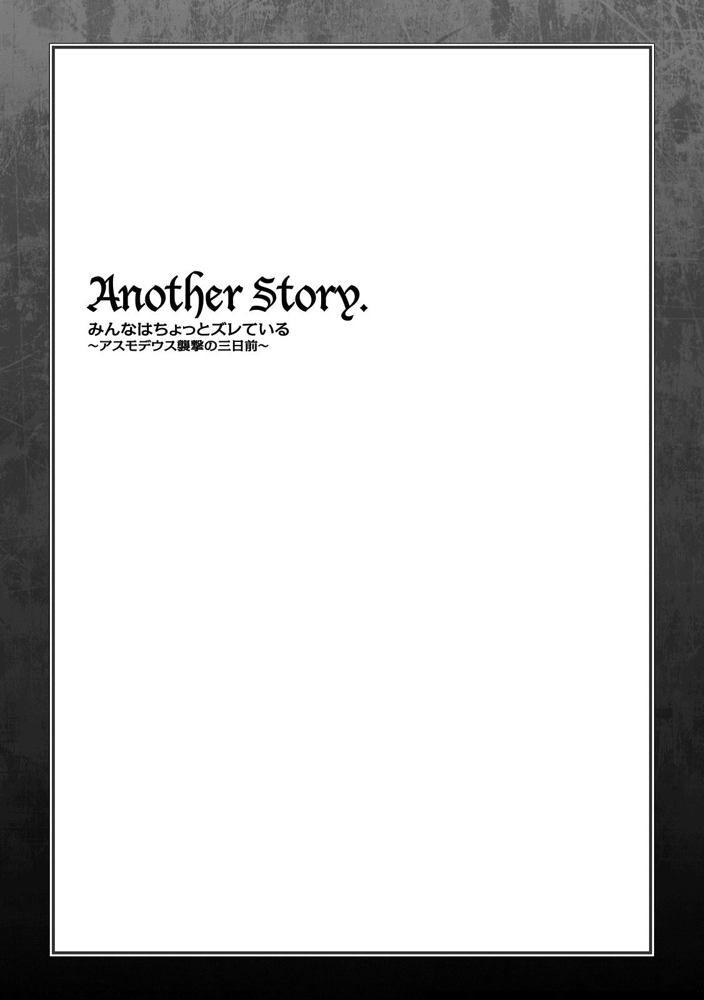
ボクの名前はシュシュ。
貧民街 で暮らしている白猫です。
物心ついた時には両親に捨てられて、弟と一緒に橋の下で生活を送ってきました。
お陰で食べられる雑草は見分けられるようになったし、飛んでいる鳥も捕まえられるようになりました。
そんなボクにも悩みがあります。
「誕生日プレゼント、どうしようかな？」
弟の入院を控えて、ボクはお祝いに悩んでいた。
「ん、弟の誕生日なのか？」
隣に並んで、ボクの家 の掃除に付き合ってくれるグラッドに頷いてみせる。
「うん、明日だけどね。二人だけの家族だから、是非、贈り物をしたいんだ」
「そっか。なるほどな」
グラッドはボクを絶望の底から救ってくれた恩人で、彼のおかげで、弟は手術を受けられることになった。
感謝しても感謝しきれない。
「弟は何が趣味なんだ？」
「あー、うん。聞かない方がいいと思うよ」
「聞かない方がいい？」
疑問符を浮かべるグラッド。
ごめんね。だって身内の恥だから。
最近弟の部屋へ掃除に行った時、箪笥の中から見つけたのは、グラッドの写真と女性用の衣装だった。それらが意味するものを悟った時、弟が恋仇だと理解した。
たしかに弟は髪も長いし、内気だし、可愛い物が好きだし、病弱の女の子に見えるけど、まさかそっちに目覚めるとは思っていなかったよ。
......お姉ちゃんっ、これからどうしたらいいのかな......！
ショックのあまりに膝をついてしまう。
「グラッドさん。シュシュさん。少し休憩されてはいかがですか？」
「おう、ありがとうな」
「紅茶とお菓子をどうぞ」
などと考えていると、優しげな声が聞こえた。
その人はふんわりとした髪と、大きなお胸──女性の魅力を詰め込んだような身体で、とても魅力的だった。
でも、ボクは知っている。
お姉さんは綺麗だけど、ゴリラのような怪力を持っていることを。
本当はゴリラが狐さんの耳をつけているだけなんじゃ......？ と疑っていたりして。
お姉さんは頭も良くて、グラッドと一緒に旅をしている。
つまりグラッドとお姉さんは恋仲にある可能性も否定できない。
あんなに綺麗な人が相手だと、ボクじゃ太刀打ちできそうにないや。悔しいなぁ。
それにしても、
「お姉さんを見ても......弟はまったく興味なさそうだったんだよね......」
このままだと弟は何処へ向かってしまうのか。
今から将来が不安です。
「そうでした。買い物に行きたいのですけど、道案内をお願いしてもいいですか？」
「ボクが？ 構わないよ」
「ああ、よかったです。それでは、よろしくお願いします」
グラッドに別れを告げて、ボクたちは買い物へ向かうことにした。
せっかくなので、お姉さんに質問してみた。
「グラッドって、いつも女性に優しいの？」
ストレートに聞く。
「うーん、そうですね。でも女性だけじゃなくて、男性の方にも同じですよ」
お姉さんの表情に暗い部分はなくて、むしろ嬉しそうに笑っていた。
「グラッドさんだけじゃなくて、リヴさん、リリスさん、テレサさんもお優しいです」
「素敵な雰囲気なんだね。そういえば、みんなは何をしているの？」
「こちらの部屋にいますよ」
お姉さんが示したリビングを開ける。
ガラッ。
『エロイムエッサイム......冥府の悪魔タロス様』
『『タロス様』』
『お姉さんから、グラッドを取り返す方法を教えてください』
『教えてくださいです』
『胸が大きいなんて羨ましいじゃないっ！』
『少しは分けてください！』
『悪魔（魔物）だって胸は欲しいのよっ！』
『......うー、もう眠いよぅ』
──ピシャッ。
「お姉さん、本当にみんなは優しいの？」
「はいっ。皆さん照れ屋さんですから」
「薄暗い部屋で、リリスさんを魔法陣の上に乗せて、何かの儀式をしていたんだけど......」
「あらあら、かば焼きが食べたいって催促かもしれませんね」
ううん、絶対に違うよ。
今思ったけど、お姉さんって天然だよね。
「いつも、こんな調子で旅をしているんだ......？」
「そんなことないですよ？ 今日は控えている方です」
グラッドも、お姉さんも、苦労している姿が浮かび上がった。
† ׆
「これで買い出しは終わりですね」
食料を購入して、ボクたちは商店通りを歩いていた。
「今日はお祝いですよ。シュシュさんの弟さんのためにも、沢山のご馳走を──あら？」
お姉さんが祝ってくれているのに、ボクは足を止めてしまった。
雑貨屋さんのショーウィンドウには、猫の姉弟が身を寄せているぬいぐるみがあったから。
ボクと弟みたいで親近感が湧いてしまう。
「ふふ、シュシュさんに似ていますね？」
「やっぱりそう思う？」
「はい、とってもそっくりですよ」
弟の誕生日も近いし、プレゼントを送ってあげたいけど......。
▼価格：銀貨二枚（二万円）。
駄目だ、高すぎて手が出ない。
弟もこれなら喜んでくれそうだけど、何か別の物を探すとしよう。
「......なるほど、そういうことですか」
あっ、いけない。お姉さんに気づかれてしまったようだ。
「昔、私も妹にプレゼントを送れなかったことがあるんです」
「えっ、お姉さんにも妹がいるの？」
「はい、シュシュさんより年下ですけど、自慢の妹です♪」
お姉さんは嬉しそうに微笑んだ。
「ちなみに、シュシュさんは裁縫とかできますか？」
「......ううん、全然なんだ」
ボクは昔から不器用で、細かい作業が苦手だった。
「でしたら、私が教えてあげますから一緒にプレゼントを作りませんか？」
たしかにお姉さんなら、裁縫くらいは簡単にできそうだ。
「で、でも、本当に苦手だよ？」
「大丈夫です。私も苦手でした」
お姉さんから頼もしい反応が返ってくる。
手作りのプレゼントなら心が籠っていていいかもしれない。
材料費だけなら安く作れるし、弟も喜んでくれそうな気がする。
「お姉さん。ボクに、裁縫を教えてください」
「はい、喜んで」
材料を購入してから、自宅まで戻った。
† ׆
結論を言おう。失敗だった。
「むー、おかしいですね。ぬいぐるみの頭が裂けて綿が出てしまいます」
夜八時。
ボクたちの目の前に横たわるのは、頭のとれた死屍累々 の失敗作であった。
何せ、お姉さんが針を通すと、力を込め過ぎなのか、ぬいるぐみの頭部が勢いよく吹っ飛んでいく。
それだけならマシな方で、果実のように頭部が弾け飛ぶことも。
いったいどうやったらそんな裁縫ができるんだろう......。
見た目は凄く綺麗なのに、色々と残念な人だ。
「お力になれなくて、申しわけないです......」
「ううん、手伝ってくれてありがとうね」
弟のために力を貸してくれたお姉さんが、眩しく見えるくらい。
苦手なことも一生懸命に取り組む姿は、ボクも応援したくなるほどだもの。
けど、どうしたらいいのだろう。
ボクがもっとお金を持っていたらいいんだけど、毎日を生きるので大変だし......。
「......へえ、なるほどね」
と、今度はリヴさんがやってきた。
寝室で寝ていたはずなのに、その手に枕を持っているわけだけど、何処へ行くんだろう？
「二人とも頑張ったんだし、今日はもう休みなさいな」
「でも、プレゼントが......」
「大丈夫。あたしがどうにかしてあげるから」
ここぞとばかりに目を輝かせるリヴさん。
もしかして代わりに作ってくれるのかな、なんて思ったけど──。
† ׆
『グラッド、裁縫スキルを持っていたわよね？』
『ああ、まだ覚えたままだったな。どうしたんだ？』
『お願いがあるの。実はね──』
† ׆
翌日お昼。玄関には大小二つの白猫のぬいぐるみを抱えたリヴさんが立っていた。
「わ......徹夜で作ってくれたの？」
「あたしじゃないわよ？ 裁縫は苦手だもの」
「それじゃ、これは誰が......」
「んー、すぐに分かるんじゃないかしら」
どういう意味だろう？ そう思った時、玄関が再び開いて影が入ってきた。
「なんだ、もう手渡したのか」
グラッドだった。そっか、彼が作ってくれたのか。
「遅くなって悪いなシュシュ、これもやるよ」
そう言ってボクに手渡したのは、綺麗に包装された箱。ボクはそれをまじまじと見つめてから受け取った。すぐに開けるのは失礼だと思ったけど、グラッドが「開けていいぜ」って言ってくれたので、さっそく中身を確認。すると、
「これは、お洋服......？」
「布が余ったからな。シュシュに似合うと思ってさ」
頭をぽんぽんと撫でられた。
......ボクは、頭を撫でられるのが好きじゃない。
昔、ボクを騙した人たちが頭を撫でたから。
でも。
グラッドの優しさがじんわりと温かくて、嫌な過去を忘れさせてくれた。
そうだった。こんな人だからこそ、ボクは、
「ありがとう......ぐすんッ......グラッドっ......!! 」
グラッドが大好きなんだ。
あとがき
「レベル無限の契約者」二巻はいかがでしたでしょうか？ わたがし大五郎です。
早いもので、作家として拾われてから一年と三か月。
あれから色々なことがございましたが、名前だけは覚えて頂けるようになりました。
さて、今巻では嫉妬と色欲の二大大罪が衝突しましたが、それ以上に厄介な先代魔王の腹心が登場しました。前作「転生 神々に育てられた少年の物語」では神側の視点で物語を紡いだので、今作では悪魔側の視点で物語が進行していきます。
三巻では怠惰の大罪神剣が登場し、リヴたちメインヒロインズが幼児退行するエピソードになります。今までグラッドを支えてくれた存在が力を失い、困ったグラッドの下に駆けつけるのはもちろん、今作でも挿絵がありましたあのキャラです。
「うふふ、わたくしの出番──」
「私、姿が小さくなってもへっちゃらですよ？ 鉄球は使えませんけど」 → 拳で巨岩を砕く。
この謎の怪力キャラは誰なのか、ご期待ください！
秋咲さん、担当さん、皆さん。今回も素敵な無限ワールドを作るお手伝いをして頂き、ありがとうございました。次巻も恩を返せるように頑張らせていただきます。それでは。
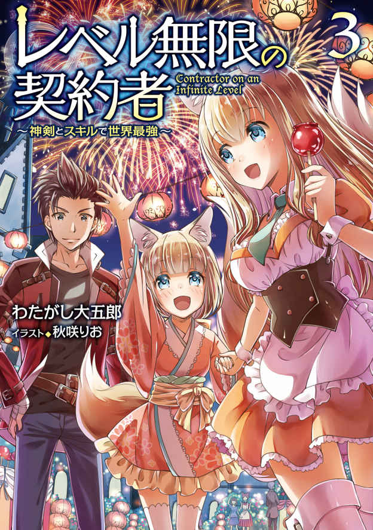
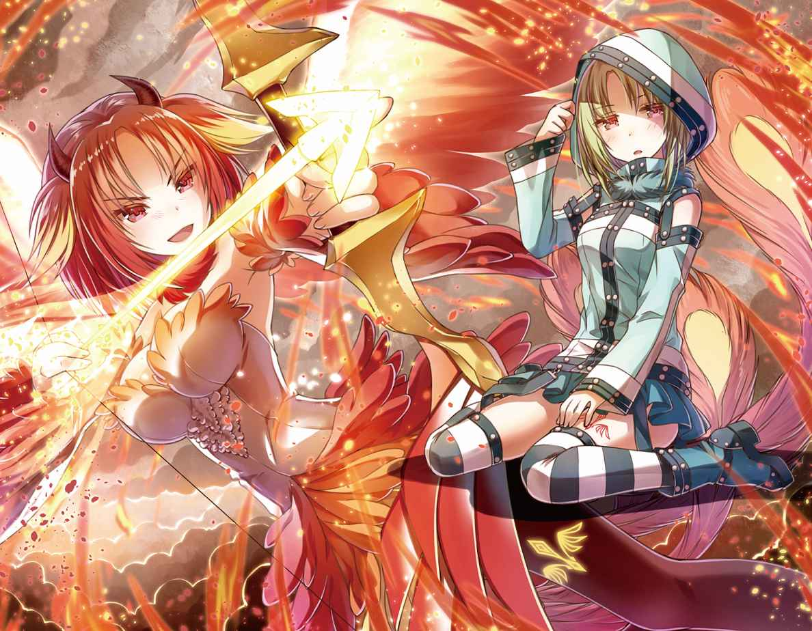
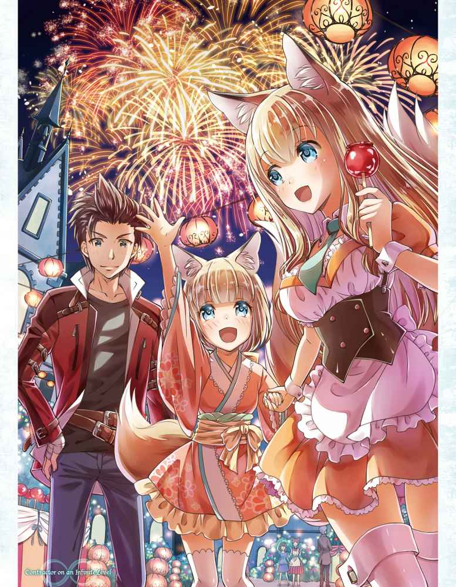
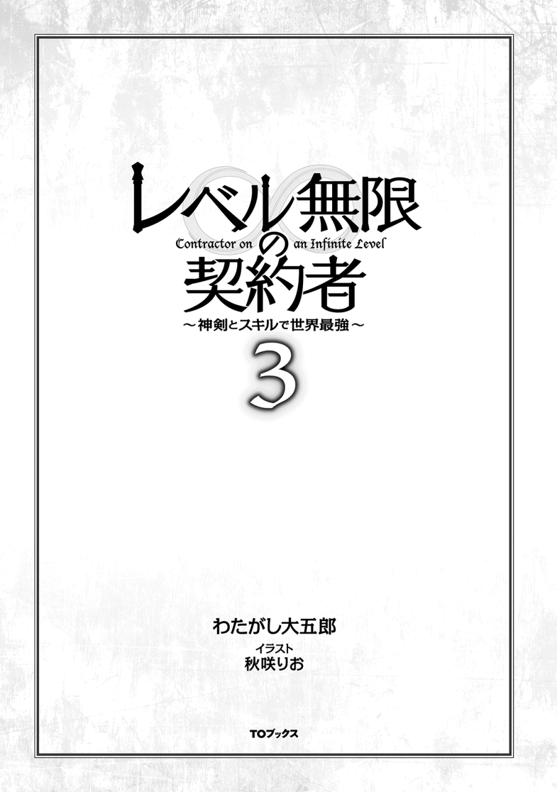
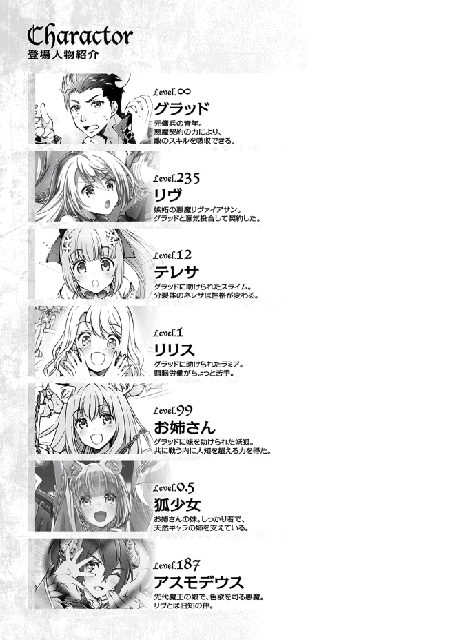
約束の地カーナ。
竜神アリエスを守護竜として祟 え、女神の血を引き継 ぐ王家が統治している浮遊 大陸。
そこは、光輝く雲海がどこまでも広がる神秘的な世界だった。
白鹿 が駆け回り、翼を大きく広げた鳥が、青い空をゆっくりと横切っていく。
すぐ横には、さらさらと流れる小川がどこまでも続いている。
地上で、これほど美しい大陸はあるだろうか。
天上は常に陽射しが差し込み、大地には一切の魔物の気配がない。
ただ延々と緑の平原が広がるばかり。
たった一人──。
緑柱珠 さながらに輝く緑髪をなびかせた、裸身の少女を除いては。
「......」
神秘的な少女だった。
宝石のように自然と輝く緑髪に、どんな炎よりも深く鮮やかな色身を帯びた紅珠眼 。
そして、その一糸まとわぬ華奢な裸身もそう。
生まれたての赤子のようにきめ細かい肌ながら、まるで透けるような白磁色の肌。
華奢 でありながら手足はすらりと伸びて、さらに年頃の少女らしい丸みも感じられる。
見た目の年齢は十六か十七。
けれどそんな外見など意味がないと言わんばかりに、少女の印象は圧倒的に神々 しい。
「ここは......？」
吹きすさぶ風に舞う横髪を手で押さえる少女。
頭上を飛ぶ鳥の群れ。
どこまでも続く空の地平線。
自分の周囲をぼんやりと眺めていた彼女が、唐突に──。
「......くしゅん！」
可愛い声でくしゃみをした。
「......寒い。ここどこだろう？ なんでわたし、こんな場所に立っているの......？」
裸身を平原に晒 したまま腕組みをする少女。落ち着いて考えようにも周囲の風鳴りがあまりに強く、そして冷たい風が肌の温度を奪っていく。
「来て、始原聖獣 」
直後、火の鳥が現れた。
少女の全身から大気へ溶け込むように。
大鷲 すらも赤子に見えるほどの巨大な翼で熱風を起こし、周囲の温度を一瞬で変えてしまった。
一方で、少女に驚いた素振りはない。
自分の一声で火の鳥が現れることなど当然という様子で前髪を手で梳 きながら、何かに気づいたように背後を振り返って。
「......お目覚めですか、怠惰のベルフェゴール 様」
黒き翼の天使が立っていた。
「わたし、断罪戦争 から、どれくらい眠っていたの？」
「......三百年です」
それを聞いて、しばし天上を見上げたままの少女。
だが──。
「......もう戦いたくない......」
その愛らしげな顔が、なぜか怯えたように青くなっていく。
天使はにっこりと笑い、最後に。
「......先代魔王様がお待ちです。力を貸してくださいますよね？」
空に向かって呟いた。
月明かりの夜。
広葉樹の森に静寂が広がった。
時折、樫 の葉が擦 れる音が、やたらと大きく聞こえてくる。
俺とお姉さんは、息を潜 めながら気配を探っていた。
「......あっ！」
お姉さんの狐耳が、ピクリ、と動いた。
彼女は妖狐族の出身。
その聴力は犬や狼を軽く凌駕 するほど優れている。
──ガサッ。
前方に気配が生まれた。
「あそこか」
軽く舌打ちして、俺は腰の鞘 から長剣を引き抜こうとした。
だが、そうする間もなく、お姉さんが鉄球を振り回したまま木々へ飛び移った。
闇夜を裂いて怒涛 の勢いで襲いかかる。
「はぁああああっ！」
裂帛 の気合と共に鉄球が振り落とされる。
轟 、と豪快な音を立てて、闇夜に隠れていた者──盗賊を制圧した。
相変わらず超人的な運動能力だ。
「て、敵襲だ!! 」
一人取り逃した盗賊がいたらしく、仲間を呼んでいる。
しかしその叫びも、すぐにかき消えた。
俺が闇の中を縫 うように移動し、盗賊の顎 に拳を放ったからである。
「ぐっ!? 」
「やかましい。静かにしろ」
盗賊は息を詰まらせて、すっ飛んでいった。
「他にはいないようだな」
俺は大きく息を吐きだしてから、辺りを見渡した。
鬱蒼 と生 い茂 る木々。
人気 の少ない群狼 の森。
茂みの奥には魔物たちの明瞭 な殺気が渦巻いている。
早く安全地帯まで移動したい、が。
「見つからないですね......」
「そうだな......」
お姉さんの問いに、俺は眉間 にしわを寄せ、汗で額に張り付いた髪をかき上げた。
全ての始まりは半日前に遡 る。
† ׆
俺の名はグラッド、身に覚えのない罪で竜の生贄 として捧げられた元傭兵だ。
生きながら竜に丸呑 みされた俺は、腹の中で伝説の悪魔──嫉妬 を司 る悪魔リヴァイアサン──の魂が込められた神剣に命を助けられ、お互いの境遇に共感し、この世界を生き抜くために契約を結んだ。
傭兵から神剣 の契約者となった俺は、旅の途中でスライム娘のテレサ、ラミアのリリス、妖狐のお姉さんらと出会い、一緒に旅をするようになった。
元英雄がリヴを狙ってきたり、神竜が復活したり、先代魔王が刺客 を送り込んできたりしているが、どうにか楽しくやれていると思う。
ただ一点だけ、普通と違う点を挙げるなら、
「グラッドさん、ジャイアントグリズリーを始末しておきましたよ」
お姉さんが化け物という点だろうか。
彼女は俺と同じくらいの年齢で、鉄球を武器に戦う元ギルドの受付嬢。
最初は普通よりもちょっとだけ腕っぷしのある女性だったが、俺たちと一緒に旅を続ける間に大罪神剣の恩恵を強く受けてしまい、今では最強の冒険者となった。
そんなお姉さんを引き連れて、俺たちは神聖樹を目指していた。
しかし、立ち塞 がる魔物──フォレストウルフの群れ。
俺たちはそれぞれ武器を取り出し、死力を尽くして応戦した。
──お姉さんが鉄球で魔物の頭を叩き潰し。
──お姉さんが拳で魔法を跳ね返し。
──お姉さんが返り血の滴 る淑女 となった。
お姉さんの活躍で手に入れた勝利。
その勝利の裏で、悲しい犠牲を払うことになるとは、予想もしていなかったのである。
† ׆
「......まさか、リリスが誘拐されるとは......」
フォレストウルフとの戦いが終わってすぐ、遠巻きに盗賊たちの姿が見えた。
そして、馬車へ引き返すと──。
荷台で待機していたはずのリリスが消えていることに気づいたのである。
リリスは寂しがり屋なので、一人でどこかへ行くとは考えられない。
そこで、盗賊たちがやたらデカい麻袋を担いでいたことを思い出した。
......盗賊に捕まった？
なにせ、リリスは美女しか産まれないラミア族の出身だ。
ラミアは一途で優しく、知能が足りない所が可愛いと一部で囁 かれている。
しかも、ラミアは希少種族なので個体数も少ない。
それがたたり、奴隷市場では超高額の商品として取引が行われているそうだ。
盗賊に目を付けられるのも無理がはなかった。
「リヴさんとテレサさんは、反対側の森を捜索していらっしゃるんですよね？」
「ああ、手がかりを見つけたら派手に暴れるって言ってたな」
盗賊がいたということは、こちら側が正解なのだろう。
さっそく俺たちは、リリスの痕跡 を捜すことにした。
「ん？」
「どうしたんです？」
「これは......」
先程、盗賊が現れた場所。
そこには草木をかき分けるように獣道が走っている。
間違いない──リリスが引きずられた跡だ。
「行ってみよう」
「はいっ」
俺たちは獣道を歩き出した。
かなりハイペースな歩みだったが、じきに森を抜ける。
そこは廃墟 だった。
倉庫や食糧庫と思わせる建物がいくつも建ち並んでいた。
よくよく観察してみると、古びたトロッコや埃塗 れの樽 などが置かれている。
線路が廃鉱に繋がっているのを見る限り、かつては鉱山として使われていたようだ。
倉庫の傍 では三人の盗賊が焚火 を囲み、酒をあおりながら意味もなく笑い声を上げていた。
見張りなのだろう。
その奥にある廃鉱こそが、盗賊の本拠地と見た。
「強行突破しますか？」
「いや、あまり騒ぎすぎるとリリスを危険に晒してしまうからな」
リリスは戦闘が苦手だ。
弓の使い方は教えてあるが、腕は素人並みである。
これでは逆上した盗賊たちに怪我を負わされる可能性が高いのだ。
まずは見張りを片付けてから廃鉱へ侵入するのがベストだろう。
「......つまり、注意を引きつければいいわけですね？」
「策 があるのか？」
「はい。私 の身が危険ではあるのですけど」
「......そうか」
お姉さんの肩に片手を置きながら、俺は曖昧 に返事をした。
彼女の実力なら、盗賊如きで身の危険を感じることはないだろう。
「......頼めるか？」
「はいっ」
お姉さんは小さく頷き、鉄球を地面に置いた。
着ている衣服を少しだけ乱すと、すぅ、と大きく息を吸い込んで。
「助けてください！」
全力疾走 。
さらに、焚火を囲む盗賊たちの目の前で派手に転んでみせる。
完璧な演技だ。
「お願い、します......助け、て......！」
激しく息を切らしたお姉さんの演技に、盗賊たちは目を丸くした。
「お。おい！ いったい何があったんだ!? 」
突然の出来事に戸惑う盗賊たち。
「悪魔が現れたんです！ 悪魔が、私の旦那様と、子供を連れさらって......うぅ......」
息を呑むほどの演技力。
「このままでは、みんな殺されてしまいます！」
途切れながらの言葉は、まさに劇団の女優のようであった。
「──まな板悪魔の手で！」
うん、この場にリヴがいなくて心から良かったと思う。
盗賊たちは顔を見合わせると、一人が言った。
「よし、オレが見回りをしてくる！」
上目遣いのお姉さんの美貌 にやられたのだろう。
格好いい姿を見せようと、俺の隠れる茂みの方へと歩いてくる。
お姉さんは泣き真似をしつつ、こっそりと俺にウィンクを送ってきた。
早い話、見つからないように盗賊を倒せってことか？
ご期待に応えようじゃないか。
俺は潜伏し、盗賊が目の前を通った瞬間にその首へ手刀を振り落とす。
「あがっ!? 」
盗賊は呻 き声を上げて、失神 した。残るは二人。
「どうした？ 何があった！」
今の呻き声を聞きつけて、さらにもう一人が近づいてくる。
その瞬間──。
「すみません、実は噓泣きでした」
「へっ？」
がしっ。
お姉さんは盗賊の頭を両手で掴 み、微笑 んだ。
「えいっ」
バキィ、ごしゃり。
盗賊の頭から、絶対に聞こえてはいけない音がした。
儚 い命がまた一つ、散ってしまった。
「貴様、何を──!? 」
「悪いが、話をしている暇はないぜ」
「がはぁっ!? 」
背中を向けた盗賊へ奇襲をかけて、地面に張り倒す。
制圧完了だ。
「クソッ、仲間がいたのか......あ」
悪態を吐く盗賊は、お姉さんの尻尾を見つめて、顔面を蒼 く染めていく。
「その九尾 、ま、まさか......」
盗賊は怯えていた。様子がおかしい。
「まさか、お前......」
歯をカチカチと鳴らしている。尋常じゃない怖がり方だ。
何が盗賊をここまで怯えさせるのだろうか。
その時だった。
「お前が──《剛腕 の受付嬢》なのか......!? 」
ピシリ。
お姉さんが石像のように固まった。
引きつった笑みを浮かべたまま、耳と尻尾が震えている。
まずい、お姉さんは腕力こそ凄いけど、性格は普通の女性なんだ。
精神面 はそれほど強くない......！
「ケッ、こんな怪力女、一生結婚ができないだろうな」
「おい！」
こいつから情報を聞き出そうとしていたが、予定変更。
拳を腹へ叩き込み、盗賊を気絶させる。
これで戦いは終わったが......俺は恐る恐る、背後を振り返った。
「......すん、ぐすん」
お姉さんが泣いていた。
「グラッドさん......私、馬鹿力じゃないですよね......？ 違いますよね......？」
「お、落ち着け......」
涙で顔をぐしゃぐしゃにして、ジリジリと近づいてくる。
そして、その両腕を大きく開いて。
「結婚できますよね!? きっと、旦那様が現れますよね？ うわあああああんっ！」
俺に抱きつき、力一杯抱きしめるお姉さん。
バキリ。
「──────────────────!? 」
人間、痛みを超越すると悲鳴を上げられないらしい。
それを悟 った俺は、必死に治癒魔法を念じながら、お姉さんを慰めることとなった。
死ぬかと思った。
† ׆
廃鉱を進んでいく。
薄暗い通路だった。
淀んだ空気の満ちる通路の壁にかけられた燭台 の炎が、僅 かな明かりを投げかけている。
奥の方からは、複数の人間がぼそぼそと話し合う声が聞こえてきた。
おそらく、不寝番 の盗賊たちだろう。
俺は辺りに見張りの姿がないのを確認すると、足早に通路を進み、奥まったところにあるドアの前に立った。
そっと耳を押し当て、中の様子を伺う。
「......リリスさんの声がしませんか？」
俺を真似て耳を押しつけていたお姉さんが、眉をひそめて呟いた。
俺には何も聞こえないが、お姉さんが聞こえたなら中にリリスがいるのだろう。
「......ここが最深部ということは、中にいるのは盗賊の親分かもしれませんね」
きっと、その予想は当たっているだろう。
俺はノブをそっと回して部屋に忍び込む。
奥に、でん！ と置かれていたベッドでは、暢気 に大男が寝ていた。
その近くの床には、両手と尻尾を紐で縛られたリリスの姿があった。
「むぐ〜っ!? 」
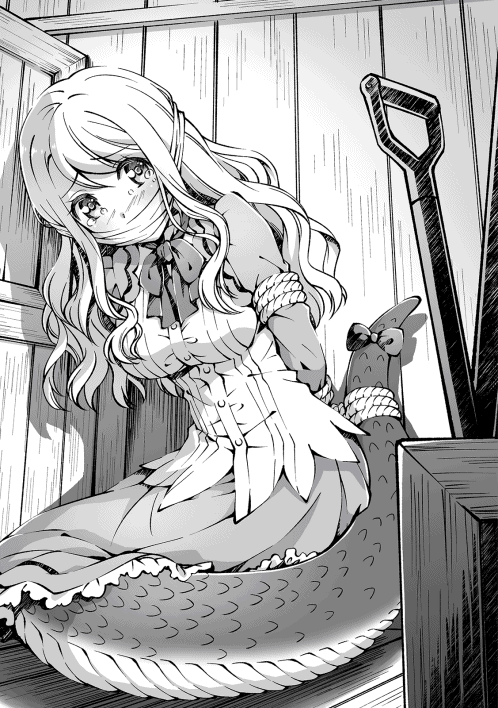
「静かにな」
俺たちの姿を見て安堵したリリスの耳元で、俺は囁いた。
「......あまり騒ぐと、こいつが起きるぞ」
「！」
リリスがびくっと首をすくめ、すぐにその全身から力が抜けた。
冷たい床だ。
リリスはこんな場所に転がされていたのか......。
「はい、ロープを解きましたよ」
お姉さんがロープを引きちぎり、噛まされていた布を外してやった。
「う......」
涙に濡れたリリスの頬に、新たな涙が伝っていく。
何度も大声で泣き叫びたかったのだろう。
けれど、それをしなかったのがリリスの最後の抵抗だったのかもしれない。
「......怖、がった」
リリスは唇を噛み締め、声を押し殺して泣いた。
盗賊に連れ去られたこともショックだったのだろうが、自分が俺たちの足を引っ張っているんじゃないかと考えているのかもしれない。
まったく気にしなくていいことだが、奴隷として育てられてきたリリスは、自分に自信を持っていないので、そう考えてしまうのだろう。
「よし、まずはここから脱出するか」
「そうですね」
リリスを抱き抱えて部屋を出た俺は、ふと、リリスの胸の辺りを見やった。
「ど、どうしたの？」
涙目で、ぽーっと見上げてくるリリスに、俺は視線を逸らしながら言った。
「いや、何もされてないよな......と思って」
「も、もちろんだよ!? 」
「ということを言いたかったわけじゃない。帰ったら食べたいものはあるか？」
「え」
「今日のことはすぐに忘れられないと思うけど、元気を出して欲しいからさ」
「グラッドくん......くすっ、ありがと！」
リリスは気が抜けたように笑ってくれた。
もしかしたらリリスは、俺が気を和らげるためにそんな話をしたのを見透かしているのかも。
「......止まってください。誰かが近づいてきます」
お姉さんが呟いて、すぐのことだった。
「逃がすな！ まだ遠くへは行ってないはずだ！ 探し出して殺せっ！」
「「「 はっ！ 」」」
怒りの声で、盗賊たちが散っていく物音が聞こえてきた。
「急いで脱出しましょう」
お姉さんに賛成し、俺は急ごうとした。が、
「......っ」
リリスの様子がおかしい。なるべく静かに走っているのだが、口から漏 れる息づかいが荒くなっている。まるで、何かを我慢しているかのようで。
「......まさか」
俺は立ち止まり、リリスを床に降ろした。真っ青になるほど唇を噛んで苦悶 しているリリスを見下ろして、服を無造作にずり上げた。
「わわ、何を──!! 」
「これは......」
脇腹が、青く腫 れていた。
「リリス、どうして黙っていたんだ？ 痛いなら隠す必要なんてないんだぞ？」
俺は怒っていたのかもしれない。
リリスの怪我に気づけなかった自分自身に。
「かなり内出血しているな......捕まった時に蹴 られたのか？」
「うん......」
「血は吐いたか？」
「ううん、大丈夫......」
「折れてはいない、か......」
「せめてもの幸いですね。ご無事でよかったです......」
お姉さんは荷物から水筒を取り出し、ハンカチに染み込ませてリリスの脇腹へと当てる。
そこで、リリスは立ち上がろうとした。
「足手まといとか、そういうの......わたし、なりたくない、から──」
やはり気にしていたのか。
「あのなぁ」
俺はリリスの頬 を引っ張った。
「い、いひゃい......」
「リリスが足手まといなら助けに行かない。俺たちがそうしないのは、リリスが切り捨てられない仲間だからだ」
「グラッドくん......」
「同じように深い手傷を負って俺が満足に走れなくなったら、リリスは俺を足手まといとして切り捨てるのか？」
「そ、そんなことしないよっ！」
壁に手を当てて呼吸を整えながら、リリスは俺を見つめてきた。
「それなら、自分を足手まといだなんて卑下 しないでくれ」
俺は唇を歪めた。
昔、約束したんだ。彼女たちを守ると、約束した。
「ごめんね......」
「構わんさ。まずは生きて帰ろうぜ」
満面の笑みを浮かべて、俺はリリスに治癒魔法を施した。後は逃げ出すだけだが。
「へっへっへっ......見つけたぜ」
見つかってしまった。
「命が惜しけりゃ、とっとと武器を捨てるんだなぁ！」
盗賊の親分らしき大男と、部下っぽい連中が立ち塞がる。
......こいつのせいでリリスは......。
「......リリスをさらいやがって。王都や都市で盗賊をするほどの根性がないのなら、大人しく真っ当に働いてりゃいいだろうが」
「そうですね。無抵抗な女性をさらうとか最低の行為ですよ」
俺の怒りに、お姉さんも頷いた。
「うるせえっ！」
興奮する盗賊。
「人外 をどうしようが、人間の勝手だろうが！」
この世界には人間以外の種族──人外が暮らしている。
人外とは、人間に分類されながらも動物のような見た目を持つものたちのことだ。
特徴としては、人間に比べて地位が弱く、世界中で迫害されている傾向が強い。
むろん、それらを正そうという動きも始まっている。
──と、一応断わっておくが、俺、グラッドは人外への差別はしていない。
幼い頃から理不尽な要求に従ってきた反動かもしれないが、人外が苦しんでいる姿を見るのは胸が痛いし、むしろ助けに入ってしまうほどだ。
ともあれ、人外をさらうような連中への慈悲はない。
大概は気絶させて役所へ突き出すのが通例だが、こいつ等 にはリリスが世話になった。
俺なりの制裁を与えてやろう。
「降伏すれば命は助けてやるぞ？ 下手に出てやりゃあいい気になりやがって！」
いつ下手に出たんだ？ いつ。
「こうなりゃ力ずくだ！ お前ら、出てこい！」
親分の合図で、背後からぞろぞろと現れる盗賊たち。
短剣だけではなく、弓矢を用意している盗賊もいるようだった。
まだこんなに残っているのか。
「こっちだ！」
「ラミアもいるぞ！ 逃がすな！」
叫ぶ声と一緒に、矢羽が風を切る音が断続的に走った。
「やれやれ......リリス、捕まっていろよ」
「うん......！」
リリスを抱き抱え、大きく踏み込み、物陰へ移動した。
数秒の浮遊感のあと、リリスをそっと降ろした。
「全員、あいつらを殺せ！」
「「「 うおおおおお！ 」」」
短剣を持った盗賊たちが一斉に斬りかかってきた。
「数だけは多いが──」
燭台の炎に彩られた視界へ、鈍色の一閃を放つ。
俺の抜剣した一撃に、血飛沫を上げて盗賊がまとめて吹っ飛んでいく。
少し離れた位置で、お姉さんも戦っていた。
一気に殲滅 する。
五人、六人──盗賊を蹴散らしたその時だった。
入口の方から、新たな影が近づいてきた。
「間に合ったようね！」
桜色の髪をなびかせて、魔術師の外套 を左肩に纏 っている少女はリヴだ。
彼女こそが嫉妬の悪魔。
今は大罪神剣に魂を封じ込められているので力の大半を失っているが、それでも桁違いの魔力から繰り出される魔法は、まさに最強であった。
「ご主人さま、お待たせしましたです！」
丁寧な口調で告げたのは、柔らかな空色の髪が印象的なスライムの少女だった。
海よりも深い瞳に、妖精のように儚くも愛らしい面立ち。
旅用のドレスに身を包んだ華奢な肢体も、可憐というほか表現のしようがない。
「この辺りから悲鳴が聞こえてたから、急いで駆けつけたのっ！ あなたたち、よくもリリスを誘拐してくれたわね！ もう許さないんだからっ！」
怒りに染まるリヴは、両手を突き出して魔法を構築した。
その両手が燃えるような赤に染まっていく。
「覚悟なさい！ エクスプロージョン！」
リヴのそんな呟きが聞こえた直後、轟、と俺の視界を灼熱の炎が埋め尽くした。
エクスプロージョン──火属極限魔法だ。
この魔法は大爆発を引き起こし、大範囲を一撃で制圧する威力を持っている。
そんな魔法をこの狭い通路で使ったらどうなるだろうか？
「まずいっ!? 」
俺は剣を鞘に納め、超速度でリリスを抱き抱えた。
「全員、外へ逃げろっ！」
お姉さんとテレサも気づいたらしい。
リヴの首根を強引に掴み上げて、全員で出口へと全力疾走。
刹那 、たった今まで俺たちが立っていた場所から、大爆発が発生する。
リヴの魔法が廃鉱を崩落させているのだ。
盗賊たちが巻き込まれ、吹き飛び、天井が崩れていく。
「ああもうっ！ なんでこうなるんだよ！」
泣き言じみた声を上げながら、俺は廃鉱を走り抜けた。
かくして。
廃鉱は崩壊し、盗賊たちは生き埋めになった。
俺たちの影が、月明かりに霞んでいく。
静かに照らされる木々も、皆同じ色に染まり、時々、寝ぼすけなフクロウの声が群狼の森を吹き抜ける。
昼には耳障りなフクロウの声も、不思議とこの時間には柔らかい。
そんな、真夜中の森で。
「リヴ、少しは反省したか？」
「い、いひゃいって！ ごめん、あたしが悪かったから頬を引っ張らにゃいで！」
俺たちは呼吸を整えながら、馬車へ向かっていた。
あの後、廃鉱の爆発によって周囲の家屋まですっかり吹き飛び、廃墟は瓦礫の山へ姿を変えた。
結局、いつものようにリヴの活躍で解決したが、「あたしって凄いでしょうー？」と自分を過大評価していたので、お仕置きとして頬を引っ張っていたのである。
「ううう、リリスが誘拐されて、頭に血が上っちゃったのよぅ......」
呟いて、よろよろと月明かりの道を歩く。
外見がおおよそ十二の少女とは思えない、疲弊しきった足取りだった。
リヴたちがリリスを詮索していた森は、ここから離れている。
でも、駆けつけてくれた。
俺とお姉さんが盗賊に遭遇したと知って、全速力で駆け付けてくれたのだろう。
「ありがとうな」
「ううん、気にしないでいいのよ」
リヴは、えへっ、と笑みを浮かべていた。
「リリスさま、お身体の汚れは拭き取れましたですっ！」
「テレサちゃん、助かったよ！」
「いえいえ！ 綺麗な尻尾ですよね」
俺たちの隣では、身体中の汚れを拭き取るリリスとテレサの姿があった。
リリスは長い金髪を指で梳 かしながら、ほっ、と安堵の吐息を漏らしている。
治癒魔法で怪我もすっかり治ったようで、もう心配はないだろう。
無事でよかった。
（......今が楽しい、か）
ふと、思う。
傭兵時代の過去は、殆ど思い出したくない。
人を殺 め、あの人を失って、がむしゃらに剣を振ってきた日々だからだ。
だから、俺がこうして笑いながら旅をするなんて、昔は想像もつかなかった。
（──リヴのおかげだな）
まがりなりにも、俺を契約者として選んでくれた。
単なるなりゆきとも言えるけど、それだけじゃないと、俺は思う。
多分、惹かれ合ったのだ。
お互いの境遇があまりにも似ていたから。
文句はあっても、ひどい目に遭っても、リヴと一緒にいられることが心地よかった。
だけど、それだけでいいのか考える。
リヴを守りたいなら、どうあるべきなのだろう。
（あの人ならどう言うんだろうな）
当然のように人の上に立つ、秘剣の猛犬 と呼ばれた高慢なお嬢様傭兵。
自分の信念を貫く彼女なら、どんな風に答えるだろう。
──あるいは。
（お姉さんなら、どんな風に......）
「グラッドさん、怖かったですね！」
お姉さんが背中から抱き着いてくる。
──ぎゅっ。
また、全身に激痛が走った。
「あわがぎゃばぐらびゃああああああっ!? 」
陸に上げられた魚のようにのたうち回って、ようやくお姉さんの無自覚な抱擁から解放されると、俺はよろよろと立ち上がった。
し、死ぬっ......殺される......。
一番の敵はお姉さんなのかもしれない。
「......えっと」
「どうされました、リリスさん？」
きょとんとお姉さんが首を傾げた。
「みんなに、お礼を言わないとね」
肩をすくめて、リリスは曖昧に笑った。
「......助けてくれて、ありがとうございました」
「あら、お礼なんていいのよ」
すんと鼻を鳴らして、リヴが告げる。
「で、でも......」
リリスがひどく驚いたように息を呑んだ。
「当たり前のことでしょう？ それとも、リリスは恩を押し付けられた方が良かったかしら？」
「あ、あ、ううん、そんなことはないけれど」
真っ白な手を振るリリスに、リヴが微笑した。
すっと手を伸ばす。
リリスの長い髪を撫でて──そのまま、抱き寄せた。
「よしよし、もう大丈夫だからね。リリスはいい子だからね。あとは任せてね！」
「「「 ............ 」」」
俺も、テレサも、お姉さんも凍りついた。
いや、少なくともリリス以外の俺たちにとっては、時間が止まったと言っていい。
リヴに、あんな包容力があったんだなぁ......まるで母親みたいだ。
「みんな」
愛しげにリリスは俺たちを順番に見て、こう囁いた。
「これからも、よろしくね......！」
† ׆
「さて──と......」
身体を引きずるようにして、馬車まで戻ってきた。
少し前に立ち寄った温泉街で、特上の水羊羹 を買ってあったと思う。
宿を旅立つ直前に買った、自分へのご褒美のつもりだった。
旅を続ける前に、これをみんなで食べるぐらいは許されるだろう。
さっそく荷台から取り出して、テレサの氷魔法で冷やして食べよう。
そう思ったのだが、急に足が止まった。
「──え？」
きょとんとして、声が漏れた。
俺たちの幌馬車は、五人で旅をするには充分なほど荷台が大きくなっている。
大型の人外であるラミア──リリスが寛 げるようになっているからだ。
荷物や布団が綺麗にまとめられたその荷台に。
女性がうずくまっていた。
「────っ！」
だけど、俺が絶句したのはそのためではなかった。
女性の様子は、あまりにも不自然だった。
天使族かと思われる十六歳ほどのその顔立ちではなく、吸い込まれそうなその緑柱珠 の長髪でもなく、馬車の荷台でうずくまっていることでさえなく、彼女のその全体のありざまが何か危うかった。
──たとえば、どうしようもなく白い肌。
──たとえば、ぴくりとも動かない胸元と指先。
──たとえば、半分だけ閉じられた、虚ろな瞳。
つう、と俺の頬を冷や汗が伝う。
血液という血液が凍結し、逆流した。
「まさか......」
ごくり、と唾 を呑む。
どうしようもない予感に心臓を掴まれながら、ゆるりゆるりと近づいていく。
足裏から胃袋にかけて、嫌なものが流れ込んでいく感覚。
なんでこんなに、と思った。
だって、それは、
その女性が、あまりにも、生きていなくて。
「死ん、で......？」
そう、女性が死んでいるのかと......。
「............？」
女性の顔が、ぎこちなく持ち上がった。
「────っ!? 」
飛び跳ねた俺が、その勢いで荷台から落下する。
頭に激しい衝撃を受けながら、俺は地面を転がった。
「ど、どうしたの？」
「......びっくりした」
心配そうに覗き込んでくるリヴの手を借りて、立ち上がる。
その前で、荷台の女性は白い首を傾げていた。
「大丈夫？」
女性は微笑んだ。
静かで、柔らかな声音。
そのゆったりした喋り方は独特で、軽装にも満たないパーカー姿だった。
潤 みがちな瞳は半分閉じられており、今にも寝てしまいそうな女性である。
背中には荘厳 なる弓と矢筒を背負っており、どこか神秘的な魅力を感じてしまう。
俺も様々な種族と出会ってきたが、だとしてもこれほど整った──なんというか、美しい人形のような相手を見るのは初めてだった。
「な......」
いったい誰だろう。
一度、声をかけようとして。
「久しぶりだね、リーちゃん 」
と、答えが返ってきた。
「......怠惰のベルフェゴール!? 」
敵だったらどうしようかと思ったが、やはり敵だった。
俺は長剣を引き抜いて、ベルフェゴールを討てる範囲で構えた。
「身構えなくても大丈夫だよ。今は、戦うつもりはないから」
その言葉の真意は分からないが、こんなにも隙がない女性を見たことがない。
少なくとも一流の騎士ですら、もっと空気が穏やかだ。
「こうしてお話するのは三百年ぶりだね。昔は仲良くやっていたはずだけど、リーちゃんはどうして悪魔を裏切ったの？」
──怠惰のベルフェゴール。
三百年前の断罪戦争で、大罪神剣に封印された大罪を司る悪魔の一柱。
リヴと同じ階級の悪魔ということから、その魔力は格が違うことが安易に想像つく。
まずい、と思った。
本当に戦うつもりがないのかは不明だが、こんなところで戦ってはみんなを巻き込んでしまう。かといって、大人しく剣をしまうわけにもいかない。
困ったので、そのままベルフェゴールへ視線を向け続けた。
ベルフェゴールは何も言わずに、ずっと俺とリヴを交互に見つめていた。
「先代魔王なんかに、手を貸せるはずがないでしょう？ ベルフェゴールもあいつが即位することに反対していたじゃない！」
「そうだったね。でも、先代魔王様に忠誠を誓わなきゃいけない理由があるんだよ？」
「待ってくれ」
「？」
軽く舌打ちしてから、俺は言った。
「ベアトリクスを倒してから、まだ四日しか経ってないはずだ。その時、他の大罪神剣は復活していないと聞いた。それなら、どうしてベルフェゴールは復活しているんだ？」
四日前。
俺たちは氷雪遺跡で、先代魔王の腹心との死闘に巻き込まれ、危うくテレサを失いかけたが、どうにか勝利を掴むことができた。
その時、俺たちに力を貸してくれた色欲の大罪──アスモデウスが教えてくれたのだ。
『──先代魔王は、他の大罪神剣の復活を急ぐかもしれませんわ』
あの言葉の通りになってしまった。
「さあ。先代魔王様の事情は詳しく知らないけど、私が目覚めたのは三日前だよ。黒い翼の天使が浮遊大陸に封印されていた私を解き放ってくれたから」
にへら、とベルフェゴールは頷いた。
「でも」
ベルフェゴールは寂しそうに呟いた。
「──本音を言うとね、私は戦いたくないかな？」
「......え？」
それまでの人形のような態度から一変。
本気で悲しそうに呟いてきた。
「断罪戦争の再現って言うけれど、要するに喧嘩に負けたことを認められない先代魔王様の復讐だよね？ 冷静に考えたら、断罪戦争は悪魔が敗北して終わったはずだよ。人間も、人外も、悪魔も、多くの犠牲を支払った。それなのに、三百年も経ってから蒸し返すなんて馬鹿らしいよ」
返す言葉がない。
ベルフェゴールの言う通りだった。
今を生きる人々にとって、まったく無縁の過去。
それどころか、悪魔という種族も殆どが姿を消した世界なのだ。
「ベルフェゴール......あなた、もしかして......」
フクロウの声が遠い。
どこかでバサバサと、鳥が飛び立つ音が聞こえた。
微かに、甘い香り──果物だろうか、優しい匂いがする。
きゅううう......と、可愛い音が鳴った。
お腹の音だった。
「あ」
俺かと思ったが、発生源は正面であった。
うつむくでもなく、恥ずかしがるでもなく、不動で俺たちを見つめている。
「腹......減っているのか？」
「............」
馬車の荷台に乗っている林檎 を、じーっと見つめていた。
「......食べるか？」
「ちょっと、グラッド!? 」
ベルフェゴールは黙ったまま、ものすごく驚いた顔をした。
その顔のまま、小さく頷いて、荷台から降りてくる。
「......あ！」
こてん。
今度はベルフェゴールが転んだ。
気づけば、空気が穏やかになっていた。
敵意など微塵 もなかった。
「立てるか？」
「うん、ありがとう」
右手を貸すと、右腕に絡んできた。
......デカい。
この胸、特上である。
服の上からだと分からなかったが、なんだこの大きさ......リリス以上じゃないか。
「あれ、赤くなってる？」
クソッ、俺、女性からの接触に免疫 がなさすぎだろう......。
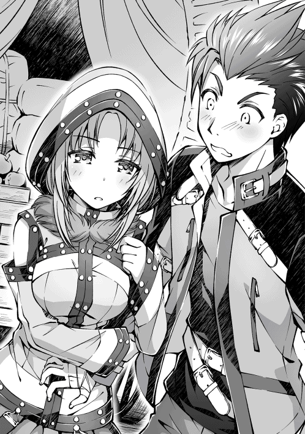
「うー」
そんな俺の様子を見て、リヴが唸 った。
「......あたしは必死に嫌いな牛乳を飲んだり、苦手なお魚を食べたりして頑張っているのに、どうして寝てばかりいるベルフェゴールの方が、お胸が大きいのよぅ......」
リヴよ、落胆する場所はそこなのか。
しばらくして、ベルフェゴールが俺から離れた。
「だから、ごめんね？」
「？」
ベルフェゴールはふるふると首を横に振った。
「戦いたくないけれど......わたしにも、守らなくちゃいけないものがあるから」
「何を──」
「先代魔王様が生きている限り、私は戦うことしか許されないから」
妙な胸騒ぎがする。
「テレサ、リリス、お姉さん！ 物陰に隠れろ！」
「どうしたんですか？」
最初に反応したのはお姉さんだった。
でも、遅かった。
ベルフェゴールは顔を上げて、薄い微笑みを向けてくる。
その微笑みは、親しい人にだけ見せる柔らかなもの。
それが、突然変わった。
「出ておいで、始原聖獣 」
息が詰まった。
魔力が膨らんだ。
風が、不自然に踊り始める。
ベルフェゴールを中心に、膨大な熱が拡散された。
「力を貸して！ 天空を支配する大いなる公爵ッ！」
闇夜を赤く染める地獄の業火 。
それがベルフェゴールの肉体を包み、真紅の炎と融合していく。
たちまちその姿が変わっていく。
燃え盛る魔力、異様に赤い炎の中から人影が現れたのだ。
文字通り、それは火の鳥。
いや、違う。
火の鳥を宿したベルフェゴールそのものだった。
極限の魔力が解き放たれて、ベルフェゴールの姿が変貌 している。
若葉のような緑髪は、猛る炎のように。
小さく丸い頭部からは、悪魔特有の角が二本生えている。
着ていたパーカーは燃えつき、代わりに赤と白で染められた戦闘衣の姿。
先ほどは肌の露出が少なかったにも拘わらず、今は胸を強調するような大胆なものへ。
さらに、華奢な背中からは極大の炎の翼を生やしていた。
夕焼けにも似た幻想的な色。
それはまさしく不死鳥 であった。
「すべて、焼き尽くして」
ベルフェゴールが羽ばたく。
満月を背景に天高く舞い上がる。
身体の倍はありそうな灼熱の翼。
そこから、どお、と魔力の熱風が舞い込んだ。
「──インフェルノ・ダウン！」
轟っ、と炎の塊が雨みたいに降った。
それに留まらず、火柱が天高く立ち上る。
その衝撃を受けて森が燃えていく。赤い魔力が広がっていく。肌が焼けていく。
濃密過ぎる魔力が、物理的な現象を引き起こしていた。
「これは......」
途方もない──ベルフェゴールの魔力。
その魔力が世界を満たさんとする。
赤く。朱く。紅く。
ベルフェゴールの炎が──世界を侵し始める。
「させないわよ！」
リヴが吼 えた。
あまりの熱によろめきながらも、俺の前に出る。
結界魔法を紡いだ。
「──来たれ精霊の盾！ 万物を防ぐ、強壮なる絶対防壁！」
詠唱を受けて、竜を象った炎の大盾が顕現する。
同時だった。
ベルフェゴールの熱風と、リヴの大盾が衝突したのは。
途轍 もない衝撃と火の粉に、俺は顔を覆った。
鮮やかに散った火の花びらの向こう側に、絶望的なものを見た。
木々が無残に燃え上がり、灰となって月に昇っていく。
「リーちゃん、その程度の魔法で防げると思っているの？」
「......ぐぅっ！」
ベルフェゴールが、不思議そうに首を傾げた。
そして、腕を捩 じる。
「きゃあっ」
リヴが、地面と水平に吹っ飛んだ。
その身体を俺は受け止めて、仰向けに倒れる。
「今のリーちゃんでは、私に勝てないよ？」
現状の実力では、ベルフェゴールの方が上位。
俺は、リヴと視線を合わせた。
「──グラッド！」
「ああ」
吐息を漏らす。
熱い。
右腕が熱い。
ベルフェゴールの熱なんかよりも、遥かに熱かった。
右腕を炎に押し付けているような錯覚さえ覚えた。
その熱さえ心地よかった。
「さあ......俺が相手だ......！」
我慢できず、包帯をむしりとる。
その下から現れたのは、契約刻印を赤く刻んだ腕だった。
炎の如く燃え上がる──人間の色素では決してありえない──紅玉 の腕だった。
それが、濃密な魔力の中で、ひときわ赤く輝く。
リヴが燃え上がる剛剣へと姿を変えていく。
俺は神剣 を引き抜いた。
▼神速 を修得しました。
「............」
ゆっくりと歩きだす。
最初は壊れた人形のようにぎこちなく、やがて堂々と走り始めた。
その都度、神剣から零れた魔力が炎を打ち消した。
やがて、ベルフェゴールもそれに気がついた。
「人間が悪魔を守る......グーちゃんって面白いね」
「グーちゃん......？」
「気に入った人にだけつける渾名 だよ？」
興味あり気に、視線を向けてくる。
炎が盛り上がり、形を取った。
灼熱の獅子 。
強靭 な業火の爪が、俺めがけて凄まじい速度で振るわれる。
──ふわ、と俺はステップを踏んだ。
神速スキルを発動しただけで、俺はベルフェゴールの背後に立っていた。
「ご主人さま！ 後ろです！」
気配を感じた。
無数の炎の塊が、俺に飛来している。
どっ、と風を穿 つ一撃。
だけど。
俺が僅かに頭を傾けただけで、その一撃は空を切った。
そして、前に出る。
熱風の発生源──ベルフェゴールを見た。
「終わりだ！」
「っ！」
やるしかない。
緊張が破れる、その一瞬をはかる。
宙を蹴った。
烈風が僅かに弱まった瞬間を見計らい、ベルフェゴールへと肉迫する。
神剣を放った。
「劫火一閃！」
ベルフェゴールは炎の翼で自分の身を庇う。
──瞬間、音が弾けた。
結界は砕け散り、獣たちの鳴く声がする。
夜風の音だ。
微妙な調整で成り立っていた結界が、今の一撃で崩壊したのだろう。
辺りに燃え広がっていた炎が全て消えていく。
攻めるなら今しかない。
「リヴ！」
神剣 で、一気に終わらせてくれる。
が......。
「は？」
俺は、しばらく口を利けなかった。
それだけの衝撃が、目の前にあった。
「ぐらっどー！ 抱っこして！」
俺の右手には、幼くなったリヴが手を繋いでいたのである。
「リヴが......子供になった？」
呆然と呟いた。
何が起きたとか意味がわからないとか、そういう感情よりも、ただ信じられないという思いの方が強かった。
しかも、被害はリヴだけでは終わらなかった。
「パパぁ......だ、抱っこしてください......！」
俺の側までとてとてと近づき、おどおどとズボンを引っ張るのはテレサそっくりの幼女。
否、間違いなくテレサなのだろう......何が起きているんだ？
「むぅ、テレサ！ ぐらっどはあたしのー！」
「ひう......パパと一緒にいたいです......ぐすんっ......」
「ふたりとも、喧嘩は駄目だよー！」
喧嘩を始めるリヴとテレサ、それを止めようとする幼いリリス。
......何だよ、これ。
胸が大きく揺さぶられた気分だった。
「全員、子供になっちまったのか!? 」
「うん、正解」
ベルフェゴールが応えた。
「怠惰 の固有能力は『心身退化』。あの炎を浴びたら、肉体と精神が退行しちゃうんだ」
満足したように、ベルフェゴールが笑った。
「誰もが一度は経験した記憶を呼び起こさせるの。楽しかった頃の記憶。どんなに堕落しても怒られなかった時代に戻りたいと、人は常に願っている。だからね、驚く必要はないよ」
本当に、何事でもないようにベルフェゴールは語る。
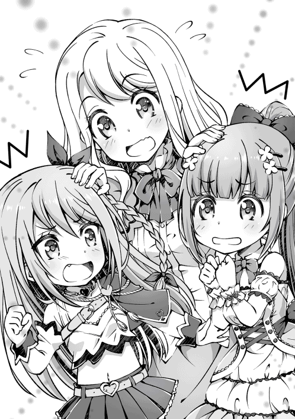
微笑する。
その唇の赤さ。儚い艶 めかしさ。人知を超えた美しさは、狂気だった。
「始まりも、終わりも訪れない。延々と──楽しかった記憶を繰り返せるのだから」
ベルフェゴールが淡く笑う。
「さあ、グーちゃん。第二回戦だよ。円舞曲 を踊ろう？」
「くっ──」
ベルフェゴールが両手を開いて、俺へと近づいた。
それよりも早く。
「！」
突然、ベルフェゴールの動きが止められたのである。
「間に合いましたね」
横合いから投げられた鉄球が、ベルフェゴールの翼を撃ち抜いたのだった。
当然、ベルフェゴールは体勢を崩して地面へと転ぶ。
今の攻撃は......。
「グラッドさん、安心してください。これくらいのデメリット、私には通じません」
ふるりと振り返る。
驚いた。
そこには、十歳程度まで若返ったお姉さんが平然と立っていた。
「平気なのか!? 」
「はい。身体は小さくなりましたけど、痛みはないですね」
肉体年齢は幼くなっているようだが、精神年齢は元のままのようだ。
「......へえ」
ベルフェゴールは口ごもり、むくりと立ち上がった。
「わたしの能力は人の存在意識に語りかけて、その人のやり直したいと願う過去まで肉体を退化させる力なんだ。そこの妖狐さんは十歳の時に、よっぽどのトラウマを抱えているんだね」
そうか、そういうことか。
お姉さんは十歳の頃、両親を失い、妹をさらわれている。
それから、ずっと後悔して生きてきた。
もし時間が巻き戻せるのなら、十歳の頃まで戻りたいと強く願っているはずだ。
それは、圧倒的な感情だった。
だから、リヴたちほど肉体が退行しなかったのか。
「私の過去も悪いことばかりではありませんね。さあ、一緒に戦いましょうっ！」
心強い味方であった。
「......ううん、目的は果たしたから、これでいいかな」
空気が鳴動 した。
風の音に乗って、大気が鳴った。
森の澱 んだ赤い魔力が薄くなっていく。
ベルフェゴールが飛翔した。
「ふふ、三日後、また会おうね」
目を見張る。ほんの一瞬の交錯だった。
最後にそう呟いたベルフェゴールは、夜空の向こうへと飛び去っていった。
「逃げたのですか？」
「いや、見逃してくれた感じだった」
殺気が、夢幻の如く消え失せた。
「......」
俺たちだけが残っている。そう、俺たちだけが。
「「「 ねね！ 」」
拍子抜けした声を出したのは、リヴたちだった。
あどけない瞳で、俺に声をかけてきた。
若い、いや、幼いままである。少なくとも元の姿には戻っていない。
リヴたちは、ゆっくりと俺を見上げてくる。
「ど、どうした？」
すると三人はしばらく無言の後、にっこりと笑い、一斉に叫んだ。
「「「 お腹すいたー！ 」」」
俺とお姉さんは少しの間、その言葉の意味を考えて目をぱちくりとさせていた。
やがて理解に達すると、中身は間違いなくリヴたちなんだなぁと安心したのであった。
「ぐらっど、さっきからどうしたの？ あたしの顔に何かついてる？」
森を抜けてすぐ、俺の膝の上に座ったリヴが不思議そうに見上げてくる。
容姿 は五歳くらい。
雰囲気は普段と何も変わらないが、幼子特有の可愛さに満ち溢れている。
あのリヴが、ここまで素直に甘えてくることなんてあっただろうか？
確か、真夜中に幽霊の話をしたらリヴが眠れなくなって一緒の布団で寝た時と、俺のケーキを欲しがってきた時と、野良猫の肉球をぷにぷにしていたら噛みつかれて怯えて離れなくなった時......。
うん、何度もあったな。
とはいえ、一応は緊急事態だ。早く元の姿に戻さなければ。
「パパ、テレサもお膝に乗りたいです、ぐすんっ......」
寂しそうな涙声で訴えてきたのは、荷台から顔を出したテレサであった。
やはり五歳くらいの容姿。
普段は元気いっぱいの姿を見せてくれるが、今は幼く甘え盛りの様子。
俺と一緒にいないと不安で仕方ないらしい。
昨夜、こっそりトイレに行こうとしただけで、
『パパッ、どこへ行くんですかっ!? テレサもご一緒したいですっ、ぐすんっ』
等と、一緒に付いて来ようとして、大変困った事態になってしまった。
時間がある時は手を繋いだり、頭を撫でたりしているのだが、一向に満足しない。
しかも、嫉妬心が強いのだ。
リヴが無邪気に抱き着いてくると、テレサはビクリと肩が跳ねて、俺たちの様子を伺ってくる。
そして、今みたいにおねだりをしてくることが多い。
「すまん、リヴ。ちょっとだけ替わってやってもいいか？」
誰か一人だけを特別扱いするわけにもいかない。
極力、俺も公平に扱おうとしているのだが......。
「............やだっ」
プイッ、と顔を逸らされてしまう。
リヴは拗 ねてしまったようだ。
テレサは今にも泣きだしそうだった。
こんな時、俺はどうしたらいいのだろう。
このままリヴを膝に乗せていたら......。
『グラッドさん、私が馬車を運転しているのに、隣で幼女といちゃいちゃするなんて素敵な度胸をしていますね!? 天罰を与えましょうか！』
『うわああああ！ すみませんすみませんすみません！』
一瞬、地獄絵図が脳裏を過ぎった。
鉄球を振り回し、俺の首を締めあげるお姉さんが映し出された地獄絵図だ。
このままリヴと抱き合っているのは危険である。
ならば、テレサと抱き合った場合はどうなるだろうか？
『グラッドさん、私が馬車を運転しているのに、隣で幼女といちゃいちゃするなんて素敵な覚悟をされていますね!? 地獄へ招待してあげます！』
『うわああああ！ すみませんごめんなさい申し訳ありませんでした！』
............。
どっちにしても地獄絵図か。
どちらを選んでも攻撃をされるのなら、何もしない方が得という単純な理由で、俺は動かないことを決めた。
「テレサちゃんはグラッドくんが大好きだもんね！」
「はい、です......」
テレサを慰めるのはリリスであった。
こちらは七歳くらいで、テレサとリヴの姉のように立ち振る舞っている。
世話好きのようだ。
「リヴちゃんもテレサちゃんと替わってあげようよ？」
「えーー、あたしが先だったもん！」
「うぅ、ずっとパパを独り占め、ずるいですぅ......」
「やあ！ 放して！」
「リヴしゃま、テレサもぉ！」
しばし様子を眺めてみるものの、喧嘩に愛嬌はあるが、二人の暴走は止まりそうにない。
普段は仲良くやっている二人の喧嘩に、お姉さんも振り返った。
「......もう、仕方ないですね」
手綱を緩めて、お姉さんは言った。
「リヴさん、私が抱きしめてあげますよ？」
......シン──。
二人は喧嘩をやめた。
「ややや、やっぱり大丈夫。てれさ、ごめんね！」
「ううん......テレサも、悪かったです......」
物分かりが良くなったな、おい。
「遠慮しなくていいんですよ？ ほらほら」
お姉さんが普通じゃないことは認識しているから、困っているんだろうなぁ。
「思いっきり抱きしめるだけですから」
いたい、いたいですね。わかります。
「ねね、グラッドくん......今夜は一緒に寝てもいい？」
ん？ リリス？
「グラッドくんになら、何をされてもいいから......！」
............。
落ち着け、落ち着くんだ、グラッド。
今のリリスは子供。
七歳の外見にしては胸は変わらずデカいが、子供なんだ。
しかも、そんなウマい話があるわけないだろうが。
はは、誘われてるって？
そんなのは妄想だけだ。
『リリス......』
『わたしね、子供が三人は欲しいなぁ』
『俺も同じ気持ちだよ』
............いやいや、現実的に考えたら危険が高すぎる。
「リヴちゃんね、寝相が悪くて寝れないんだ。何度も尾を踏まれちゃって！」
うん。より現実っぽいな。
しかし、参った。
今まで苦楽を共にしていた仲間たちが幼くなれば、誰だって混乱するだろう。
「皆さん、グラッドさんにベタベタですね」
隣では最後の一人である妖狐の少女──お姉さんが、にこにこと微笑んでいた。
俺に身体をくっつけた状態で。
「......いやさ、お姉さんも結構ベタベタしてるよな」
「せっかくですからね。恋人みたいなスキンシップをしてみたいなぁって思いまして」
「おいおい......」
お姉さんも甘えたいようで、俺は少し戸惑っている。
こんな風に、全員から甘えられる日が来るとは思っていなかった。
戸惑いはあるが、気分は悪くない。
ただ、このまま旅は続けられないだろう。
「幼いリヴたちじゃ魔物と戦えないもんな」
「そうですね、危険かと思います」
実際、魔物との戦いで何度かリヴが飛び出して大変だった。
今のリヴたちはただの子供である。
常に目の届く範囲で見守らないと、何をしでかすことか......。
「とにかく村を目指すとするか。そこで今後について考えよう」
「分かりました。ここからなら私の故郷が近いですよ。この街道を真っすぐですね」
「そうなのか」
お姉さんは手綱を握り、村を目指して移動する。
しばらく道なりに進み、前方に違和感を覚えた。
「ん？」
次の瞬間、ドンッ、と音を立てて黒の魔法円が展開する。
「転移の魔法陣かっ!? 」
転移は一部の悪魔が使う移動手段で、遠くの場所から目的の場所まで一瞬で移動することが可能である。
つまり、悪魔が接触してくるという合図であった。
このタイミングで仕掛けてくる悪魔といえば......。
「「 ベルフェゴール！ 」」
俺とお姉さんの表情が歪んだ瞬間。
バキンと音を立てて、魔法陣から人影が現れる。
テレサたちを荷台へ隠れさせてから、俺とお姉さんは武器を構えた。
──タンッ。
軽く地面を蹴って助走。
先手必勝、完全に姿が現れる前に倒す！
俺たちは、同時に飛びかかった。
悪魔が現れる！
「はぁい♥ 契約者さん、数日ぶりで──何で武器を振り上げているんですのっ!? 」
予想外の悪魔の登場に、俺は慌てて武器を引っ込めた。
盛大にぶつかる音がした。
「あら、あなたは......」
「か、間一髪で鉄球は避けましたわよ......」
お姉さんが悪魔に衝突。
振り回された鉄球は悪魔の顔面の横──地面へと深々と突き刺さり、下手をしたら直視できない姿になっていたかもしれない。
「あっ」
一瞬、下着が視界に入った。お姉さんのスカートと悪魔の法衣が捲 れて、非常に目のやり場に困る格好になって絡み合っていたからだ。
ちなみにお姉さんは黒で、悪魔は白だった。
......視線を逸らしておこう。
「もう......折角遊びに来ましたのに、とんだ災難でしたわ......せっかくお会いできて嬉しかった気持ちは吹き飛びましたもの......」
むくれて、頬を膨らませる悪魔──アスモデウスは、ぷい、と顔を背けて、怒りを表明する。
彼女は色欲の悪魔アスモデウス。
かつては敵だったが、親友であるリヴとの決闘を通じて和解──今は敵じゃなくなった。
そして、彼女は先代魔王の娘でもある。
その容姿は端麗で、人当たりも良い。
悪魔特有の山羊の巻角を頭から生やし、黒司教が好みそうな派手な法衣を纏っている。
「すまんな。ベルフェゴールが襲撃してきたのかと思ってさ」
慌てて謝罪をすると、アスモデウスは眉をしかめた。
「ベルフェゴール？ どういうことですの？」
「話すと長くなるんだが──」
アスモデウスはくねりと腰を曲げながら立ち上がり、俺に視線を向けてきた。
「......ベルフェゴールまで復活していたのですわね」
腕を組み、しばし考えているようだった。
少しの沈黙。
そして、
「リヴちゃんたちはどうしたんですの？」
「荷台を見ればわかる」
「？」
アスモデウスは虚をつかれた顔で、馬車へと歩み寄った。
荷台を覗き込む。
と、
「わ、あすもでうすだー！」
ひょっこりと。
元気な笑顔で顔を出した幼女リヴを見て、アスモデウスは固まった。
「......なんですの、これはっ!? 」
大きなリアクションが返ってきた。
悲壮感はない。
むしろ、嬉しそうな声である。
「リリ、リヴちゃんが幼くなって!? かかかか、可愛いですわぁ！」
感激、いや、興奮しているようだ。
鼻血が出そうな勢いである。
「びくっ!? ......あ、あたし、離れていようっと......」
「お待ちなさい！」
荷台に隠れようとするリヴを、アスモデウスは強引に抱き寄せた。
「リヴちゃーん♥ 逃げなくていいんですの。ほら、お姉ちゃんが抱きしめてあげますのよっ！」
「や、やああ、暑苦しい！ ぐらっど、助けてえええええ！」
嫌がるリヴへ、頬を擦り寄せるアスモデウス。
必死に逃れようと、手を伸ばして俺に助けを求める涙目のリヴ。
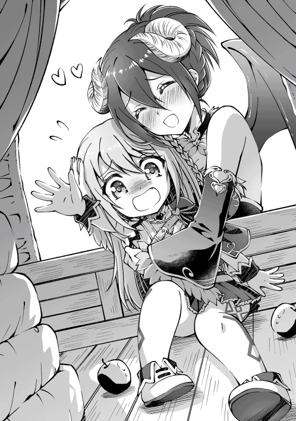
「──リヴさまばかり、ぐすっ、楽しんで、ずるいです......えぐっ......」
「誰も楽しんでないわよぅっ!? 」
楽しそうなやり取りに、俺は息を吐いた。
「あら、ごめんなさいですわ。お見苦しい姿を......」
若干頬を赤くしたアスモデウスが、リヴを抱き抱えたまま戻ってくる。
「......」
「どうした？」
「いえ」
アスモデウスはしばし思案していた。
そして。
「怠惰のベルフェゴールにやられたのですわね」
「ああ」
「そして、嫉妬の大罪神剣を封じられた、と」
「......その通りだ」
アスモデウスの言葉の通りだった。
俺は今、リヴの契約者でありながら、大罪神剣を使えない状態である。
しかも、スキルは全て封じられた状態だ。
ここから先は俺だけの力で進む必要がある。
できるのだろうか？
大罪の悪魔を相手に......。
「契約者さん、ご提案がありますわ」
「提案？」
俺はアスモデウスの目を見て、その提案を待った。
「わたくしと契約を結びませんか？」
「え？」
思わず、訊き返してしまった。
「ベルフェゴールに狙われるなんて、厄介な相手が襲ってきましたわね」
彼女の視線がリヴに注がれた。
「ベルフェゴールは特別ですのよ。生まれは天界で、元権天使 ですのよ」
天界......権天使......。
天使には九つの階級があると聞いたことがあるが、まさか元天使が悪魔に混ざっているとは思わなかった。
「あの娘は十歳の頃、女神の命令で幼い体に聖獣を──不死鳥を憑依 させられましたの」
ベルフェゴールの炎は、明らかに尋常じゃなかった。
そう、普通じゃなかった。
氷雪遺跡でテレサを取り込んだ氷の聖獣すらも、赤子に見えるほどの力だった。
「不死鳥は天界にとっても特別な存在ですの。無限の命を与え、豊穣 をもたらし、未来永劫の平和を象徴とする存在なのですわ」
実際、不死鳥が憑依してからのベルフェゴールは格が違った。
リヴの結界を軽々と打ち破った。
それは、今まで相対したどの敵よりも厄介であることを意味している。
「......ベルフェゴールはどうして悪魔になったんだ？」
「詳しくは知りませんわ。ただ......」
「ただ？」
首を振るアスモデウスは、少し口ごもった。
俺は続きの言葉を待つ。
数秒ほど間を置いて、彼女は再び口を開いた。
「──天界は地獄だ、と涙交じりに言っておりましたの」
そこまで彼女に言わせるなんて、いったい何があったのだろうか？
ベルフェゴールにとって堕天したくなるほどの何かがあったのは間違いない。
しかし、考えていても仕方ないか。
今は被害が広がる前に、打開策を見つけることが先決だろう。
「共闘の件だが......」
「ええですわ」
「共闘ってことはつまり......俺が色欲の大罪神剣の契約者になって戦う、ってことだよな？」
「その通りですわね」
アスモデウスが頷く。
「わたくしはお父上──先代魔王と仮契約を結んでおりますの。正式な契約ではなくて、あくまでも神剣から自由に動けるようにするためのものですわ。そこで、契約者さんと正式に契りを結ぼうかと思いまして」
「契り？」
俺は首を傾げる。
アスモデウスは、少し声を落とした。
「キスですわ」
「駄目ですよ!? 」
今まで静観していたお姉さんが声を荒くした。
「そんな不潔なことは駄目です！ 絶対に駄目です！」
お姉さんはアスモデウスの肩を掴み、そのままガクガクと揺さぶった。
「ちちち、違いますのよ！ 唇じゃなくて、手の甲で大丈夫なのですわ！」
「あら、そうなのですね」
ぱっ、と手を放すお姉さん。
アスモデウスは揺さぶられて気分が悪くなったのか、青い顔をしている。
「うぅ......わたくしも悪魔を裏切った身ですわ。いつまで命が安全かわかりませんの。お互いに生き残るために契約を結ぶことは利に叶っているかと思いまして」
「確かにそうだな......」
以前、彼女は俺たちを守るために、先代魔王の腹心と命を懸けて戦ってくれた。
そうした彼女の姿を見ているからこそ、拒否する理由がなかった。
一度目を伏せたあと、俺は小さく頷いた。
「わかった、契約を結ぼう」
「決まりですわね♥」
アスモデウスは両手を組んで、にっこりと笑った。
「......あの、信じて大丈夫なんですよね？」
「ああ」
お姉さんの心配に応えてから、俺はアスモデウスの手を取った。
「契約を頼む」
「お任せくださいですわ」
アスモデウスは俺の上着を引っ張って、
「もし何かあった時は、遠慮なくわたくしを頼って欲しいですの」
と、上目遣いに頼んできた。
その念の押し方が妙にかわいらしくて、俺はつい苦笑しながら右手の甲にキスをした。
途端、包帯で隠してあるはずの右腕の刻印から光が迸 った。
新たな象形文字が刻まれていく。
色欲の大罪神剣の契約者となった証だった。
「これからよろしくな」
「はいですわっ♥」
嬉しそうに微笑むアスモデウス。
その隣で、憮然 とした表情のお姉さんが割り込んだ。
「......ここで立ち話もアレですから、早く町へ向かいましょう」
「お姉さん？」
気のせいだろうか。
お姉さんの機嫌が少しだけ悪いような......あっ。
「えっと、お姉さんのことも頼りにしているから」
「ありがとうございます。でも、私はおまけみたいなものですから」
うん、これは間違いない。
お姉さんが拗ねている。
「うふふ、妬いているのですわね♥」
「ち、違います！」
お姉さんが慌てて否定した。
「違うんですの？」
「うぅ、違わないですけど、その、あんまり聞かないでください！」
お姉さんはあわあわしながら、真っ赤な顔でそう返す。
それを見て、アスモデウスはにんまりと笑う。
さらりと言った。
「だって、好きでもなかったら普通は妬かないのですわよ？」
「〜〜っ!? 」
アスモデウスがにんまりと悪戯っぽく笑うと、お姉さんはさらに顔を赤く染め上げた。
そこで頭の処理に限界が来たのだろうか。
蒸気が出そうなほど頬を赤くして──。
「はう」
意識が遠のいたらしく、俺にもたれかかるようにして気絶してしまった。
「お、おい、お姉さん？ もしもーし？」
......お姉さんって、恋愛に奥手かもしれない。
そんなことを考えながら、俺たちは町へと向かった。
† ׆
聖アスタリア共和国南部、静かで穏やかな草原の町アルディア。
川沿いには長閑な麦畑がどこまでも広がり、シグル大山脈より流れ出る川が、青く輝くアルディア湖へと流れ込んでいる。
「素敵な町でしょう？」
お姉さんは誇らしげだった。
こんな光景を知っていれば、自慢したくなるのもわかる。
俺だって自慢するだろう。
「素敵ですわっ！ でも、こんなに大きな川沿いだと、雨季は大変じゃありませんの？」
町の傍を流れる巨大な川は、この先の湖へと続いている。
もちろん影響だってあるだろう。
「昔は大変だったそうですけど、今は魔法も発達していますからね。水門を作ったりして調整しているそうです」
「なるほど、だから無事に残っているのか」
「この町を制圧する時は、水門を押さえればいいのですわね！」
「物騒ですよ、アスモさん」
お姉さんの話によると、シグル大山脈の中には水門があり、それがある限りは決して町は水没しないらしい。
便利なものだ。
「わー、美味しそうな匂いがするー！」
「ふえ、おだんご、って書いてあります？」
「食べてみたいねー！」
リヴ、テレサ、リリスの三人は花より団子らしい。
美しいものに対する感動も、食欲には勝てないようだ。
こちらでは雨が降ったのか、水を吸って重くなった泥が跳ねる。
気にしてはいられないので、馬車で走って走って、走り抜けた。
「静かな町ですわね」
「はい、昔から何も変わらないです」
お姉さんは懐かしむように、きょろきょろと町を見回していた。
俺たちがアルディアの町に向かったのは明け方だが、町に入ったのは昼過ぎだった。
さっそく宿屋を探していると、商家の立ち並ぶ通りがあった。
その少し奥まった所には、武具の職人工房が見える。
「ここにします？」
細い路地の裏には、普通よりちょっと値の張りそうな宿屋もあった。
結局、町を一周してから入口のすぐ近くにある馬屋に馬車を預け、隣にある『旅人の宿』に足を踏み入れる。
旅人や商人の定宿になっているらしく庶民的な佇 まいで、一階は酒場になっている。
そこでは薬の調剤や食料などの売買も行っているようだ。
「家が残っていたら皆さんをお泊めしたのですけど、妹の治療費を払うために売ってしまって......」
そう言って、残念そうに視線を落とす。
お姉さんの実家はすでに人手に渡り、今は別の人が暮らしているのだと言う。
そんなお姉さんを慰めようとした時、酒場の主人が声をかけてきた。
「あれっ、お姉さん？ お姉さんじゃないですか！」
「え？......あっ、お久しぶりです、レアさん！」
「やっぱりそうか！ 全然姿が変わらないなぁ、お姉さんは！」
「ふふっ、実はもっと成長してましたよ」
カウンター越しにニコニコと微笑む酒場の親父。
どうやら酒場と宿の兼任で忙しいらしく、汗ばんだ額を袖で拭っている。
その頭に生えた狼の耳が示す通り、種族は人狼だ。
「いやあ、久しぶりだねぇ！ 妹ちゃん、元気かい？」
「はい！ すっかり呪いも解けて、今は元気に遊んでいると思います」
尋ねる主人に、嬉しそうに微笑みながらお姉さんが答えた。
「そちらは彼氏かい？」
「は、はい!? ......はい、そんなところ、です」
お姉さんが照れている。嘘なのに。
「ほおっ、後ろのお姉さんは友達で......女の子は娘さんかな？」
「娘っ!? いい、いえいえ、流石に違いますよ。子供は、その、欲しいですけど」
「ははっ、お熱いねえ！」
お姉さんがどんどん変なことを口走っている。
これ以上の誤解を招く前に、俺は先手を打つことにした。
「よし、先に一休みしてくるよ。お姉さんはゆっくりしててくれ。それじゃ！」
お姉さんと主人に告げて、そそくさと酒場から奥の宿に通じる廊下へと向かった。
「あ、グラッドさん。待ってください！」
後を追いかけてくるお姉さんと、リヴたちを連れて部屋に向かう。
二部屋借りたが、女性たちの部屋は広めだ。
「ふー、さてと......これで少しの間、休めるな」
「大変でしたよね」
お姉さんが苦笑する。
俺たちは改まった表情で、アスモデウスに尋ねた。
「それで、リヴたちは元通りになるのか？」
「それですけど......」
アスモデウスは過去に子供へ変えられた人間の中に、自力で元の姿に戻れた人物がいないことを説明してくれた。
「じゃあ、リヴたちはずっとこのままなのか？」
「......いえ、ベルフェゴールなら戻すこともできるはずですわ」
アスモデウスはため息を吐く。打つ手がなかった。
「ま、最悪俺が父親になって育てるよ。放っておけないし、大事な仲間だしな」
俺は頷き返し、ふとリヴたちが眠っていることに気づいた。
「......すやすや......」
三人とも無邪気な寝顔が天使のように可愛い。
その愛らしさに相好 を崩しながら、俺は告げた。
「三日後──つまり明後日、ベルフェゴールはまた襲撃に来ると言い残した」
「なんですって......!? 」
ゆっくりと、重たい余韻を交えて告げる。
「ベルフェゴールの目的は分からない。でも、襲ってくることは確定している」
アスモデウスは息を呑んでいた。
「俺はリヴに命を助けられた。だから守るよ。問題は、明後日までにベルフェゴールと対等に戦えるようにならないといけないってことだ」
「でも、一緒に連れて行けませんよね？」
「それで、リヴちゃんたちはどこに匿うおつもりですの？」
「ああ......リヴたちの面倒を見てくれそうな人物には、心当たりがある」
「え、本当ですか!? 」
「ああ......アスモデウス、転移魔法を使えたよな？」
「ええ、使えますわね」
アスモデウスは妖艶な笑みを浮かべた。
「......正直、あんまり気乗りしないけどな」
そう言って俺はお姉さんを真っすぐに見つめた。
「お姉さん、一生の頼みがある」
「私にですか......？」
俺は呻きながら、心当たりのある人物の顔を思い浮かべて言った。
「妹さんを俺にください」
「は、はいいい!? 」
──商業都市マグノリア、孤児院。
まぶたに差し込んでくる陽の光に、狐妹は目を覚ました。
遠くで鳥の声が鳴いている。
「もう朝......？」
薄目を開けて、ベッドの感触を確かめた。
昔とは違う上質なシーツの肌触り。
見慣れた部屋なのに、いつも一緒だったはずの姉の姿がない。
「......そっか。お姉ちゃんは、グラッドお兄ちゃんと旅に出たんだっけ」
ぼんやりと意識が覚醒するにつれて、寂しさが込み上げてくる。
（お姉ちゃん、お兄ちゃんのことが気になっていたもんね。これでよかったんだよね）
二カ月前、狐妹は床に伏せていた。
症状は良くなく、いつ命を失ってもおかしくない状況だった。
そんな狐妹を助けたのがグラッドとリヴ、そしてテレサであった。
三人の活躍によって狐妹の病──呪術──を解除し、今は快適に暮らせている。
毎日が幸せなはずだった。
それなのに、狐妹は辛そうだった。
（みんなに会いたいなぁ）
そこまで考えて泣きそうになった時、バタン、と部屋の扉が開いた。
「？ どなたですか？」
孤児院の他の子供たちかな、と思いながら、狐妹は視線を向ける。
目が点になった。
「......え、え？」
部屋に飛び込んできたのはリヴそっくりな女の子だった。
その背後にはテレサそっくりの女の子が、さらにその背後にはリリスそっくりな女の子の姿も見える。
「やっと見つけたわよー！」
「あ、あぅ、お元気でしたか......？」
「妹ちゃん、お久しぶりだねー！」
意味が分からない、と狐妹は考えた。
以前はしっかりとしていたはずの三人が、自分よりも幼い子供の姿で現れた。
いや、同一人物ではないかもしれない。
ある可能性が閃 き、狐妹は目を見開くと、上体を起こして叫んだ。
「もも、もしかして！ グラッドお兄ちゃんの子供!? 」
「ふえ、パパのことですか......？」
テレサの返事に、狐妹は顔を青くした。
（お兄ちゃんに、子供が出来ていたなんて......）
鈍器で頭を殴られたような痛みが走った。
ほろりと涙を流す。
初めての失恋だった。
狐妹は考える。
胸元が大きく開いた、愛らしいパジャマの裾を引っ張りながら考える。
それぞれの少女に似た三人の子供。
それはすなわち、三人の女性と関係を持ったという証明である。
つまり──。
グラッドは一夫多妻である。
狐妹は考えた。
おまけでいいから、その輪に入りたい。
が、命を助けられておきながら、妻になろうとするなんて最低である。
それでも入りたかった。
「よし！」
狐妹は、ぐっと拳を握る。
その顔にあるのは希望。
本当ならもっとゆっくりと距離を詰めていきたかった。
いつも結婚を夢見ていたにもかかわらず、実際にはどう結婚するのか分からない。
キスをすれば結婚ができ、子供が授かれると思っているのである。
──なぜ私は遠慮しているのか。
──私はいつもこうだ。自分で機会 を台無しにしている。
──この遠慮は私の人生そのものだ。
──私はいつも失敗ばかり。
──妄想ばかりで自分からリスクを背負わない。
──これだから誰も愛してくれない。
狐妹は自分を恨 んだ。
そして、グラッドと結婚できないのなら、狐妹は自殺する自信があった。
狐妹にとって、結婚は死活問題だったのだ。
......お兄ちゃんと一緒にいられるかもしれない......。
その希望に胸を弾ませた狐妹は、涙ぐんだ。
結局のところ、狐妹もお姉さんの血脈だったのである。
そこへ、
「お前ら、いきなり部屋に押しかけるなよ。妹ちゃんに迷惑がかかるだろ......って」
遅れてやってきたグラッドが、狐妹の異変に気づいた。
「お、おい？ どうしたんだ？ 何か辛いことがあったのか？」
グラッドの優しげな声に、狐妹は狐耳をへにゃっと垂らした。
念願だった最愛の人との再会が嬉しくて、泣きながら続ける。
「な、泣いてないよ......ぐすっ......ただ、お兄ちゃんの顔が見れて、嬉しくて......」
「おい、落ち着けって！ 俺も顔が見れて嬉しいから」
グラッドは本気で狐妹を心配していた。
狐妹は決意した。
ここで想いを告げるべきだと。
ここで告げないと、一生遠慮した人生を送ってしまう。
狐妹は、一人の女性として勇気を振り絞った。
（お兄ちゃんが一夫多妻を認めているのなら、ストレートに聞いた方がいいよね？）
それなら、聞くしかない。
「お、お兄ちゃん、頼みがあるんです......」
「どうした？ 何でも聞くぞ？」
「ほんと......？ あ、あのね──」
今、狐妹が一歩を踏み出した。
「私と、子供を作ってください！」
「は」
グラッドの頭が真っ白になった。
「こ、子供っ!? 」
「う、うんっ！」
もう一度だけ言おう。
狐妹は口付けを交わせば子供ができると信じている。
「私、お兄ちゃんの子供が欲しいの！」
その時である。
バタンっ、と扉を開け固まったのはお姉さんだった。
「え、ええと......」
そして、
「お、お幸せに、です......えぐっ......」
バタンッ、タッタッタッタ......。
威勢よく扉は閉められ、お姉さんが全力で外へ向かう音がした。
グラッドは青くなっていた。
「待て、待て、誤解だああああ！」
お姉さんを追うべく、慌ててグラッドは駆けだした。
一時間後。
朝の陽射しを受ける、孤児院の食卓。
神父様たちが教会へ出かけるまでの僅かな時間、食事をご馳走してくださるらしい。
ただし、作るのはお姉さんだった。
「ふふ、久しぶりですね」
お姉さんは、鼻歌交じりに料理を開始、納屋で見つけた棍棒を背負い、でき上がったものをテーブルへと並べていく。
オムライスだ。
孤児院では十名ほどの子供たちに交じって、リヴたちもいる。
喜んでくれるものを精一杯考えて、作ってくれたのだろう。
「お待たせしました」
色鮮やかな赤い線が引かれた黄色の、素晴らしい料理だ。
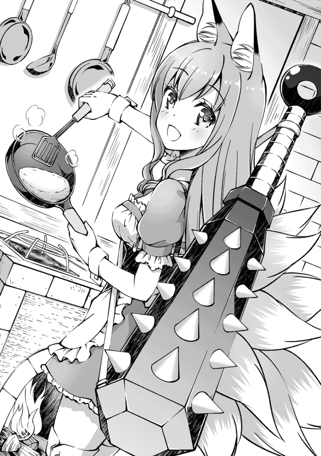
「「「 いただきます！ 」」」
子供たちも一斉に匙 で料理を口に運ぶ。
柔らかな卵はあっさりと破れ、中からたっぷりと詰まった赤い具が姿を見せる。
商業都市の周囲で育てられている玉ねぎとトマトをベースにしたソース。
それとは対照的に色鮮やかな緑色の豆。
塩漬けにした鶏の肉。
バターのふんわりとした香り。
「美味しいっ！」
叫んだのはリヴだった。
美味が口の中に広がる。
最初に感じたのは、半熟の卵。
どうやって火加減を調整しているのか、俺がどうやってもこうはならない絶妙な柔らかさだ。
牛乳とバターの風味がして、わずかに甘い。
それらは酸味が強いトマトソースと合わさることで素晴らしいハーモニーを奏でている。
これだけでもご馳走なのだが、中にある具も旨い。
塩気を含んだ鳥の肉汁の旨味を、細かく刻んだ茸 がたっぷりと吸っている。
米と一緒に炒められた野菜は甘みを生み、一口でも至福だった。
でも、子供たちはそれで終わりじゃない。
何しろ、お姉さんは余分に作っておいたからだ。
「おかわりっ！」
「ふふ、ゆっくり食べてくださいね」
慌ただしく、お姉さんが動き出す。
子供たちの世話が本当に好きなようで、今のお姉さんは輝いているように見えた。
「......俺も頼んでいいか？」
「はい、もちろんですっ。いっぱい食べてくださいね」
もう一度、同じオムライスを食べていく。
俺もすっかり、この味の虜 となっていた。
と、そこでリリスが俺の隣にずりずりと寄ってきて、俺の匙を掬 った。
「グラッドくん、あーん！」
「えっ」
「食べさせてあげようかなと思って！ はい、あーん！」
リリスの顔は、何か偉いことをして父親に褒めてもらいたい、という娘の顔だった。
俺は迷ったが、仕方なく「あーん」と口を開き、リリスが差し出した匙を口に入れる。
「えへへー、どうかな？ 美味しいかな？」
「ああ、旨いよ」
実際、一人で食べるよりも、誰かと食べた方が美味しい。
それがリリスみたいな可愛い娘に食べさせてもらえるなら、何だって旨くなるだろう。
そう感じたから素直に伝えたら、リリスは満足そうに笑ってくれた。
リリスは幼くなったけど、以前と殆ど変わらない。
裏表なく接してくれるのは、きっと純粋なのだろう。
一方、今のあーんを見守っていたリヴとテレサは、今にも泣きだしそうだった。
完全に父親を奪われた娘のような表情である。
この辺の甘えたがりな性格は成長することで変わっていくのだろう。
俺はしばらく微笑ましい気持ちで食事風景を見守っていた。
ふと、あることに気づいてお姉さんへ視線を向けた。
「お姉さん、前から気になっていたんだけど」
「はい？」
「もしかして片付けが苦手だったりするのか？」
その言葉に、お姉さんの柔らかな体が「ぎくっ」と固まる。
そう、そうなのだ。
俺たちが食事を取っている、このリビング。
以前に訪れた時は、やたらと物がごちゃごちゃしていた印象があったのだ。
明らかに不要なものから、ゴミにしか見えないものまで含めて。
でも、今はそれらが綺麗に片付いている。
お姉さんが旅立ってから、やたら綺麗になったのだ。
「え、ええと、違うんです、そのっ」
お姉さんは慌てて両手を振って否定する。
でも、
「......お姉ちゃんは見えない所ではいい加減なんです。お仕事から帰ってきたら服も脱ぎっぱなしで、酷い時にはネグリジェ姿でお仕事に出かけようとしたことがありました。他にも私の下着を穿 いて──」
「わあああ！ だだ駄目です！ 言っちゃ駄目です！」
妹の身も蓋もない言葉に、お姉さんは大慌てで妹の口を閉じにかかる。
妹の下着を穿いて、どうしたんだろう。
とても気になるが、問いただすわけにもいかないので様子を見守った。
すると、お姉さんは尻尾をだらりと垂らして呟く。
「私、ぼーっとしているのが大好きなんです......」
「あー、気持ちはわかるな」
朝、目覚めてからの僅かな時間に訪れる眠気。
俺も嫌いじゃなかった。
そんな感じで食事を終えて、俺たちは満足げに息を吐いた。
今日は日曜日。子供たちは学校があるそうで、神父様と一緒に出掛けていく。
腹が満たされた俺たちは、話の続きをすることにした。
「......うぅ、びっくりしました。まさかリヴさんたちが、子供になっちゃったなんて」
狐妹は、申し訳なさそうに耳を垂れる。
あの後、お姉さんが『子供に手を出したら駄目ですッ！』と、住宅街のド真ん中で叫んでくれたおかげで、俺に不名誉なレッテルが張られてしまったことを謝っているようだ。
「いやさ、ちゃんと説明をしなかった俺の責任だから気にしないでくれ」
そこでお姉さんも耳を垂らす。
「私も、グラッドさんならありえる、とか思ってしまいまして、すみませんでした......」
お姉さんは、俺のことを何だと思っているんだろう？
たしかにリヴは特別扱いしているけど、子供に興味があるわけじゃないんだが......。
朝から疲れてしまった。
でも、終わったことを責める必要もないので、本題に入るとしよう。
「実は妹さんに頼みがあるんだ」
「頼みですか......？」
俺は少し頬を緩めて、リヴたちへと視線を送った。
「ベルフェゴールについて話したと思うけど、おかげさまでリヴたちがあんな状況だから、旅をするのも大変でな。三日だけで構わない。リヴたちの世話をしてくれないか？」
「......世話？ 私でいいんですか？」
「ああ。妹ちゃんにしか頼めないんだ」
狐妹は両目をぎゅっとつぶり、こくりと頷いてくれた。
「わかりました。私を頼ってくれて嬉しいですし、是非お手伝いをさせてください」
そう言って、柔らかく微笑んでくれる。
ありがたい返事だった。
狐妹がリヴたちの面倒を見てくれている間は、ベルフェゴールへの対策に集中できる。
──そう、色々考えることがある。
大罪神剣の復活。
先代魔王から命を狙われている現状。
それらの危険性も、狐妹にちゃんと説明することにした。
「......お兄ちゃん、大変なことに巻き込まれていたんだね」
ふと、狐妹は俺を見上げてきた。
今ばかりは同情してくれたようだった。
柔らかな表情は、お姉さんに似て端整。雪にも似た白い肌と、それによく似合う栗色のセミロング。以前とは違い継 ぎ接 ぎのなくなった和服で、彼女に触れると遥か異国の香りが漂った。
「......綺麗だよな」
と、素直に思う。
将来はお姉さんのような美人になるのだろう。
それに以前と比べて性格も堂々としている。
潔 くて、揺るぎなくて、秘境の湖のほとりに咲いた一輪の花のようだった。
「私、皆さんに感謝しているんです。蝕 まれていた命を助けて頂いたから......。それにお姉ちゃんにはずっと傍で守ってもらったもん。だから、私も恩返しをしたいんです」
力強い言葉だった。
「できることはさせてください」
狐妹は、少しの間だけ目を閉じた。
決意を固めているのだろう。
すぐに、俺たちに向かって言った。
「どうかよろしくお願いします」
深々と頭を下げてくる。
下げるのは俺たちの方なのに。
「俺の方こそよろしく頼む。大丈夫、俺たちが絶対に守るから」
遅れて、俺も深く頭を下げた。
「はい、任せてください！」
病弱だった少女は強くなり、落ち着きが生まれ、他人の意見や自分の意思を尊重できるようになっていた。
少なくとも、俺はそう感じていた。
「それでは、一度アルディアの町まで戻りますの？」
今まで静観していたアスモデウスが呟いた。
「そうだな。ベルフェゴールへの対策も考える必要があるし、そろそろ戻るとするか」
「はい！」
話は決まった。
こうして俺たちは狐妹を連れて、アルディアの町へ引き返したのであった。
† ׆
──草原の町アルディア。
転移魔法で戻って来た俺たちは、狐妹の要望もあって町中を見て歩くことにした。
「わたくしはリヴちゃんたちの面倒を見ていますわね」
「いやああああ！」
嫌がるリヴを抱き抱えて、アスモデウスは宿に引き返した。
テレサは眠かったらしく、いつもより小さなスライム姿で、アスモデウスの頭の上で眠っている。リリスも後をついていった。
残されたのは俺、お姉さん、狐妹の三人だった。
「お姉ちゃん、パン屋さんがあるっ！」
「ええ、何か食べていきます？」
門から真っすぐに進むと、わいわいと、今にも踊り出しそうな声が大通りに溢れている。
角を曲がってパン屋に辿り着くと、狐妹が物欲しそうに見ていた。
せっかくなので立ち寄ってみると、パン屋の主人が声をかけてきた。
「おやおや、大きくなったね......お姉さんは変わってないね」
「ふふ。色々ありまして。おじさん、お久しぶりです」
「あ、あの、その......」
狐妹はおどおどしていた。
当時は幼かったはずなので、何も覚えていないのだろう。
「姉妹のご両親はお得意さんだったからね。丁度いいから焼きたてパンを持っていくといいさ。なに、お代はいらないよ」
「いえいえ、悪いですよ」
「まだ若いんだから遠慮することじゃないって。ほら」
お姉さんは押し切られる形で、バスケットごと大量のパンを手渡された。
この量、全員で食べても一人二個計算になる。
食べきれるだろうか。
「すみません、ありがとうございます」
と、お礼を言ってからも、お姉さんはご機嫌そうに歩いていた。
「やっぱり故郷っていいですよね」
てくてくと歩いては住民に話しかけられ、先ほどのように物をもらってしまい、俺の両手までいっぱいになってしまった。
「三日後、この町でお祭りがあるんです」
「へえ、どうりで屋台の用意が行われているわけだ」
道を進む頭上では、紐に通された色とりどりの旗が風に揺れている。
旗の模様は豊穣を祈願する女神のシルエットだ。
「町を挙げてのお祭りですから、結構賑やかになるんですよ」
「......お祭りかぁ」
どことなく羨ましそうな様子の狐妹に、俺は首を傾げた。
祭りに反応した？
そう考えた瞬間、俺はハッとして周囲を見渡した。
目につく建物は質素な木造平屋の家が多いが、暮らしている住民は妖狐族が多い。
故郷のお祭りなのだから、狐妹も一度くらい参加してみたいのかもしれない。
「祭り、見たいのか？」
「ふぇっ!? あ、えっと、その......！」
「反応が分かりやすいな。俺で良ければ一緒に見て回るか？」
「いいんですか!? 」
「ああ。お姉さんも一緒に見るだろう？」
「はい、お邪魔でなければ是非」
もっとも、二日後にはベルフェゴールが襲撃してくる。
それが無事に片付かなければ、祭りどころじゃないのが難点だ。
「お兄ちゃん、楽しみにしているね！」
目をキラキラと輝かせる狐妹。
軽はずみな約束をしてしまったかもしれない。
これは何が何でも、約束を守らないといけないな。
「それじゃ、帰るとするか」
「はい」
宿に戻ろう。
まずは、ベルフェゴールについて情報を整理しないと。
† ׆
青く輝く夜。
空を覆っていた魔力の気流が地平に沈む時間。
「ベルフェゴールが相手、か」
改めて口にすると途方に暮れてしまう。
俺は部屋で荷物の整理をしていた。
近づく決戦に備えて、必要な物はすぐ取れるようにしたかったのだ。
革袋を漁 ると、いつの間に購入したのか林檎が大量に入っていた。
こんなことをする人物は一人しか心当たりがない。
リヴだ。
彼女が購入したものだろう。
邪魔になりそうなので、いつも世話になっている馬にご褒美としてあげてしまうか。
そんな感じで手際よく、いらない物をまとめていく。
目の前の机には、飲めなかった珈琲が放置してある。
ふと、銀色の指輪が転がっていることに気づいた。
「......再生の宝具 、か」
苦渋の顔で呟く。
以前、先代魔王の腹心と戦った時に手に入れた物だ。
この指輪の力を使えば、無限の再生を繰り返すことができる。
その魅力に惹かれたのだが、俺はどうしても使う気になれなかった。
何故なら、この中には天使の王《虚ろなる神》の魂の一部が封じ込められているからである。
嫌な予感がするのだ。
先代魔王の腹心は指輪を使うことで、見事に復活してみせた。
しかし、肉体が削られたかのように半透明な姿になっていたのだ。
それが何を意味しているかは知らない。
でも、この小さな指輪には充分に稀有な呪物が掛けられているのは間違いないのだ。
「先代魔王もこれを探していたらしいな......」
息を吐く。
どっと力が抜ける。
冗談交じりに人差し指に嵌 めようとする。と、
「おやめなさいっ！」
腕を掴まれる。
アスモデウスだった。
いつの間に部屋へ侵入したのか、俺の腕を強く掴んだまま、指輪を机へと戻した。
「《虚ろなる神》の力を使うのは危険ですわ」
分かってはいるのだ。
アスモデウスの指摘は正しい。
今、俺が無理をしてどうなるものでもない。
それでも、ベルフェゴールを相手にするには力が足りない自覚があった。
負けたくなかった。
「何が起きるか分からないですわ。だからこそ、安易に力に頼ってはなりませんのよ？」
「──ああ......すまん、迷ってた」
これほどの宝具を手に入れて、先代魔王は何を望んでいたのだろうか。
疑問は尽きないが、
──ドンドン──。
突如、思索に扉を叩く音が割り込んだ。
『ぐらっどー！ 荷物の整理手伝うわよー！』
『パパぁ、開けてくださいです......ぐすっ......』
リヴとテレサのノック音だった。
──ドンドンドンドンドンドン──。
二人は諦めずに扉を叩き続けた。諦めが悪いとも言える。
その根気に負けて指輪をジャケットの内ポケットに隠し、俺は扉を開けた。
すると、二人──と狐妹が部屋へ駆け込んでくる。
「わーい！ テレサ、投げていいわよ！」
「パパぁ、お雑巾いきます......っ！」
「二人ともっ！ お兄ちゃんの邪魔をしたら駄目......っ！」
荷物の整理を手伝うと言っておきながら、単純に遊びたかったらしい。
雑巾をボールに見立てて放り投げるテレサ。
それを受け止めようとするリヴ。
そんな二人を捕まえようと走り回るのは、狐妹だった。
「くすくす、賑やかですわね♥」
「......妹ちゃんがいなかったら、もっと大変だったよ」
何となく分かってきたのだが、幼くなっても今までの記憶は残っているようだ。
ただ、記憶はあっても能力や性格が足を引っ張るらしい。
特にリヴは飽きやすい性格なので、一つのことに集中できなくなっていた。
そんなことを考えていた時である。
どんがらがっしゃん！
「あー......」
派手な音が響き渡り、俺は片手で額を覆いなら息を吐いた。
数秒後、リヴとテレサが埃塗れで謝ってくる。
「......グラッド、あのね。その......荷物がひっくり返ってね......」
「......くちゅん......ごめんなさいです、パパぁ......」
おずおずと告げる二人。
俺は胸中でため息を吐いてから、風呂場の方を指さした。
「後はやっておくから、体を洗ってこい」
「「 はーい 」」
「ま、待ってー！」
パタパタと去っていく少女たちと、追いかける狐妹。
その後ろ姿を見送りつつ、ぼやいた。
「子供を育てるって大変なんだなぁ......」
「ふふ、そうですわよ？」
これなら剣を振っている方が楽である。
全国のお母さんの凄さを改めて実感していると、アスモデウスが近寄って来た。
「契約者さんったら、苦労しておりますわね♥」
「......お前まで俺をからかうのか？」
「いいじゃないですの。それだけ慕われているってことですわ。ちょっとうらやましいくらいですもの。あの子たち、わたくしには冷たいんですのよ？」
言われてみると、リヴもテレサもアスモデウスと話をしている場面は殆ど見ない。
ま、先日まで敵だったアスモデウスと打ち解けるには、まだまだ時間がかかるのだろう。
「はぁ」
それにしても、アスモデウスは心底から落胆している。
......もしかして？
「子供が好きなのか？」
「ふへっ!? そそそ、そんなことありませんのよ！ わたくしは色欲の悪魔ですわ！ ここ子供を好きだなんてこと、あるわけないでしょう！」
アスモデウスは子供が大好きらしい。
意外な一面に笑ってしまうと、アスモデウスは恥ずかしそうにぷるぷると震えて、そっぽを向いてしまった。
その後、何度か声をかけてご機嫌を取りつつ、ある程度の片づけが終わった。
と、その時である。
「ふー、さっぱりしたわ！」
「はいですっ」
扉の方を向いて、俺は「ぶふっ」と盛大に噴きだした。
そこには風呂上がりのリヴとテレサが立っていたのである。
バスタオルだけを巻いた姿で。
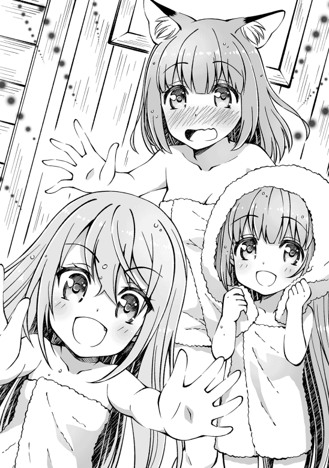
「お風呂、とっても気持ちよかったわ！」
「パパとご一緒に入りたかったです......」
「ば、ば、バカッ！ さっさと何か着てこい！ ここが宿ってことを忘れるなっ！」
「うぅ、ご、ごめんね、お兄ちゃん！」
しかも、狐妹もバスタオル姿だった。
真っ赤な顔で目をつむり、部屋へと駆け込んでくる。
「仕方ないですわね。わたくし、着替えを取ってきますわね」
「あ、ありがとう......」
時間も時間なので他の人に見られなかったと思うが、狐妹は緊張が解けたようにペタリと床に座った。
リヴも、テレサも、狐妹も幼いとはいえ、知った顔である。
性別も違うし、慎ましげながらも女性らしい部分はあるわけで、タオル一枚で現れれば誰だってうろたえてしまう。
「ぐらっど！ あたしたちの裸で喜んでるの？」
「パパ、見たいんですか？」
「お、お兄ちゃん......ホント？」
「そんな目で見てねえよっ!? 」
今日はやたらと誤解を受ける。
俺はもう勘弁してくれというつもりで、大きくため息を吐いてみせた。
† ׆
片付けやリヴたちの着替えが終わったタイミングで、俺は全員を呼び集めた。
これからについて相談をするためだ。
「ぐらっど、お話ってどうしたのー？」
さて、何から説明するべきか。
「実は──」
一呼吸おいてから、俺は意を決して告げた。
「リヴ、テレサ、リリスの三人には、この町で待機してもらおうと考えているんだ」
「「「 え？ 」」」
ベルフェゴールとの戦いが迫っている。
幼くなったリヴたちが一緒では、まともに戦えないのだ。
「世話は妹ちゃんに頼む。だから、留守中は大人しくして──」
次の瞬間だった。
リヴたちが青い顔をして、ひしっ、と俺にしがみついてきた。
「やだ！ いなくなっちゃうの、やだー！」
「......パパが消えちゃうと、寂しいです」
「グラッドくん......」
三者三様の反応だった。
「いや、そう言われてもな......」
「私も反対です」
さらに、お姉さんも首を横へ振った。
「みなさんを置いていくことは危険だと思います。それに......」
あくまでも優しい表情を崩さず、お姉さんは俺の顔を覗き込んでくる。
「テレサさんも、リリスさんも、絶対グラッドさんを捜しに行きますよ」
「それは......」
否定できない。
「お気持ちはわかりますけど、それでグラッドさんが危険な目に遭ったら、何よりこの子たちが困るんです。グラッドさんを必要としているのは、この子たちなんですから」
お姉さんの言葉は正論だった。
「今は全員で力を合わせるべきじゃないでしょうか？ ベルフェゴールは二日後には襲撃を仕掛けてくるはずです。でしたら、私たちも応戦の準備をしておくべきかと」
難しい注文をしてくれる。
たしかに、その無理を通さなければ勝てないのも、事実ではある。
でも。
「やだぁ、ぐらっど......離れたくない......」
「！」
リヴの不安そうな声に反論ができない。
俺にしがみつきながら、うるうると見つめてくるのだ。
とても不安そうな表情だった。
「ぐらっど、一緒に行かせて」
「リヴ......」
今まで、俺たちのために戦ってくれたリヴは、明るい声で言葉を続ける。
「ぐらっどは、あたしたちを助けたいんだよね。そして、あたしたちはぐらっどと一緒にいたい。それなら答えは簡単よ......一緒に行かせて」
「馬鹿を言うな！ 死ぬかもしれないんだぞ！ 今のお前らをそんな危険な戦いに連れて行けるか！」
「......大丈夫です。テレサたち、パパを信じていますから」
テレサも覚悟を決めたように、笑った。
「何があっても守ってくれますよね？」
「それは......」
「グラッドくん、わたしたちも君を守りたいんだよ？」
リリスが得意げに人差し指を立てる。
「グラッドくんをサポートする仲間として......ううん、友人として」
「........................」
「ぐらっど、あたしね、ずっと考えてた。みんながいなければ、ぐらっどをあたしだけで独り占めできるのにって......でも、それはあたしが大好きな今じゃなくなるんだよね。みんなが一緒にいて初めて、ぐらっどは楽しく笑ってられるんだから......だから、あたしもみんなを守りたい」
そうリヴが口にした時、俺はかがみ込んでリヴたちを抱きしめた。
厳しく、優しい声で彼女たちに告げる。
「......今まで遭ったどの戦闘よりも危険だぞ。それでも信じられるか......俺が、お前たちを絶対に守るって」
「「「 もちろん！ 」」」
迷いのない返事に、俺は強く頷いた。
「でも」
俺は言った。
「......絶対に勝手なことをしないと、約束してくれるか？」
大切なことだった。
もし約束を守れないのなら、嫌われてでも俺は彼女たちを置いていく覚悟だ。
無残に命を散らされるより、数百倍もマシなのだから。
「「「 はい！ 」」」
彼女たちのすがるような視線。
ふと、その瞳に込められた想いが見えた気がした。
『よかった、置いていかれるかなって思っていたの......』
『ふえ、うぅ......捨てられなくて、よかったですぅ......』
『邪魔しないように言いつけは守るから......』
孤独と寂寥 。
昔、俺が両親に捨てられた頃、感じていた想いだ。
俺はいつの間にか、リヴたちにも同じ想いをさせてしまっていたらしい。
保護者失格だな。
「大丈夫、寂しい想いはさせないと約束する。なるべく傍にいてやる。守ってやる......だから、何も心配しないでくれ」
「私もお手伝いしますよ」
「わたくしもですわっ！」
苦笑するお姉さんとアスモデウス。
二人に挟まれながら、俺は清々しい自信に溢れていくのを感じた。
リヴたちを元の姿に戻すためにも、絶対にベルフェゴールに勝たなければいけない。
そう思えた。
「よかった！ それじゃちょっとだけ遊びましょう！」
「あ、おい、引っ張るな！ 俺にはまだやることがあってだな......」
「リヴしゃま、ずるいですぅ！ テレサも、一緒に遊びたいです......ぐすん......」
「！ それじゃテレサさんは私と......」
「ふえっ!? 」
「そんなに怯えなくても......」
テレサもお姉さんが怖いらしい。
お姉さんはショックのあまりに、部屋の隅で尻尾を丸めて、膝を抱えて落ち込んでいる。
狐妹が慰めていた。その、ドンマイ......。
そして俺はリヴとテレサに引っ張られて、窓際に連れていかれた。
どうやら、荷物の中から遊び道具を見つけたらしい。
リリスはそんな俺たちを見守る。
そんな中、ふと俺はアスモデウスの視線に気づいた。
「契約者さん、相談がありますの」
「どうした？」
尋ねると、アスモデウスは真剣な表情で言った。
「──ある遺跡を訪れて欲しいのですわ」
妙な申し出をするアスモデウスに、俺は目をぱちくりとさせた。
夜空に白い月が浮かんでいた。
星が鏤 められる深夜──を少し過ぎた頃。
「この辺りか？」
「ええ、地図ではそうなっています」
俺たちは街道を歩いていた。
装備は軽装にとどめ、腰に剣だけをぶら下げてきた。
お姉さんも普段着姿で、両手には大きな棍棒を握っている。
鉄球が使いにくかったそうで調達したらしいが、孤児院で背負っていたのはそのためか......。
今、俺たちが目指しているのは遺跡だった。
アスモデウスの申し出で、町から南下した場所に存在するというその場所へ、向かっていた。
「うふふ、照明魔法を使えるなんて、わたくしって便利でしょう？」
先頭を歩くリーダー格、アスモデウスが自慢げに言った。
彼女は手ぶらで歩いてるので、夜の散歩感覚かもしれない。
アスモデウスはどこか軽い口調で答えた。
「大丈夫ですわ！ この辺の魔物でしたら軽く倒せますもの」
「まったく、度胸は褒めるが、油断が命取りになることもあるんだぞ」
「平気ですって！ 契約者さんは心配性ですわよ♥」
ご機嫌そうに答えるアスモデウス。
「わたくしたちはこの先にある遺跡──大聖塔 を目指しているのですわよ？」
「目的は何ですか？」
「もちろん防衛ですわ」
アスモデウスがそう答えて、俺は意味を悟った。
ベルフェゴールは三日後にまた襲撃してくると宣言した。
場所までは言ってなかったが、俺たちのいる場所、という意味で間違いないと思われる。
実際、町中で襲われても困るので、こちらもそれなりに戦う準備を整える必要があった。
明日にでも考えようと思っていたのだが、タイミングとしては丁度いい。
「いやあああああ！ クマに食べられますのぉぉぉッ！」
「グオオオッ！」
気づいたら、アスモデウスは必死に走っていた。
アスモデウスは魔法をメインに戦っていたので、咄嗟の襲撃に対応できないのだろう。
俺は抜剣し、左手で剣を振る。
苦もなく野生熊を仕留めた。
「ふぅ、助かりましたわ。やっぱり契約者さんはお強いですわね」
「......まったくお前は、油断するなって忠告しただろう？」
「契約者さんならお守りしてくれるって信じていましたの♥」
軽い忠告をしたが、アスモデウスは声が弾むのを隠せないようだ。
何が嬉しいのか、俺の左手を取って歩き出す。
ま、構わないか。
この余力なら危険な魔物に出遭っても倒せるだろうし。
俺は周囲を警戒しながら、街道を慎重に進みつつ、少し前の出来事を思い出していた。
──結局あの後、二時間もリヴたちと遊ぶことになった。
そして、ようやくリヴとテレサがうとうとし始めたのである。
『ぐらっどー、もう限界みたい......』
『ネムネムですぅ......』
どうも夜更かしが苦手になったらしい。
俺たちが夜に出歩いているのも、リヴたちの睡眠時間を考慮した結果だった。
一緒でも構わないが、できれば安全を確保しておきたい。
その後も魔物を倒しながら進んでいくと、遺跡に近づくにつれて何かの声が次第に大きくなっていることに気づいた。
──グオオオオオッ！
「なんだ、あの声......」
「魔物みたいでしたわね......行ってみましょう！」
アスモデウスが興奮気味に言った。
さすがに心配だったのか、お姉さんが慌てて止める。
「待ってください！ 危険に飛び込むのはズルいです！」
ズルい？
「大丈夫ですわ、それに先制攻撃を仕掛けた方が安全かもしれませんわよ？」
「私も試し殴りしたいんです！ 先になんて行かせませんよ！」
棍棒を片手でブンブンと振り回しながら、お姉さんは走っていく。
「あ、待つのですわ！」
アスモデウスまで駆けていった。
仕方なく、俺も後を追いかけた。
拓けた場所に辿り着き、そこを直進したところで──ふと、前を行く二人の動きが止まった。
「おい、どうした。いきなり立ち止まるなんて......」
文句を口にした俺も、声が尻すぼみになっていく。
目の前にそびえる、巨大な魔物の姿。
一言で言えば、フォルムは蜥蜴 に近い。
全長が大きな屋敷ほどもある蜥蜴である。
あまりにも大きく、凶悪なその生物は、鋭い目と眉間にある宝石のようなモノが特徴的だった。
外皮はすべて硬い殻で覆われ、その殻にはトゲがびっしりと生えている。
こちらを睨んでくるその魔物の正体を、俺たちはイヤというほど知っていた。
「ど、どど......どら......」
アスモデウスが口をぱくぱくとさせるが、言葉が上手く出てこないようだ。
それが何とか達成されたのは、お姉さんが棍棒を振り上げて跳躍した時だった。
すなわち。
「......ドラゴンですわああああっ!? 」
登場と、
「叩き潰します！」
同時に、
「グオオオオオッ!? 」
ドラゴンは退場したのである。
瞬殺だった。
お姉さん、鉄球より破壊力が増している気がする......。
「......わたくしの立場がありませんの」
アスモデウスは落ち込んでいた。
「あっ、おい、膝を抱えて座り込むなって」
「だって、だって......！」
地面に指で落書きをするアスモデウス。
そのいじけっぷりに、口許 に微笑が浮かんでしまう。
何だ、アスモデウスも普通の女性なんだな。
そんなことをぼんやりと考えた時である。
「ふしゅるるるる！」
突如、背後から雄叫びが聞こえ、俺たちは思わず振り返った。
街道から走ってくる魔物の姿が見える。
凶相の巨鬼──グレートオーガだ。
「今度こそわたくしの出番ですわね！」
アスモデウスが目を輝かせた、その時。
『我が呼びかけに応えよ 稲妻の精霊よ。
正義の意志を今ここに示せ──〈ライトニングボルト〉！』
突如、光が瞬いた。
「痺れるのですわ！」
「「「 グオオオオッ!? 」」」
アスモデウスの叫びと共に、そのしなやかな指先から雷が迸る。
それは目の前に立ちふさがった、鋭い牙と禿げ上がった頭を持つ筋肉質の獣魔──グレートオーガを一瞬にして灰燼 と化した。
「すげえ......」
「うふふ、わたくしも魔法には自信がありますの！」
「ああ、大したものだ。俺なんかよりよっぽど立派だよ」
「ほんとですの!? もっと褒めていいんですのよ！」
褒めて褒めてとポーズを決めて胸を張るアスモデウスを、褒めちぎってやる。
アスモデウスはうっとりとご機嫌そうに照れ笑いを浮かべる。
女帝のようなポーズを取って、びしっと指を向けてきた。
「契約者さん、わたくしの下僕におなりなさい！」
「いや、それは遠慮させてもらう」
「ええっ!? どうしてですの！」
迫って来るアスモデウスに、俺は今までよりも温かいものを感じていた。
† ׆
大聖塔 オルレス。
女神信仰の一大拠点として知られたその遺跡は、聖アスタリア共和国の森沿いに建てられたことで有名だそうだ。
この大地の周囲は実に八割が、魔力を帯びた木々によって占められている。
長閑な気候で、普段はのんびりとした空気を感じられる。
そんな中、俺たちは大聖塔を上っていた。
「やっぱり階段が長いと疲れるな。お姉さんは、その尻尾は重くないのか？」
「うーん、慣れてますから？」
俺の隣を歩くお姉さんが頷いた。この大聖塔を建てた信者たちは、よっぽど神様を崇拝していたらしい。高さ十四階の塔を作ってしまうほどなのだから。
「契約者さん、ベルフェゴールは移動力、機動性に共に優れていますわ。ですから、行動範囲を狭めれば、いくらか戦いやすくなるはずですの」
「遺跡内で戦うってことか」
「ですわ！ この辺りは冒険者の姿もありませんし、他人を巻き込む可能性は低いと思いますの。ですから、ここを選んだのですわよ？」
石で埋め尽くされた通路。
通りの両脇には燭台が一定間隔で並んでいる。
そして、そのどれもが時代を感じる作りであった。
「あ......契約者さん、お待ちになって」
「どうした？」
「面白いものを見つけましたわ♥」
小刻みに階段を上っていく彼女。
と思いきや、早々に花弁を手に戻ってきた。
「まだ、このハーブは煎 じたことありませんわよね？」
「......たぶん初めてだと思う。なにこれ、赤色の花？」
受け取った花をまじまじと見る。
真っ赤な花弁で、仄かに甘い香りがするが、こうして見るのは初めてだ。
「一口どうぞですわ」
「じゃあ遠慮なく............って、酸っぱ!? 」
口に含んだ瞬間、思わず咳き込むほどの酸味に悲鳴が出た。
アスモデウスから渡されたものでなければ、そのまま吹き出していたところだ。
「森の奥深くで取れる希少なアエリカハーブですわ。これでも甘い方ですわよ。夏バテや疲労回復、二日酔いに効きますの。昔は気付け薬にも使われていたそうですわ」
たしかに、この酸っぱさなら嫌でも目を覚ましそうだ。それほど凄まじい味わいだった。
「アスモデウスさん、さっきから楽しそうですね？」
「楽しいですわ。だって、こうして自由に外を回れるのって初めてなんですもの」
「あっ......」
「最近まではお供付きでしたのよ。決められた時間に決められた道を通って、決められた任務を遂行するだけですもの。子供みたいですわ」
歩きながら苦笑をこぼすアスモデウス。彼女は色欲の大罪を司る悪魔だ。先代魔王の手駒における一等星、すなわち幹部の一人。同時に先代魔王の娘でもある。それほどまでに、アスモデウス自身の苦悩も伝わってくる。そんな一言だ。
「でも、その分だけ平和と自由のありがたみが理解できますわ。だからリヴちゃんに敗北して、契約者さんに諭して頂いて感謝しておりますの。同じ目的を持つ仲間に会えて、それに今こうして共闘できたでしょう？ これって滅多にない奇跡ですわ。今が楽しいですのよ？」
「......そっか」
階段を上っていく。旅を続けて俺が面白いと感じるように、アスモデウスの「楽しい」という発言もまた心の底からの本音なのだろう。
「悪魔って大変だと思うが」
「慣れましたわ。それに断罪戦争は悪魔から仕掛けて、返り討ちに遭っただけですもの。殺されなかっただけマシですわよ？」
「まあ、それは確かに......」
「でも、そうですわね。あとわたくしが望むとしたら......」
アスモデウスは俺へと顔を向けてきた。
「お、俺のために生きろ──って、契約者さん、言ってくれましたわよね......？」
ああ、たしかに言った覚えがある。
先代魔王の娘ということに縛られていた彼女を、立ち直らせるために放った言葉だ。
今だから思うけど、誤解を生みそうな台詞だな......。
「で、ですからね？ わたくしも、その、一人の女性として......けけ、契約者さんと............」
視線を泳がせるアスモデウスの様子に、俺はドキッとしていた。
この反応、まさか......？
「アスモデウス、もしかして......」
「ちち、違いますわよ！ ただ、契約者さんには責任を取って欲しいなぁーって......」
目が泳いでいる。
この反応はやはり......。
俺は返事を考えていると、アスモデウスに腕を掴まれた。
「だ、だから！ リヴちゃんが元に戻ってから正式に──」
「あ、おい！ 階段で迫ってきたら危ない──ってわああああ!? 」
「きゃっ!? 」
足を踏み外したアスモデウスに引きずられてしまう。
ズザザザザッ！
そのまま階段を落下していく。
「大丈夫ですか!? 」
お姉さんの声が聞こえてしばらく、ようやく身体が止まった。
正直、背中が痛い......。
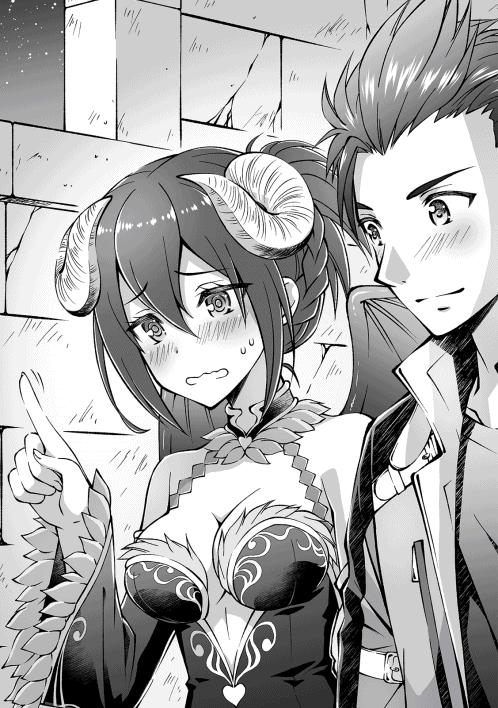
下手したら死ぬかと思った。
とにかく無事だったことを伝えようと、反射的に手を伸ばして──。
「きゃうんっ!? 」
指先が何かを掴んだ。
むにゅん。柔らかい。
嫌な予感がして視線をこらす。
誰かのお尻に触れていた。
アスモデウスは全身をビクっと痙攣 させて飛び跳ねる。
「あ......」
「ど、どこを触っているんですの！」
両手でお尻を隠して振り返るアスモデウス。
「す、すまん！ そういうつもりじゃなくて！ ってか、今の可愛い悲鳴って......？」
「〜〜〜〜〜〜っ！ び、び、敏感な場所を触るからですわ！」
耳まで真っ赤にして恥じらう色欲の悪魔。
「敏感？」
「だ、だから！ 悪魔の......ココは、普段なら尻尾が生えている部分ですの！ 触れられることは殆どないから、その......繊細でして......もうっ！」
だんだん小声になって。
しまいには、もじもじと照れくさそうに流し目になるアスモデウス。
「とにかく、おバカさんですわ！ 触るならもっと優しくですのよ！ 二人っきりで！」
「意味分かんねえよ!? あ、痛っ!? 」
後ろ足で蹴られて、俺は思わず悲鳴を上げた。
「楽しそうですね、グラッドさん」
にこやかな笑みを浮かべ、冷たく見下ろしてくるお姉さん。
その手に持っている棍棒が怖いです。
結局、俺が謝ることで許された。
......しばらく、アスモデウスは真っ赤な顔で目線を合わせてくれなかった。
† ׆
最上階には大きな礼拝堂が作られていた。
かつて色鮮やかなステンドグラスに彩られていたであろう窓はただの空洞と化し、並んでいたであろう机も椅子も祭壇も、すべて時の流れとともに風化してしまったのだろう。
何もかもが消え去った礼拝堂。
その中でただ一つ──正面の壁際に、人間大の石像が埃をかぶって佇んでいた。
──竜の翼と尻尾の生えた少女の像。
──祈りを捧げる手には、指輪がはめられている。
「竜神アリエス。そう呼ばれて奉られていた竜人の像ですわ。少女に羽が生えた姿だから、『始祖の女神』だなんていう説もありますのよ」
同じく像を見上げるアスモデウス。
「他にも天使を従える姫。世界の均衡を象徴する存在だとも言われておりますわね」
「実際に存在したんだっけ......」
「ですわ」
天使も、悪魔も、いまだその多くが謎に包まれた存在だ。
分かっているのは、天使と悪魔は対立した存在であるということ。
......その天使たちの主が女の子だなんて。
......俺も女神信仰に詳しいわけじゃないけど、聞いたこともなかった。
「なあアスモデウス、この少女の像って本当に伝説どおりなのかな」
「天使の幹部に聞いてみないと確認できませんわね」
アスモデウスが首を横に振る。
「でも、ここは女神信仰の中でも一番古い記録が記されている礼拝堂ですのよ。ほら、像の足元に小さな碑文があるでしょう？ それが彼女の名前ですわ」
「これが？ でも擦れて......」
碑文に残された名前。
だが目を見張っても、名前の表記が剣のような何かでえぐり取られているせいで読み取れない。
「契約者さんも知っているお名前ですわよ」
「俺が？」
「現代は女神信仰っていうと約束の地カーナが有名ですわよね？ でも、昔は世界中に女神信仰の礼拝堂がありましたのよ。その教義の名残は今も各地の都市に残っておりますわ。そして契約者さんもご存じの──」
アスモデウスがそう言いかけた矢先。
不意に、一陣の旋風が礼拝堂を駆けぬけた。
「妖精!? 」
半透明の羽が特徴的な種族だ。
大気と同化するようにほぼ透明で、目を凝らしても陽炎 のようにおぼろげな姿しか見えない小人。
それが俺たちの頭上に前触れもなく顕現していた。
「ここは妖精たちもお気に入りの場所なんですのよ。妖精の住処 ですわね」
「これが......」
妖精も人外だが、その愛らしい外見と人懐っこい性格が災いし、奴隷商人たちから狙われて、乱獲され、今では殆ど姿を見ないと聞いている。
『人間、イラッシャイ！』
嬉しそうに飛び跳ねながら、妖精が俺たちの周囲をくるりと回る。
そして、俺の肩に止まって頬を擦り寄せる妖精もいた。
『人間、良イ匂イ！』
『............好キ』
頷く妖精たち。
俺に身を寄せながらも、妖精たちは俺の正面に設置された竜神アリエスの像を見ていた。
もしかして、この像に近づいたから現れたのか？
「気づいたようですわね」
妖精を愛でていたアスモデウスが、ふと表情を真剣なものにした。
そこで気づいた──。
この少女の像が、ある悪魔にそっくりだということに。
「そう、女神アリエスには娘がおりましたのよ」
アスモデウスが胸元に手をあてた。
「娘の名前は──」
ふぅ、と小さく息を吐きだして。
「──嫉妬の悪魔リヴァイアサン。彼女こそが竜神アリエスの娘ですの」
静かに告げたのだ。
「馬鹿な......！」
呆然と、俺は否定した。
耳で聞いても、信じられなかった。
たしかに、リヴは悪魔らしくなかった 。
そもそも魔大陸で育ったのだから、悪魔であるはずがないのだ。
でも。
──大罪神剣。
それは、誰が作った剣なのだろうか。
現代の技術を以ってしても類似したものは作れないと言われる、幻の神剣。
ただ相手を殺すだけではない。
魂を束縛し、契約者の力を無限に引き出す力を持つ。
だからこそ、人類は神剣を危惧したのだろう。
出過ぎる杭は周囲の不安を煽 る。
このため、リヴは人類のために戦ったにも拘わらず、人類の手で三百年も封印されてしまった。
「わたくし、幼い頃からリヴちゃんと親しいのですけども、両親について一切語らないのですわ。七つの大罪に選ばれるほどの悪魔なのに、家系についてすべてが謎ですのよ。そこでこっそり調べたことがあるのですけども......」
アスモデウスは小さく囁いた。
「最後の王──先代魔王に殺害された前魔王から、口止めをされたのですわ」
リヴが抱える闇。
初めて彼女に感じた異様な寒気。
そして俺は理解した。
恐らく、リヴは生まれた時から異質な運命を辿っていたのだろうと。
天界側の存在でありながら、悪魔に育てられなければいけない理由があったのだろうと。
......ベルフェゴールも言ってたんだっけ。
......天界は地獄だ、って。
三百年前。
いったい、世界に何が起きていたのだろうか。
天使と悪魔、いや──《虚ろなる神》と《先代魔王》は、何故戦っていたのか。
竜神アリエスを封印したとされる憤怒 のサタンの目的は何か。
新たな謎が生まれてしまった。
「このお話は内緒でお願いしますわね」
「ああ。リヴから話してくるまで何も言わないよ。教えてくれてありがとうな」
「いえ、契約者さんのおかげですわ。遅くなりましたけど......助けてくれてありがとうですの。リヴちゃんの前だと恥ずかしかったから、今になってしまいましたわ」
「いや、でもあれは──」
「神剣の力なんて言うのはナシですわよ？」
俺の言いたいことはお見通し。
そう言いたげに、真正面からじっと見つめられた。
「最初に契約者さんを襲ったのはわたくしですわ。結論を述べると、わたくしは助けられました。ずっと先代魔王の娘として生まれたことに苦悩しておりましたのよ？ その悩みを、ほんの少しでも契約者さんが理解してくれたことが嬉しかったのですわ」
「......そ、そうか？」
「そうですのよ。死を覚悟してから目が覚めた時、不安で仕方ありませんでしたわ。一緒にいたリヴちゃんや契約者さんはどうなったのって。はたして無事なのか。治療さえままならない重傷を負ってたらどうしようかって」
「............」
「そう思うくらい、先代魔王の側近は不気味でしたの。それを倒したことは誇るべきことですし、称えられるべきなのですわ。本当ならわたくしの人生を捧げて恩返ししたいですけども──」
そこまで一気にまくしたてた後。
ちらりと、不安そうに俺たちの会話を伺っているお姉さんを見た。
「独占したら命の危険を感じますものね♥」
「え、え、どういう意味ですか!? どうして私を見て言うんですか!? 」
「......そうだな。理解してくれて嬉しいよ」
「うふふ。契約者さんも大変ですわね」
「私の話も聞いてくださいよ!? 」
恥ずかしげに声を大きくするお姉さんに、俺は心の内で苦笑した。
ありがとう──旅を始めてから、何度言われただろうか。
傭兵時代には決して言われなかった言葉。
嬉しくもあり、また照れくさくもある。
「だけど、まずはベルフェゴールをどうにかするまで油断できないな」
「もちろんですわ。だからこそ、この遺跡を選んだわけですのよ？」
「大聖塔 なら、ベルフェゴールの動きも制限できそうですね」
頭上を見るお姉さん。
天上は充分な高さがあるものの、崩落した箇所はどこにもない。
瓦礫は散乱しているが、片づければ戦うには充分な広さであった。
「明日、準備を整えて結界を仕掛けますの。もう日付が変わりましたから......ついに勝負ですわね」
「ああ。でもベルフェゴールの襲撃が急な事件だったから、準備が整ってないんだよな」
「心の準備もしておかないとですね」
「心の準備、か......」
そう呟いて。
俺の脳裏を過ぎったのは、過去の凄惨 な光景だった。
──目の前で狂気に染まったあの人。
──俺が命を奪った女性。
忘れられない。
忘れてはいけない記憶。
あんなにも自分の実力不足を悔いた瞬間はなかった。
何度夢に見ても足りないくらいの後悔の念。
「......俺も、できることはやらなきゃいけないよな」
「え？」
「ううん、独り言」
自分に言い聞かせるつもりで口にして、俺は古びた少女像に背を向けた。
「あ、おかえりなさいっ！ お兄ちゃん、お姉ちゃんたち！」
明け方、アルディアの町に戻って来た。
狐妹が出迎えてくれて、リヴたちは気持ちよさそうに寝ていると教えてくれた。
個人的には、リヴたちがこっそり俺たちを捜しに来るんじゃないかと、警戒をしていた。
もしくはリヴが狐妹を言いくるめて、俺たちの後を追ってくるんじゃないだろうか、と。
小さくなっても、一応は嫉妬の大罪にして悪魔なリヴだ。
置いていかれて黙っているほど大人しい娘ではない。
俺は自分の部屋に戻り、昼間まで休むことにした。
──コンコン。
その、あまり嬉しくないノックが響くまでは。
「どうぞ」
──がちゃり。
俺が声をかけると、ドアが開いた。
そこには......、
「契約者さん......ううっ......。お、お話があるんですのっ！」
胸元の開いたネグリジェ姿で取り乱した、半泣きのアスモデウスの姿があった。
「えっと、何があったんだ？ てか、お前さんも着替えるんだな。ずっとあの痴女みたいな服装かと思っていたぞ」
「違いますの！ あれはちゃんとした礼服ですわ！ それより大変なことになったんですの......！ 魔力を使いすぎて、魔法が使えなくなってしまったんですわ！」
「......寝たら回復しないのか？」
「うふふ！ わたくしは悪魔の中でも由緒正しきサキュバスの女王ですのよ！ 普通の悪魔とは体の作りからして違いますわ！」
「そうか、じゃあ頑張れよお休み。起きたら聞いてやるから」
「ああっ!? お待ちになって契約者さん！ サキュバスは他人から魔力を吸わないと回復ができない特性を持っているんですの！ このままではわたくし、本物のお荷物になってしまいますわ！」
ドアを閉めようとする俺を押し返し、ツカツカと歩み寄ってくるアスモデウス。
その迫力と泣き顔にたじたじとなった俺は、思わずベッドまで後ずさりしてしまい、そのまま仰向けに倒れてしまう。
アスモデウスはチャンスとばかりに馬乗りになり、俺を逃げられなくする。
「ぐすっ......契約者さん、一生のお願いがあるんですの......」
一生のお願いをする態度には見えないんだが......。
「首筋を......噛ませて欲しいのですわあああっ！」
「お、おい待て！ 襲ってくるなああああああっ!? 」
魔力を失くしたことがよほどショックだったのか、アスモデウスは獣のように俺の首筋を狙ってくる。
今だけは彼女が本物の『色欲』の悪魔に見えた。
そんな気はないんだろうけど。
「落ち着け！ 俺じゃなくてもお姉さんでも構わないだろう!? 」
俺の言葉に、アスモデウスは。
「う......いえ、その......こっそり寝ているお姉さんの首筋をですね、舐めようとしたのですわ......そしたら、寝たままなのに裏拳を喰らいまして......」
「......やったのか......」
寝ている時も、お姉さんは隙がないんだな。
「リヴちゃんたちでも構わないのですけども、子供を襲うって道徳的にどうかと思いますのよ！ それなら契約者さんにお願いするのが筋かと思いまして！」
「......いや、男に頼むのも相当アレだと思う」
嫌がられてないだけマシだけどさ。
「今まではどうやって魔力を補給していたんだ？」
「洗脳した女の子から、少しずつ分けて頂いていたのですわ」
「そういうことか......」
グランフェルトの街で襲ってきた時も、女性を三人洗脳していたっけ。
あの娘たちからも吸い取ったんだろうか。
「駄目ですの......？」
涙目のアスモデウス。
彼女を見ていると、本来の悪魔とはかけ離れた存在にしか見えなくなる。
アスモデウスが魔法を得意とする以上、このままってわけにもいかないだろう。
彼女は魔法以外に武器は持っていないのだ。
正直言って、魔力を供給するのは構わない。
アスモデウスは奥手だし、俺に何かをするとは思えない。
──だが、一つだけ問題がある。
「なあ、アスモデウス......ちょっと目をつむっててくれ」
「？ こうですの？」
すぅ、はぁ、と彼女の呼吸が聞こえる。
もう一度正面にいる姿をじっくりと見た。
（......えーっと、アスモデウス、だよな......？）
いつもと違って取り乱している。
ただそれだけ、印象が随分と変わって見えた。
頬を赤らめて目をつむっている仕草が妙に──可愛い。
「契約者さん、まだですの......？」
アスモデウスが不安げに呟いた。
その姿はまるで、可愛い女の子そのものであった。
（......アスモデウスが良くても、俺の心の準備が良くないんだよなぁ......）
我ながら情けない理由である。
たしかに、アスモデウスは俺に好意を持ってくれているような台詞を言ってたと思う。
でも、俺はどう思っているのだろうか？
出会ってから一週間も経っていない彼女を、まだ普通扱いはできそうにない。
......すまんな、焦らせて。
「待たせて悪かった。んじゃ、さっさと済ませてくれ」
極力、俺は冷静を保って言った。
と、アスモデウスはゆっくりと俺の首に手を回し、
「い、いただきますわね......？」
悪戯っぽさと不安を孕 んだ表情で、そう言ったのだ。
俺の腰を華奢な太腿 で挟むように、ぎゅっと抱きしめてくる。
一連の仕草に呆然としたが、豊満に揺れる胸の柔らかな感触と、アスモデウスの熱っぽい泣き顔が目の前にあるものだから、思わず言葉を失ってしまった。
......反則だろ、これ......。
理性で抑えられない自分が情けない。
「──っ！ はぁっ......はぁっ......──っ」
アスモデウスが荒い息を吐いたのと、噛んだのは同時だった。
血を吸っているわけではなく、魔力を呑み込むように吸い上げる。
俺はすぐ真横にあるアスモデウスを眺めながら、何度も深呼吸を行い、乱れている鼓動を落ち着かせた。
......この状況、やばいな......。
アスモデウスはただでさえ美人なわけで。
早い話が魅力がありすぎるのである。
ネグリジェを着ているものの、胸なんか隠れていない部分もあるし、にゅっ、と出ている白い肌は視覚的にも眩しくて、彼女が少し動くだけで、ぷるん、と揺れているのが伝わってくる。
初めて会った時から気になっていたのだが、アスモデウスはかなりのボリュームを持っていた。
その豊かな膨らみの谷間は指が何本も入りそうなほどで相当なものだが、横から見れば収まりきらない胸のサイドのラインが見えてしまう。
......俺は早く終わることを念じながら、欲望と戦い──五分後。
「うふふ、お腹いっぱいですわ♥ これでしばらくは持つと思いますのよ？」
「あ、ああ......よかったな......」
そう言ってアスモデウスは俺から離れようとして──。
「せっかくですから」
やっぱりやめて、言葉を続けた。
「スキルの修得も行いますわね♥」
† ׆
大罪神剣の契約者には、いくつかの恩恵が与えられる。
例えば、神剣で魔物を倒すと、尋常じゃない速度で【レベル】が上昇する。
レベルが上昇することで身体能力が強化されていく。
危険性の高い魔物を倒すほど、レベルを上昇させるための要素は増加しやすいようだ。
次に上げるのが、最も大事な要素──【スキル】である。
スキルは大罪神剣がなければ使用できないものが殆どであるが、肉体速度を数倍に加速させることが可能だったり、とてつもない破壊力で相手に襲いかかる技なんかも覚えられる。
これらが大罪神剣が恐れられている一番の理由だと思われる。
そして、一番の問題は──。
スキルは大罪神剣が変わると、受け継がれないのである。
つまり、嫉妬の大罪神剣で覚えたスキルは、色欲の大罪神剣で発動することができない。
だからこそ、一から修得する必要があった。
スキルがなければ、ベルフェゴールに勝つことは難しいだろうから。
「わたくしのスキルを修得する方法は簡単ですのよ」
アスモデウスはにへらと笑ってみせた。
彼女に案内を受けてやってきたのは、お姉さんたち女性陣の寝室である。
ベッドが足りないらしく、お姉さんとリリスは床にシーツを敷いて、抱き合うように眠っていた。当然ながら、俺たちには気付いていない。
「まず、わたくしが神剣の姿になりますから、握って欲しいのですわ♥ それだけで一部のスキルが修得できるはずですのよ？」
「了解」
そう言って、アスモデウスは短く『Vetz』と唱えた。
直後、赤い光芒 が瞬く。
その中心から現れたのは、美しく曲線を描きながら真っすぐ伸びていく神剣──。
片手サイズでありながら、荘厳な美しさはどんな宝剣にも引けを取らない。
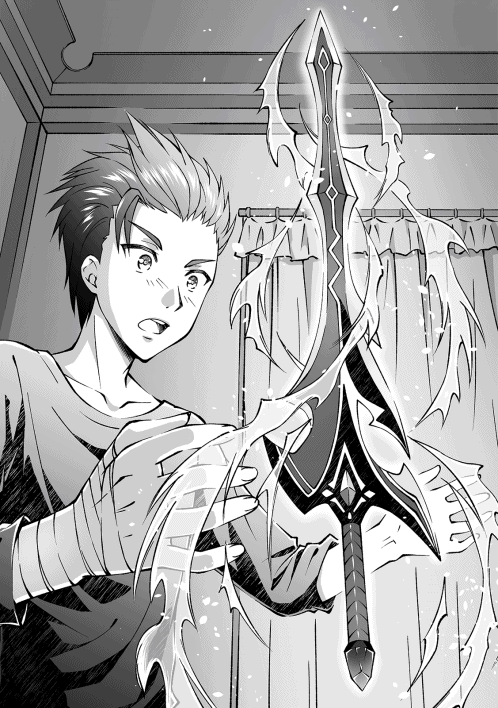
リヴが戦うための神剣だとしたら、まさしくこちらは飾っておくための神剣であった。
「ささ、契約者さん！ どうぞですわ！」
言われたとおり、神剣を握る。すると、力が溢れてきた。
色欲の大罪神剣『アスモデウス』
▼Unique abilities
・大罪ランク ： 第７位階級 サキュバスクイーン
・断罪レベル ： １
・煉獄魔眼 ： 対象を魅了し自身の配下として使役する
・人体封縛 ： 対象を魔力で絡め、肉体の自由を奪う
・獣魔の翼 ： 契約者に悪魔の翼を与え、空を飛び交う
・高速詠唱 ： 詠唱を速め、本来の時間の半分で発動できる
・色欲覚醒 ： ？？？
・万華鏡の牢獄 ： 対象の動きを完全に停止する
ふむ。
リヴは攻撃がメインだったが、アスモデウスはサポートが中心になるらしい。
「うふふ、次はリヴちゃんを見つめて欲しいですわ」
アスモデウスの指示に従って、リヴを見た。
気持ちよさそうに寝息を立てている。
可愛い寝顔である。
しかし、胸のサイズは殆ど変わってないんだな......。
その時だった。
▼Skill：『絶対防壁』を修得しました。
「へ？」
新たなスキルが手に入ってしまった。
略して『絶壁』と呼ぶらしく、十秒ほど全ての攻撃から身を守る技能らしい。
なかなか使えるスキルだと思う。
しかし......。
胸を見たから修得したのか？
「うふふ、これがわたくしの力なんですのよ？」
──異性の身体を見ることで、スキルを発現する力──。
「いやいやいや！ どんな力だよ!? 」
「色欲の力ですのよ？」
これ、バレたらセクハラに当たるのでは？
そんなことを考えて視線を逸らした。
「んん、パパぁ......大好きですぅ......」
「グラッドくん......ふふ、頑張ったねぇ......」
寝言が聞こえてくる。
▼Skill：『甘え上手』を修得しました。
▼Skill：『母性本能』を修得しました。
また新たなスキルを修得してしまった。
何の役にも立たなそうなスキルである。
「わたくしの神剣は、対象に対しての性的な欲求をスキルとして変換するのですわ！」
「......それ、俺の願望が丸出しってことか？」
「そうですわね♥」
最悪のスキル顕現だろ、それ。
と言いつつ、お姉さんを眺めてみた。
気持ちよさそうに寝ているが、やはり豊満な胸に目がいってしまう。
「......お胸──見てみたいですの？」
「はは、何を言ってるんだアスモデウス。いくら俺でもそんなことは《▼Skill：『擬視』を修得しました》 考えないぞ」
「スキルは本音を表しているようですわよ？」
なぜだろう。
男として負けた気がする。
「契約者さんで良かったですわ。わたくしの持ち主に相応しい色欲っぷりですの♥」
「......全然、嬉しくないんだが」
泣いてもいいだろうか？
「そうですの？ それなら、わたくしのを触ってみます？」
一旦、人化するアスモデウス。
胸を抱き寄せて、俺を上目遣いに見上げてくる。
まさに魔性の仕草だった。
ぐっ......アスモデウスが妙にノリノリだ......。
耐えろ、耐えるんだ、俺。
ここで変な目で見るわけには......。
「あっ、胸当てをするのを忘れていましたわ！」
「............っ！」
▼Skill：『野獣化』を修得しました。
「ほら、身体は正直ですわ♥」
「ああもう悪かった！ 勘弁してくれって！」
こうして俺は、幾つかのスキルを獲得することに成功した。
実際に使えそうなスキルは殆どないが、全くないよりはマシなのだろうか？
「お兄ちゃん、さっきから楽しそうだね」
「まぁ、こんな機会は滅多にないしな──うん？」
ゆっくりと首を横へ動かす。
「おはよ？」
「あ、ああ。おはよう」
そっか。狐妹もいたんだっけ。
冷ややかな視線が気になるが、女性の部屋に忍び込んだのだから当然の反応である。
俺はうんうんと頷いた。
「どこから見ていたんだ？」
「えっと、リヴさんの胸をじっと見つめるところから」
なんだ、最初から全部見られていたのか。そうかそうか、あはははは。
「お兄ちゃん！ そういうことは駄目だと思うよ！」
「違うんだ！ 誤解なんだっ！」
「ま、まずいですわね。お姉さんが起きたらわたくしも......逃げますわ！」
「あ、おいっ!? 」
逃げ出そうとしたアスモデウスだったが、数分後──。
目を覚ましたお姉さんに引きずられてきた。
事情を尋ねられた俺は嘘を吐けず、正直に答えるハメに。
「グラッドさんですから、別に嫌な気はしないですけど......あ、そうだっ！」
お姉さんから与えられた罰ゲーム。
それは、お姉さんと狐妹と、昼過ぎまで同じ毛布で眠ることであった。
これが罰？ と、思うかもしれないが、よく思い出して欲しい。
お姉さんは馬鹿力。
そして、親しい人間には抱きつく癖があるということを。
「お兄ちゃん......すやすや......」
「グラッドさん......離しませんからね......」
ぎゅっ。前後から挟まれた俺の骨が、軋んでいく。
「────っ！ ────！」
痛みでのたうち回る俺は今後、仲間を利用して色欲の大罪神剣のスキルを修得することは、金輪際しないと固く誓ったのであった。
† ׆
ちなみにアスモデウスは。
「うぅ、料理は苦手ですのに......」
「アスモ！ ご飯早くして！」
しばらく料理や他の家事を担当することになったそうな。
丁度いい花嫁修業になったらしい。
「......約束の三日が経ちましたね」
迷宮都市アルビオン、市街地南側──。
周囲の建物の中でもっとも高い展望台。
その屋上から周りの景観を一望し、モルディベートは呟いた。
「......そろそろ動き出す時ですね」
語り掛ける相手は、ベルフェゴール。
朝焼けに輝く炎の翼。
三百年前、ベルフェゴールが天界にいた時代に、無理やり植え付けられた聖獣の力。
恐ろしいほどに燃え上がるそれを──。
「誇り高き不屈の聖獣よ。貴方の力、今一度貸したまえ」
......轟。
たった一言。
ベルフェゴールから溢れる魔力が全身から溢れ、燃え上がる炎へと変貌する。
紅蓮の法術円環。
みるみるうちに巨大化する魔法円が、空中にまで広がっていく。
──活性化。
聖獣が本来の力を引き出すための法術だ。
そしてベルフェゴールに憑依するのは、天界でも特別な意味を持つ聖獣。
「始原聖獣 、よろしくね」
「............」
一歩踏み抜き、大空を舞う。
全てを翼に束ねるベルフェゴールは、上空へと噴き上がる気流に髪をなびかせながら、両手を広げて蒼穹 を仰いだ。
「......お母さん。すぐに助けてあげるからね。もうちょっとだけ待ってて」
ベルフェゴールは、重い体を引きずるように飛び去った。
──大聖塔、屋上。
夕方になって、ベルフェゴールを誘うための呪術を仕込んだ後、俺とリリスは屋上へ立っていた。アスモデウスが配置した使い魔──連絡用のコウモリが周囲を飛び交い、リリスは目を閉じて森の様子を警戒している。
「そろそろ......来るかもしれない」
「わかった」
俺は悠然とうなずいた。
ラミアは皮膚感覚が優れている。
他の種族に存在しない「第六器官」が存在し、僅かな振動と熱も見逃さない。
そう、熱を感じ取ることができるのだ。これだけ広い夜空の中から相手を探索するのは大変だが、もしも──フェニックスを宿している少女がいるのなら、見つけるのは簡単である。
そして、
「......十時の方向から来たよっ！」
夕焼けの中、リリスが叫んだ。
「行きますっ！」
連絡用のコウモリを通じて、陽動のお姉さんが動き出す。
その僅かな時間、俺は呟いた。
「ベルフェゴールの......母親が生きているって？」
「ええ、そうですわ」
大聖塔の一階入り口で待機するアスモデウスが、悠然と頷いた。
「大罪の悪魔に選ばれるにはいくつかの条件がありますわ。ひとつめが〈魔王〉の依頼を確実に遂行できる能力があること。ふたつめが禁忌を犯していないこと。──これは悪魔を裏切るという意味ですわね」
アスモデウスの声に、一瞬影がかすめた。
「そしてみっつめが、悪魔であること。悪魔には色々な種族がおりますわ。元天使、元神、知性を持った動物、ホムンクルスはもちろん、魔獣までが悪魔とされていますのよ。──ですが、それらが大罪の悪魔になることは例外を除いて認められておりませんわ」
「......ちょ、ちょっと待ってくれ。ベルフェゴールは元権天使だったから、話が繋がっていないと思うんだが」
「............そうでもないのですわ」
ふぅ、とアスモデウスは息をついた。
「......ベルフェゴールの父親も、先代魔王ですのよ」
アスモデウスが、かすんだ声で言う。
「先代魔王って......アスモデウスとベルフェゴールは姉妹なのか？」
「母親が違うのですわ。自らを裏切らない駒を作るために遥か昔──断罪戦争よりも前に種を残したそうですの。......とはいえ、わたくしも事実を知るまではまったく気がつきませんでしたけども」
お父様のことは触れちゃいけませんでしたからね、と悲しそうに付け足す。
実際、その通りだろう。
どこまでも権力を求め、忠実な部下を求める──手段を選ばない悪魔、それが先代魔王。
それは、まさしく王の思考だったのではないか。
「──ベルフェゴールの母は先代魔王に騙され、子を孕み、やがて天界で悪魔と天使の子供を産んでしまった。要約すれば、それこそが先代魔王の狙いだったのですわね。悪魔と天使が交わることは禁忌とされておりますの。そして、ベルフェゴールの出生を知った天界の上層部は、ベルフェゴールを葬ろうとしたんだと思いますわ」
憤然と、アスモデウスが唇を尖らせる。
「天界で笑いものになったからこそ、ベルフェゴールは天界を嫌い、悪魔に堕天したんですもの。ベルフェゴールを拾ったのが、契約者さんもご存じ──ベアトリクスですわ」
そうだったのか。
「以前、ベルフェゴールのことを尋ねられた時、詳しく話せませんでしたわね。契約者さんはお優しいですから、ベルフェゴールの過去を知ったらきっと──殺せないと思って、黙っておりましたの。ごめんなさいですわ」
アスモデウスの懺悔。
それはきっと、俺がアスモデウスを助けた時の状況を思い出したからだろう。
交戦中にもかかわらず、アスモデウスへトドメを刺さなかった自分。
──このままでは俺は殺される。
そう考えたからこそ、アスモデウスは告げなかったような気がした。
「ベルフェゴールは先代魔王のために戦っているのか？」
「......」
アスモデウスは、何も言わなかった。
ここまで聞いた限りだと、先代魔王の手の平でベルフェゴールは踊らされているような気がした。
天使の力を持ち、聖獣の力を宿し、悪魔として戦う少女。その戦闘力は桁違いだ。
個々の力なら、俺たちよりも強いだろう。
なによりも、あのリヴたちが一瞬で精神退行させられた。
あの嫉妬の悪魔が。
一度は大罪を全員封印したとされた、リヴが負けたのだ。
思い出しただけで震えが止まらない。
「グラッドくん？」
「──え？」
リリスが、心配そうに俺を見上げていた。
その頭に、髪飾りがついていた。
ふと、思い出した。
奴隷商人に捨てられたリリス。
あの悲しそうな目。温かな涙。失われた青春。家族。
......あぁ、そうか。
俺は、リリスのような子を守りたいんだ。
それを自覚したら、ひどくあっけなく覚悟ができていた。
「......すまん、大丈夫だ」
「パパ、どうかしたですか......？」
「ええ!? ぐらっど、何かされたの!? 」
「助けてもらったんだよ。お前たちは聖堂から出るんじゃないぞ」
「「 うん！ 」」
通信先で、テレサとリヴが元気よく返事をする。
「......お姉さん、大丈夫か？」
「──おそらく、そろそろ交戦するはずです。森の奥から凄まじい敵意を感じますから」
「だったら......アスモデウス、最初の罠を発動してもらえるか」
「お任せくださいですわ。フェイズ一を発動しますのよ♥」
言い切ったアスモデウスに、俺たちは安堵の笑いをこぼした。
お姉さんが、かすかな興奮を抑えて、淡々とした声で指摘する。
「今回は頼もしい援軍 がたくさんいますから、勝ち目がありますよ」
「うふふ、確実性には欠けていますわ♥」
「お話は後です。どうやら到着したみたいですよ」
月光が降り注ぐ中──。
お姉さんが息を呑む音がした。
「──わたしの接近に気づいたんだ。凄いね」
そう。先発隊はお姉さんにしか頼めない事だった。
妖狐族というか、そもそも狐は犬よりも優れた聴力を持っている。
お姉さんは天然気味なのでわかりにくいが、僅かな音を頼りに相手の居場所を見つけることが可能だ。
「でも、一人でわたしに勝てると思う？」
ベルフェゴールを相手にするには、お姉さん一人ではいささか分が悪い。
でも、
「一人じゃありませんよ。私には仲間がいますから」
その台詞は、もう楽しんで言った。
唇を三日月の形にして、最強の妖狐は、堂々と促したのだ。
「──さあ、出てきてください。《群狼の森》に潜む魔物たちよ」
森が一斉に動き出した。
「!? 」
ベルフェゴールが異変に気づいたが、もう遅い。
空は鳥たちが一斉に飛び交い、群狼の群れが囲むように集まっていく。
そう、まるで俺たちに協力するかのように。
「......これは、アスモデウスの持つ恋獄魔眼と同じ能力......？ まさか......」
ベルフェゴールは声を裏返らせた。お姉さんが駆け出す。
「さあ、勝負です。群狼の森に生きるすべての生物を洗脳したアスモデウスさんに敬意を払って──私がお相手をいたしましょう！」
戦闘が始まった。
† ׆
群狼の森を揺るがす鳴動。
そして、彼方から響き渡る魔法の炸裂音。
「始まったんだね......」
不安そうにリリスが呟いた。
「大丈夫だ、お姉さんなら上手くやってくれるよ」
「そうですわ」
アスモデウスが、にこやかな声で断言する。
「フェイズ一、お姉さんと群狼が協力し、ベルフェゴールを大聖塔まで誘導すること」
大聖塔を戦いの場に選んだ理由は、ベルフェゴールの機動力を制限したいからだ。
自由に空を飛べる以上、強力な魔法を使えない俺たちでは相手にするのが厳しい。
そうなると、攻撃が届く場所で戦う必要がある。
そして──。
「アスモデウスさん、もうそちらに到着します！」
「ええ、お任せくださいですわ！」
俺とリリスは、屋上から下を覗き込んだ。
お姉さんとアスモデウス。
群狼を振り切り、追いかけるベルフェゴール。
ただそれだけのことだが、アスモデウスはクスリと笑い──宣告した。
「お久しぶりですわね、ベルフェゴール！」
「......アーちゃんも、悪魔を裏切ったんだね」
「貴方に言われたくないですわ。話は聞きましたけど、今のあなたが先代魔王に手を貸す理由はないですわよね？」
「............関係ない」
アスモデウスにとって、ベルフェゴールはどういう存在なのだろうか。
腹違いの姉妹？
それとも、大罪の悪魔としての仲間？ いや、きっと違う。
「関係ありますわ」
それは、家族に向けるような温かさで。
「わたくし、あなたを救済してあげたいですの」
「............」
アスモデウスの、右目。恋獄魔眼。
心を蝕む──色欲の力。
「っ！」
ベルフェゴールは、それを受ける前にフェニックスの炎で壁を作り、飛翔した。
アスモデウスの恋獄魔眼の恐ろしさを知っているのだろう。
「狙い通りですわね」
アスモデウスは言った。
もしも、ベルフェゴールが飛ばなければ、勝ち目は無かったかもしれない。
「？」
「わたくしの力は、洗脳だけではないことをお忘れではなくて？」
そう、アスモデウスの一番の得意技は──。
「万華鏡の牢獄 、展開！」
大規模結界術式である。
突如、魔力に制御された空間が周囲を圧した。
「これは......」
大聖塔の周囲に仕掛けられた、魔法陣が唸りをあげたのだ。
「うふふ！ かかりましたわね、ベルフェゴール！」
「アスモデウスっ──！」
「行かせませんわ！」
アスモデウスと魔力が激突した。
それだけで、魔力が巨大な唸りをあげて衝撃となり、とてつもない強風を生み出す。
アスモデウスが指を鳴らした。
「......下が駄目なら上へ行くだけ」
ベルフェゴールはそう呟いた。
そして、屋上へと飛翔してくる。
「契約者さん、しばらく頼みますわ！」
「ああ！」
俺は返事をした。
そこへ、影が舞い下りる
「......そっか、わたしを誘導していたんだね」
ようやく俺たちの意図に気づいたらしい。
アスモデウスの結界がさらに縮まり、大聖塔ぎりぎりまで範囲を縮小した。
これで避けることもかなわない。
「俺と勝負してもらおうか。ベルフェゴール」
「......いいよ、勝負してあげる。そこの蛇のお嬢ちゃんは逃げたほうがいいよ」
かすかな逡巡だけで、ベルフェゴールはそう示唆した。
「これから本気で殺し合いを始めるから」
至極当然とばかりに、ベルフェゴールの魔力がさらに膨らんだ。
とんでもない魔力だ。
神剣無しの俺がまともにやりあっても、どこまで耐えられるか分からない。
......今思えば、俺に人助けなんて柄じゃなかった。
こんな事は、もっと英雄願望があるやつがやればいい。
──俺みたいに、辺境領主に良いように使われて、リヴに助けてもらって、その力で成り上がって、平和をかざすような考えのやつがやるべきことじゃないと思う。
「......お祈りは済んだ？」
ベルフェゴールの声を聞きながら。
──みんな、きっと怒るんだろうなぁ。
でも、俺がやらないと、どうせ全員、殺されるに決まっている。
そんなことを考えながら、俺は魔力 を解放した。
「......!? なに、その魔力は......」
本当に、一度きりの魔力。
俺の右腕に生じる破滅の魔力。
──再生の指輪 。
「俺さ、命を捨てる覚悟ができているんだ」
今度こそ、リヴをちゃんと守れるようになるって。
嫉妬のリヴァイアサンを守れる契約者になるって。
「そう決めたんだ」
覚悟が──浮かび上がる。
胸の奥で、何かが燃えた。
「我は願う！ 我は、嫉妬の契約者、我が血を贄に求む──ッ」
体に変化が起きたのは直後の事だった。
首に、肩に、太腿に、見えない刃で裂かれたような傷が走り、たちまち服を朱く染めていく。
苦痛に揺れるが、それでも詠唱を止めないように続ける。
「我は──っつ──嫉妬に選ばし者なり！ 汝の力を──ぐ──もって贖う！」
ごぼり、と唇から血が溢れた。
生贄になった内臓が軋み、全身へ熱い血が逆流する。
それでも唱える。
「我が肉体を剣となし、敵をうち滅ぼせ！」
指輪から集まった魔力。
ぱちぱちと、空間が軋む。
魔力が押し寄せる音が響いた。
人間ひとりどころか、この大聖塔すらも破壊してしまいそうな、魔力の塊。
「グラッドくん！」
リリスが叫んだ。
魔力が弾け、大聖塔に、たてつづけにヒビが入る。
硬く目をつむり、両手を握った。
轟音が木霊する。
「その身体は......？」
ベルフェゴールは怯えた。
それまでの余裕とは違う──恐怖が含まれた声で。
「本当は使わない方がいいんだろうな」
でも、それだと勝てないから。
「そして」
一拍の間をおき、
「......お仕置きしてやるよ。権天使ベルフェゴール」
「！」
刹那、悲鳴にならない声がけたたましく大聖塔を揺るがした。
「その、姿は......」
ベルフェゴールの恐怖に楽しむかのように、魔力が暴走する。
その瞳に映っているのは、俺の姿だ。
肌が──薄青い。
黒かった髪は白銀の輝きへと変化し、腰まで伸びている。
腕には獣の体毛が生え、肉体が人間を超越していた。
「......悪魔......」
俺は《虚ろなる神》の力を解き放った──。
──大聖堂上階、聖堂の間。
「ぐらっど？」
振り返り、リヴが呟く。
膨大な魔力で亀裂の走った聖堂の中で、リヴの脳裏に嫌な予感がした。
まさしくその予感が引き金となり、リヴは屋上へと向かって走ったのであった。
その道中、妖精たちが周囲に集まる。
『ドコイクノ？』
「ぐらっどを助けにいかなきゃ！」
聖堂を出て、扉から飛び出す。
『スゴク、嫌ナ魔力ヲ、感ジル』
『デナイ方ガ、イイヨ』
「だめなの！ あの魔力は......ぐらっどの、命を削ってる！ 生贄術式で、このままじゃ命が消えちゃうから！」
嫉妬の悪魔は焦るように駆けて──短くなった足で転んでしまった。
痛みに顔を顰める。
だけど、荒らげた呼吸を整え、涙をぬぐって、第一声でこう言った。
「──ぐらっど！」
その姿を見て、妖精たちが動いた。
『手伝ッテ、アゲヨウカ？』
リヴに向かって答える。
「ほんと!? 」
その答えに、リヴは叫んだ。
「早く！」
焦りも露わに、声を上げる。
「早く──早く！ ぐらっどのところへ！」
『ワカッタヨ』
妖精たちが集い、リヴを取り囲む。
詠唱した。
『──ディスペル──』
それは、呪術を解く妖精魔法の一つ。
魔法では説明がつかない超常的な現象を引き起こせるのも、妖精族ならではの特性であった。
リヴの姿が変わっていく。
五歳児ほどだった姿はぐんぐん成長し、元の十二歳を超えて、更に成長──。
白い肌、薄紅色の唇、大きな瞳。
背がぐんと伸び、どこか大人っぽい魅力を宿した女性の姿。
「信じ......られないわ」
リヴは自分の身体を見て絶句した。
自分の姿が、大罪神剣に力を吸われたはずの姿が、元に戻っていたからである。
『──長クハ、持タナイヨ──』
『──一時的ダカラ──』
『──助ケルナラ、急イデ──』
妖精たちの訴えに、リヴは走った。
「グラッドのバカ......なに、一人で先走っているのよ！」
言葉と裏腹に、目に涙を溜めていた。
いつも命を捨てようとする、あの青年のしそうなことだった。
だからこそ、リヴは許せなかった。
自分のせいで、愛する人が犠牲になることに。
「今いくから──待ってて！」
「............っ！」
戦端を切ったのは、俺の斬撃であった。
フェニックスの炎を打ち消し、ベルフェゴールに襲いかかったのである。
「......まだまだ」
ベルフェゴールが強がる。
打ち振られた右手から、青い炎の塊が飛んだ。
床に落ちたそれは、たちまち燃え盛り、炎の壁と化して、俺を呑み込もうとする。
「邪魔だ」
だが、その頬は、俺の一言で打ち消された。
《虚ろなる神》が作る絶対結界。
その結界を、膨大な数の魔力が押し込もうとして、すべて打ち消されたのだ。
「......そこ」
ベルフェゴールが炎の矢を放つ。
不死鳥の魔力を宿した炎は、やがて百を超える魔法となる。
そのすべてを以ってしても、わずか一秒にもならない魔法合戦であった。
「......」
ベルフェゴールは、その光景を吐きそうな表情で見ていた。
「......ありえない」
悟ったのだろう。
《虚ろなる神》の力がある限り、俺には勝てないと。
フェニックスの全ての魔力を使ったとしても......。
『......力が欲しいなら、望め。ノゾメ──』
誰かが脳裏で笑い、俺を支配するように滑り込んでくる。
心が黒く染まっていく。
今度は、ベルフェゴールが叫んだ。
「──グーちゃん、指輪を──」
「グラッド！ 指輪を捨てなさい！」
叫ぶや否や、誰かが俺の右腕を掴んだ。
再生の指輪が外される。
「............リヴ、なのか」
リヴは──俺の右腕に抱きついたままだった。
強く強く、右腕が潰されそうなほど、押さえつけていた。
「グラッドの、バカぁぁあああああああっ！」
「............リヴ？」
リヴの叫びに、俺はすぐに応じた。
「......いつも一人で先走って！ 今、何しようとしていたか分かっているの!? 」
それは......。
「《虚ろなる神》の力を使おうとしたんでしょ!? 死ぬわよ、本気で死ぬところだった！」
普段の冷静なリヴからは、決して見られない泣き顔だった。
よく見ると、普段と姿が違う。
服装も何処となく大人びて、背も高くなっている。
何が起きたのか知らないが、これが本来のリヴなのだろうか。
「グラッドが消えたら、あたしはどうやって生きていけばいいのよっ！」
震える唇を必死に動かして。
「......あたし、グラッドのいない世界なんて考えられないっ！」
睫毛 の先に大粒のしずくを浮かべ、言葉のほとんどが嗚咽にしかならなくて。
それでもリヴは、両の手を力いっぱい握りしめ、精一杯歯を食いしばっていた。
「ずるいわよ......やっと......あたしを守ってくれる人が現れたと思ったのに......何も、言わ......っないで......なんで、犠牲になろうとするの!? あたし......っだって、守りたい......のに......」
そして気づいた。
目の前のリヴが、一人の女性でしかないことに。
嫉妬の悪魔リヴァイアサンが、自分を愛してくれていることに。
「......すまん」
「おかえり......もう、勝手に消えようとしないで」
両手を広げたリヴが、微笑のまなざしでゆっくりと歩いてくる。
静かな屋上で、俺たちが互いに手を伸ばし、その指先がたしかに触れた──その刹那。
「──燃えて、蒼の炎」
雷光さながらの青白い火花が迸った。
「......悪いけど、わたしにも戦わないといけない理由......あるから！」
蒼雷は、激痛であった。
眼底を伝わり、脳髄が焼けそうだった。
でも、耐えられない痛みじゃない。
なら、戦える。
魔力を集中し、ベルフェゴールの動きを見極めてしまえば、今なら勝てる。
「......お母さんを、先代魔王の手から救わないといけないから！」
ベルフェゴールの訴え。
鼓膜を震わせる声は、激しい炎を生み出していく。
「だから、今回は退けないんだ！」
......ああ、今のでわかった。
ベルフェゴールは、母親を救いたかったのか。
彼女にとっては、本当に愛しい存在なのだ。
だから、思った。
──助けてやりたいって。
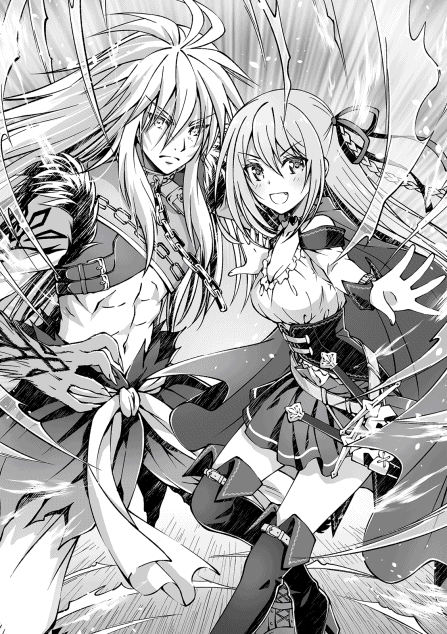
「リヴ一緒に頼めるか？」
「ええ、灼身術を使うわっ！」
リヴが、神剣へと姿を変えた。
大罪神剣第二形態──焔帝。
刃渡りが俺の背丈ほどもある大剣。
大剣を、構えた。
──力が込み上げる。
「............」
神剣に写った俺の瞳は、今までの黒色とは違っていた。
真紅の色へ──悪魔と同じ真っ赤な瞳へ変わっていたのだから。
「助けてやる」
俺は、そう叫んだ。
答えて、神剣を握り、さらに吼えた。
「──ベルフェゴール！」
その姿に衝き動かされるようにして叫ぶ。
神剣から魔力が放たれた。
以前は防げなかったベルフェゴールの圧倒的な魔力を、跳ね返す。
「なっ......」
俺はゆるやかに見下ろした。
「覚悟はいいか──ベルフェゴール」
「まだ──負けてない！」
ベルフェゴールの叫びが、魔力を凝 らせ、何かを掴むように動いた。
今までよりも強い魔力が集う。
「溶かせ！」
この大聖塔ごと、すべてを焼きつくそうとしているのか。
ベルフェゴールとフェニックスなら可能だろう。でも、
「天剣ミカヅチ！」
俺の一声で、粉砕された。
ベルフェゴールが生み出した炎が、天壌から降り注ぐ雷剣によって分解されていく。
「そんな......」
ベルフェゴールは喘いだ。
その瞬間、俺は飛び込んだ。
息を吸って、
「終わりだ！」
神剣を振り下ろした。
明らかに、手加減をした一撃。
「......っ」
ベルフェゴールは、目をつむっていた。
たとえ大罪の悪魔とはいえ、死は怖かったのだろう。
だが、俺が切ったのは身体じゃない。
「え......？」
眼を、開く。
神剣はベルフェゴールを逸れ、背後に見えたフェニックスを切り裂いた。
「グーちゃん......？」
「お前は、敵じゃない......」
見上げるベルフェゴールに、ぽつりと言った。
「母さんを、助けたいんだろう？」
泣き言でもなく、決心として告げた。
「なら、俺が手伝ってやるよ」
神剣を、ゆっくりと引く。
「まだ、俺は神剣がなければ戦えない。だけど、先代魔王は倒してみせる。だから......お前は、母親に胸を張れるような......そんな人になってみたらどうだ......？」
そのまま、姿が戻っていく。
リヴは元の姿で、ベルフェゴールは元の黄緑色のパーカー姿。
そして。
「おかえり......グラッド」
意識を失いかけた俺を支えたリヴの瞳に、いつもの姿の俺が映っていた。
「ただいま」
俺はそのまま、リヴに覆いかぶさったのだった。
† ׆
「......助けてくれたんだ」
戦いを終えたベルフェゴールが口をついたのは、そんな言葉だった。
「ご主人さま！」
「グラッドくんー！」
と、俺たちの目の前に、元の姿に戻った彼女たちが駆け寄ってきた。
「お疲れ様です」
「ふふ、大変でしたわね」
四者四様の呼びかけに、俺は笑いながら手を返す。
「よく頑張ったな、お前ら」
照れくさそうに、そして嬉しそうに笑う彼女たちに、俺は笑いかけた。
と、後ろからリヴが抱きついてきた。
「グラッド！」
「うわっ！」
「バカ！ でも、大好き！ 本当に離さないからね！ さっきみたいに犠牲になろうとしたら、一生怨むんだから！」
「わ、わかった、わかったから離れろって......」
「やっ！ しばらくはこのままよ！ ふふっ」
感激のあまり首筋にすりすりと頬をこすりつけてくるリヴに、俺は仏頂面で言った。
体裁だ。実はめっちゃドキドキしてる。
「なにがあったんですの？」
「はぅ、わかりません......」
アスモデウスが困惑している。
俺は、何とかリヴを引き離した。
そこへ、
「......グーちゃんって、変わってるね」
ベルフェゴールは、虚ろな声だった。
「............」
ベルフェゴールは、冷たい床に座ったまま沈思する。
重く、冷たい空気が走る。
そして、静かに言ったのだ。
「......お母さんが、先代魔王に捕まっているんだ」
ベルフェゴールが言った。
「......リーちゃんを連れてくれば、解放してくれるって言われて......」
そんな気はしていた。
黙々と、ベルフェゴールは俺を見ていた。
「......本当に、助けてくれるの？」
懇願するように、ベルフェゴールは言った。
だから、俺は頷いた。
「もちろんさ」
目線をベルフェゴールに合わせて、頷いた。
「お前も、戦いたくなかったんだろう？」
「......」
ベルフェゴールが言葉を失う。
代わりに、瞳を歪ませた。
「お前はずっと、誰かに頼りたかったんだろう？」
もう一度、言った。
「......ぁ............う......ぐす.........っ」
ベルフェゴールは泣いた。
その場で、女の子のように泣いていた。
とても脆くて、儚い涙が零れていく。
「よく頑張ったな」
「............う、ん......」
返事は、乾いて錆びついた笑いだった。
「......絶対、救ってやるよ」
神剣と契約した自分。
その状況だけに圧倒され、神剣を振ってきた。
今の俺だからこそできることがあるはずだから。
「......だから、待っててほしいんだ。絶対、助けてみせるから」
約束を守るために、ベルフェゴールの手に触れた。
「......あり、がと」
ベルフェゴールは立ち上がり、背中を向ける。
そのまま、無言で立ち去っていく。
けれどその声は、たしかにその背中に届いたはずだった。
「......大丈夫かしら」
「ま、どこかでまた会うだろう」
なんとなく、そんな気がしたのだった。
翌日、アルディアの街。
大通りに面した屋台は、夕方から多くの常連客によって混みあっていた。
「お兄ちゃんー、あのねあのね、わたがし買ってきたよ！」
「お、ありがとうな」
混雑する通りとは対照的に、俺は狐少女と祭りを楽しんでいた。
数えきれない出店が並び、通りそのものはリボンや美しい花など様々な装飾で飾り付けられ、華やかさが増している。
それと、もう一人いた。
お姉さんである。
「もうっ、妹が元気になったのは嬉しいですけど、はしゃぎすぎですよ」
「えへへー」
頭を撫でられ、狐少女は嬉しそうにしている。
「ところで、リヴさんたちは？」
「ああ。今回は迷惑をかけたから、一時間だけ三人で遊んできていいって言ってたよ。すごく複雑な顔をしていたが、リヴなりに感謝しているんだと思うぜ」
「うふふ、なんですかそれ」
お姉さんがクスクスと笑った。
「お兄ちゃん、お姉ちゃん、ほら行こうー！」
先を走る狐少女は、故郷のお祭りを堪能しているようだった。
「んじゃ、適当に見て回るか」
「はいっ！」
屋台は色々な物があり、ここでは東洋の文化を取り入れているらしい。
「お姉ちゃん、これも食べていい？」
「ええ、構わないですよ」
「やった！」
狐少女に手を引かれながら、お姉さんも林檎飴を食べていた。
姉と妹。
姉妹っていいもんだな。
「......明日からは大変ですね」
神聖樹──迷宮都市アルビオンまで、あと三日。
今朝、迷宮都市に謎の災害が起きたという情報が流れてきた。
街が破壊され、汚染され──けれど、それでも人は生きている。
先代魔王の復活と関係があると思うが、どちらにせよ急ぐ必要があるだろう。
「思えば色々なことがありましたよね」
「......そうだな」
狐少女が射的を楽しむ姿を眺めながら。
俺とお姉さんは、夜空を仰いだ。
闇夜に輝く星々の輝きは美しく、まるで吸い込まれそうなほどであった。
お姉さんはゆっくりと俺に視線を向けて。
「しかし、今回は本当に行き当たりばったりでしたね」
「う......」
「ベルフェゴールを倒そうとして《虚ろなる神》の力を使用。今回だって、アスモデウスさんが力を貸してくれなかったら、そもそも勝てていたかどうか」
「......そうなんだよな」
「そして今、無理をしすぎて全身カチコチの筋肉痛です」
「......そ、そんなことは......」
「グラッドさんは何事もなかったかのように鍛錬してますけど、今は楽しみましょう？」
お姉さんが俺に近づき、顔を近づけて──。
「でも、私たちを助けてくれたのは紛れもなくグラッドさんです。胸を張ってください」
どこか楽しげに、笑いかけるように言ってきた。
「グラッドさん、ちょっと......贅沢してもいいです？」
頬を赤めたお姉さん。
俺は咄嗟に言葉が思い浮かばず、どこか気まずい感じがした。
「むぅ、甲斐性なし」
「待て、待てって！......俺にはリヴがいるから」
と、背後から歓声。
「あれ、何かあったのか？」
俺は振り返ろうとした。
そこへ、狐少女が押しかけてきて、
「あっ、どうしたの？」
ばたばたと騒がしい足音に続き、遠慮もなしに俺にしがみついた。
体制を崩した俺は、目の前にいるお姉さんの顔へ飛び込んで......。
「────っ!? 」
柔らかなものが、唇に触れていた。
あ、あれ？
俺、今どういう状況なんだろうか。
そんな疑問を思い浮かべている間に、すぐ真横から足音がした。
浴衣を着た桜色の髪の少女。
顔は陰に隠れて見えないものの、全身から放出される魔力が真紅に輝いているのが見て取れた。
「グラッド、お姉さん、楽しそうね♪」
「「............」」
俺たちは答えない。
そして無言のまま突然、お互いに重なっていた唇を離して──。
そこへ、リヴが思いっきり俺の腕にしがみついてきた。
「ちょ、う、うわっ!? 顔が怖ええよっ!? 」
「むぅ、浮気したー......せっかくお洒落したのに！」
怒ったように肩で息をするリヴ。
その背後には、さらに見知った少女たちの顔がある。
「......ご主人さまがお姉さんと......」
「あはは、テレサが珍しく怒ってるですよー！」
テレサとネレサ。
なぜ分裂したままなのか知らないが、拗ねるように頬を膨らませている。
これはやばい。
「グラッドくんも大変だよね」
「誰とも付き合ってないですのにね♥」
遅れてやってきたリリスとアスモデウスが、困ったような表情で眺めていた。
けれどリヴが俺の腕を掴み、離れようとする。
「ついてきて」
「え？」
「いいから、早くこっちついてきて！」
有無を言わさず歩き出すリヴの後を、慌てて追いかけた。
北へ北へと進んでいく。
物言わぬその背中は、なんだか、彼女の無言の怒りを代弁しているような気がした。
「......リヴ、怒っているのか？」
その瞬間、先を行くリヴの足がぴたりと止まった。
「契約してからずっと一緒で、何度も命を助けてもらった。だからね、今日こそはきちんと告白しようと思っていたのに、誰かさんが楽しそうな顔をしているから、妬いちゃったんだもん」
横顔を向けたままのリヴ。
そのまぶたは、疲労のせいでわずかに腫れていた。
......楽しみにしていてくれたのか。
契約してからの日々、リヴは俺の傍にずっといた。
大罪神剣に肉体を奪われているから仕方なくと思っていた。
でも、そうではなくて。
自分の意思で一緒にいてくれたのか。
「......すまん」
「いいのよ。あたしだってホント言うと怒ってないの」
膨らませていた頬を戻し、リヴが悪戯っぽく微笑んだ。
「グラッドと街を歩くのは久しぶりなの。ずっと封印されていたから、こうして歩けるのがすごく楽しいかな？」
その言葉のとおり、リヴの口調は嬉しそうに弾んでいた。
「......あのさ、一つ聞いていいかしら？」
「なんだ？」
「グラッドはあたしと出会えてよかったの？ 迷惑だったなんてことは──」
「出会えて良かったよ」
不安を取り去るように口ずさむ。
「リヴと出会えて幸せだよ」
「ふふ、そう言ってくれると嬉しいかな」
くるりと振り返るその仕草に、彼女の着ている浴衣がふわりとなびいた。
いつもの旅衣とガラリと違う雰囲気だが、とても可愛らしい。
「ねね、グラッド、あたしと契約してくれる？」
「？......契約ならもうしているだろ？」
「あらあらー神剣と契約者以上の関係になりたいと思わないかしら？」
......それ以上の関係？
それってどういう意味だ。
いや、察してはいるんだが、間違っていたら恥ずかしい。
「リヴ、どういうことだ？」
「察してよ。何度も大好きって言ったじゃない」
もう一度振り返り、俺の腰に手を回しながら、リヴは意味深に片目をつむる。
「グラッドが言ってくれたでしょ。これからもずっと守ってくれるって。あなたがあたしやみんなを助けてくれたこと、大罪の悪魔と戦ったこと。全部、覚えているんだからね」
リヴが何かを荷物から取り出した。
光を浴びて輝く銀色の指輪。
それを、俺とリヴの指にはめていく。
──ペアリングだ。
「これ......まさか？」
結婚するときに使うはずの指輪。
それを俺に渡したってことは、つまり......。
「勇気いるんだからね。とりあえず仮結婚！ 先代魔王との戦いが終わったら、正式に結婚したいなぁって思ってね」
その言葉に、俺は再び指輪を見つめた。
この指輪には、リヴの魔力が込められていた。
それはつまり。
「......俺で、いいのか？」
緊張と驚きに、喉が震えてうまく喋れない。
竜の生贄に捧げられた自分が、リヴと結婚って............。
「さっさと先代魔王を倒しましょう。あなたがいないと毎日がつまらないから」
リヴは、にこやかに笑った。
「あ、でもね。テレサも同じものを用意していたわね。お姉さんもライバルだし、アスモデウスやリリスもグラッドに気があるようだから......やっぱり今、返事をしてもらおうかしら」
「......おいおい」
リヴの頭を撫でてやる。
「あのな、リヴ」
「なぁに？」
俺は静かに夜空を仰いだ。
「俺、ちゃんと契約者として戦うよ。だから──」
その視線をなぞるように、リヴも夜空を仰いだ。
「先代魔王を倒したら俺から返事するから。だから、今は待っててくれ」
それはきっと、俺にとっての精一杯の返事だった。
残る大罪の悪魔。
先代魔王の陰謀。
──今度こそ、本当の戦いが始まるから。
少しだけ照れくさそうに、けれど嬉しそうにリヴが言った。
「ふふ、もちろんよ」
そんな彼女に、俺は力強くうなずいた。
そう、こんな望まぬ運命に抗い、俺たちは幸せになろう。
たとえ世界から見捨てられても構わない。時間がかかってもいい。
いつか、必ず──。
「必ず契約するよ。今度は、俺たちの未来にために」
† ׆
その後、みんなと祭りを楽しんだ。
すでに祭りも終盤に差し掛かっているようで、先ほどよりも騒がしい喧騒が聞こえてくる。
進む先は適当だ。
気が付けば、アルディア湖の脇を歩いていた。
「......こんな時間にお散歩ですか？」
その時、誰かがが声をかけてきた。
「はい、そんなところで......」
挨拶を返そうと思って、女性の顔を見た。
その人の顔が、あの人 にあまりにも似ていたのだ。
ズキリ、と胸の奥が痛む。
「......ッ！」
なんで......。
「どうかしました？」
「......い、いえ」
鋭い痛みとは別に脂汗を額に浮かべる。
どうにか誤魔化さないと......。
「あっ、そういえば......」
そこで、女性は笑う。
「怠惰のベルフェゴールに勝ったんですね。さすが、狂犬を殺した方ですね」
「!? 」
なぜ、それを......。
俺は咄嗟に距離を取った。
「ふふ、逃げるなんて酷いですね」
女性が指を鳴らす。
すると、バキンッ、と妙な音がして、周囲から俺たち以外の気配が消え失せた。
一瞬で結界を張られた。
相当な魔法の使い手であった。
「......お前、モルディベートか!? 」
俺は動揺する心を無理やり抑えつけ、女性を睨む。
こちらの逃げ道を塞いだにしては、殺気は感じられない。
「違いますね」
はっきりと拒絶する。
「私はマモン。先代魔王の配下にして七つの大罪『強欲 』を司る悪魔」
油断なく相手の出方を伺う俺に対し、女性──マモンはあっさりと正体を明かした。
「......!? 」
──マモン。七つの大罪にして強欲の悪魔。
大罪神剣に封じ込められた一柱にして、敵の一人。
「なんで......！」
「......そんなに警戒しないでください。言ったでしょう？ 私は先代魔王の配下に過ぎません。命令があるまでは戦いません」
だからといって警戒を解けるか。
「何が目的だ？」
「ふふ、せっかちですね」
マモンは肩を竦め、首を横に振る。
「まぁいいでしょう。でも話をする前に、グラッドにはご褒美をあげないとね」
「何を......」
「大罪神剣を第三形態まで解放したのは、あなたが初めてなんですよ。よくあのベルフェゴールに勝ちましたね。びっくりしましたよ」
ぱちぱちぱち。
マモンは拍手する。
「さすがはこの肉体の唯一の弟子。あなたなら充分、利用価値があります」
随分と舐めた口を訊いてくれる。
「じゃあ、ご褒美です──あなたが十歳の時、あなたのご両親には洗脳を施しました。彼らの現在を見せてあげましょう」
マモンは、ニィ、と口の端を吊り上げて、無造作に手を伸ばした。
パチン。
瞬間、全身の血が逆流するような錯覚に陥った。
喉が一瞬で渇き、喘ぐように酸素を求める。
──映像が流れ込んでくる。
忘れていた両親の顔と名前。
あの日、変貌した両親の謎。
こいつが俺の友人だった傭兵に何をしたのかまで。
結果、誰もが夜盗に殺されて──。
今は王都の教会墓地で眠っている。
俺はマモンの手を、ガシリ、と掴んだ。
「あらあら、痛いですね。ついでに狂犬を殺した時の記憶も蘇らせてあげますよ？」
マモンはふざける。
全てが癇 に障 った。
「あなたが大罪神剣と出会うために、全ては仕組まれたことでした」
俺の人生はこいつらに操られていた──。
そうとでも言うつもりだろうか。
掴んでいる手に力が籠るが、マモンは涼しい顔をしている。
この世の誰よりも気になっていたあの人の姿で。
俺を笑っていた。
世界の誰よりも憎いのに、世界の誰よりも殺せない。
俺は思い出した。
なぜなら、マモンは十年前──。
あの人──モルディベートを洗脳し、肉体を奪ったからだ。
（レベル無限の契約者〜神剣とスキルで世界最強〜 第三巻 了）
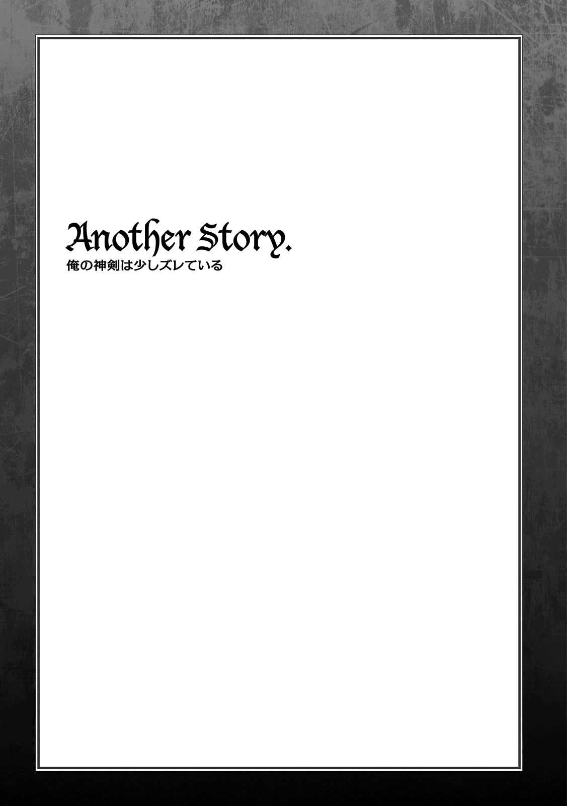
祭りを楽しんでいると、変わった飲み物が配られていた。
「これは、酒か？」
「いえ、甘酒ですね」
お姉さんは教えてくれた。
アルディアの街で作られる米を原料としたもので、お酒の仲間らしい。
ただし酔っぱらうほどの成分が入っているわけではないらしく、子供が飲んでも酔っぱらうことはまずないそうだ。
「新年を迎えたり、祝祭の時には甘酒を振る舞う風習があるんです。昔、この地方に鬼が現れたという伝承がありまして、疫病を流行らせたそうです。一人の勇敢な若者が甘酒を飲ませ、隙を見せた鬼を背後から倒したとか......」
古くから続く伝統行事ってことか。
「女神の祝福あらんことを......」
すると、巫女服を着た女性が、祈りの言葉と共に甘酒の入ったコップを手渡してくれた。
白く濁った酒は変わっているが、とても甘そうな匂いがする。
「あぅ、とってもお酒の香りが強いです......」
酒を飲まないテレサには刺激が強すぎたらしい。無理に飲まない方がいいだろう。
「あら、苦手ならあたしが飲んでもいいかしら？」
「はいですっ。お願いします」
流石は甘い物には目がないリヴである。
ご機嫌そうに飲み干すと、満足そうに顔を緩めた。
「うふふ、あたしは好きかも」
よっぽど甘酒が気に入ったのか、さらに杯を重ねていく。
俺たちは思い思いに祭りを楽しんでいたのだが......。
「グラッド......大好き......っ」
「はい？」
しばらくすると、リヴの様子がおかしいことに気付いた。
朱く染まった頬で俺を見上げて、はぁはぁ、と猛獣のように息が荒くなっている。
気のせいかもしれないが、目が蕩けているような......。
もしかして。
「うふふ。リヴちゃん、酔っぱらいましたわね」
アスモデウスが優雅に甘酒を嗜みながら教えてくれた。
マジかよ、あんな微量の酒で酔っぱらったのか......。
「グラッドは、もっとあたしを見るべきだと思うの......っ！」
そう言って、腕に絡んでくる。
リヴは人前で甘えることは滅多にないのだが、今日は理性のたがが外れているのか、ぼーっと俺を上目遣いで見つめて来た。
浴衣から晒される白い鎖骨。僅かに膨らみを帯びた胸。やたら色っぽい。
ベルフェゴールの精神退化は解けたはずだよな？
それなら、誰だよ、こいつ......。
普段とは違うリヴは色々と新鮮だった。
「あたしね、グラッドのことが昔から大好きだったのっ」
「......」
俺たちが出会ってから二か月しか経ってないけどな。
俺は大きくため息をついた。
「......酔っぱらってなかったら嬉しかったんだけどな」
祭りの華やかさに目を細めながら、心を落ち着ける。
今のリヴの言葉を真に受けても、適当にあしらっても、面倒なことになる予感しかしなかった。
それなら、ここは話を合わせるべきかもしれない。
「あたしがね、グラッドのどこを好きになったか知ってる？」
「......」
「理由はいっぱいあるのよ？」
何も言わなくても話が進んでいくしな。
「今から教えてあげるね！」
「あ、あぁ......」
リヴはすーはー、すーはー、と深呼吸を繰り返していた。
酔っぱらってても緊張はするようだ。
「......ちょっと待っててね」
「無理しなくていいぞ」
「大丈夫だから、ちょっとだけ待って」
リヴは俺から手を離すと、魔力を放出した。姿が変わっていく。
そこに現れたのは、大罪神剣の姿。
地面に突き刺さると、なぜか天高くまで輝く魔力を放出して、リヴは言った。
「よし、これならお話できるわねっ！」
「おい、注目を浴びてるんだがっ!? 」
「だって、この方がお話できるんだもん」
確かに緊張はほぐれているようだが、周囲の視線を独占するのも嫌である。
「よーし、今ならこの街だって簡単に火の海へ変えることができる気がするわー！」
「おい物騒なことを言うなって。住民が俺たちを避けて通ってるんだが」
「もちろんそんなことはしないわよ。うふふ、あーっははははっ！」
リヴは風の魔法を地面に放ちながら、飛びかかってきた。
「ま、待て待て！ どこの世界に剣に追いかけられる男がいるんだよっ!? 」
「貴重な体験じゃない？ ほらほら、抱き留めていいのよ？」
「抱き留められねえよ！ 俺が血だらけになる！」
「......あ。それもそうね」
リヴは大人しく少女の姿に戻った。
はは、もう目立つなんてレベルじゃないな。
「ごめんね。ちゃんと伝えるからね」
リヴは表情をひきしめると、顔をあげて俺を見た。
朱に染まった目がうるうるしている。
柔らかそうな髪が、夜風に揺れて。
ちっちゃな手が、俺の手を握って。
......まぁ、やっぱり可愛いんだよ。
外見だけ見れば、今まで恋人がいなかったことが不思議なくらいだ。
「えっとね、ずっと見ていたの......」
リヴの告白に、リリスとテレサが食い入るように見ている。
でも、俺のどこを好きになったのかは興味があるな。
唾を呑み込み、言葉を待つ。と、
「グラッドと出会ってすぐ、商業都市に立ち寄って......あたしの前でも平然とお風呂に入っていたでしょ？」
「......ああ」
ははは。
ま、当時は実体化してなかったから、性別が女性の神剣とだけ見ていたからな。
そういう恥ずかしい記憶を笑い話で済ませられるのは、良いことだと思う。
「リリスが加わって、魔法都市に向かう途中の川で水浴びをしていたら、グラッドが遠くからチラチラと見ていたことも、知っているわよ」
「うぐっ......」
俺はリリスとテレサの「ええっ!? 」って声と、お姉さんのにこやかな 視線に耐え切れず、胸を押さえて膝をついた。
仕方ないだろう、男一人だし......そういうのに興味が沸くんだ。
でも、ちょっとシャレにならない暴露だから止めてほしい、リヴ。
「それから温泉街ね。どこかのお店で買ってきた『まるごとマーメイド！』っていうえっちな本を馬車の荷台に隠していることも、」
「リヴさんリヴさん、ホント勘弁してください！ 俺が悪かったから許してくれっ！」
神はなんて試練を与えるのだろうか。
「はわわ......だ、大丈夫です！ 男性の方ですもんね！」
「そ、そうだよ！ グ、グラッドくん！」
テレサとリリスが真っ赤になって、慰めてくれている。
アスモデウスは楽しそうに笑っているが、お姉さんは別の意味で笑っていた。
狐少女は意味が分からなかったようで、首を傾げている。
ああ、うん......。
俺は、なんか疲れて、泣いていた。
晒された。
俺の秘密、晒されてしまった......。
「あたしね、そんなグラッドのことが──好きなの」
「絶対嘘だろっ!? 」
俺の過去を暴き、精神ダメージを与えた斬新な告白だな、おい。
「嘘じゃないわよ？ 見てない所では欲望に忠実なグラッドが悪魔らしくて好きだもん」
いや......。
リヴの認識がどうなっているか知らないが、俺に致命傷を与えたのは事実である。
「ま、まぁ、ありがとうよ。俺の欠点しか挙がらなかった気がするが、今度からは気を付けるよ」
するとリヴは、首を傾げた。
「えっ!? もう覗いてくれないの!? 酷いっ！」
「覗かれたいのかお前は」
「違うわよ。グラッドだから毎日覗かれてもいいのっ！」
「待て。まるで俺が日常的に覗きをしているような言い方をするな。ホント待て！」
「何よー、散々あたしを好きって言ってくれたのに！......ここでヘタれるなんて」
「この状況で喜ぶ奴がいるかっ!? 」
と、その時だった。
「そこまでですわ。お二人とも」
静観していたアスモデウスが、やたら色っぽく着こなした浴衣姿で止めに入った。
ふぅ、とため息をついて。
「リヴちゃんは昔からお酒を呑むと口が悪くなるのですわ。記憶はしっかり覚えているのですけども」
「あとで思い出したら悶えそうだな」
──と、まぁ。
酒に酔っぱらうとはそういうことなので、飲み過ぎないのが一番だな。
「でも、もったいないですわね、リヴちゃん。せっかくの告白のチャンスでしたのに」
アスモデウスはくすくすと笑いながら、俺の左腕に抱きついてきた。
リヴのこめかみに、青筋が「びきっ」と浮かび、
「離れなさい、アスモデウス！ グラッドはあたしのなんだからねっ！」
「うふふ、殿方の嫌がることをするようでは、嫌われてしまいますわよ？」
リヴを横目で見ながら、アスモデウスはいっそう体を押し付けてくる。
「お、おい、あんまりくっつけるなって......」
「あら、あいかわらず照れ屋ですわね。そういう初心 なところも大好きですわ♥」
リヴの目が逆三角形に吊り上がっていく。
「この......調子に乗らないでよ、アスモデウスっ！」
「大丈夫ですわよ。契約者さんは色香に屈しないですわ」
「グラッドはお胸が大きいと別なのよ！」
鋭いことを言う。
「ほら、嬉しそうにトリップしてた！」
やばい、リヴが下唇を噛みしめて、俺を睨んでいる。
怖い......この迫力は悪魔らしい。
「しかもアスモデウスの髪からはいつもイイ匂いがするし、吐息も甘いし、身体も柔らかいし、胸もふにふにだし......うぅ、あたしにないもの、全部持ってるしぃっ！」
「だって、努力していますもの。お胸は天然ですけど。天然ですけど」
なんで胸だけ強調したんだよ。
「わたくしも契約をしたのですから、このくらいのご奉仕くらいいたしますわよ？ 契約者さん、嫌がっているじゃないですの。あんまり酷いことを言ったら駄目ですわよ」
いや、アスモデウスも思いっきり楽しんでいたよな!?
「えっ......アスモデウスと契約したの!? いつ、どこで!? 」
あ、酔いが覚めたらしい。瞳孔が開いてる。
「先日ですわ。リヴちゃんが子供に退行している間に、ちょちょいっと......ですわ♥」
いたずらっぽく目を輝かせながら、アスモデウスが積極的に抱きついてくる。
リヴはますます顔を引きつらせて、
「ひ、人が覚えていない間に寝取るなんて......！」
「あら、今回はわたくしも頑張ったのですわよ？ 契約者さんを守ったのですから、もっと褒めてほしいですわね」
「そ、そそそそ、それはそうだけど......」
複雑そうだが、契約については渋々認めたようだ。
俺もちゃんと説明しておくべきだったな。
「......こんな痴女と契約するなんて」
その言葉に、アスモデウスが「やれやれ」と首を振り、
「わたくしは痴女じゃないですわよ？」
「ぱんつも履いてないのに？」
「いいえ、履いてますわよ？ ただ乙女たる者、愛しい人以外に見えないように工夫しているものなのですわ」
「だったらスリット消せばいいのに」
「それでは色欲の悪魔らしくないじゃないですの。──この方が嬉しいですわよね？ 契約者さん？」
「えっ？」
そこで俺に振るのかよ。
「契約者さんは、このスリットに色気を感じますわよね？」
アスモデウスは法衣を捲り、白く細い足を太ももまで露出した。
「痴女なんて嫌よね？ 嫌よね？」
リヴは涙目で、にじり寄って来る。
さて、何て答えよう。
俺はこめかみをポリポリとかいて、
「いやあ、俺ならテレサやリリスみたいな淑女の方が好きだけど」
「ふえっ!? 」
「ほ、ほんとに!? 」
テレサとリリスが同時に声をあげた。
心なしか嬉しそうだ。
「はぁっ？」
「なんですって？」
リヴとアスモデウスが同時に睨んできた。
今にも人を殺しそうな殺気を放っている。
「......すまん、なんでもない」
この二人が親友の意味を理解した。
こんなときだけ息がぴったりかよ。
「グラッドさんも大変ですね」
と、お姉さんがやってきた。
「リヴさん、アスモさん。まずは落ち着きましょう？」
一連のやり取りを見守っていて、助け船を出してくれるようだ。
「たしかにグラッドさんが誰にでも優しいのは周知の事実ですね」
「でも、女の子ばかり......」
「グラッドさんは男性にも優しいですよ？」
お姉さんがはっきりと伝えると、リヴはハッとしたように肩を跳ねた。
「グラッドさんは言ってたじゃないですか。淑女が好きって。あれはこういう争いをしてほしくないってことなんですよ」
「......そうだったのね」
「......申し訳ありませんでしたわ」
しゅん、と項垂れる二人。
「いや、俺も悪かったから、構わんさ」
「これで解決ですね。あ、最後に一つだけ。」
と、お姉さんはにっこりと笑って。
「グラッドさんが好きなのは、私の肉体 です」
「頼むから火種を撒かないでくれ......っ！」
──まぁ、こんな感じで。
俺たちの日常は修羅場で続いていくんだろう、と実感した出来事だった。
あとがき
みなさま、お久しぶりです。わたがし大五郎です。
書籍活動を始めて早くも一年以上となった私ですが、いまだに書きたいことを書くという悪癖が抜けません。
無論、『レベル無限の契約者』も趣味的な要素や描写を散りばめてしまいます。
このように自己中心的な作品ではありますが、読者のみなさまのご贔屓 もありまして三巻の刊行という節目を迎えることができました。厚くお礼申し上げます。
そして、編集・印刷・営業・販売に関わる方々、イラストの秋咲りお様にも毎度毎度お世話になっております。
さて、当シリーズについてですが、実は主人公をはじめとする主要キャラにＲＰＧをさせようというコンセプトにもとづいて、世界と設定をデザインしておりました。
彼らの物語は次巻で、ついに結末を迎える形になります。
......白状すると、最終巻がお送りできるのかは現時点ではお約束できません。身も蓋 もないお話ですが、どんな作品も売れなければ存在を許されない世界です。でも、彼らならきっと大丈夫でしょう。無事に平和を満喫するはずです（苦笑）。
また、他にも理由がございまして、しばらく入院することが決まりました。いや、発売時には入院中......手術中？ かもしれません？ 予定は未定ですね！
作家になる──その夢を叶えられて満足だったかなぁという反面、やっぱりもう一度作家として頑張りたいという気持ちで揺れている感じでしょうか。
そして体調面の問題で三巻の作業には殆ど関われず、担当さんが頑張ってくださいました。
いつもありがとうございます。貴方のおかげでここまで頑張ることができました。
私は他の作家さんに比べて問題が多いかもしれません。たくさん苦労をおかけしました。ですが私を、他の作家さんと一緒だと認めてくれて嬉しかったです。
担当さんにも、読者様にも、いつか恩を返せますように全力で頑張らせて頂きます。
願わくば次巻で皆様と再会できますように。
【全３巻合本版】レベル無限の契約者 〜神剣とスキルで世界最強〜
2019年３月１日発行 ver.1.0
著 者 わたがし大五郎
発行所 TOブックス
〒150-0045 東京都渋谷区神泉町18-８
松濤ハイツ２Ｆ
03-6452-5766（編集）
0120-933-772（営業フリーダイヤル）
Ⓒ2019 Daigorou Watagashi
※無断で複製・複写・データ配信などをすることは、かたくお断りいたします。
本電子書籍は下記にもとづいて制作しました。
レベル無限の契約者 〜神剣とスキルで世界最強〜
発行日 2017年２月１日 第１刷発行
レベル無限の契約者 〜神剣とスキルで世界最強〜２
発行日 2017年６月１日 第１刷発行
レベル無限の契約者 〜神剣とスキルで世界最強〜３
発行日 2017年９月１日 第１刷発行
本作品の全部または一部を無断で複製、転載、配信、送信したり、ホームぺージ上に転載することを禁止します。また、本作品の内容を無断で改変、改ざん等を行うことも禁止します。
本作品購入時にご承諾いただいた規約により、有償・無償にかかわらず本作品を第三者に譲渡することはできません。
本作品を示すサムネイルなどのイメージ画像は、再ダウンロード時に予告なく変更される場合があります。
本作品は縦書きでレイアウトされています。
また、ご覧になるリーディングシステムにより、表示の差が認められることがあります。